Agregační shlukování – Vývoj
Generace 0
Generace 1
Stabilita mezi generací 0 → 1:
Shluk 0 → 10: 4 jedinců (28.6 %)
Shluk 0 → 0: 4 jedinců (28.6 %)
Shluk 0 → 2: 2 jedinců (14.3 %)
Shluk 0 → 9: 1 jedinců (7.1 %)
Shluk 0 → 13: 1 jedinců (7.1 %)
Shluk 0 → 14: 2 jedinců (14.3 %)
Shluk 2 → 2: 4 jedinců (36.4 %)
Shluk 2 → 6: 2 jedinců (18.2 %)
Shluk 2 → 12: 3 jedinců (27.3 %)
Shluk 2 → 11: 1 jedinců (9.1 %)
Shluk 2 → 3: 1 jedinců (9.1 %)
Shluk 3 → 7: 1 jedinců (8.3 %)
Shluk 3 → 6: 2 jedinců (16.7 %)
Shluk 3 → 3: 2 jedinců (16.7 %)
Shluk 3 → 13: 1 jedinců (8.3 %)
Shluk 3 → 10: 2 jedinců (16.7 %)
Shluk 3 → 11: 1 jedinců (8.3 %)
Shluk 3 → 14: 1 jedinců (8.3 %)
Shluk 3 → 8: 2 jedinců (16.7 %)
Shluk 8 → 5: 1 jedinců (16.7 %)
Shluk 8 → 8: 4 jedinců (66.7 %)
Shluk 8 → 1: 1 jedinců (16.7 %)
Shluk 4 → 11: 1 jedinců (12.5 %)
Shluk 4 → 7: 2 jedinců (25.0 %)
Shluk 4 → 5: 1 jedinců (12.5 %)
Shluk 4 → 6: 2 jedinců (25.0 %)
Shluk 4 → 9: 1 jedinců (12.5 %)
Shluk 4 → 8: 1 jedinců (12.5 %)
Shluk 1 → 8: 2 jedinců (12.5 %)
Shluk 1 → 7: 1 jedinců (6.2 %)
Shluk 1 → 1: 6 jedinců (37.5 %)
Shluk 1 → 2: 3 jedinců (18.8 %)
Shluk 1 → 13: 3 jedinců (18.8 %)
Shluk 1 → 12: 1 jedinců (6.2 %)
Shluk 7 → 7: 4 jedinců (50.0 %)
Shluk 7 → 13: 1 jedinců (12.5 %)
Shluk 7 → 10: 1 jedinců (12.5 %)
Shluk 7 → 14: 1 jedinců (12.5 %)
Shluk 7 → 5: 1 jedinců (12.5 %)
Shluk 9 → 11: 1 jedinců (14.3 %)
Shluk 9 → 9: 3 jedinců (42.9 %)
Shluk 9 → 8: 2 jedinců (28.6 %)
Shluk 9 → 10: 1 jedinců (14.3 %)
Shluk 5 → 5: 4 jedinců (36.4 %)
Shluk 5 → 7: 3 jedinců (27.3 %)
Shluk 5 → 10: 3 jedinců (27.3 %)
Shluk 5 → 3: 1 jedinců (9.1 %)
Shluk 6 → 6: 4 jedinců (57.1 %)
Shluk 6 → 9: 1 jedinců (14.3 %)
Shluk 6 → 7: 1 jedinců (14.3 %)
Shluk 6 → 11: 1 jedinců (14.3 %)
Jaccardovo mapování a overlap: Generace 0 → 1
- Shluk 0 → 0 (Jaccard: 0.29, Overlap: 1.00)
- Shluk 2 → 2 (Jaccard: 0.25, Overlap: 0.44)
- Shluk 3 → 3 (Jaccard: 0.14, Overlap: 0.50)
- Shluk 8 → 8 (Jaccard: 0.31, Overlap: 0.67)
- Shluk 4 → 6 (Jaccard: 0.12, Overlap: 0.25)
- Shluk 1 → 1 (Jaccard: 0.35, Overlap: 0.86)
- Shluk 7 → 7 (Jaccard: 0.25, Overlap: 0.50)
- Shluk 9 → 9 (Jaccard: 0.30, Overlap: 0.50)
- Shluk 5 → 5 (Jaccard: 0.29, Overlap: 0.57)
- Shluk 6 → 6 (Jaccard: 0.31, Overlap: 0.57)
Posun centroidů mezi generací 0 → 1:
- Shluk 0: 953.2184
- Shluk 1: 810.7431
- Shluk 2: 791.4377
- Shluk 3: 687.3351
- Shluk 4: 759.2066
- Shluk 5: 1076.3490
- Shluk 6: 1221.9833
- Shluk 7: 936.9888
- Shluk 8: 957.3836
- Shluk 9: 1092.4219
Generace 2
Stabilita mezi generací 1 → 2:
Shluk 10 → 15: 3 jedinců (27.3 %)
Shluk 10 → 10: 6 jedinců (54.5 %)
Shluk 10 → 11: 2 jedinců (18.2 %)
Shluk 2 → 3: 1 jedinců (11.1 %)
Shluk 2 → 2: 6 jedinců (66.7 %)
Shluk 2 → 8: 1 jedinců (11.1 %)
Shluk 2 → 0: 1 jedinců (11.1 %)
Shluk 7 → 7: 5 jedinců (41.7 %)
Shluk 7 → 2: 1 jedinců (8.3 %)
Shluk 7 → 8: 1 jedinců (8.3 %)
Shluk 7 → 0: 1 jedinců (8.3 %)
Shluk 7 → 3: 2 jedinců (16.7 %)
Shluk 7 → 6: 1 jedinců (8.3 %)
Shluk 7 → 12: 1 jedinců (8.3 %)
Shluk 5 → 3: 1 jedinců (14.3 %)
Shluk 5 → 14: 1 jedinců (14.3 %)
Shluk 5 → 10: 3 jedinců (42.9 %)
Shluk 5 → 2: 1 jedinců (14.3 %)
Shluk 5 → 15: 1 jedinců (14.3 %)
Shluk 6 → 6: 6 jedinců (60.0 %)
Shluk 6 → 16: 3 jedinců (30.0 %)
Shluk 6 → 2: 1 jedinců (10.0 %)
Shluk 11 → 11: 4 jedinců (80.0 %)
Shluk 11 → 10: 1 jedinců (20.0 %)
Shluk 8 → 16: 1 jedinců (9.1 %)
Shluk 8 → 8: 4 jedinců (36.4 %)
Shluk 8 → 13: 1 jedinců (9.1 %)
Shluk 8 → 10: 1 jedinců (9.1 %)
Shluk 8 → 12: 1 jedinců (9.1 %)
Shluk 8 → 11: 1 jedinců (9.1 %)
Shluk 8 → 7: 1 jedinců (9.1 %)
Shluk 8 → 14: 1 jedinců (9.1 %)
Shluk 0 → 0: 2 jedinců (50.0 %)
Shluk 0 → 16: 1 jedinců (25.0 %)
Shluk 0 → 15: 1 jedinců (25.0 %)
Shluk 12 → 12: 1 jedinců (25.0 %)
Shluk 12 → 8: 1 jedinců (25.0 %)
Shluk 12 → 2: 1 jedinců (25.0 %)
Shluk 12 → 15: 1 jedinců (25.0 %)
Shluk 9 → 2: 1 jedinců (16.7 %)
Shluk 9 → 14: 1 jedinců (16.7 %)
Shluk 9 → 11: 3 jedinců (50.0 %)
Shluk 9 → 10: 1 jedinců (16.7 %)
Shluk 1 → 13: 1 jedinců (14.3 %)
Shluk 1 → 7: 1 jedinců (14.3 %)
Shluk 1 → 3: 1 jedinců (14.3 %)
Shluk 1 → 6: 1 jedinců (14.3 %)
Shluk 1 → 0: 2 jedinců (28.6 %)
Shluk 1 → 8: 1 jedinců (14.3 %)
Shluk 3 → 3: 2 jedinců (50.0 %)
Shluk 3 → 7: 1 jedinců (25.0 %)
Shluk 3 → 16: 1 jedinců (25.0 %)
Shluk 13 → 13: 3 jedinců (50.0 %)
Shluk 13 → 0: 2 jedinců (33.3 %)
Shluk 13 → 15: 1 jedinců (16.7 %)
Shluk 14 → 14: 4 jedinců (100.0 %)
Jaccardovo mapování a overlap: Generace 1 → 2
- Shluk 10 → 10 (Jaccard: 0.35, Overlap: 0.55)
- Shluk 2 → 2 (Jaccard: 0.43, Overlap: 0.67)
- Shluk 7 → 7 (Jaccard: 0.33, Overlap: 0.62)
- Shluk 5 → 10 (Jaccard: 0.19, Overlap: 0.43)
- Shluk 6 → 6 (Jaccard: 0.50, Overlap: 0.75)
- Shluk 11 → 11 (Jaccard: 0.36, Overlap: 0.80)
- Shluk 8 → 8 (Jaccard: 0.27, Overlap: 0.50)
- Shluk 0 → 0 (Jaccard: 0.20, Overlap: 0.50)
- Shluk 12 → 12 (Jaccard: 0.17, Overlap: 0.33)
- Shluk 9 → 11 (Jaccard: 0.23, Overlap: 0.50)
- Shluk 1 → 0 (Jaccard: 0.15, Overlap: 0.29)
- Shluk 3 → 3 (Jaccard: 0.22, Overlap: 0.50)
- Shluk 13 → 13 (Jaccard: 0.38, Overlap: 0.60)
- Shluk 14 → 14 (Jaccard: 0.57, Overlap: 1.00)
Posun centroidů mezi generací 1 → 2:
- Shluk 0: 1015.3992
- Shluk 1: 695.5944
- Shluk 2: 1051.3951
- Shluk 3: 912.5005
- Shluk 4: 438.7921
- Shluk 5: 940.0806
- Shluk 6: 801.7767
- Shluk 7: 1017.4677
- Shluk 8: 923.6296
- Shluk 9: 898.1930
- Shluk 10: 1122.5404
- Shluk 11: 1108.0691
- Shluk 12: 1215.2900
Generace 3
Stabilita mezi generací 2 → 3:
Shluk 15 → 15: 5 jedinců (71.4 %)
Shluk 15 → 10: 1 jedinců (14.3 %)
Shluk 15 → 13: 1 jedinců (14.3 %)
Shluk 3 → 3: 5 jedinců (71.4 %)
Shluk 3 → 17: 2 jedinců (28.6 %)
Shluk 7 → 7: 7 jedinců (87.5 %)
Shluk 7 → 10: 1 jedinců (12.5 %)
Shluk 6 → 12: 1 jedinců (12.5 %)
Shluk 6 → 7: 1 jedinců (12.5 %)
Shluk 6 → 6: 4 jedinců (50.0 %)
Shluk 6 → 11: 1 jedinců (12.5 %)
Shluk 6 → 17: 1 jedinců (12.5 %)
Shluk 11 → 11: 8 jedinců (80.0 %)
Shluk 11 → 12: 1 jedinců (10.0 %)
Shluk 11 → 3: 1 jedinců (10.0 %)
Shluk 16 → 15: 4 jedinců (66.7 %)
Shluk 16 → 10: 1 jedinců (16.7 %)
Shluk 16 → 17: 1 jedinců (16.7 %)
Shluk 0 → 6: 2 jedinců (25.0 %)
Shluk 0 → 13: 4 jedinců (50.0 %)
Shluk 0 → 2: 1 jedinců (12.5 %)
Shluk 0 → 18: 1 jedinců (12.5 %)
Shluk 8 → 2: 5 jedinců (62.5 %)
Shluk 8 → 3: 1 jedinců (12.5 %)
Shluk 8 → 14: 1 jedinců (12.5 %)
Shluk 8 → 6: 1 jedinců (12.5 %)
Shluk 10 → 10: 6 jedinců (50.0 %)
Shluk 10 → 18: 5 jedinců (41.7 %)
Shluk 10 → 11: 1 jedinců (8.3 %)
Shluk 2 → 17: 1 jedinců (9.1 %)
Shluk 2 → 2: 7 jedinců (63.6 %)
Shluk 2 → 12: 2 jedinců (18.2 %)
Shluk 2 → 7: 1 jedinců (9.1 %)
Shluk 12 → 12: 3 jedinců (100.0 %)
Shluk 14 → 14: 7 jedinců (100.0 %)
Shluk 13 → 13: 4 jedinců (80.0 %)
Shluk 13 → 2: 1 jedinců (20.0 %)
Jaccardovo mapování a overlap: Generace 2 → 3
- Shluk 15 → 15 (Jaccard: 0.45, Overlap: 0.71)
- Shluk 3 → 3 (Jaccard: 0.56, Overlap: 0.71)
- Shluk 7 → 7 (Jaccard: 0.70, Overlap: 0.88)
- Shluk 6 → 6 (Jaccard: 0.36, Overlap: 0.57)
- Shluk 11 → 11 (Jaccard: 0.67, Overlap: 0.80)
- Shluk 16 → 15 (Jaccard: 0.36, Overlap: 0.67)
- Shluk 0 → 13 (Jaccard: 0.31, Overlap: 0.50)
- Shluk 8 → 2 (Jaccard: 0.29, Overlap: 0.62)
- Shluk 10 → 10 (Jaccard: 0.40, Overlap: 0.67)
- Shluk 2 → 2 (Jaccard: 0.39, Overlap: 0.64)
- Shluk 12 → 12 (Jaccard: 0.43, Overlap: 1.00)
- Shluk 14 → 14 (Jaccard: 0.88, Overlap: 1.00)
- Shluk 13 → 13 (Jaccard: 0.40, Overlap: 0.80)
Posun centroidů mezi generací 2 → 3:
- Shluk 0: 840.7412
- Shluk 1: 652.2129
- Shluk 2: 1203.3901
- Shluk 3: 1178.3498
- Shluk 4: 919.5925
- Shluk 5: 988.6734
- Shluk 6: 862.3915
- Shluk 7: 161.2666
- Shluk 8: 952.2946
- Shluk 9: 983.0417
- Shluk 10: 922.1470
- Shluk 11: 1184.3254
Generace 4
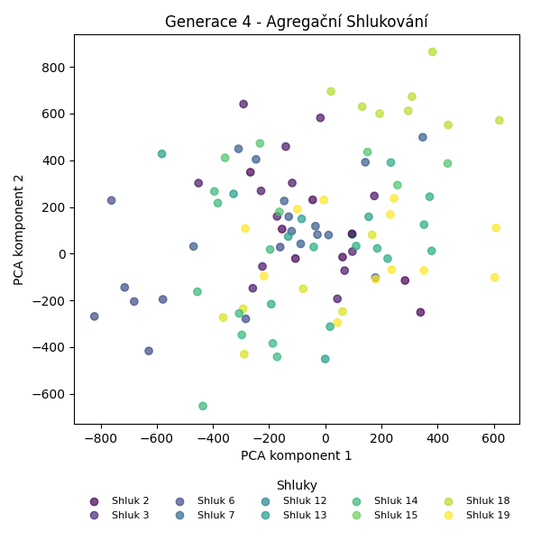
Stabilita mezi generací 3 → 4:
Shluk 15 → 15: 4 jedinců (44.4 %)
Shluk 15 → 2: 2 jedinců (22.2 %)
Shluk 15 → 20: 1 jedinců (11.1 %)
Shluk 15 → 6: 1 jedinců (11.1 %)
Shluk 15 → 13: 1 jedinců (11.1 %)
Shluk 3 → 3: 6 jedinců (85.7 %)
Shluk 3 → 13: 1 jedinců (14.3 %)
Shluk 7 → 3: 1 jedinců (11.1 %)
Shluk 7 → 7: 6 jedinců (66.7 %)
Shluk 7 → 6: 1 jedinců (11.1 %)
Shluk 7 → 19: 1 jedinců (11.1 %)
Shluk 17 → 7: 2 jedinců (40.0 %)
Shluk 17 → 6: 1 jedinců (20.0 %)
Shluk 17 → 20: 1 jedinců (20.0 %)
Shluk 17 → 14: 1 jedinců (20.0 %)
Shluk 12 → 12: 6 jedinců (85.7 %)
Shluk 12 → 19: 1 jedinců (14.3 %)
Shluk 11 → 13: 1 jedinců (10.0 %)
Shluk 11 → 19: 3 jedinců (30.0 %)
Shluk 11 → 3: 5 jedinců (50.0 %)
Shluk 11 → 20: 1 jedinců (10.0 %)
Shluk 6 → 6: 5 jedinců (71.4 %)
Shluk 6 → 7: 1 jedinců (14.3 %)
Shluk 6 → 13: 1 jedinců (14.3 %)
Shluk 2 → 2: 5 jedinců (35.7 %)
Shluk 2 → 7: 1 jedinců (7.1 %)
Shluk 2 → 3: 1 jedinců (7.1 %)
Shluk 2 → 20: 4 jedinců (28.6 %)
Shluk 2 → 13: 2 jedinců (14.3 %)
Shluk 2 → 19: 1 jedinců (7.1 %)
Shluk 10 → 15: 1 jedinců (11.1 %)
Shluk 10 → 7: 1 jedinců (11.1 %)
Shluk 10 → 18: 3 jedinců (33.3 %)
Shluk 10 → 13: 2 jedinců (22.2 %)
Shluk 10 → 20: 2 jedinců (22.2 %)
Shluk 14 → 14: 8 jedinců (100.0 %)
Shluk 13 → 20: 2 jedinců (22.2 %)
Shluk 13 → 2: 1 jedinců (11.1 %)
Shluk 13 → 7: 2 jedinců (22.2 %)
Shluk 13 → 13: 3 jedinců (33.3 %)
Shluk 13 → 18: 1 jedinců (11.1 %)
Shluk 18 → 18: 4 jedinců (66.7 %)
Shluk 18 → 20: 1 jedinců (16.7 %)
Shluk 18 → 15: 1 jedinců (16.7 %)
Jaccardovo mapování a overlap: Generace 3 → 4
- Shluk 15 → 15 (Jaccard: 0.36, Overlap: 0.67)
- Shluk 3 → 3 (Jaccard: 0.43, Overlap: 0.86)
- Shluk 7 → 7 (Jaccard: 0.38, Overlap: 0.67)
- Shluk 17 → 7 (Jaccard: 0.12, Overlap: 0.40)
- Shluk 12 → 12 (Jaccard: 0.86, Overlap: 1.00)
- Shluk 11 → 3 (Jaccard: 0.28, Overlap: 0.50)
- Shluk 6 → 6 (Jaccard: 0.50, Overlap: 0.71)
- Shluk 2 → 2 (Jaccard: 0.29, Overlap: 0.62)
- Shluk 10 → 18 (Jaccard: 0.21, Overlap: 0.38)
- Shluk 14 → 14 (Jaccard: 0.89, Overlap: 1.00)
- Shluk 13 → 13 (Jaccard: 0.18, Overlap: 0.33)
- Shluk 18 → 18 (Jaccard: 0.40, Overlap: 0.67)
Posun centroidů mezi generací 3 → 4:
- Shluk 0: 796.7488
- Shluk 1: 1118.9823
- Shluk 2: 696.0520
- Shluk 3: 1086.4146
- Shluk 4: 600.1479
- Shluk 5: 938.2415
- Shluk 6: 892.5067
- Shluk 7: 774.1179
- Shluk 8: 1124.9663
- Shluk 9: 992.1951
- Shluk 10: 1025.5457
Generace 5
Stabilita mezi generací 4 → 5:
Shluk 15 → 7: 1 jedinců (16.7 %)
Shluk 15 → 15: 3 jedinců (50.0 %)
Shluk 15 → 12: 2 jedinců (33.3 %)
Shluk 3 → 3: 7 jedinců (53.8 %)
Shluk 3 → 21: 1 jedinců (7.7 %)
Shluk 3 → 20: 4 jedinců (30.8 %)
Shluk 3 → 13: 1 jedinců (7.7 %)
Shluk 7 → 22: 1 jedinců (7.7 %)
Shluk 7 → 3: 1 jedinců (7.7 %)
Shluk 7 → 12: 1 jedinců (7.7 %)
Shluk 7 → 7: 6 jedinců (46.2 %)
Shluk 7 → 15: 1 jedinců (7.7 %)
Shluk 7 → 23: 1 jedinců (7.7 %)
Shluk 7 → 18: 2 jedinců (15.4 %)
Shluk 12 → 6: 1 jedinců (16.7 %)
Shluk 12 → 12: 4 jedinců (66.7 %)
Shluk 12 → 14: 1 jedinců (16.7 %)
Shluk 13 → 21: 3 jedinců (27.3 %)
Shluk 13 → 23: 1 jedinců (9.1 %)
Shluk 13 → 13: 7 jedinců (63.6 %)
Shluk 2 → 15: 2 jedinců (25.0 %)
Shluk 2 → 22: 1 jedinců (12.5 %)
Shluk 2 → 13: 5 jedinců (62.5 %)
Shluk 6 → 6: 4 jedinců (50.0 %)
Shluk 6 → 22: 2 jedinců (25.0 %)
Shluk 6 → 7: 2 jedinců (25.0 %)
Shluk 19 → 20: 4 jedinců (66.7 %)
Shluk 19 → 23: 2 jedinců (33.3 %)
Shluk 14 → 3: 1 jedinců (11.1 %)
Shluk 14 → 14: 6 jedinců (66.7 %)
Shluk 14 → 6: 2 jedinců (22.2 %)
Shluk 20 → 20: 6 jedinců (50.0 %)
Shluk 20 → 15: 3 jedinců (25.0 %)
Shluk 20 → 13: 2 jedinců (16.7 %)
Shluk 20 → 21: 1 jedinců (8.3 %)
Shluk 18 → 18: 8 jedinců (100.0 %)
Jaccardovo mapování a overlap: Generace 4 → 5
- Shluk 15 → 15 (Jaccard: 0.25, Overlap: 0.50)
- Shluk 3 → 3 (Jaccard: 0.47, Overlap: 0.78)
- Shluk 7 → 7 (Jaccard: 0.38, Overlap: 0.67)
- Shluk 12 → 12 (Jaccard: 0.44, Overlap: 0.67)
- Shluk 13 → 13 (Jaccard: 0.37, Overlap: 0.64)
- Shluk 2 → 13 (Jaccard: 0.28, Overlap: 0.62)
- Shluk 6 → 6 (Jaccard: 0.36, Overlap: 0.57)
- Shluk 19 → 20 (Jaccard: 0.25, Overlap: 0.67)
- Shluk 14 → 14 (Jaccard: 0.60, Overlap: 0.86)
- Shluk 20 → 20 (Jaccard: 0.30, Overlap: 0.50)
- Shluk 18 → 18 (Jaccard: 0.80, Overlap: 1.00)
Posun centroidů mezi generací 4 → 5:
- Shluk 0: 891.9511
- Shluk 1: 1127.9547
- Shluk 2: 690.2858
- Shluk 3: 1290.5412
- Shluk 4: 1002.8401
- Shluk 5: 977.5832
- Shluk 6: 301.8796
- Shluk 7: 695.5619
- Shluk 8: 804.4337
- Shluk 9: 1083.1439
- Shluk 10: 816.8208
Generace 6
Stabilita mezi generací 5 → 6:
Shluk 7 → 7: 6 jedinců (66.7 %)
Shluk 7 → 25: 2 jedinců (22.2 %)
Shluk 7 → 20: 1 jedinců (11.1 %)
Shluk 3 → 3: 3 jedinců (33.3 %)
Shluk 3 → 24: 1 jedinců (11.1 %)
Shluk 3 → 14: 1 jedinců (11.1 %)
Shluk 3 → 20: 1 jedinců (11.1 %)
Shluk 3 → 23: 2 jedinců (22.2 %)
Shluk 3 → 25: 1 jedinců (11.1 %)
Shluk 21 → 12: 3 jedinců (60.0 %)
Shluk 21 → 6: 1 jedinců (20.0 %)
Shluk 21 → 18: 1 jedinců (20.0 %)
Shluk 22 → 3: 1 jedinců (25.0 %)
Shluk 22 → 13: 2 jedinců (50.0 %)
Shluk 22 → 6: 1 jedinců (25.0 %)
Shluk 6 → 6: 7 jedinců (100.0 %)
Shluk 15 → 13: 2 jedinců (22.2 %)
Shluk 15 → 15: 4 jedinců (44.4 %)
Shluk 15 → 25: 2 jedinců (22.2 %)
Shluk 15 → 24: 1 jedinců (11.1 %)
Shluk 12 → 12: 4 jedinců (57.1 %)
Shluk 12 → 24: 3 jedinců (42.9 %)
Shluk 20 → 20: 8 jedinců (57.1 %)
Shluk 20 → 24: 1 jedinců (7.1 %)
Shluk 20 → 15: 2 jedinců (14.3 %)
Shluk 20 → 25: 2 jedinců (14.3 %)
Shluk 20 → 7: 1 jedinců (7.1 %)
Shluk 13 → 13: 6 jedinců (40.0 %)
Shluk 13 → 3: 1 jedinců (6.7 %)
Shluk 13 → 25: 6 jedinců (40.0 %)
Shluk 13 → 15: 2 jedinců (13.3 %)
Shluk 14 → 14: 7 jedinců (100.0 %)
Shluk 18 → 24: 2 jedinců (20.0 %)
Shluk 18 → 25: 2 jedinců (20.0 %)
Shluk 18 → 15: 1 jedinců (10.0 %)
Shluk 18 → 3: 1 jedinců (10.0 %)
Shluk 18 → 18: 4 jedinců (40.0 %)
Shluk 23 → 23: 4 jedinců (100.0 %)
Jaccardovo mapování a overlap: Generace 5 → 6
- Shluk 7 → 7 (Jaccard: 0.60, Overlap: 0.86)
- Shluk 3 → 3 (Jaccard: 0.25, Overlap: 0.50)
- Shluk 21 → 12 (Jaccard: 0.33, Overlap: 0.60)
- Shluk 22 → 13 (Jaccard: 0.17, Overlap: 0.50)
- Shluk 6 → 6 (Jaccard: 0.78, Overlap: 1.00)
- Shluk 15 → 15 (Jaccard: 0.29, Overlap: 0.44)
- Shluk 12 → 12 (Jaccard: 0.40, Overlap: 0.57)
- Shluk 20 → 20 (Jaccard: 0.50, Overlap: 0.80)
- Shluk 13 → 13 (Jaccard: 0.32, Overlap: 0.60)
- Shluk 14 → 14 (Jaccard: 0.88, Overlap: 1.00)
- Shluk 18 → 18 (Jaccard: 0.36, Overlap: 0.80)
- Shluk 23 → 23 (Jaccard: 0.67, Overlap: 1.00)
Posun centroidů mezi generací 5 → 6:
- Shluk 0: 247.4467
- Shluk 1: 931.3916
- Shluk 2: 1137.0268
- Shluk 3: 1158.2950
- Shluk 4: 924.7771
- Shluk 5: 1166.5476
- Shluk 6: 972.9542
- Shluk 7: 861.2401
- Shluk 8: 977.2209
- Shluk 9: 1148.8251
- Shluk 10: 811.1816
- Shluk 11: 814.6805
Generace 7
Stabilita mezi generací 6 → 7:
Shluk 7 → 7: 6 jedinců (85.7 %)
Shluk 7 → 3: 1 jedinců (14.3 %)
Shluk 3 → 20: 1 jedinců (16.7 %)
Shluk 3 → 3: 2 jedinců (33.3 %)
Shluk 3 → 26: 1 jedinců (16.7 %)
Shluk 3 → 15: 1 jedinců (16.7 %)
Shluk 3 → 18: 1 jedinců (16.7 %)
Shluk 12 → 12: 6 jedinců (85.7 %)
Shluk 12 → 20: 1 jedinců (14.3 %)
Shluk 6 → 14: 1 jedinců (11.1 %)
Shluk 6 → 3: 2 jedinců (22.2 %)
Shluk 6 → 6: 6 jedinců (66.7 %)
Shluk 13 → 13: 4 jedinců (40.0 %)
Shluk 13 → 15: 1 jedinců (10.0 %)
Shluk 13 → 25: 4 jedinců (40.0 %)
Shluk 13 → 26: 1 jedinců (10.0 %)
Shluk 15 → 18: 3 jedinců (33.3 %)
Shluk 15 → 15: 5 jedinců (55.6 %)
Shluk 15 → 25: 1 jedinců (11.1 %)
Shluk 24 → 7: 1 jedinců (12.5 %)
Shluk 24 → 15: 1 jedinců (12.5 %)
Shluk 24 → 18: 4 jedinců (50.0 %)
Shluk 24 → 20: 2 jedinců (25.0 %)
Shluk 20 → 23: 4 jedinců (40.0 %)
Shluk 20 → 13: 1 jedinců (10.0 %)
Shluk 20 → 20: 5 jedinců (50.0 %)
Shluk 14 → 25: 1 jedinců (12.5 %)
Shluk 14 → 26: 1 jedinců (12.5 %)
Shluk 14 → 20: 1 jedinců (12.5 %)
Shluk 14 → 14: 5 jedinců (62.5 %)
Shluk 25 → 26: 3 jedinců (20.0 %)
Shluk 25 → 15: 4 jedinců (26.7 %)
Shluk 25 → 7: 4 jedinců (26.7 %)
Shluk 25 → 25: 4 jedinců (26.7 %)
Shluk 23 → 23: 6 jedinců (100.0 %)
Shluk 18 → 18: 5 jedinců (100.0 %)
Jaccardovo mapování a overlap: Generace 6 → 7
- Shluk 7 → 7 (Jaccard: 0.50, Overlap: 0.86)
- Shluk 3 → 3 (Jaccard: 0.22, Overlap: 0.40)
- Shluk 12 → 12 (Jaccard: 0.86, Overlap: 1.00)
- Shluk 6 → 6 (Jaccard: 0.67, Overlap: 1.00)
- Shluk 13 → 13 (Jaccard: 0.36, Overlap: 0.80)
- Shluk 15 → 15 (Jaccard: 0.31, Overlap: 0.56)
- Shluk 24 → 18 (Jaccard: 0.24, Overlap: 0.50)
- Shluk 20 → 20 (Jaccard: 0.33, Overlap: 0.50)
- Shluk 14 → 14 (Jaccard: 0.56, Overlap: 0.83)
- Shluk 25 → 25 (Jaccard: 0.19, Overlap: 0.40)
- Shluk 23 → 23 (Jaccard: 0.60, Overlap: 1.00)
- Shluk 18 → 18 (Jaccard: 0.38, Overlap: 1.00)
Posun centroidů mezi generací 6 → 7:
- Shluk 0: 714.3021
- Shluk 1: 1091.5205
- Shluk 2: 1288.2364
- Shluk 3: 858.7777
- Shluk 4: 896.1738
- Shluk 5: 1051.9179
- Shluk 6: 990.9454
- Shluk 7: 743.6960
- Shluk 8: 992.3704
- Shluk 9: 968.0431
- Shluk 10: 834.7218
- Shluk 11: 783.2144
Generace 8
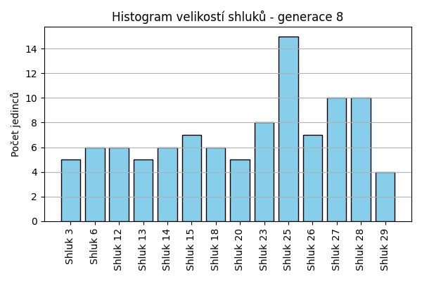
Stabilita mezi generací 7 → 8:
Shluk 7 → 27: 1 jedinců (9.1 %)
Shluk 7 → 26: 3 jedinců (27.3 %)
Shluk 7 → 28: 2 jedinců (18.2 %)
Shluk 7 → 25: 5 jedinců (45.5 %)
Shluk 20 → 3: 1 jedinců (10.0 %)
Shluk 20 → 20: 5 jedinců (50.0 %)
Shluk 20 → 27: 3 jedinců (30.0 %)
Shluk 20 → 13: 1 jedinců (10.0 %)
Shluk 12 → 12: 6 jedinců (100.0 %)
Shluk 3 → 27: 1 jedinců (20.0 %)
Shluk 3 → 3: 3 jedinců (60.0 %)
Shluk 3 → 25: 1 jedinců (20.0 %)
Shluk 14 → 14: 6 jedinců (100.0 %)
Shluk 13 → 13: 2 jedinců (40.0 %)
Shluk 13 → 28: 1 jedinců (20.0 %)
Shluk 13 → 25: 1 jedinců (20.0 %)
Shluk 13 → 29: 1 jedinců (20.0 %)
Shluk 6 → 6: 6 jedinců (100.0 %)
Shluk 15 → 15: 7 jedinců (58.3 %)
Shluk 15 → 27: 4 jedinců (33.3 %)
Shluk 15 → 3: 1 jedinců (8.3 %)
Shluk 18 → 28: 6 jedinců (46.2 %)
Shluk 18 → 18: 5 jedinců (38.5 %)
Shluk 18 → 26: 1 jedinců (7.7 %)
Shluk 18 → 13: 1 jedinců (7.7 %)
Shluk 23 → 23: 8 jedinců (80.0 %)
Shluk 23 → 27: 1 jedinců (10.0 %)
Shluk 23 → 13: 1 jedinců (10.0 %)
Shluk 25 → 25: 8 jedinců (80.0 %)
Shluk 25 → 29: 1 jedinců (10.0 %)
Shluk 25 → 28: 1 jedinců (10.0 %)
Shluk 26 → 18: 1 jedinců (16.7 %)
Shluk 26 → 29: 2 jedinců (33.3 %)
Shluk 26 → 26: 3 jedinců (50.0 %)
Jaccardovo mapování a overlap: Generace 7 → 8
- Shluk 7 → 25 (Jaccard: 0.24, Overlap: 0.45)
- Shluk 20 → 20 (Jaccard: 0.50, Overlap: 1.00)
- Shluk 12 → 12 (Jaccard: 1.00, Overlap: 1.00)
- Shluk 3 → 3 (Jaccard: 0.43, Overlap: 0.60)
- Shluk 14 → 14 (Jaccard: 1.00, Overlap: 1.00)
- Shluk 13 → 13 (Jaccard: 0.25, Overlap: 0.40)
- Shluk 6 → 6 (Jaccard: 1.00, Overlap: 1.00)
- Shluk 15 → 15 (Jaccard: 0.58, Overlap: 1.00)
- Shluk 18 → 18 (Jaccard: 0.36, Overlap: 0.83)
- Shluk 23 → 23 (Jaccard: 0.80, Overlap: 1.00)
- Shluk 25 → 25 (Jaccard: 0.47, Overlap: 0.80)
- Shluk 26 → 26 (Jaccard: 0.30, Overlap: 0.50)
Posun centroidů mezi generací 7 → 8:
- Shluk 0: 540.6637
- Shluk 1: 810.9575
- Shluk 2: 907.4931
- Shluk 3: 984.0256
- Shluk 4: 1050.0276
- Shluk 5: 1138.1134
- Shluk 6: 1132.2109
- Shluk 7: 985.1638
- Shluk 8: 968.3705
- Shluk 9: 1002.9055
- Shluk 10: 1139.4252
- Shluk 11: 945.2104
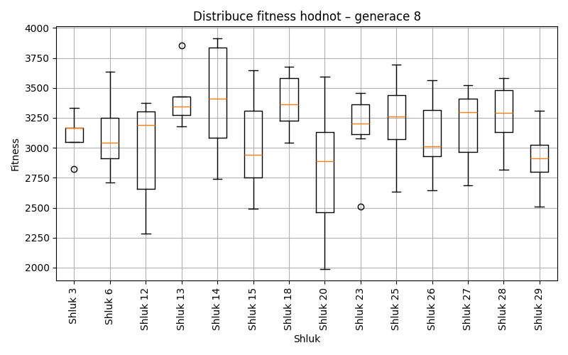
Generace 9
Stabilita mezi generací 8 → 9:
Shluk 27 → 3: 2 jedinců (20.0 %)
Shluk 27 → 26: 2 jedinců (20.0 %)
Shluk 27 → 27: 3 jedinců (30.0 %)
Shluk 27 → 18: 3 jedinců (30.0 %)
Shluk 3 → 3: 4 jedinců (80.0 %)
Shluk 3 → 25: 1 jedinců (20.0 %)
Shluk 12 → 30: 2 jedinců (33.3 %)
Shluk 12 → 12: 4 jedinců (66.7 %)
Shluk 14 → 14: 3 jedinců (50.0 %)
Shluk 14 → 3: 2 jedinců (33.3 %)
Shluk 14 → 30: 1 jedinců (16.7 %)
Shluk 13 → 25: 1 jedinců (20.0 %)
Shluk 13 → 23: 1 jedinců (20.0 %)
Shluk 13 → 13: 3 jedinců (60.0 %)
Shluk 6 → 6: 5 jedinců (83.3 %)
Shluk 6 → 12: 1 jedinců (16.7 %)
Shluk 15 → 15: 4 jedinců (57.1 %)
Shluk 15 → 25: 3 jedinců (42.9 %)
Shluk 28 → 28: 9 jedinců (90.0 %)
Shluk 28 → 3: 1 jedinců (10.0 %)
Shluk 26 → 26: 5 jedinců (71.4 %)
Shluk 26 → 15: 2 jedinců (28.6 %)
Shluk 23 → 23: 7 jedinců (87.5 %)
Shluk 23 → 27: 1 jedinců (12.5 %)
Shluk 25 → 28: 1 jedinců (6.7 %)
Shluk 25 → 12: 2 jedinců (13.3 %)
Shluk 25 → 25: 7 jedinců (46.7 %)
Shluk 25 → 26: 4 jedinců (26.7 %)
Shluk 25 → 23: 1 jedinců (6.7 %)
Shluk 29 → 12: 2 jedinců (50.0 %)
Shluk 29 → 14: 1 jedinců (25.0 %)
Shluk 29 → 25: 1 jedinců (25.0 %)
Shluk 18 → 18: 5 jedinců (83.3 %)
Shluk 18 → 27: 1 jedinců (16.7 %)
Shluk 20 → 3: 3 jedinců (60.0 %)
Shluk 20 → 23: 1 jedinců (20.0 %)
Shluk 20 → 14: 1 jedinců (20.0 %)
Jaccardovo mapování a overlap: Generace 8 → 9
- Shluk 27 → 27 (Jaccard: 0.25, Overlap: 0.60)
- Shluk 3 → 3 (Jaccard: 0.31, Overlap: 0.80)
- Shluk 12 → 12 (Jaccard: 0.36, Overlap: 0.67)
- Shluk 14 → 14 (Jaccard: 0.38, Overlap: 0.60)
- Shluk 13 → 13 (Jaccard: 0.60, Overlap: 1.00)
- Shluk 6 → 6 (Jaccard: 0.83, Overlap: 1.00)
- Shluk 15 → 15 (Jaccard: 0.44, Overlap: 0.67)
- Shluk 28 → 28 (Jaccard: 0.82, Overlap: 0.90)
- Shluk 26 → 26 (Jaccard: 0.38, Overlap: 0.71)
- Shluk 23 → 23 (Jaccard: 0.64, Overlap: 0.88)
- Shluk 25 → 25 (Jaccard: 0.33, Overlap: 0.54)
- Shluk 29 → 12 (Jaccard: 0.18, Overlap: 0.50)
- Shluk 18 → 18 (Jaccard: 0.56, Overlap: 0.83)
- Shluk 20 → 3 (Jaccard: 0.21, Overlap: 0.60)
Posun centroidů mezi generací 8 → 9:
- Shluk 0: 895.5908
- Shluk 1: 1103.9587
- Shluk 2: 900.6083
- Shluk 3: 905.4204
- Shluk 4: 783.7815
- Shluk 5: 948.7485
- Shluk 6: 775.2665
- Shluk 7: 104.0765
- Shluk 8: 871.9181
- Shluk 9: 589.8881
- Shluk 10: 1244.7802
- Shluk 11: 880.6910
- Shluk 12: 961.7922
Generace 10
Stabilita mezi generací 9 → 10:
Shluk 3 → 3: 5 jedinců (41.7 %)
Shluk 3 → 31: 4 jedinců (33.3 %)
Shluk 3 → 27: 1 jedinců (8.3 %)
Shluk 3 → 33: 2 jedinců (16.7 %)
Shluk 30 → 30: 3 jedinců (100.0 %)
Shluk 26 → 31: 3 jedinců (27.3 %)
Shluk 26 → 6: 5 jedinců (45.5 %)
Shluk 26 → 25: 2 jedinců (18.2 %)
Shluk 26 → 15: 1 jedinců (9.1 %)
Shluk 14 → 23: 2 jedinců (40.0 %)
Shluk 14 → 14: 2 jedinců (40.0 %)
Shluk 14 → 27: 1 jedinců (20.0 %)
Shluk 25 → 25: 11 jedinců (84.6 %)
Shluk 25 → 32: 1 jedinců (7.7 %)
Shluk 25 → 14: 1 jedinců (7.7 %)
Shluk 6 → 25: 1 jedinců (20.0 %)
Shluk 6 → 6: 4 jedinců (80.0 %)
Shluk 15 → 15: 4 jedinců (66.7 %)
Shluk 15 → 6: 1 jedinců (16.7 %)
Shluk 15 → 30: 1 jedinců (16.7 %)
Shluk 28 → 28: 8 jedinců (80.0 %)
Shluk 28 → 27: 1 jedinců (10.0 %)
Shluk 28 → 32: 1 jedinců (10.0 %)
Shluk 12 → 27: 3 jedinců (33.3 %)
Shluk 12 → 14: 2 jedinců (22.2 %)
Shluk 12 → 15: 2 jedinců (22.2 %)
Shluk 12 → 30: 1 jedinců (11.1 %)
Shluk 12 → 25: 1 jedinců (11.1 %)
Shluk 23 → 23: 7 jedinců (70.0 %)
Shluk 23 → 32: 2 jedinců (20.0 %)
Shluk 23 → 27: 1 jedinců (10.0 %)
Shluk 18 → 28: 6 jedinců (75.0 %)
Shluk 18 → 32: 1 jedinců (12.5 %)
Shluk 18 → 33: 1 jedinců (12.5 %)
Shluk 27 → 27: 3 jedinců (60.0 %)
Shluk 27 → 33: 2 jedinců (40.0 %)
Shluk 13 → 13: 3 jedinců (100.0 %)
Jaccardovo mapování a overlap: Generace 9 → 10
- Shluk 3 → 3 (Jaccard: 0.42, Overlap: 1.00)
- Shluk 30 → 30 (Jaccard: 0.60, Overlap: 1.00)
- Shluk 26 → 6 (Jaccard: 0.31, Overlap: 0.50)
- Shluk 14 → 14 (Jaccard: 0.25, Overlap: 0.40)
- Shluk 25 → 25 (Jaccard: 0.65, Overlap: 0.85)
- Shluk 6 → 6 (Jaccard: 0.36, Overlap: 0.80)
- Shluk 15 → 15 (Jaccard: 0.44, Overlap: 0.67)
- Shluk 28 → 28 (Jaccard: 0.50, Overlap: 0.80)
- Shluk 12 → 27 (Jaccard: 0.19, Overlap: 0.33)
- Shluk 23 → 23 (Jaccard: 0.58, Overlap: 0.78)
- Shluk 18 → 28 (Jaccard: 0.38, Overlap: 0.75)
- Shluk 27 → 27 (Jaccard: 0.25, Overlap: 0.60)
- Shluk 13 → 13 (Jaccard: 1.00, Overlap: 1.00)
Posun centroidů mezi generací 9 → 10:
- Shluk 0: 893.4539
- Shluk 1: 745.4219
- Shluk 2: 768.5660
- Shluk 3: 666.2474
- Shluk 4: 917.9571
- Shluk 5: 898.6721
- Shluk 6: 569.6199
- Shluk 7: 1200.8718
- Shluk 8: 973.0110
- Shluk 9: 1134.5101
- Shluk 10: 1416.1657
- Shluk 11: 837.1865
- Shluk 12: 1258.8465
Generace 11

Stabilita mezi generací 10 → 11:
Shluk 3 → 3: 3 jedinců (60.0 %)
Shluk 3 → 25: 1 jedinců (20.0 %)
Shluk 3 → 31: 1 jedinců (20.0 %)
Shluk 31 → 31: 6 jedinců (85.7 %)
Shluk 31 → 15: 1 jedinců (14.3 %)
Shluk 30 → 30: 5 jedinců (100.0 %)
Shluk 23 → 23: 5 jedinců (55.6 %)
Shluk 23 → 32: 4 jedinců (44.4 %)
Shluk 25 → 34: 5 jedinců (33.3 %)
Shluk 25 → 25: 8 jedinců (53.3 %)
Shluk 25 → 6: 1 jedinců (6.7 %)
Shluk 25 → 28: 1 jedinců (6.7 %)
Shluk 15 → 15: 5 jedinců (71.4 %)
Shluk 15 → 27: 2 jedinců (28.6 %)
Shluk 28 → 28: 5 jedinců (35.7 %)
Shluk 28 → 32: 1 jedinců (7.1 %)
Shluk 28 → 15: 4 jedinců (28.6 %)
Shluk 28 → 34: 1 jedinců (7.1 %)
Shluk 28 → 31: 2 jedinců (14.3 %)
Shluk 28 → 23: 1 jedinců (7.1 %)
Shluk 6 → 25: 4 jedinců (40.0 %)
Shluk 6 → 23: 2 jedinců (20.0 %)
Shluk 6 → 6: 4 jedinců (40.0 %)
Shluk 27 → 27: 4 jedinců (40.0 %)
Shluk 27 → 3: 2 jedinců (20.0 %)
Shluk 27 → 32: 4 jedinců (40.0 %)
Shluk 32 → 32: 3 jedinců (60.0 %)
Shluk 32 → 28: 1 jedinců (20.0 %)
Shluk 32 → 31: 1 jedinců (20.0 %)
Shluk 14 → 14: 4 jedinců (80.0 %)
Shluk 14 → 27: 1 jedinců (20.0 %)
Shluk 33 → 31: 2 jedinců (40.0 %)
Shluk 33 → 25: 1 jedinců (20.0 %)
Shluk 33 → 32: 2 jedinců (40.0 %)
Shluk 13 → 13: 3 jedinců (100.0 %)
Jaccardovo mapování a overlap: Generace 10 → 11
- Shluk 3 → 3 (Jaccard: 0.43, Overlap: 0.60)
- Shluk 31 → 31 (Jaccard: 0.46, Overlap: 0.86)
- Shluk 30 → 30 (Jaccard: 1.00, Overlap: 1.00)
- Shluk 23 → 23 (Jaccard: 0.42, Overlap: 0.62)
- Shluk 25 → 25 (Jaccard: 0.38, Overlap: 0.57)
- Shluk 15 → 15 (Jaccard: 0.42, Overlap: 0.71)
- Shluk 28 → 28 (Jaccard: 0.31, Overlap: 0.71)
- Shluk 6 → 6 (Jaccard: 0.36, Overlap: 0.80)
- Shluk 27 → 27 (Jaccard: 0.31, Overlap: 0.57)
- Shluk 32 → 32 (Jaccard: 0.19, Overlap: 0.60)
- Shluk 14 → 14 (Jaccard: 0.80, Overlap: 1.00)
- Shluk 33 → 31 (Jaccard: 0.13, Overlap: 0.40)
- Shluk 13 → 13 (Jaccard: 1.00, Overlap: 1.00)
Posun centroidů mezi generací 10 → 11:
- Shluk 0: 1064.4712
- Shluk 1: 401.7470
- Shluk 2: 583.3151
- Shluk 3: 1249.2800
- Shluk 4: 1107.3532
- Shluk 5: 1083.3445
- Shluk 6: 1014.7632
- Shluk 7: 1207.7256
- Shluk 8: 1039.1965
- Shluk 9: 1223.1493
- Shluk 10: 922.8942
- Shluk 11: 1217.6464
- Shluk 12: 1132.3875
Generace 12
Stabilita mezi generací 11 → 12:
Shluk 3 → 3: 3 jedinců (60.0 %)
Shluk 3 → 35: 2 jedinců (40.0 %)
Shluk 31 → 31: 9 jedinců (75.0 %)
Shluk 31 → 3: 3 jedinců (25.0 %)
Shluk 30 → 30: 4 jedinců (80.0 %)
Shluk 30 → 36: 1 jedinců (20.0 %)
Shluk 23 → 35: 3 jedinců (37.5 %)
Shluk 23 → 23: 4 jedinců (50.0 %)
Shluk 23 → 14: 1 jedinců (12.5 %)
Shluk 34 → 36: 1 jedinců (16.7 %)
Shluk 34 → 34: 5 jedinců (83.3 %)
Shluk 25 → 6: 3 jedinců (21.4 %)
Shluk 25 → 15: 4 jedinců (28.6 %)
Shluk 25 → 14: 5 jedinců (35.7 %)
Shluk 25 → 36: 1 jedinců (7.1 %)
Shluk 25 → 34: 1 jedinců (7.1 %)
Shluk 15 → 15: 7 jedinců (70.0 %)
Shluk 15 → 32: 2 jedinců (20.0 %)
Shluk 15 → 31: 1 jedinců (10.0 %)
Shluk 28 → 28: 7 jedinců (100.0 %)
Shluk 27 → 36: 3 jedinců (42.9 %)
Shluk 27 → 14: 4 jedinců (57.1 %)
Shluk 32 → 23: 3 jedinců (21.4 %)
Shluk 32 → 3: 1 jedinců (7.1 %)
Shluk 32 → 36: 5 jedinců (35.7 %)
Shluk 32 → 32: 5 jedinců (35.7 %)
Shluk 14 → 14: 4 jedinců (100.0 %)
Shluk 6 → 6: 5 jedinců (100.0 %)
Shluk 13 → 13: 3 jedinců (100.0 %)
Jaccardovo mapování a overlap: Generace 11 → 12
- Shluk 3 → 3 (Jaccard: 0.33, Overlap: 0.60)
- Shluk 31 → 31 (Jaccard: 0.69, Overlap: 0.90)
- Shluk 30 → 30 (Jaccard: 0.80, Overlap: 1.00)
- Shluk 23 → 23 (Jaccard: 0.36, Overlap: 0.57)
- Shluk 34 → 34 (Jaccard: 0.71, Overlap: 0.83)
- Shluk 25 → 14 (Jaccard: 0.22, Overlap: 0.36)
- Shluk 15 → 15 (Jaccard: 0.50, Overlap: 0.70)
- Shluk 28 → 28 (Jaccard: 1.00, Overlap: 1.00)
- Shluk 27 → 14 (Jaccard: 0.24, Overlap: 0.57)
- Shluk 32 → 32 (Jaccard: 0.31, Overlap: 0.71)
- Shluk 14 → 14 (Jaccard: 0.29, Overlap: 1.00)
- Shluk 6 → 6 (Jaccard: 0.62, Overlap: 1.00)
- Shluk 13 → 13 (Jaccard: 1.00, Overlap: 1.00)
Posun centroidů mezi generací 11 → 12:
- Shluk 0: 933.7609
- Shluk 1: 997.7894
- Shluk 2: 966.9719
- Shluk 3: 889.4623
- Shluk 4: 1099.1176
- Shluk 5: 1070.3164
- Shluk 6: 928.7097
- Shluk 7: 1305.0176
- Shluk 8: 1214.0754
- Shluk 9: 992.4336
- Shluk 10: 948.0648
- Shluk 11: 0.0000
- Shluk 12: 154.1984
Generace 13
Stabilita mezi generací 12 → 13:
Shluk 3 → 3: 5 jedinců (71.4 %)
Shluk 3 → 23: 1 jedinců (14.3 %)
Shluk 3 → 6: 1 jedinců (14.3 %)
Shluk 31 → 31: 6 jedinců (60.0 %)
Shluk 31 → 13: 3 jedinců (30.0 %)
Shluk 31 → 37: 1 jedinců (10.0 %)
Shluk 30 → 30: 4 jedinců (100.0 %)
Shluk 35 → 23: 2 jedinců (40.0 %)
Shluk 35 → 30: 2 jedinců (40.0 %)
Shluk 35 → 14: 1 jedinců (20.0 %)
Shluk 36 → 31: 1 jedinců (9.1 %)
Shluk 36 → 13: 1 jedinců (9.1 %)
Shluk 36 → 36: 5 jedinců (45.5 %)
Shluk 36 → 23: 3 jedinců (27.3 %)
Shluk 36 → 37: 1 jedinců (9.1 %)
Shluk 6 → 6: 7 jedinců (87.5 %)
Shluk 6 → 23: 1 jedinců (12.5 %)
Shluk 15 → 37: 5 jedinců (45.5 %)
Shluk 15 → 15: 6 jedinců (54.5 %)
Shluk 28 → 28: 6 jedinců (85.7 %)
Shluk 28 → 23: 1 jedinců (14.3 %)
Shluk 23 → 23: 6 jedinců (85.7 %)
Shluk 23 → 15: 1 jedinců (14.3 %)
Shluk 14 → 30: 2 jedinců (14.3 %)
Shluk 14 → 14: 9 jedinců (64.3 %)
Shluk 14 → 23: 1 jedinců (7.1 %)
Shluk 14 → 31: 2 jedinců (14.3 %)
Shluk 34 → 28: 3 jedinců (50.0 %)
Shluk 34 → 37: 2 jedinců (33.3 %)
Shluk 34 → 36: 1 jedinců (16.7 %)
Shluk 32 → 32: 5 jedinců (71.4 %)
Shluk 32 → 15: 2 jedinců (28.6 %)
Shluk 13 → 13: 2 jedinců (66.7 %)
Shluk 13 → 32: 1 jedinců (33.3 %)
Jaccardovo mapování a overlap: Generace 12 → 13
- Shluk 3 → 3 (Jaccard: 0.71, Overlap: 1.00)
- Shluk 31 → 31 (Jaccard: 0.46, Overlap: 0.67)
- Shluk 30 → 30 (Jaccard: 0.50, Overlap: 1.00)
- Shluk 35 → 30 (Jaccard: 0.18, Overlap: 0.40)
- Shluk 36 → 36 (Jaccard: 0.42, Overlap: 0.83)
- Shluk 6 → 6 (Jaccard: 0.78, Overlap: 0.88)
- Shluk 15 → 15 (Jaccard: 0.43, Overlap: 0.67)
- Shluk 28 → 28 (Jaccard: 0.60, Overlap: 0.86)
- Shluk 23 → 23 (Jaccard: 0.38, Overlap: 0.86)
- Shluk 14 → 14 (Jaccard: 0.60, Overlap: 0.90)
- Shluk 34 → 28 (Jaccard: 0.25, Overlap: 0.50)
- Shluk 32 → 32 (Jaccard: 0.62, Overlap: 0.83)
- Shluk 13 → 13 (Jaccard: 0.29, Overlap: 0.67)
Posun centroidů mezi generací 12 → 13:
- Shluk 0: 800.0852
- Shluk 1: 717.1997
- Shluk 2: 945.1699
- Shluk 3: 319.9521
- Shluk 4: 1200.5336
- Shluk 5: 1122.5118
- Shluk 6: 1125.7132
- Shluk 7: 238.1169
- Shluk 8: 1002.5839
- Shluk 9: 1156.4272
- Shluk 10: 900.0093
- Shluk 11: 1155.0918
Generace 14
Stabilita mezi generací 13 → 14:
Shluk 3 → 13: 3 jedinců (60.0 %)
Shluk 3 → 31: 1 jedinců (20.0 %)
Shluk 3 → 36: 1 jedinců (20.0 %)
Shluk 31 → 31: 7 jedinců (77.8 %)
Shluk 31 → 13: 1 jedinců (11.1 %)
Shluk 31 → 23: 1 jedinců (11.1 %)
Shluk 30 → 32: 2 jedinců (25.0 %)
Shluk 30 → 30: 6 jedinců (75.0 %)
Shluk 23 → 23: 8 jedinců (53.3 %)
Shluk 23 → 38: 6 jedinců (40.0 %)
Shluk 23 → 13: 1 jedinců (6.7 %)
Shluk 6 → 6: 8 jedinců (100.0 %)
Shluk 37 → 37: 7 jedinců (77.8 %)
Shluk 37 → 38: 1 jedinců (11.1 %)
Shluk 37 → 31: 1 jedinců (11.1 %)
Shluk 28 → 28: 6 jedinců (66.7 %)
Shluk 28 → 32: 1 jedinců (11.1 %)
Shluk 28 → 31: 1 jedinců (11.1 %)
Shluk 28 → 36: 1 jedinců (11.1 %)
Shluk 13 → 13: 4 jedinců (66.7 %)
Shluk 13 → 6: 1 jedinců (16.7 %)
Shluk 13 → 39: 1 jedinců (16.7 %)
Shluk 36 → 36: 4 jedinců (66.7 %)
Shluk 36 → 38: 2 jedinců (33.3 %)
Shluk 14 → 38: 4 jedinců (40.0 %)
Shluk 14 → 15: 5 jedinců (50.0 %)
Shluk 14 → 36: 1 jedinců (10.0 %)
Shluk 15 → 15: 7 jedinců (77.8 %)
Shluk 15 → 39: 2 jedinců (22.2 %)
Shluk 32 → 38: 1 jedinců (16.7 %)
Shluk 32 → 36: 1 jedinců (16.7 %)
Shluk 32 → 23: 1 jedinců (16.7 %)
Shluk 32 → 37: 1 jedinců (16.7 %)
Shluk 32 → 32: 2 jedinců (33.3 %)
Jaccardovo mapování a overlap: Generace 13 → 14
- Shluk 3 → 13 (Jaccard: 0.27, Overlap: 0.60)
- Shluk 31 → 31 (Jaccard: 0.58, Overlap: 0.78)
- Shluk 30 → 30 (Jaccard: 0.75, Overlap: 1.00)
- Shluk 23 → 23 (Jaccard: 0.47, Overlap: 0.80)
- Shluk 6 → 6 (Jaccard: 0.89, Overlap: 1.00)
- Shluk 37 → 37 (Jaccard: 0.70, Overlap: 0.88)
- Shluk 28 → 28 (Jaccard: 0.67, Overlap: 1.00)
- Shluk 13 → 13 (Jaccard: 0.36, Overlap: 0.67)
- Shluk 36 → 36 (Jaccard: 0.40, Overlap: 0.67)
- Shluk 14 → 15 (Jaccard: 0.29, Overlap: 0.50)
- Shluk 15 → 15 (Jaccard: 0.50, Overlap: 0.78)
- Shluk 32 → 32 (Jaccard: 0.22, Overlap: 0.40)
Posun centroidů mezi generací 13 → 14:
- Shluk 0: 861.7938
- Shluk 1: 961.7358
- Shluk 2: 426.0073
- Shluk 3: 764.7259
- Shluk 4: 1175.8912
- Shluk 5: 45.7032
- Shluk 6: 1049.9240
- Shluk 7: 1222.0385
- Shluk 8: 869.6714
- Shluk 9: 388.3957
- Shluk 10: 995.9566
- Shluk 11: 1035.5236
Generace 15
Stabilita mezi generací 14 → 15:
Shluk 13 → 13: 5 jedinců (55.6 %)
Shluk 13 → 6: 1 jedinců (11.1 %)
Shluk 13 → 39: 1 jedinců (11.1 %)
Shluk 13 → 38: 1 jedinců (11.1 %)
Shluk 13 → 15: 1 jedinců (11.1 %)
Shluk 31 → 31: 8 jedinců (80.0 %)
Shluk 31 → 41: 2 jedinců (20.0 %)
Shluk 32 → 32: 4 jedinců (80.0 %)
Shluk 32 → 23: 1 jedinců (20.0 %)
Shluk 23 → 23: 7 jedinců (70.0 %)
Shluk 23 → 32: 2 jedinců (20.0 %)
Shluk 23 → 42: 1 jedinců (10.0 %)
Shluk 6 → 40: 4 jedinců (44.4 %)
Shluk 6 → 6: 4 jedinců (44.4 %)
Shluk 6 → 23: 1 jedinců (11.1 %)
Shluk 37 → 37: 5 jedinců (62.5 %)
Shluk 37 → 41: 3 jedinců (37.5 %)
Shluk 28 → 28: 6 jedinců (100.0 %)
Shluk 36 → 36: 6 jedinců (75.0 %)
Shluk 36 → 38: 1 jedinců (12.5 %)
Shluk 36 → 15: 1 jedinců (12.5 %)
Shluk 30 → 40: 1 jedinců (16.7 %)
Shluk 30 → 36: 3 jedinců (50.0 %)
Shluk 30 → 6: 1 jedinců (16.7 %)
Shluk 30 → 32: 1 jedinců (16.7 %)
Shluk 38 → 40: 2 jedinců (14.3 %)
Shluk 38 → 36: 3 jedinců (21.4 %)
Shluk 38 → 38: 6 jedinců (42.9 %)
Shluk 38 → 39: 2 jedinců (14.3 %)
Shluk 38 → 42: 1 jedinců (7.1 %)
Shluk 15 → 15: 4 jedinců (33.3 %)
Shluk 15 → 31: 1 jedinců (8.3 %)
Shluk 15 → 40: 5 jedinců (41.7 %)
Shluk 15 → 37: 2 jedinců (16.7 %)
Shluk 39 → 36: 1 jedinců (33.3 %)
Shluk 39 → 41: 1 jedinců (33.3 %)
Shluk 39 → 39: 1 jedinců (33.3 %)
Jaccardovo mapování a overlap: Generace 14 → 15
- Shluk 13 → 13 (Jaccard: 0.56, Overlap: 1.00)
- Shluk 31 → 31 (Jaccard: 0.73, Overlap: 0.89)
- Shluk 32 → 32 (Jaccard: 0.50, Overlap: 0.80)
- Shluk 23 → 23 (Jaccard: 0.58, Overlap: 0.78)
- Shluk 6 → 6 (Jaccard: 0.36, Overlap: 0.67)
- Shluk 37 → 37 (Jaccard: 0.50, Overlap: 0.71)
- Shluk 28 → 28 (Jaccard: 1.00, Overlap: 1.00)
- Shluk 36 → 36 (Jaccard: 0.40, Overlap: 0.75)
- Shluk 30 → 36 (Jaccard: 0.19, Overlap: 0.50)
- Shluk 38 → 38 (Jaccard: 0.38, Overlap: 0.75)
- Shluk 15 → 15 (Jaccard: 0.29, Overlap: 0.67)
- Shluk 39 → 39 (Jaccard: 0.17, Overlap: 0.33)
Posun centroidů mezi generací 14 → 15:
- Shluk 0: 1096.0245
- Shluk 1: 1006.0004
- Shluk 2: 1009.6938
- Shluk 3: 954.9350
- Shluk 4: 990.9866
- Shluk 5: 1060.1399
- Shluk 6: 986.5951
- Shluk 7: 960.4566
- Shluk 8: 1030.0942
- Shluk 9: 836.1214
- Shluk 10: 972.6230
- Shluk 11: 1120.4251
Generace 16

Stabilita mezi generací 15 → 16:
Shluk 13 → 41: 2 jedinců (40.0 %)
Shluk 13 → 43: 1 jedinců (20.0 %)
Shluk 13 → 31: 2 jedinců (40.0 %)
Shluk 31 → 31: 5 jedinců (55.6 %)
Shluk 31 → 41: 4 jedinců (44.4 %)
Shluk 32 → 32: 3 jedinců (42.9 %)
Shluk 32 → 38: 2 jedinců (28.6 %)
Shluk 32 → 44: 1 jedinců (14.3 %)
Shluk 32 → 23: 1 jedinců (14.3 %)
Shluk 23 → 23: 5 jedinců (55.6 %)
Shluk 23 → 38: 3 jedinců (33.3 %)
Shluk 23 → 43: 1 jedinců (11.1 %)
Shluk 6 → 6: 5 jedinců (83.3 %)
Shluk 6 → 43: 1 jedinců (16.7 %)
Shluk 40 → 40: 9 jedinců (75.0 %)
Shluk 40 → 15: 2 jedinců (16.7 %)
Shluk 40 → 39: 1 jedinců (8.3 %)
Shluk 37 → 40: 5 jedinců (71.4 %)
Shluk 37 → 41: 2 jedinců (28.6 %)
Shluk 28 → 28: 6 jedinců (100.0 %)
Shluk 36 → 36: 6 jedinců (46.2 %)
Shluk 36 → 43: 4 jedinců (30.8 %)
Shluk 36 → 44: 3 jedinců (23.1 %)
Shluk 15 → 40: 2 jedinců (33.3 %)
Shluk 15 → 15: 2 jedinců (33.3 %)
Shluk 15 → 39: 1 jedinců (16.7 %)
Shluk 15 → 38: 1 jedinců (16.7 %)
Shluk 39 → 39: 4 jedinců (100.0 %)
Shluk 41 → 41: 5 jedinců (83.3 %)
Shluk 41 → 43: 1 jedinců (16.7 %)
Shluk 38 → 36: 2 jedinců (25.0 %)
Shluk 38 → 38: 3 jedinců (37.5 %)
Shluk 38 → 43: 2 jedinců (25.0 %)
Shluk 38 → 44: 1 jedinců (12.5 %)
Shluk 42 → 23: 2 jedinců (100.0 %)
Jaccardovo mapování a overlap: Generace 15 → 16
- Shluk 13 → 31 (Jaccard: 0.20, Overlap: 0.40)
- Shluk 31 → 31 (Jaccard: 0.45, Overlap: 0.71)
- Shluk 32 → 32 (Jaccard: 0.43, Overlap: 1.00)
- Shluk 23 → 23 (Jaccard: 0.42, Overlap: 0.62)
- Shluk 6 → 6 (Jaccard: 0.83, Overlap: 1.00)
- Shluk 40 → 40 (Jaccard: 0.47, Overlap: 0.75)
- Shluk 37 → 40 (Jaccard: 0.28, Overlap: 0.71)
- Shluk 28 → 28 (Jaccard: 1.00, Overlap: 1.00)
- Shluk 36 → 36 (Jaccard: 0.40, Overlap: 0.75)
- Shluk 15 → 15 (Jaccard: 0.25, Overlap: 0.50)
- Shluk 39 → 39 (Jaccard: 0.67, Overlap: 1.00)
- Shluk 41 → 41 (Jaccard: 0.36, Overlap: 0.83)
- Shluk 38 → 38 (Jaccard: 0.21, Overlap: 0.38)
- Shluk 42 → 23 (Jaccard: 0.25, Overlap: 1.00)
Posun centroidů mezi generací 15 → 16:
- Shluk 0: 1183.7282
- Shluk 1: 955.9672
- Shluk 2: 848.0555
- Shluk 3: 898.6014
- Shluk 4: 873.1351
- Shluk 5: 1073.7888
- Shluk 6: 1235.3784
- Shluk 7: 1166.3790
- Shluk 8: 947.4910
- Shluk 9: 1168.4889
- Shluk 10: 548.0385
- Shluk 11: 862.1970
- Shluk 12: 1252.6072
Generace 17
Stabilita mezi generací 16 → 17:
Shluk 41 → 38: 1 jedinců (7.7 %)
Shluk 41 → 41: 4 jedinců (30.8 %)
Shluk 41 → 31: 4 jedinců (30.8 %)
Shluk 41 → 40: 2 jedinců (15.4 %)
Shluk 41 → 45: 1 jedinců (7.7 %)
Shluk 41 → 43: 1 jedinců (7.7 %)
Shluk 31 → 41: 3 jedinců (42.9 %)
Shluk 31 → 31: 4 jedinců (57.1 %)
Shluk 32 → 28: 2 jedinců (66.7 %)
Shluk 32 → 23: 1 jedinců (33.3 %)
Shluk 23 → 38: 1 jedinců (12.5 %)
Shluk 23 → 23: 5 jedinců (62.5 %)
Shluk 23 → 28: 1 jedinců (12.5 %)
Shluk 23 → 45: 1 jedinců (12.5 %)
Shluk 6 → 6: 5 jedinců (100.0 %)
Shluk 40 → 6: 2 jedinců (12.5 %)
Shluk 40 → 40: 5 jedinců (31.2 %)
Shluk 40 → 28: 4 jedinců (25.0 %)
Shluk 40 → 41: 1 jedinců (6.2 %)
Shluk 40 → 15: 4 jedinců (25.0 %)
Shluk 28 → 28: 6 jedinců (100.0 %)
Shluk 43 → 45: 3 jedinců (30.0 %)
Shluk 43 → 43: 6 jedinců (60.0 %)
Shluk 43 → 36: 1 jedinců (10.0 %)
Shluk 38 → 38: 8 jedinců (88.9 %)
Shluk 38 → 31: 1 jedinců (11.1 %)
Shluk 36 → 36: 7 jedinců (87.5 %)
Shluk 36 → 45: 1 jedinců (12.5 %)
Shluk 15 → 15: 4 jedinců (100.0 %)
Shluk 39 → 36: 1 jedinců (16.7 %)
Shluk 39 → 43: 4 jedinců (66.7 %)
Shluk 39 → 44: 1 jedinců (16.7 %)
Shluk 44 → 44: 5 jedinců (100.0 %)
Jaccardovo mapování a overlap: Generace 16 → 17
- Shluk 41 → 41 (Jaccard: 0.24, Overlap: 0.50)
- Shluk 31 → 31 (Jaccard: 0.33, Overlap: 0.57)
- Shluk 32 → 28 (Jaccard: 0.14, Overlap: 0.67)
- Shluk 23 → 23 (Jaccard: 0.56, Overlap: 0.83)
- Shluk 6 → 6 (Jaccard: 0.71, Overlap: 1.00)
- Shluk 40 → 40 (Jaccard: 0.28, Overlap: 0.71)
- Shluk 28 → 28 (Jaccard: 0.46, Overlap: 1.00)
- Shluk 43 → 43 (Jaccard: 0.40, Overlap: 0.60)
- Shluk 38 → 38 (Jaccard: 0.73, Overlap: 0.89)
- Shluk 36 → 36 (Jaccard: 0.70, Overlap: 0.88)
- Shluk 15 → 15 (Jaccard: 0.50, Overlap: 1.00)
- Shluk 39 → 43 (Jaccard: 0.31, Overlap: 0.67)
- Shluk 44 → 44 (Jaccard: 0.83, Overlap: 1.00)
Posun centroidů mezi generací 16 → 17:
- Shluk 0: 891.5601
- Shluk 1: 851.5018
- Shluk 2: 921.8713
- Shluk 3: 1269.0800
- Shluk 4: 728.7529
- Shluk 5: 731.5388
- Shluk 6: 1185.2681
- Shluk 7: 1148.4530
- Shluk 8: 905.8704
- Shluk 9: 1191.4508
- Shluk 10: 1132.7623
- Shluk 11: 1031.4980
Generace 18
Stabilita mezi generací 17 → 18:
Shluk 38 → 38: 8 jedinců (80.0 %)
Shluk 38 → 23: 2 jedinců (20.0 %)
Shluk 41 → 41: 7 jedinců (87.5 %)
Shluk 41 → 36: 1 jedinců (12.5 %)
Shluk 28 → 40: 2 jedinců (15.4 %)
Shluk 28 → 28: 11 jedinců (84.6 %)
Shluk 6 → 6: 5 jedinců (71.4 %)
Shluk 6 → 31: 1 jedinců (14.3 %)
Shluk 6 → 23: 1 jedinců (14.3 %)
Shluk 40 → 40: 4 jedinců (57.1 %)
Shluk 40 → 31: 3 jedinců (42.9 %)
Shluk 45 → 45: 5 jedinců (83.3 %)
Shluk 45 → 36: 1 jedinců (16.7 %)
Shluk 31 → 36: 3 jedinců (33.3 %)
Shluk 31 → 31: 6 jedinců (66.7 %)
Shluk 36 → 36: 8 jedinců (88.9 %)
Shluk 36 → 43: 1 jedinců (11.1 %)
Shluk 15 → 15: 7 jedinců (87.5 %)
Shluk 15 → 45: 1 jedinců (12.5 %)
Shluk 23 → 23: 6 jedinců (100.0 %)
Shluk 43 → 23: 5 jedinců (45.5 %)
Shluk 43 → 43: 3 jedinců (27.3 %)
Shluk 43 → 40: 2 jedinců (18.2 %)
Shluk 43 → 36: 1 jedinců (9.1 %)
Shluk 44 → 44: 6 jedinců (100.0 %)
Jaccardovo mapování a overlap: Generace 17 → 18
- Shluk 38 → 38 (Jaccard: 0.80, Overlap: 1.00)
- Shluk 41 → 41 (Jaccard: 0.88, Overlap: 1.00)
- Shluk 28 → 28 (Jaccard: 0.85, Overlap: 1.00)
- Shluk 6 → 6 (Jaccard: 0.71, Overlap: 1.00)
- Shluk 40 → 40 (Jaccard: 0.36, Overlap: 0.57)
- Shluk 45 → 45 (Jaccard: 0.71, Overlap: 0.83)
- Shluk 31 → 31 (Jaccard: 0.46, Overlap: 0.67)
- Shluk 36 → 36 (Jaccard: 0.53, Overlap: 0.89)
- Shluk 15 → 15 (Jaccard: 0.88, Overlap: 1.00)
- Shluk 23 → 23 (Jaccard: 0.43, Overlap: 1.00)
- Shluk 43 → 43 (Jaccard: 0.25, Overlap: 0.75)
- Shluk 44 → 44 (Jaccard: 1.00, Overlap: 1.00)
Posun centroidů mezi generací 17 → 18:
- Shluk 0: 1070.7017
- Shluk 1: 973.9880
- Shluk 2: 450.6257
- Shluk 3: 1006.1865
- Shluk 4: 773.3219
- Shluk 5: 1429.7927
- Shluk 6: 896.4992
- Shluk 7: 1033.8890
- Shluk 8: 848.4881
- Shluk 9: 900.7012
- Shluk 10: 1094.3705
- Shluk 11: 868.7843
Generace 19
Stabilita mezi generací 18 → 19:
Shluk 38 → 38: 8 jedinců (100.0 %)
Shluk 41 → 41: 7 jedinců (100.0 %)
Shluk 40 → 40: 4 jedinců (50.0 %)
Shluk 40 → 46: 3 jedinců (37.5 %)
Shluk 40 → 15: 1 jedinců (12.5 %)
Shluk 36 → 36: 11 jedinců (78.6 %)
Shluk 36 → 43: 2 jedinců (14.3 %)
Shluk 36 → 45: 1 jedinců (7.1 %)
Shluk 6 → 6: 5 jedinců (100.0 %)
Shluk 31 → 31: 6 jedinců (60.0 %)
Shluk 31 → 38: 1 jedinců (10.0 %)
Shluk 31 → 46: 2 jedinců (20.0 %)
Shluk 31 → 40: 1 jedinců (10.0 %)
Shluk 28 → 28: 8 jedinců (72.7 %)
Shluk 28 → 40: 2 jedinců (18.2 %)
Shluk 28 → 15: 1 jedinců (9.1 %)
Shluk 45 → 45: 5 jedinců (83.3 %)
Shluk 45 → 44: 1 jedinců (16.7 %)
Shluk 15 → 15: 3 jedinců (42.9 %)
Shluk 15 → 46: 3 jedinců (42.9 %)
Shluk 15 → 31: 1 jedinců (14.3 %)
Shluk 43 → 43: 4 jedinců (100.0 %)
Shluk 23 → 23: 10 jedinců (71.4 %)
Shluk 23 → 45: 1 jedinců (7.1 %)
Shluk 23 → 43: 1 jedinců (7.1 %)
Shluk 23 → 38: 2 jedinců (14.3 %)
Shluk 44 → 44: 5 jedinců (83.3 %)
Shluk 44 → 15: 1 jedinců (16.7 %)
Jaccardovo mapování a overlap: Generace 18 → 19
- Shluk 38 → 38 (Jaccard: 0.73, Overlap: 1.00)
- Shluk 41 → 41 (Jaccard: 1.00, Overlap: 1.00)
- Shluk 40 → 40 (Jaccard: 0.36, Overlap: 0.57)
- Shluk 36 → 36 (Jaccard: 0.79, Overlap: 1.00)
- Shluk 6 → 6 (Jaccard: 1.00, Overlap: 1.00)
- Shluk 31 → 31 (Jaccard: 0.55, Overlap: 0.86)
- Shluk 28 → 28 (Jaccard: 0.73, Overlap: 1.00)
- Shluk 45 → 45 (Jaccard: 0.62, Overlap: 0.83)
- Shluk 15 → 15 (Jaccard: 0.30, Overlap: 0.50)
- Shluk 43 → 43 (Jaccard: 0.57, Overlap: 1.00)
- Shluk 23 → 23 (Jaccard: 0.71, Overlap: 1.00)
- Shluk 44 → 44 (Jaccard: 0.71, Overlap: 0.83)
Posun centroidů mezi generací 18 → 19:
- Shluk 0: 982.7423
- Shluk 1: 151.1686
- Shluk 2: 896.1385
- Shluk 3: 1094.9038
- Shluk 4: 849.1070
- Shluk 5: 1280.3669
- Shluk 6: 681.6118
- Shluk 7: 967.2716
- Shluk 8: 306.3594
- Shluk 9: 696.4390
- Shluk 10: 279.5973
- Shluk 11: 1159.0198
Generace 20
Stabilita mezi generací 19 → 20:
Shluk 38 → 38: 8 jedinců (72.7 %)
Shluk 38 → 23: 3 jedinců (27.3 %)
Shluk 41 → 41: 5 jedinců (71.4 %)
Shluk 41 → 38: 2 jedinců (28.6 %)
Shluk 40 → 40: 4 jedinců (57.1 %)
Shluk 40 → 47: 3 jedinců (42.9 %)
Shluk 36 → 36: 11 jedinců (100.0 %)
Shluk 6 → 6: 4 jedinců (80.0 %)
Shluk 6 → 45: 1 jedinců (20.0 %)
Shluk 31 → 31: 5 jedinců (71.4 %)
Shluk 31 → 47: 2 jedinců (28.6 %)
Shluk 28 → 46: 3 jedinců (37.5 %)
Shluk 28 → 44: 1 jedinců (12.5 %)
Shluk 28 → 38: 1 jedinců (12.5 %)
Shluk 28 → 47: 2 jedinců (25.0 %)
Shluk 28 → 36: 1 jedinců (12.5 %)
Shluk 45 → 45: 6 jedinců (85.7 %)
Shluk 45 → 38: 1 jedinců (14.3 %)
Shluk 15 → 15: 6 jedinců (100.0 %)
Shluk 46 → 46: 5 jedinců (62.5 %)
Shluk 46 → 41: 1 jedinců (12.5 %)
Shluk 46 → 44: 2 jedinců (25.0 %)
Shluk 43 → 36: 6 jedinců (85.7 %)
Shluk 43 → 31: 1 jedinců (14.3 %)
Shluk 23 → 23: 10 jedinců (100.0 %)
Shluk 44 → 44: 6 jedinců (100.0 %)
Jaccardovo mapování a overlap: Generace 19 → 20
- Shluk 38 → 38 (Jaccard: 0.53, Overlap: 0.73)
- Shluk 41 → 41 (Jaccard: 0.62, Overlap: 0.83)
- Shluk 40 → 40 (Jaccard: 0.57, Overlap: 1.00)
- Shluk 36 → 36 (Jaccard: 0.61, Overlap: 1.00)
- Shluk 6 → 6 (Jaccard: 0.80, Overlap: 1.00)
- Shluk 31 → 31 (Jaccard: 0.62, Overlap: 0.83)
- Shluk 28 → 46 (Jaccard: 0.23, Overlap: 0.38)
- Shluk 45 → 45 (Jaccard: 0.75, Overlap: 0.86)
- Shluk 15 → 15 (Jaccard: 1.00, Overlap: 1.00)
- Shluk 46 → 46 (Jaccard: 0.45, Overlap: 0.62)
- Shluk 43 → 36 (Jaccard: 0.32, Overlap: 0.86)
- Shluk 23 → 23 (Jaccard: 0.77, Overlap: 1.00)
- Shluk 44 → 44 (Jaccard: 0.67, Overlap: 1.00)
Posun centroidů mezi generací 19 → 20:
- Shluk 0: 918.3861
- Shluk 1: 630.0199
- Shluk 2: 556.7586
- Shluk 3: 168.1299
- Shluk 4: 963.5622
- Shluk 5: 364.4580
- Shluk 6: 942.9622
- Shluk 7: 837.5991
- Shluk 8: 1042.7079
- Shluk 9: 803.7480
- Shluk 10: 846.7139
- Shluk 11: 1147.5409
Generace 21
Stabilita mezi generací 20 → 21:
Shluk 38 → 38: 11 jedinců (91.7 %)
Shluk 38 → 36: 1 jedinců (8.3 %)
Shluk 41 → 36: 1 jedinců (16.7 %)
Shluk 41 → 41: 4 jedinců (66.7 %)
Shluk 41 → 40: 1 jedinců (16.7 %)
Shluk 40 → 40: 4 jedinců (100.0 %)
Shluk 36 → 36: 13 jedinců (72.2 %)
Shluk 36 → 48: 4 jedinců (22.2 %)
Shluk 36 → 44: 1 jedinců (5.6 %)
Shluk 6 → 6: 4 jedinců (100.0 %)
Shluk 31 → 31: 6 jedinců (100.0 %)
Shluk 46 → 36: 1 jedinců (12.5 %)
Shluk 46 → 46: 4 jedinců (50.0 %)
Shluk 46 → 49: 1 jedinců (12.5 %)
Shluk 46 → 48: 1 jedinců (12.5 %)
Shluk 46 → 40: 1 jedinců (12.5 %)
Shluk 47 → 31: 1 jedinců (14.3 %)
Shluk 47 → 40: 2 jedinců (28.6 %)
Shluk 47 → 46: 3 jedinců (42.9 %)
Shluk 47 → 38: 1 jedinců (14.3 %)
Shluk 45 → 45: 6 jedinců (85.7 %)
Shluk 45 → 36: 1 jedinců (14.3 %)
Shluk 44 → 44: 5 jedinců (55.6 %)
Shluk 44 → 49: 2 jedinců (22.2 %)
Shluk 44 → 31: 1 jedinců (11.1 %)
Shluk 44 → 41: 1 jedinců (11.1 %)
Shluk 15 → 15: 6 jedinců (100.0 %)
Shluk 23 → 38: 4 jedinců (30.8 %)
Shluk 23 → 23: 7 jedinců (53.8 %)
Shluk 23 → 45: 1 jedinců (7.7 %)
Shluk 23 → 49: 1 jedinců (7.7 %)
Jaccardovo mapování a overlap: Generace 20 → 21
- Shluk 38 → 38 (Jaccard: 0.65, Overlap: 0.92)
- Shluk 41 → 41 (Jaccard: 0.57, Overlap: 0.80)
- Shluk 40 → 40 (Jaccard: 0.50, Overlap: 1.00)
- Shluk 36 → 36 (Jaccard: 0.59, Overlap: 0.76)
- Shluk 6 → 6 (Jaccard: 1.00, Overlap: 1.00)
- Shluk 31 → 31 (Jaccard: 0.75, Overlap: 1.00)
- Shluk 46 → 46 (Jaccard: 0.36, Overlap: 0.57)
- Shluk 47 → 46 (Jaccard: 0.27, Overlap: 0.43)
- Shluk 45 → 45 (Jaccard: 0.75, Overlap: 0.86)
- Shluk 44 → 44 (Jaccard: 0.50, Overlap: 0.83)
- Shluk 15 → 15 (Jaccard: 1.00, Overlap: 1.00)
- Shluk 23 → 23 (Jaccard: 0.54, Overlap: 1.00)
Posun centroidů mezi generací 20 → 21:
- Shluk 0: 874.9381
- Shluk 1: 834.8180
- Shluk 2: 833.9735
- Shluk 3: 1054.7525
- Shluk 4: 808.2724
- Shluk 5: 915.6748
- Shluk 6: 1400.7597
- Shluk 7: 1263.6625
- Shluk 8: 1045.7937
- Shluk 9: 855.7770
- Shluk 10: 1161.8770
- Shluk 11: 1179.1739
Generace 22
Stabilita mezi generací 21 → 22:
Shluk 38 → 38: 11 jedinců (68.8 %)
Shluk 38 → 36: 1 jedinců (6.2 %)
Shluk 38 → 50: 1 jedinců (6.2 %)
Shluk 38 → 51: 1 jedinců (6.2 %)
Shluk 38 → 52: 2 jedinců (12.5 %)
Shluk 36 → 50: 7 jedinců (41.2 %)
Shluk 36 → 36: 9 jedinců (52.9 %)
Shluk 36 → 38: 1 jedinců (5.9 %)
Shluk 40 → 40: 5 jedinců (62.5 %)
Shluk 40 → 51: 3 jedinců (37.5 %)
Shluk 41 → 51: 1 jedinců (20.0 %)
Shluk 41 → 46: 3 jedinců (60.0 %)
Shluk 41 → 50: 1 jedinců (20.0 %)
Shluk 6 → 6: 3 jedinců (75.0 %)
Shluk 6 → 52: 1 jedinců (25.0 %)
Shluk 31 → 31: 8 jedinců (100.0 %)
Shluk 45 → 45: 7 jedinců (100.0 %)
Shluk 44 → 44: 5 jedinců (83.3 %)
Shluk 44 → 52: 1 jedinců (16.7 %)
Shluk 15 → 15: 2 jedinců (33.3 %)
Shluk 15 → 36: 2 jedinců (33.3 %)
Shluk 15 → 52: 2 jedinců (33.3 %)
Shluk 46 → 46: 4 jedinců (57.1 %)
Shluk 46 → 36: 1 jedinců (14.3 %)
Shluk 46 → 15: 2 jedinců (28.6 %)
Shluk 48 → 48: 5 jedinců (100.0 %)
Shluk 23 → 52: 2 jedinců (28.6 %)
Shluk 23 → 45: 4 jedinců (57.1 %)
Shluk 23 → 50: 1 jedinců (14.3 %)
Shluk 49 → 44: 4 jedinců (100.0 %)
Jaccardovo mapování a overlap: Generace 21 → 22
- Shluk 38 → 38 (Jaccard: 0.65, Overlap: 0.92)
- Shluk 36 → 36 (Jaccard: 0.43, Overlap: 0.69)
- Shluk 40 → 40 (Jaccard: 0.62, Overlap: 1.00)
- Shluk 41 → 46 (Jaccard: 0.33, Overlap: 0.60)
- Shluk 6 → 6 (Jaccard: 0.75, Overlap: 1.00)
- Shluk 31 → 31 (Jaccard: 1.00, Overlap: 1.00)
- Shluk 45 → 45 (Jaccard: 0.64, Overlap: 1.00)
- Shluk 44 → 44 (Jaccard: 0.50, Overlap: 0.83)
- Shluk 15 → 15 (Jaccard: 0.25, Overlap: 0.50)
- Shluk 46 → 46 (Jaccard: 0.40, Overlap: 0.57)
- Shluk 48 → 48 (Jaccard: 1.00, Overlap: 1.00)
- Shluk 23 → 45 (Jaccard: 0.29, Overlap: 0.57)
- Shluk 49 → 44 (Jaccard: 0.44, Overlap: 1.00)
Posun centroidů mezi generací 21 → 22:
- Shluk 0: 888.7784
- Shluk 1: 625.2160
- Shluk 2: 1002.3718
- Shluk 3: 951.5474
- Shluk 4: 1156.0453
- Shluk 5: 887.4511
- Shluk 6: 1375.5052
- Shluk 7: 1284.4322
- Shluk 8: 1135.1620
- Shluk 9: 1243.3202
- Shluk 10: 1358.2604
- Shluk 11: 922.6942
- Shluk 12: 1157.9274
Generace 23
Stabilita mezi generací 22 → 23:
Shluk 38 → 38: 8 jedinců (66.7 %)
Shluk 38 → 50: 3 jedinců (25.0 %)
Shluk 38 → 48: 1 jedinců (8.3 %)
Shluk 50 → 50: 8 jedinců (80.0 %)
Shluk 50 → 53: 1 jedinců (10.0 %)
Shluk 50 → 48: 1 jedinců (10.0 %)
Shluk 40 → 40: 5 jedinců (100.0 %)
Shluk 51 → 51: 5 jedinců (100.0 %)
Shluk 6 → 6: 2 jedinců (66.7 %)
Shluk 6 → 53: 1 jedinců (33.3 %)
Shluk 31 → 31: 8 jedinců (100.0 %)
Shluk 36 → 50: 8 jedinců (61.5 %)
Shluk 36 → 53: 1 jedinců (7.7 %)
Shluk 36 → 40: 2 jedinců (15.4 %)
Shluk 36 → 48: 2 jedinců (15.4 %)
Shluk 45 → 45: 10 jedinců (90.9 %)
Shluk 45 → 53: 1 jedinců (9.1 %)
Shluk 44 → 44: 9 jedinců (100.0 %)
Shluk 15 → 15: 4 jedinců (100.0 %)
Shluk 46 → 15: 3 jedinců (42.9 %)
Shluk 46 → 53: 1 jedinců (14.3 %)
Shluk 46 → 40: 2 jedinců (28.6 %)
Shluk 46 → 44: 1 jedinců (14.3 %)
Shluk 48 → 48: 4 jedinců (80.0 %)
Shluk 48 → 50: 1 jedinců (20.0 %)
Shluk 52 → 45: 3 jedinců (37.5 %)
Shluk 52 → 6: 3 jedinců (37.5 %)
Shluk 52 → 40: 2 jedinců (25.0 %)
Jaccardovo mapování a overlap: Generace 22 → 23
- Shluk 38 → 38 (Jaccard: 0.67, Overlap: 1.00)
- Shluk 50 → 50 (Jaccard: 0.36, Overlap: 0.80)
- Shluk 40 → 40 (Jaccard: 0.45, Overlap: 1.00)
- Shluk 51 → 51 (Jaccard: 1.00, Overlap: 1.00)
- Shluk 6 → 6 (Jaccard: 0.33, Overlap: 0.67)
- Shluk 31 → 31 (Jaccard: 1.00, Overlap: 1.00)
- Shluk 36 → 50 (Jaccard: 0.32, Overlap: 0.62)
- Shluk 45 → 45 (Jaccard: 0.71, Overlap: 0.91)
- Shluk 44 → 44 (Jaccard: 0.90, Overlap: 1.00)
- Shluk 15 → 15 (Jaccard: 0.57, Overlap: 1.00)
- Shluk 46 → 15 (Jaccard: 0.27, Overlap: 0.43)
- Shluk 48 → 48 (Jaccard: 0.44, Overlap: 0.80)
- Shluk 52 → 6 (Jaccard: 0.30, Overlap: 0.60)
Posun centroidů mezi generací 22 → 23:
- Shluk 0: 796.3025
- Shluk 1: 1094.9749
- Shluk 2: 1248.9576
- Shluk 3: 346.2578
- Shluk 4: 1011.6672
- Shluk 5: 1073.2179
- Shluk 6: 1025.8105
- Shluk 7: 935.9867
- Shluk 8: 914.2506
- Shluk 9: 1344.8454
- Shluk 10: 1135.1620
Generace 24
Stabilita mezi generací 23 → 24:
Shluk 38 → 38: 8 jedinců (100.0 %)
Shluk 50 → 50: 8 jedinců (40.0 %)
Shluk 50 → 54: 5 jedinců (25.0 %)
Shluk 50 → 38: 5 jedinců (25.0 %)
Shluk 50 → 53: 1 jedinců (5.0 %)
Shluk 50 → 45: 1 jedinců (5.0 %)
Shluk 40 → 40: 6 jedinců (54.5 %)
Shluk 40 → 54: 2 jedinců (18.2 %)
Shluk 40 → 15: 1 jedinců (9.1 %)
Shluk 40 → 53: 2 jedinců (18.2 %)
Shluk 51 → 51: 5 jedinců (100.0 %)
Shluk 6 → 6: 5 jedinců (100.0 %)
Shluk 31 → 31: 6 jedinců (75.0 %)
Shluk 31 → 38: 1 jedinců (12.5 %)
Shluk 31 → 15: 1 jedinců (12.5 %)
Shluk 45 → 45: 7 jedinců (53.8 %)
Shluk 45 → 55: 6 jedinců (46.2 %)
Shluk 44 → 44: 5 jedinců (50.0 %)
Shluk 44 → 55: 4 jedinců (40.0 %)
Shluk 44 → 45: 1 jedinců (10.0 %)
Shluk 15 → 54: 1 jedinců (14.3 %)
Shluk 15 → 15: 3 jedinců (42.9 %)
Shluk 15 → 44: 2 jedinců (28.6 %)
Shluk 15 → 48: 1 jedinců (14.3 %)
Shluk 53 → 55: 1 jedinců (20.0 %)
Shluk 53 → 53: 4 jedinců (80.0 %)
Shluk 48 → 54: 3 jedinců (37.5 %)
Shluk 48 → 48: 5 jedinců (62.5 %)
Jaccardovo mapování a overlap: Generace 23 → 24
- Shluk 38 → 38 (Jaccard: 0.57, Overlap: 1.00)
- Shluk 50 → 50 (Jaccard: 0.40, Overlap: 1.00)
- Shluk 40 → 40 (Jaccard: 0.55, Overlap: 1.00)
- Shluk 51 → 51 (Jaccard: 1.00, Overlap: 1.00)
- Shluk 6 → 6 (Jaccard: 1.00, Overlap: 1.00)
- Shluk 31 → 31 (Jaccard: 0.75, Overlap: 1.00)
- Shluk 45 → 45 (Jaccard: 0.47, Overlap: 0.78)
- Shluk 44 → 44 (Jaccard: 0.42, Overlap: 0.71)
- Shluk 15 → 15 (Jaccard: 0.33, Overlap: 0.60)
- Shluk 53 → 53 (Jaccard: 0.50, Overlap: 0.80)
- Shluk 48 → 48 (Jaccard: 0.56, Overlap: 0.83)
Posun centroidů mezi generací 23 → 24:
- Shluk 0: 445.4970
- Shluk 1: 863.8419
- Shluk 2: 0.0000
- Shluk 3: 855.9776
- Shluk 4: 914.0644
- Shluk 5: 996.2847
- Shluk 6: 889.9978
- Shluk 7: 1154.8684
- Shluk 8: 919.1706
- Shluk 9: 1004.5110
- Shluk 10: 0.0000
Generace 25
Stabilita mezi generací 24 → 25:
Shluk 38 → 38: 14 jedinců (100.0 %)
Shluk 50 → 50: 7 jedinců (87.5 %)
Shluk 50 → 48: 1 jedinců (12.5 %)
Shluk 40 → 40: 6 jedinců (100.0 %)
Shluk 51 → 51: 5 jedinců (100.0 %)
Shluk 6 → 6: 5 jedinců (100.0 %)
Shluk 31 → 45: 1 jedinců (16.7 %)
Shluk 31 → 31: 5 jedinců (83.3 %)
Shluk 54 → 54: 10 jedinců (90.9 %)
Shluk 54 → 50: 1 jedinců (9.1 %)
Shluk 45 → 45: 8 jedinců (88.9 %)
Shluk 45 → 48: 1 jedinců (11.1 %)
Shluk 44 → 44: 7 jedinců (100.0 %)
Shluk 15 → 45: 1 jedinců (20.0 %)
Shluk 15 → 40: 2 jedinců (40.0 %)
Shluk 15 → 31: 2 jedinců (40.0 %)
Shluk 55 → 55: 6 jedinců (54.5 %)
Shluk 55 → 50: 1 jedinců (9.1 %)
Shluk 55 → 53: 4 jedinců (36.4 %)
Shluk 53 → 48: 1 jedinců (14.3 %)
Shluk 53 → 53: 6 jedinců (85.7 %)
Shluk 48 → 48: 6 jedinců (100.0 %)
Jaccardovo mapování a overlap: Generace 24 → 25
- Shluk 38 → 38 (Jaccard: 1.00, Overlap: 1.00)
- Shluk 50 → 50 (Jaccard: 0.70, Overlap: 0.88)
- Shluk 40 → 40 (Jaccard: 0.75, Overlap: 1.00)
- Shluk 51 → 51 (Jaccard: 1.00, Overlap: 1.00)
- Shluk 6 → 6 (Jaccard: 1.00, Overlap: 1.00)
- Shluk 31 → 31 (Jaccard: 0.62, Overlap: 0.83)
- Shluk 54 → 54 (Jaccard: 0.91, Overlap: 1.00)
- Shluk 45 → 45 (Jaccard: 0.73, Overlap: 0.89)
- Shluk 44 → 44 (Jaccard: 1.00, Overlap: 1.00)
- Shluk 15 → 31 (Jaccard: 0.20, Overlap: 0.40)
- Shluk 55 → 55 (Jaccard: 0.55, Overlap: 1.00)
- Shluk 53 → 53 (Jaccard: 0.55, Overlap: 0.86)
- Shluk 48 → 48 (Jaccard: 0.67, Overlap: 1.00)
Posun centroidů mezi generací 24 → 25:
- Shluk 0: 914.1333
- Shluk 1: 65.2737
- Shluk 2: 976.9229
- Shluk 3: 184.4298
- Shluk 4: 939.7934
- Shluk 5: 1145.0190
- Shluk 6: 970.3663
- Shluk 7: 934.7374
- Shluk 8: 924.3293
- Shluk 9: 910.5506
- Shluk 10: 0.0000
- Shluk 11: 876.0995
Generace 26
Stabilita mezi generací 25 → 26:
Shluk 38 → 54: 1 jedinců (7.1 %)
Shluk 38 → 38: 7 jedinců (50.0 %)
Shluk 38 → 56: 2 jedinců (14.3 %)
Shluk 38 → 57: 3 jedinců (21.4 %)
Shluk 38 → 50: 1 jedinců (7.1 %)
Shluk 50 → 50: 7 jedinců (77.8 %)
Shluk 50 → 54: 1 jedinců (11.1 %)
Shluk 50 → 55: 1 jedinců (11.1 %)
Shluk 40 → 40: 5 jedinců (62.5 %)
Shluk 40 → 31: 2 jedinců (25.0 %)
Shluk 40 → 54: 1 jedinců (12.5 %)
Shluk 51 → 51: 4 jedinců (80.0 %)
Shluk 51 → 38: 1 jedinců (20.0 %)
Shluk 6 → 6: 5 jedinců (100.0 %)
Shluk 45 → 45: 7 jedinců (70.0 %)
Shluk 45 → 56: 2 jedinců (20.0 %)
Shluk 45 → 31: 1 jedinců (10.0 %)
Shluk 54 → 54: 6 jedinců (60.0 %)
Shluk 54 → 44: 1 jedinců (10.0 %)
Shluk 54 → 56: 3 jedinců (30.0 %)
Shluk 44 → 44: 6 jedinců (85.7 %)
Shluk 44 → 56: 1 jedinců (14.3 %)
Shluk 55 → 55: 6 jedinců (100.0 %)
Shluk 31 → 31: 4 jedinců (57.1 %)
Shluk 31 → 55: 1 jedinců (14.3 %)
Shluk 31 → 45: 2 jedinců (28.6 %)
Shluk 48 → 48: 9 jedinců (100.0 %)
Shluk 53 → 53: 5 jedinců (50.0 %)
Shluk 53 → 57: 3 jedinců (30.0 %)
Shluk 53 → 44: 1 jedinců (10.0 %)
Shluk 53 → 40: 1 jedinců (10.0 %)
Jaccardovo mapování a overlap: Generace 25 → 26
- Shluk 38 → 38 (Jaccard: 0.47, Overlap: 0.88)
- Shluk 50 → 50 (Jaccard: 0.70, Overlap: 0.88)
- Shluk 40 → 40 (Jaccard: 0.56, Overlap: 0.83)
- Shluk 51 → 51 (Jaccard: 0.80, Overlap: 1.00)
- Shluk 6 → 6 (Jaccard: 1.00, Overlap: 1.00)
- Shluk 45 → 45 (Jaccard: 0.58, Overlap: 0.78)
- Shluk 54 → 54 (Jaccard: 0.46, Overlap: 0.67)
- Shluk 44 → 44 (Jaccard: 0.67, Overlap: 0.86)
- Shluk 55 → 55 (Jaccard: 0.75, Overlap: 1.00)
- Shluk 31 → 31 (Jaccard: 0.40, Overlap: 0.57)
- Shluk 48 → 48 (Jaccard: 1.00, Overlap: 1.00)
- Shluk 53 → 53 (Jaccard: 0.50, Overlap: 1.00)
Posun centroidů mezi generací 25 → 26:
- Shluk 0: 0.0000
- Shluk 1: 782.3449
- Shluk 2: 1028.4372
- Shluk 3: 0.0000
- Shluk 4: 908.2963
- Shluk 5: 218.7589
- Shluk 6: 996.6273
- Shluk 7: 968.8237
- Shluk 8: 1171.8120
- Shluk 9: 856.6612
- Shluk 10: 165.6195
- Shluk 11: 909.8641
Generace 27
Stabilita mezi generací 26 → 27:
Shluk 54 → 53: 2 jedinců (22.2 %)
Shluk 54 → 56: 3 jedinců (33.3 %)
Shluk 54 → 54: 4 jedinců (44.4 %)
Shluk 50 → 50: 4 jedinců (50.0 %)
Shluk 50 → 56: 1 jedinců (12.5 %)
Shluk 50 → 54: 3 jedinců (37.5 %)
Shluk 40 → 40: 4 jedinců (66.7 %)
Shluk 40 → 51: 2 jedinců (33.3 %)
Shluk 51 → 51: 3 jedinců (75.0 %)
Shluk 51 → 40: 1 jedinců (25.0 %)
Shluk 38 → 38: 8 jedinců (100.0 %)
Shluk 6 → 6: 5 jedinců (100.0 %)
Shluk 45 → 45: 9 jedinců (100.0 %)
Shluk 56 → 56: 8 jedinců (100.0 %)
Shluk 44 → 44: 5 jedinců (62.5 %)
Shluk 44 → 48: 2 jedinců (25.0 %)
Shluk 44 → 51: 1 jedinců (12.5 %)
Shluk 55 → 55: 8 jedinců (100.0 %)
Shluk 57 → 53: 3 jedinců (50.0 %)
Shluk 57 → 38: 3 jedinců (50.0 %)
Shluk 31 → 31: 7 jedinců (100.0 %)
Shluk 48 → 48: 6 jedinců (66.7 %)
Shluk 48 → 31: 2 jedinců (22.2 %)
Shluk 48 → 54: 1 jedinců (11.1 %)
Shluk 53 → 53: 4 jedinců (80.0 %)
Shluk 53 → 55: 1 jedinců (20.0 %)
Jaccardovo mapování a overlap: Generace 26 → 27
- Shluk 54 → 54 (Jaccard: 0.31, Overlap: 0.50)
- Shluk 50 → 50 (Jaccard: 0.50, Overlap: 1.00)
- Shluk 40 → 40 (Jaccard: 0.57, Overlap: 0.80)
- Shluk 51 → 51 (Jaccard: 0.43, Overlap: 0.75)
- Shluk 38 → 38 (Jaccard: 0.73, Overlap: 1.00)
- Shluk 6 → 6 (Jaccard: 1.00, Overlap: 1.00)
- Shluk 45 → 45 (Jaccard: 1.00, Overlap: 1.00)
- Shluk 56 → 56 (Jaccard: 0.67, Overlap: 1.00)
- Shluk 44 → 44 (Jaccard: 0.62, Overlap: 1.00)
- Shluk 55 → 55 (Jaccard: 0.89, Overlap: 1.00)
- Shluk 57 → 53 (Jaccard: 0.25, Overlap: 0.50)
- Shluk 31 → 31 (Jaccard: 0.78, Overlap: 1.00)
- Shluk 48 → 48 (Jaccard: 0.55, Overlap: 0.75)
- Shluk 53 → 53 (Jaccard: 0.40, Overlap: 0.80)
Posun centroidů mezi generací 26 → 27:
- Shluk 0: 0.0000
- Shluk 1: 784.5751
- Shluk 2: 782.5446
- Shluk 3: 799.9444
- Shluk 4: 1017.8313
- Shluk 5: 1059.5944
- Shluk 6: 676.5746
- Shluk 7: 940.9286
- Shluk 8: 895.1590
- Shluk 9: 1216.0355
- Shluk 10: 878.9020
- Shluk 11: 1269.7637
- Shluk 12: 941.5245
Generace 28
Stabilita mezi generací 27 → 28:
Shluk 53 → 53: 8 jedinců (88.9 %)
Shluk 53 → 56: 1 jedinců (11.1 %)
Shluk 50 → 50: 4 jedinců (100.0 %)
Shluk 40 → 40: 5 jedinců (100.0 %)
Shluk 51 → 56: 2 jedinců (33.3 %)
Shluk 51 → 58: 2 jedinců (33.3 %)
Shluk 51 → 44: 2 jedinců (33.3 %)
Shluk 38 → 38: 11 jedinců (100.0 %)
Shluk 56 → 38: 1 jedinců (8.3 %)
Shluk 56 → 56: 10 jedinců (83.3 %)
Shluk 56 → 45: 1 jedinců (8.3 %)
Shluk 6 → 6: 2 jedinců (40.0 %)
Shluk 6 → 56: 1 jedinců (20.0 %)
Shluk 6 → 38: 2 jedinců (40.0 %)
Shluk 45 → 45: 7 jedinců (77.8 %)
Shluk 45 → 31: 1 jedinců (11.1 %)
Shluk 45 → 58: 1 jedinců (11.1 %)
Shluk 44 → 44: 5 jedinců (100.0 %)
Shluk 48 → 58: 2 jedinců (25.0 %)
Shluk 48 → 48: 6 jedinců (75.0 %)
Shluk 55 → 55: 8 jedinců (88.9 %)
Shluk 55 → 53: 1 jedinců (11.1 %)
Shluk 31 → 59: 4 jedinců (44.4 %)
Shluk 31 → 31: 5 jedinců (55.6 %)
Shluk 54 → 58: 3 jedinců (37.5 %)
Shluk 54 → 55: 4 jedinců (50.0 %)
Shluk 54 → 56: 1 jedinců (12.5 %)
Jaccardovo mapování a overlap: Generace 27 → 28
- Shluk 53 → 53 (Jaccard: 0.80, Overlap: 0.89)
- Shluk 50 → 50 (Jaccard: 1.00, Overlap: 1.00)
- Shluk 40 → 40 (Jaccard: 1.00, Overlap: 1.00)
- Shluk 51 → 44 (Jaccard: 0.18, Overlap: 0.33)
- Shluk 38 → 38 (Jaccard: 0.79, Overlap: 1.00)
- Shluk 56 → 56 (Jaccard: 0.59, Overlap: 0.83)
- Shluk 6 → 6 (Jaccard: 0.40, Overlap: 1.00)
- Shluk 45 → 45 (Jaccard: 0.70, Overlap: 0.88)
- Shluk 44 → 44 (Jaccard: 0.71, Overlap: 1.00)
- Shluk 48 → 48 (Jaccard: 0.75, Overlap: 1.00)
- Shluk 55 → 55 (Jaccard: 0.62, Overlap: 0.89)
- Shluk 31 → 31 (Jaccard: 0.50, Overlap: 0.83)
- Shluk 54 → 55 (Jaccard: 0.25, Overlap: 0.50)
Posun centroidů mezi generací 27 → 28:
- Shluk 0: 698.4397
- Shluk 1: 741.9489
- Shluk 2: 1243.1404
- Shluk 3: 793.5595
- Shluk 4: 1017.6456
- Shluk 5: 1473.2670
- Shluk 6: 763.1694
- Shluk 7: 718.7038
- Shluk 8: 935.6383
- Shluk 9: 1081.4743
- Shluk 10: 1084.5944
- Shluk 11: 847.0374
- Shluk 12: 0.0000
Generace 29
Stabilita mezi generací 28 → 29:
Shluk 53 → 53: 8 jedinců (88.9 %)
Shluk 53 → 31: 1 jedinců (11.1 %)
Shluk 50 → 58: 2 jedinců (50.0 %)
Shluk 50 → 38: 2 jedinců (50.0 %)
Shluk 40 → 40: 5 jedinců (100.0 %)
Shluk 56 → 56: 12 jedinců (80.0 %)
Shluk 56 → 55: 1 jedinců (6.7 %)
Shluk 56 → 40: 1 jedinců (6.7 %)
Shluk 56 → 6: 1 jedinců (6.7 %)
Shluk 38 → 56: 1 jedinců (7.1 %)
Shluk 38 → 38: 12 jedinců (85.7 %)
Shluk 38 → 6: 1 jedinců (7.1 %)
Shluk 6 → 6: 2 jedinců (100.0 %)
Shluk 45 → 45: 7 jedinců (87.5 %)
Shluk 45 → 56: 1 jedinců (12.5 %)
Shluk 44 → 44: 4 jedinců (57.1 %)
Shluk 44 → 53: 1 jedinců (14.3 %)
Shluk 44 → 6: 2 jedinců (28.6 %)
Shluk 58 → 44: 3 jedinců (37.5 %)
Shluk 58 → 58: 3 jedinců (37.5 %)
Shluk 58 → 55: 1 jedinců (12.5 %)
Shluk 58 → 45: 1 jedinců (12.5 %)
Shluk 55 → 40: 1 jedinců (8.3 %)
Shluk 55 → 55: 10 jedinců (83.3 %)
Shluk 55 → 38: 1 jedinců (8.3 %)
Shluk 59 → 40: 1 jedinců (25.0 %)
Shluk 59 → 55: 1 jedinců (25.0 %)
Shluk 59 → 31: 2 jedinců (50.0 %)
Shluk 31 → 31: 3 jedinců (50.0 %)
Shluk 31 → 48: 2 jedinců (33.3 %)
Shluk 31 → 45: 1 jedinců (16.7 %)
Shluk 48 → 48: 3 jedinců (50.0 %)
Shluk 48 → 56: 3 jedinců (50.0 %)
Jaccardovo mapování a overlap: Generace 28 → 29
- Shluk 53 → 53 (Jaccard: 0.80, Overlap: 0.89)
- Shluk 50 → 58 (Jaccard: 0.29, Overlap: 0.50)
- Shluk 40 → 40 (Jaccard: 0.62, Overlap: 1.00)
- Shluk 56 → 56 (Jaccard: 0.60, Overlap: 0.80)
- Shluk 38 → 38 (Jaccard: 0.71, Overlap: 0.86)
- Shluk 6 → 6 (Jaccard: 0.33, Overlap: 1.00)
- Shluk 45 → 45 (Jaccard: 0.70, Overlap: 0.88)
- Shluk 44 → 44 (Jaccard: 0.40, Overlap: 0.57)
- Shluk 58 → 58 (Jaccard: 0.30, Overlap: 0.60)
- Shluk 55 → 55 (Jaccard: 0.67, Overlap: 0.83)
- Shluk 59 → 31 (Jaccard: 0.25, Overlap: 0.50)
- Shluk 31 → 31 (Jaccard: 0.33, Overlap: 0.50)
- Shluk 48 → 48 (Jaccard: 0.38, Overlap: 0.60)
Posun centroidů mezi generací 28 → 29:
- Shluk 0: 947.6791
- Shluk 1: 716.9190
- Shluk 2: 1226.4659
- Shluk 3: 169.9583
- Shluk 4: 137.9028
- Shluk 5: 1445.2028
- Shluk 6: 763.1694
- Shluk 7: 1030.6490
- Shluk 8: 1216.1605
- Shluk 9: 423.3588
- Shluk 10: 1113.7537
Generace 30
Stabilita mezi generací 29 → 30:
Shluk 53 → 48: 4 jedinců (44.4 %)
Shluk 53 → 53: 4 jedinců (44.4 %)
Shluk 53 → 60: 1 jedinců (11.1 %)
Shluk 58 → 60: 2 jedinců (40.0 %)
Shluk 58 → 58: 3 jedinců (60.0 %)
Shluk 40 → 40: 8 jedinců (100.0 %)
Shluk 56 → 56: 16 jedinců (94.1 %)
Shluk 56 → 55: 1 jedinců (5.9 %)
Shluk 38 → 38: 11 jedinců (73.3 %)
Shluk 38 → 60: 3 jedinců (20.0 %)
Shluk 38 → 48: 1 jedinců (6.7 %)
Shluk 6 → 61: 2 jedinců (33.3 %)
Shluk 6 → 6: 4 jedinců (66.7 %)
Shluk 45 → 45: 8 jedinců (88.9 %)
Shluk 45 → 48: 1 jedinců (11.1 %)
Shluk 55 → 31: 1 jedinců (7.7 %)
Shluk 55 → 55: 11 jedinců (84.6 %)
Shluk 55 → 48: 1 jedinců (7.7 %)
Shluk 44 → 6: 4 jedinců (57.1 %)
Shluk 44 → 58: 3 jedinců (42.9 %)
Shluk 31 → 58: 2 jedinců (33.3 %)
Shluk 31 → 31: 2 jedinců (33.3 %)
Shluk 31 → 45: 1 jedinců (16.7 %)
Shluk 31 → 48: 1 jedinců (16.7 %)
Shluk 48 → 48: 4 jedinců (80.0 %)
Shluk 48 → 58: 1 jedinců (20.0 %)
Jaccardovo mapování a overlap: Generace 29 → 30
- Shluk 53 → 53 (Jaccard: 0.44, Overlap: 1.00)
- Shluk 58 → 58 (Jaccard: 0.27, Overlap: 0.60)
- Shluk 40 → 40 (Jaccard: 1.00, Overlap: 1.00)
- Shluk 56 → 56 (Jaccard: 0.94, Overlap: 1.00)
- Shluk 38 → 38 (Jaccard: 0.73, Overlap: 1.00)
- Shluk 6 → 6 (Jaccard: 0.40, Overlap: 0.67)
- Shluk 45 → 45 (Jaccard: 0.80, Overlap: 0.89)
- Shluk 55 → 55 (Jaccard: 0.79, Overlap: 0.92)
- Shluk 44 → 6 (Jaccard: 0.36, Overlap: 0.57)
- Shluk 31 → 31 (Jaccard: 0.29, Overlap: 0.67)
- Shluk 48 → 48 (Jaccard: 0.31, Overlap: 0.80)
Posun centroidů mezi generací 29 → 30:
- Shluk 0: 1019.3177
- Shluk 1: 701.6618
- Shluk 2: 661.8559
- Shluk 3: 801.6184
- Shluk 4: 865.4996
- Shluk 5: 1012.9605
- Shluk 6: 1206.7397
- Shluk 7: 897.1461
- Shluk 8: 1026.6234
- Shluk 9: 1196.9083
- Shluk 10: 1079.4876
Generace 31
Stabilita mezi generací 30 → 31:
Shluk 48 → 53: 5 jedinců (41.7 %)
Shluk 48 → 48: 4 jedinců (33.3 %)
Shluk 48 → 45: 2 jedinců (16.7 %)
Shluk 48 → 31: 1 jedinců (8.3 %)
Shluk 60 → 60: 6 jedinců (100.0 %)
Shluk 40 → 40: 7 jedinců (87.5 %)
Shluk 40 → 55: 1 jedinců (12.5 %)
Shluk 56 → 56: 15 jedinců (93.8 %)
Shluk 56 → 6: 1 jedinců (6.2 %)
Shluk 38 → 60: 5 jedinců (45.5 %)
Shluk 38 → 62: 3 jedinců (27.3 %)
Shluk 38 → 61: 3 jedinců (27.3 %)
Shluk 61 → 61: 2 jedinců (100.0 %)
Shluk 45 → 45: 8 jedinců (88.9 %)
Shluk 45 → 55: 1 jedinců (11.1 %)
Shluk 31 → 31: 3 jedinců (100.0 %)
Shluk 6 → 6: 7 jedinců (87.5 %)
Shluk 6 → 61: 1 jedinců (12.5 %)
Shluk 58 → 58: 7 jedinců (77.8 %)
Shluk 58 → 31: 2 jedinců (22.2 %)
Shluk 55 → 45: 1 jedinců (8.3 %)
Shluk 55 → 55: 9 jedinců (75.0 %)
Shluk 55 → 53: 1 jedinců (8.3 %)
Shluk 55 → 56: 1 jedinců (8.3 %)
Shluk 53 → 53: 3 jedinců (75.0 %)
Shluk 53 → 58: 1 jedinců (25.0 %)
Jaccardovo mapování a overlap: Generace 30 → 31
- Shluk 48 → 48 (Jaccard: 0.33, Overlap: 1.00)
- Shluk 60 → 60 (Jaccard: 0.55, Overlap: 1.00)
- Shluk 40 → 40 (Jaccard: 0.88, Overlap: 1.00)
- Shluk 56 → 56 (Jaccard: 0.88, Overlap: 0.94)
- Shluk 38 → 60 (Jaccard: 0.29, Overlap: 0.45)
- Shluk 61 → 61 (Jaccard: 0.33, Overlap: 1.00)
- Shluk 45 → 45 (Jaccard: 0.67, Overlap: 0.89)
- Shluk 31 → 31 (Jaccard: 0.50, Overlap: 1.00)
- Shluk 6 → 6 (Jaccard: 0.78, Overlap: 0.88)
- Shluk 58 → 58 (Jaccard: 0.70, Overlap: 0.88)
- Shluk 55 → 55 (Jaccard: 0.64, Overlap: 0.82)
- Shluk 53 → 53 (Jaccard: 0.30, Overlap: 0.75)
Posun centroidů mezi generací 30 → 31:
- Shluk 0: 442.3368
- Shluk 1: 934.8659
- Shluk 2: 612.1493
- Shluk 3: 787.7210
- Shluk 4: 874.8795
- Shluk 5: 912.9790
- Shluk 6: 910.7265
- Shluk 7: 706.3672
- Shluk 8: 1211.8787
- Shluk 9: 1056.2789
- Shluk 10: 1268.7386
- Shluk 11: 1309.7004
Generace 32
Stabilita mezi generací 31 → 32:
Shluk 53 → 53: 7 jedinců (77.8 %)
Shluk 53 → 48: 2 jedinců (22.2 %)
Shluk 60 → 55: 2 jedinců (18.2 %)
Shluk 60 → 60: 9 jedinců (81.8 %)
Shluk 40 → 40: 7 jedinců (100.0 %)
Shluk 56 → 56: 12 jedinců (75.0 %)
Shluk 56 → 31: 2 jedinců (12.5 %)
Shluk 56 → 63: 1 jedinců (6.2 %)
Shluk 56 → 45: 1 jedinců (6.2 %)
Shluk 61 → 45: 1 jedinců (16.7 %)
Shluk 61 → 61: 4 jedinců (66.7 %)
Shluk 61 → 48: 1 jedinců (16.7 %)
Shluk 45 → 45: 7 jedinců (63.6 %)
Shluk 45 → 63: 2 jedinců (18.2 %)
Shluk 45 → 48: 1 jedinců (9.1 %)
Shluk 45 → 64: 1 jedinců (9.1 %)
Shluk 31 → 31: 4 jedinců (66.7 %)
Shluk 31 → 64: 1 jedinců (16.7 %)
Shluk 31 → 45: 1 jedinců (16.7 %)
Shluk 6 → 58: 4 jedinců (50.0 %)
Shluk 6 → 6: 4 jedinců (50.0 %)
Shluk 58 → 58: 4 jedinců (50.0 %)
Shluk 58 → 45: 1 jedinců (12.5 %)
Shluk 58 → 63: 3 jedinců (37.5 %)
Shluk 55 → 63: 5 jedinců (45.5 %)
Shluk 55 → 56: 1 jedinců (9.1 %)
Shluk 55 → 53: 1 jedinců (9.1 %)
Shluk 55 → 55: 4 jedinců (36.4 %)
Shluk 48 → 48: 2 jedinců (50.0 %)
Shluk 48 → 31: 2 jedinců (50.0 %)
Shluk 62 → 61: 3 jedinců (100.0 %)
Jaccardovo mapování a overlap: Generace 31 → 32
- Shluk 53 → 53 (Jaccard: 0.70, Overlap: 0.88)
- Shluk 60 → 60 (Jaccard: 0.82, Overlap: 1.00)
- Shluk 40 → 40 (Jaccard: 1.00, Overlap: 1.00)
- Shluk 56 → 56 (Jaccard: 0.71, Overlap: 0.92)
- Shluk 61 → 61 (Jaccard: 0.44, Overlap: 0.67)
- Shluk 45 → 45 (Jaccard: 0.47, Overlap: 0.64)
- Shluk 31 → 31 (Jaccard: 0.40, Overlap: 0.67)
- Shluk 6 → 6 (Jaccard: 0.50, Overlap: 1.00)
- Shluk 58 → 58 (Jaccard: 0.33, Overlap: 0.50)
- Shluk 55 → 55 (Jaccard: 0.31, Overlap: 0.67)
- Shluk 48 → 48 (Jaccard: 0.25, Overlap: 0.50)
- Shluk 62 → 61 (Jaccard: 0.43, Overlap: 1.00)
Posun centroidů mezi generací 31 → 32:
- Shluk 0: 1115.2500
- Shluk 1: 1076.8848
- Shluk 2: 809.8366
- Shluk 3: 919.8454
- Shluk 4: 1005.7678
- Shluk 5: 1204.0359
- Shluk 6: 1135.3677
- Shluk 7: 1258.9493
- Shluk 8: 528.1453
- Shluk 9: 1326.7140
- Shluk 10: 1192.0074
- Shluk 11: 1366.4976
Generace 33
Stabilita mezi generací 32 → 33:
Shluk 53 → 53: 8 jedinců (100.0 %)
Shluk 55 → 40: 2 jedinců (33.3 %)
Shluk 55 → 63: 4 jedinců (66.7 %)
Shluk 40 → 40: 5 jedinců (71.4 %)
Shluk 40 → 63: 1 jedinců (14.3 %)
Shluk 40 → 31: 1 jedinců (14.3 %)
Shluk 56 → 45: 8 jedinců (61.5 %)
Shluk 56 → 65: 4 jedinců (30.8 %)
Shluk 56 → 61: 1 jedinců (7.7 %)
Shluk 60 → 61: 1 jedinců (11.1 %)
Shluk 60 → 60: 8 jedinců (88.9 %)
Shluk 45 → 45: 11 jedinců (100.0 %)
Shluk 31 → 60: 1 jedinců (12.5 %)
Shluk 31 → 65: 3 jedinců (37.5 %)
Shluk 31 → 31: 4 jedinců (50.0 %)
Shluk 58 → 58: 4 jedinců (50.0 %)
Shluk 58 → 6: 4 jedinců (50.0 %)
Shluk 63 → 63: 8 jedinců (72.7 %)
Shluk 63 → 58: 2 jedinců (18.2 %)
Shluk 63 → 45: 1 jedinců (9.1 %)
Shluk 64 → 64: 2 jedinců (100.0 %)
Shluk 48 → 58: 2 jedinců (33.3 %)
Shluk 48 → 53: 2 jedinců (33.3 %)
Shluk 48 → 48: 2 jedinců (33.3 %)
Shluk 61 → 6: 1 jedinců (14.3 %)
Shluk 61 → 60: 3 jedinců (42.9 %)
Shluk 61 → 61: 3 jedinců (42.9 %)
Shluk 6 → 61: 1 jedinců (25.0 %)
Shluk 6 → 6: 3 jedinců (75.0 %)
Jaccardovo mapování a overlap: Generace 32 → 33
- Shluk 53 → 53 (Jaccard: 0.80, Overlap: 1.00)
- Shluk 55 → 63 (Jaccard: 0.27, Overlap: 0.67)
- Shluk 40 → 40 (Jaccard: 0.56, Overlap: 0.71)
- Shluk 56 → 45 (Jaccard: 0.32, Overlap: 0.62)
- Shluk 60 → 60 (Jaccard: 0.62, Overlap: 0.89)
- Shluk 45 → 45 (Jaccard: 0.55, Overlap: 1.00)
- Shluk 31 → 31 (Jaccard: 0.44, Overlap: 0.80)
- Shluk 58 → 58 (Jaccard: 0.33, Overlap: 0.50)
- Shluk 63 → 63 (Jaccard: 0.50, Overlap: 0.73)
- Shluk 64 → 64 (Jaccard: 1.00, Overlap: 1.00)
- Shluk 48 → 48 (Jaccard: 0.33, Overlap: 1.00)
- Shluk 61 → 61 (Jaccard: 0.30, Overlap: 0.50)
- Shluk 6 → 6 (Jaccard: 0.33, Overlap: 0.75)
Posun centroidů mezi generací 32 → 33:
- Shluk 0: 652.0209
- Shluk 1: 891.9030
- Shluk 2: 982.5774
- Shluk 3: 755.0387
- Shluk 4: 1004.5655
- Shluk 5: 384.5079
- Shluk 6: 1158.0504
- Shluk 7: 808.9420
- Shluk 8: 1143.6084
- Shluk 9: 1525.3428
- Shluk 10: 651.8488
- Shluk 11: 970.4722
Generace 34

Stabilita mezi generací 33 → 34:
Shluk 53 → 53: 9 jedinců (90.0 %)
Shluk 53 → 66: 1 jedinců (10.0 %)
Shluk 40 → 40: 6 jedinců (85.7 %)
Shluk 40 → 65: 1 jedinců (14.3 %)
Shluk 45 → 58: 1 jedinců (5.0 %)
Shluk 45 → 66: 6 jedinců (30.0 %)
Shluk 45 → 67: 5 jedinců (25.0 %)
Shluk 45 → 45: 8 jedinců (40.0 %)
Shluk 61 → 61: 5 jedinců (83.3 %)
Shluk 61 → 66: 1 jedinců (16.7 %)
Shluk 60 → 60: 7 jedinců (58.3 %)
Shluk 60 → 61: 4 jedinců (33.3 %)
Shluk 60 → 65: 1 jedinců (8.3 %)
Shluk 63 → 63: 10 jedinců (76.9 %)
Shluk 63 → 61: 1 jedinců (7.7 %)
Shluk 63 → 48: 1 jedinců (7.7 %)
Shluk 63 → 66: 1 jedinců (7.7 %)
Shluk 65 → 65: 7 jedinců (100.0 %)
Shluk 58 → 58: 5 jedinců (62.5 %)
Shluk 58 → 67: 3 jedinců (37.5 %)
Shluk 31 → 31: 4 jedinců (80.0 %)
Shluk 31 → 65: 1 jedinců (20.0 %)
Shluk 64 → 53: 1 jedinců (50.0 %)
Shluk 64 → 45: 1 jedinců (50.0 %)
Shluk 6 → 6: 8 jedinců (100.0 %)
Shluk 48 → 48: 2 jedinců (100.0 %)
Jaccardovo mapování a overlap: Generace 33 → 34
- Shluk 53 → 53 (Jaccard: 0.82, Overlap: 0.90)
- Shluk 40 → 40 (Jaccard: 0.86, Overlap: 1.00)
- Shluk 45 → 45 (Jaccard: 0.38, Overlap: 0.89)
- Shluk 61 → 61 (Jaccard: 0.45, Overlap: 0.83)
- Shluk 60 → 60 (Jaccard: 0.58, Overlap: 1.00)
- Shluk 63 → 63 (Jaccard: 0.77, Overlap: 1.00)
- Shluk 65 → 65 (Jaccard: 0.70, Overlap: 1.00)
- Shluk 58 → 58 (Jaccard: 0.56, Overlap: 0.83)
- Shluk 31 → 31 (Jaccard: 0.80, Overlap: 1.00)
- Shluk 64 → 45 (Jaccard: 0.10, Overlap: 0.50)
- Shluk 6 → 6 (Jaccard: 1.00, Overlap: 1.00)
- Shluk 48 → 48 (Jaccard: 0.67, Overlap: 1.00)
Posun centroidů mezi generací 33 → 34:
- Shluk 0: 883.7003
- Shluk 1: 463.8685
- Shluk 2: 93.7050
- Shluk 3: 218.8452
- Shluk 4: 929.1971
- Shluk 5: 1061.7969
- Shluk 6: 1090.0560
- Shluk 7: 814.6996
- Shluk 8: 1328.4985
- Shluk 9: 1467.1351
- Shluk 10: 986.3535
- Shluk 11: 1085.6397
Generace 35
Stabilita mezi generací 34 → 35:
Shluk 53 → 65: 4 jedinců (40.0 %)
Shluk 53 → 53: 6 jedinců (60.0 %)
Shluk 40 → 40: 6 jedinců (100.0 %)
Shluk 58 → 68: 2 jedinců (33.3 %)
Shluk 58 → 58: 4 jedinců (66.7 %)
Shluk 66 → 66: 9 jedinců (100.0 %)
Shluk 61 → 60: 6 jedinců (60.0 %)
Shluk 61 → 58: 4 jedinců (40.0 %)
Shluk 67 → 58: 3 jedinců (37.5 %)
Shluk 67 → 66: 5 jedinců (62.5 %)
Shluk 45 → 45: 9 jedinců (100.0 %)
Shluk 60 → 60: 6 jedinců (85.7 %)
Shluk 60 → 58: 1 jedinců (14.3 %)
Shluk 63 → 63: 9 jedinců (90.0 %)
Shluk 63 → 53: 1 jedinců (10.0 %)
Shluk 65 → 65: 5 jedinců (50.0 %)
Shluk 65 → 68: 4 jedinců (40.0 %)
Shluk 65 → 53: 1 jedinců (10.0 %)
Shluk 31 → 31: 4 jedinců (100.0 %)
Shluk 6 → 58: 1 jedinců (12.5 %)
Shluk 6 → 6: 7 jedinců (87.5 %)
Shluk 48 → 48: 3 jedinců (100.0 %)
Jaccardovo mapování a overlap: Generace 34 → 35
- Shluk 53 → 53 (Jaccard: 0.50, Overlap: 0.75)
- Shluk 40 → 40 (Jaccard: 1.00, Overlap: 1.00)
- Shluk 58 → 58 (Jaccard: 0.27, Overlap: 0.67)
- Shluk 66 → 66 (Jaccard: 0.64, Overlap: 1.00)
- Shluk 61 → 60 (Jaccard: 0.38, Overlap: 0.60)
- Shluk 67 → 66 (Jaccard: 0.29, Overlap: 0.62)
- Shluk 45 → 45 (Jaccard: 1.00, Overlap: 1.00)
- Shluk 60 → 60 (Jaccard: 0.46, Overlap: 0.86)
- Shluk 63 → 63 (Jaccard: 0.90, Overlap: 1.00)
- Shluk 65 → 65 (Jaccard: 0.36, Overlap: 0.56)
- Shluk 31 → 31 (Jaccard: 1.00, Overlap: 1.00)
- Shluk 6 → 6 (Jaccard: 0.88, Overlap: 1.00)
- Shluk 48 → 48 (Jaccard: 1.00, Overlap: 1.00)
Posun centroidů mezi generací 34 → 35:
- Shluk 0: 915.8282
- Shluk 1: 460.4417
- Shluk 2: 973.9722
- Shluk 3: 773.3392
- Shluk 4: 1269.2274
- Shluk 5: 1314.1520
- Shluk 6: 925.1307
- Shluk 7: 948.0450
- Shluk 8: 0.0000
- Shluk 9: 1086.5583
- Shluk 10: 1271.7133
- Shluk 11: 639.8750
Generace 36
Stabilita mezi generací 35 → 36:
Shluk 65 → 53: 4 jedinců (44.4 %)
Shluk 65 → 69: 2 jedinců (22.2 %)
Shluk 65 → 66: 3 jedinců (33.3 %)
Shluk 40 → 69: 3 jedinců (50.0 %)
Shluk 40 → 40: 3 jedinců (50.0 %)
Shluk 68 → 58: 2 jedinců (33.3 %)
Shluk 68 → 68: 4 jedinců (66.7 %)
Shluk 66 → 66: 14 jedinců (100.0 %)
Shluk 60 → 60: 12 jedinců (100.0 %)
Shluk 58 → 58: 7 jedinců (53.8 %)
Shluk 58 → 6: 3 jedinců (23.1 %)
Shluk 58 → 60: 2 jedinců (15.4 %)
Shluk 58 → 66: 1 jedinců (7.7 %)
Shluk 45 → 45: 9 jedinců (100.0 %)
Shluk 63 → 60: 1 jedinců (11.1 %)
Shluk 63 → 63: 8 jedinců (88.9 %)
Shluk 53 → 53: 8 jedinců (100.0 %)
Shluk 31 → 31: 4 jedinců (100.0 %)
Shluk 48 → 48: 3 jedinců (100.0 %)
Shluk 6 → 6: 4 jedinců (57.1 %)
Shluk 6 → 66: 1 jedinců (14.3 %)
Shluk 6 → 68: 1 jedinců (14.3 %)
Shluk 6 → 58: 1 jedinců (14.3 %)
Jaccardovo mapování a overlap: Generace 35 → 36
- Shluk 65 → 53 (Jaccard: 0.24, Overlap: 0.44)
- Shluk 40 → 40 (Jaccard: 0.50, Overlap: 1.00)
- Shluk 68 → 68 (Jaccard: 0.57, Overlap: 0.80)
- Shluk 66 → 66 (Jaccard: 0.74, Overlap: 1.00)
- Shluk 60 → 60 (Jaccard: 0.80, Overlap: 1.00)
- Shluk 58 → 58 (Jaccard: 0.44, Overlap: 0.70)
- Shluk 45 → 45 (Jaccard: 1.00, Overlap: 1.00)
- Shluk 63 → 63 (Jaccard: 0.89, Overlap: 1.00)
- Shluk 53 → 53 (Jaccard: 0.67, Overlap: 1.00)
- Shluk 31 → 31 (Jaccard: 1.00, Overlap: 1.00)
- Shluk 48 → 48 (Jaccard: 1.00, Overlap: 1.00)
- Shluk 6 → 6 (Jaccard: 0.40, Overlap: 0.57)
Posun centroidů mezi generací 35 → 36:
- Shluk 0: 884.0429
- Shluk 1: 1045.4225
- Shluk 2: 631.3133
- Shluk 3: 852.8108
- Shluk 4: 1257.7155
- Shluk 5: 1056.2673
- Shluk 6: 929.8537
- Shluk 7: 807.3992
- Shluk 8: 0.0000
- Shluk 9: 348.6263
- Shluk 10: 863.0858
- Shluk 11: 1410.8041
Generace 37
Stabilita mezi generací 36 → 37:
Shluk 53 → 69: 4 jedinců (33.3 %)
Shluk 53 → 48: 1 jedinců (8.3 %)
Shluk 53 → 53: 7 jedinců (58.3 %)
Shluk 69 → 70: 2 jedinců (40.0 %)
Shluk 69 → 69: 3 jedinců (60.0 %)
Shluk 40 → 40: 3 jedinců (100.0 %)
Shluk 58 → 58: 7 jedinců (70.0 %)
Shluk 58 → 69: 1 jedinců (10.0 %)
Shluk 58 → 48: 1 jedinců (10.0 %)
Shluk 58 → 60: 1 jedinců (10.0 %)
Shluk 66 → 66: 19 jedinců (100.0 %)
Shluk 60 → 60: 9 jedinců (60.0 %)
Shluk 60 → 66: 1 jedinců (6.7 %)
Shluk 60 → 63: 1 jedinců (6.7 %)
Shluk 60 → 70: 4 jedinců (26.7 %)
Shluk 45 → 45: 9 jedinců (100.0 %)
Shluk 6 → 58: 3 jedinců (42.9 %)
Shluk 6 → 6: 4 jedinců (57.1 %)
Shluk 68 → 68: 5 jedinců (100.0 %)
Shluk 31 → 31: 4 jedinců (100.0 %)
Shluk 63 → 63: 5 jedinců (62.5 %)
Shluk 63 → 60: 3 jedinců (37.5 %)
Shluk 48 → 48: 3 jedinců (100.0 %)
Jaccardovo mapování a overlap: Generace 36 → 37
- Shluk 53 → 53 (Jaccard: 0.58, Overlap: 1.00)
- Shluk 69 → 69 (Jaccard: 0.30, Overlap: 0.60)
- Shluk 40 → 40 (Jaccard: 1.00, Overlap: 1.00)
- Shluk 58 → 58 (Jaccard: 0.54, Overlap: 0.70)
- Shluk 66 → 66 (Jaccard: 0.95, Overlap: 1.00)
- Shluk 60 → 60 (Jaccard: 0.47, Overlap: 0.69)
- Shluk 45 → 45 (Jaccard: 1.00, Overlap: 1.00)
- Shluk 6 → 6 (Jaccard: 0.57, Overlap: 1.00)
- Shluk 68 → 68 (Jaccard: 1.00, Overlap: 1.00)
- Shluk 31 → 31 (Jaccard: 1.00, Overlap: 1.00)
- Shluk 63 → 63 (Jaccard: 0.56, Overlap: 0.83)
- Shluk 48 → 48 (Jaccard: 0.60, Overlap: 1.00)
Posun centroidů mezi generací 36 → 37:
- Shluk 0: 862.6569
- Shluk 1: 1204.1068
- Shluk 2: 967.0019
- Shluk 3: 712.0706
- Shluk 4: 705.0991
- Shluk 5: 1231.8898
- Shluk 6: 1224.9682
- Shluk 7: 805.3042
- Shluk 8: 1055.9478
- Shluk 9: 922.3945
- Shluk 10: 253.2085
- Shluk 11: 1038.7505
Generace 38
Stabilita mezi generací 37 → 38:
Shluk 69 → 53: 5 jedinců (62.5 %)
Shluk 69 → 70: 1 jedinců (12.5 %)
Shluk 69 → 68: 2 jedinců (25.0 %)
Shluk 70 → 70: 2 jedinců (33.3 %)
Shluk 70 → 66: 1 jedinců (16.7 %)
Shluk 70 → 60: 3 jedinců (50.0 %)
Shluk 40 → 6: 3 jedinců (100.0 %)
Shluk 58 → 58: 9 jedinců (90.0 %)
Shluk 58 → 6: 1 jedinců (10.0 %)
Shluk 66 → 66: 13 jedinců (65.0 %)
Shluk 66 → 68: 7 jedinců (35.0 %)
Shluk 60 → 60: 8 jedinců (61.5 %)
Shluk 60 → 63: 3 jedinců (23.1 %)
Shluk 60 → 68: 1 jedinců (7.7 %)
Shluk 60 → 70: 1 jedinců (7.7 %)
Shluk 45 → 66: 7 jedinců (77.8 %)
Shluk 45 → 63: 1 jedinců (11.1 %)
Shluk 45 → 68: 1 jedinců (11.1 %)
Shluk 63 → 63: 6 jedinců (100.0 %)
Shluk 48 → 48: 5 jedinců (100.0 %)
Shluk 68 → 68: 4 jedinců (80.0 %)
Shluk 68 → 6: 1 jedinců (20.0 %)
Shluk 31 → 31: 4 jedinců (100.0 %)
Shluk 53 → 53: 6 jedinců (85.7 %)
Shluk 53 → 68: 1 jedinců (14.3 %)
Shluk 6 → 6: 4 jedinců (100.0 %)
Jaccardovo mapování a overlap: Generace 37 → 38
- Shluk 69 → 53 (Jaccard: 0.36, Overlap: 0.62)
- Shluk 70 → 70 (Jaccard: 0.25, Overlap: 0.50)
- Shluk 40 → 6 (Jaccard: 0.33, Overlap: 1.00)
- Shluk 58 → 58 (Jaccard: 0.90, Overlap: 1.00)
- Shluk 66 → 66 (Jaccard: 0.46, Overlap: 0.65)
- Shluk 60 → 60 (Jaccard: 0.50, Overlap: 0.73)
- Shluk 45 → 66 (Jaccard: 0.30, Overlap: 0.78)
- Shluk 63 → 63 (Jaccard: 0.60, Overlap: 1.00)
- Shluk 48 → 48 (Jaccard: 1.00, Overlap: 1.00)
- Shluk 68 → 68 (Jaccard: 0.24, Overlap: 0.80)
- Shluk 31 → 31 (Jaccard: 1.00, Overlap: 1.00)
- Shluk 53 → 53 (Jaccard: 0.50, Overlap: 0.86)
- Shluk 6 → 6 (Jaccard: 0.44, Overlap: 1.00)
Posun centroidů mezi generací 37 → 38:
- Shluk 0: 1068.3446
- Shluk 1: 537.6859
- Shluk 2: 823.3456
- Shluk 3: 386.4718
- Shluk 4: 1149.3764
- Shluk 5: 1157.2409
- Shluk 6: 1271.7133
- Shluk 7: 937.3957
- Shluk 8: 978.9662
- Shluk 9: 1033.1846
Generace 39
Stabilita mezi generací 38 → 39:
Shluk 53 → 70: 1 jedinců (9.1 %)
Shluk 53 → 53: 10 jedinců (90.9 %)
Shluk 70 → 70: 3 jedinců (75.0 %)
Shluk 70 → 73: 1 jedinců (25.0 %)
Shluk 6 → 6: 5 jedinců (55.6 %)
Shluk 6 → 74: 4 jedinců (44.4 %)
Shluk 58 → 58: 7 jedinců (77.8 %)
Shluk 58 → 73: 1 jedinců (11.1 %)
Shluk 58 → 63: 1 jedinců (11.1 %)
Shluk 66 → 71: 4 jedinců (19.0 %)
Shluk 66 → 72: 7 jedinců (33.3 %)
Shluk 66 → 66: 10 jedinců (47.6 %)
Shluk 60 → 60: 8 jedinců (72.7 %)
Shluk 60 → 48: 1 jedinců (9.1 %)
Shluk 60 → 58: 1 jedinců (9.1 %)
Shluk 60 → 68: 1 jedinců (9.1 %)
Shluk 63 → 60: 3 jedinců (30.0 %)
Shluk 63 → 63: 4 jedinců (40.0 %)
Shluk 63 → 73: 3 jedinců (30.0 %)
Shluk 68 → 68: 11 jedinců (68.8 %)
Shluk 68 → 53: 2 jedinců (12.5 %)
Shluk 68 → 71: 2 jedinců (12.5 %)
Shluk 68 → 72: 1 jedinců (6.2 %)
Shluk 48 → 48: 4 jedinců (80.0 %)
Shluk 48 → 66: 1 jedinců (20.0 %)
Shluk 31 → 31: 3 jedinců (75.0 %)
Shluk 31 → 73: 1 jedinců (25.0 %)
Jaccardovo mapování a overlap: Generace 38 → 39
- Shluk 53 → 53 (Jaccard: 0.77, Overlap: 0.91)
- Shluk 70 → 70 (Jaccard: 0.60, Overlap: 0.75)
- Shluk 6 → 6 (Jaccard: 0.56, Overlap: 1.00)
- Shluk 58 → 58 (Jaccard: 0.70, Overlap: 0.88)
- Shluk 66 → 66 (Jaccard: 0.45, Overlap: 0.91)
- Shluk 60 → 60 (Jaccard: 0.57, Overlap: 0.73)
- Shluk 63 → 63 (Jaccard: 0.36, Overlap: 0.80)
- Shluk 68 → 68 (Jaccard: 0.65, Overlap: 0.92)
- Shluk 48 → 48 (Jaccard: 0.67, Overlap: 0.80)
- Shluk 31 → 31 (Jaccard: 0.75, Overlap: 1.00)
Posun centroidů mezi generací 38 → 39:
- Shluk 0: 1193.5050
- Shluk 1: 1027.8980
- Shluk 2: 920.1149
- Shluk 3: 651.2371
- Shluk 4: 860.4194
- Shluk 5: 1118.4517
- Shluk 6: 1043.6709
- Shluk 7: 880.7411
- Shluk 8: 301.0470
- Shluk 9: 930.1345
Generace 40
Stabilita mezi generací 39 → 40:
Shluk 70 → 70: 4 jedinců (100.0 %)
Shluk 6 → 6: 5 jedinců (100.0 %)
Shluk 58 → 68: 2 jedinců (25.0 %)
Shluk 58 → 66: 2 jedinců (25.0 %)
Shluk 58 → 58: 4 jedinců (50.0 %)
Shluk 71 → 71: 6 jedinců (100.0 %)
Shluk 60 → 60: 11 jedinců (100.0 %)
Shluk 72 → 72: 6 jedinců (75.0 %)
Shluk 72 → 68: 1 jedinců (12.5 %)
Shluk 72 → 73: 1 jedinců (12.5 %)
Shluk 66 → 66: 6 jedinců (54.5 %)
Shluk 66 → 68: 4 jedinců (36.4 %)
Shluk 66 → 53: 1 jedinců (9.1 %)
Shluk 68 → 68: 8 jedinců (66.7 %)
Shluk 68 → 58: 3 jedinců (25.0 %)
Shluk 68 → 60: 1 jedinců (8.3 %)
Shluk 53 → 53: 12 jedinců (100.0 %)
Shluk 48 → 63: 3 jedinců (60.0 %)
Shluk 48 → 72: 1 jedinců (20.0 %)
Shluk 48 → 66: 1 jedinců (20.0 %)
Shluk 31 → 31: 3 jedinců (100.0 %)
Shluk 63 → 63: 4 jedinců (80.0 %)
Shluk 63 → 73: 1 jedinců (20.0 %)
Shluk 73 → 73: 4 jedinců (66.7 %)
Shluk 73 → 70: 1 jedinců (16.7 %)
Shluk 73 → 53: 1 jedinců (16.7 %)
Shluk 74 → 74: 4 jedinců (100.0 %)
Jaccardovo mapování a overlap: Generace 39 → 40
- Shluk 70 → 70 (Jaccard: 0.80, Overlap: 1.00)
- Shluk 6 → 6 (Jaccard: 1.00, Overlap: 1.00)
- Shluk 58 → 58 (Jaccard: 0.36, Overlap: 0.57)
- Shluk 71 → 71 (Jaccard: 1.00, Overlap: 1.00)
- Shluk 60 → 60 (Jaccard: 0.92, Overlap: 1.00)
- Shluk 72 → 72 (Jaccard: 0.67, Overlap: 0.86)
- Shluk 66 → 66 (Jaccard: 0.43, Overlap: 0.67)
- Shluk 68 → 68 (Jaccard: 0.42, Overlap: 0.67)
- Shluk 53 → 53 (Jaccard: 0.86, Overlap: 1.00)
- Shluk 48 → 63 (Jaccard: 0.33, Overlap: 0.60)
- Shluk 31 → 31 (Jaccard: 1.00, Overlap: 1.00)
- Shluk 63 → 63 (Jaccard: 0.50, Overlap: 0.80)
- Shluk 73 → 73 (Jaccard: 0.50, Overlap: 0.67)
- Shluk 74 → 74 (Jaccard: 1.00, Overlap: 1.00)
Posun centroidů mezi generací 39 → 40:
- Shluk 0: 45.2253
- Shluk 1: 0.0000
- Shluk 2: 889.0102
- Shluk 3: 883.0023
- Shluk 4: 799.3637
- Shluk 5: 563.9183
- Shluk 6: 1102.1812
- Shluk 7: 1411.8620
- Shluk 8: 900.5449
- Shluk 9: 681.1923
- Shluk 10: 824.1736
- Shluk 11: 994.6317
- Shluk 12: 1409.7613
Generace 41
Stabilita mezi generací 40 → 41:
Shluk 70 → 70: 4 jedinců (80.0 %)
Shluk 70 → 75: 1 jedinců (20.0 %)
Shluk 6 → 70: 2 jedinců (40.0 %)
Shluk 6 → 63: 1 jedinců (20.0 %)
Shluk 6 → 74: 2 jedinců (40.0 %)
Shluk 68 → 68: 9 jedinců (60.0 %)
Shluk 68 → 72: 4 jedinců (26.7 %)
Shluk 68 → 71: 2 jedinců (13.3 %)
Shluk 71 → 71: 6 jedinců (100.0 %)
Shluk 60 → 60: 12 jedinců (100.0 %)
Shluk 66 → 70: 1 jedinců (11.1 %)
Shluk 66 → 72: 5 jedinců (55.6 %)
Shluk 66 → 58: 2 jedinců (22.2 %)
Shluk 66 → 68: 1 jedinců (11.1 %)
Shluk 72 → 72: 7 jedinců (100.0 %)
Shluk 58 → 58: 3 jedinců (42.9 %)
Shluk 58 → 68: 4 jedinců (57.1 %)
Shluk 53 → 53: 11 jedinců (78.6 %)
Shluk 53 → 63: 1 jedinců (7.1 %)
Shluk 53 → 75: 1 jedinců (7.1 %)
Shluk 53 → 68: 1 jedinců (7.1 %)
Shluk 63 → 75: 3 jedinců (42.9 %)
Shluk 63 → 63: 4 jedinců (57.1 %)
Shluk 31 → 31: 3 jedinců (100.0 %)
Shluk 73 → 73: 6 jedinců (100.0 %)
Shluk 74 → 74: 4 jedinců (100.0 %)
Jaccardovo mapování a overlap: Generace 40 → 41
- Shluk 70 → 70 (Jaccard: 0.50, Overlap: 0.80)
- Shluk 6 → 74 (Jaccard: 0.22, Overlap: 0.40)
- Shluk 68 → 68 (Jaccard: 0.43, Overlap: 0.60)
- Shluk 71 → 71 (Jaccard: 0.75, Overlap: 1.00)
- Shluk 60 → 60 (Jaccard: 1.00, Overlap: 1.00)
- Shluk 66 → 72 (Jaccard: 0.25, Overlap: 0.56)
- Shluk 72 → 72 (Jaccard: 0.44, Overlap: 1.00)
- Shluk 58 → 58 (Jaccard: 0.33, Overlap: 0.60)
- Shluk 53 → 53 (Jaccard: 0.79, Overlap: 1.00)
- Shluk 63 → 63 (Jaccard: 0.44, Overlap: 0.67)
- Shluk 31 → 31 (Jaccard: 1.00, Overlap: 1.00)
- Shluk 73 → 73 (Jaccard: 1.00, Overlap: 1.00)
- Shluk 74 → 74 (Jaccard: 0.67, Overlap: 1.00)
Posun centroidů mezi generací 40 → 41:
- Shluk 0: 0.0000
- Shluk 1: 606.9861
- Shluk 2: 802.5195
- Shluk 3: 1002.2614
- Shluk 4: 743.2775
- Shluk 5: 1028.1875
- Shluk 6: 1092.1375
- Shluk 7: 951.8381
- Shluk 8: 1023.7905
- Shluk 9: 937.4676
- Shluk 10: 951.8381
- Shluk 11: 996.9748
Generace 42
Stabilita mezi generací 41 → 42:
Shluk 70 → 70: 4 jedinců (57.1 %)
Shluk 70 → 60: 1 jedinců (14.3 %)
Shluk 70 → 74: 2 jedinců (28.6 %)
Shluk 68 → 72: 3 jedinců (20.0 %)
Shluk 68 → 68: 11 jedinců (73.3 %)
Shluk 68 → 70: 1 jedinců (6.7 %)
Shluk 71 → 72: 5 jedinců (62.5 %)
Shluk 71 → 68: 3 jedinců (37.5 %)
Shluk 60 → 60: 10 jedinců (83.3 %)
Shluk 60 → 68: 1 jedinců (8.3 %)
Shluk 60 → 70: 1 jedinců (8.3 %)
Shluk 72 → 72: 14 jedinců (87.5 %)
Shluk 72 → 63: 2 jedinců (12.5 %)
Shluk 58 → 58: 5 jedinců (100.0 %)
Shluk 53 → 53: 11 jedinců (100.0 %)
Shluk 75 → 63: 3 jedinců (60.0 %)
Shluk 75 → 53: 2 jedinců (40.0 %)
Shluk 31 → 31: 3 jedinců (100.0 %)
Shluk 63 → 63: 6 jedinců (100.0 %)
Shluk 73 → 73: 6 jedinců (100.0 %)
Shluk 74 → 60: 1 jedinců (16.7 %)
Shluk 74 → 68: 1 jedinců (16.7 %)
Shluk 74 → 74: 4 jedinců (66.7 %)
Jaccardovo mapování a overlap: Generace 41 → 42
- Shluk 70 → 70 (Jaccard: 0.44, Overlap: 0.67)
- Shluk 68 → 68 (Jaccard: 0.55, Overlap: 0.73)
- Shluk 71 → 72 (Jaccard: 0.20, Overlap: 0.62)
- Shluk 60 → 60 (Jaccard: 0.71, Overlap: 0.83)
- Shluk 72 → 72 (Jaccard: 0.58, Overlap: 0.88)
- Shluk 58 → 58 (Jaccard: 1.00, Overlap: 1.00)
- Shluk 53 → 53 (Jaccard: 0.85, Overlap: 1.00)
- Shluk 75 → 63 (Jaccard: 0.23, Overlap: 0.60)
- Shluk 31 → 31 (Jaccard: 1.00, Overlap: 1.00)
- Shluk 63 → 63 (Jaccard: 0.55, Overlap: 1.00)
- Shluk 73 → 73 (Jaccard: 1.00, Overlap: 1.00)
- Shluk 74 → 74 (Jaccard: 0.50, Overlap: 0.67)
Posun centroidů mezi generací 41 → 42:
- Shluk 0: 969.6142
- Shluk 1: 1117.5133
- Shluk 2: 194.6464
- Shluk 3: 728.2958
- Shluk 4: 1093.8475
- Shluk 5: 438.2300
- Shluk 6: 1315.7232
- Shluk 7: 951.8381
- Shluk 8: 0.0000
- Shluk 9: 779.1989
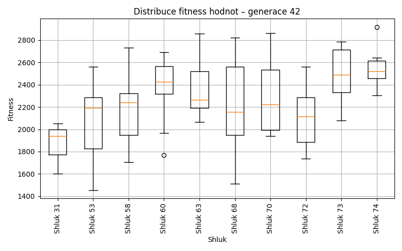
Generace 43
Stabilita mezi generací 42 → 43:
Shluk 70 → 70: 5 jedinců (83.3 %)
Shluk 70 → 77: 1 jedinců (16.7 %)
Shluk 60 → 72: 1 jedinců (8.3 %)
Shluk 60 → 60: 6 jedinců (50.0 %)
Shluk 60 → 58: 1 jedinců (8.3 %)
Shluk 60 → 77: 4 jedinců (33.3 %)
Shluk 74 → 74: 5 jedinců (83.3 %)
Shluk 74 → 76: 1 jedinců (16.7 %)
Shluk 72 → 76: 4 jedinců (18.2 %)
Shluk 72 → 72: 17 jedinců (77.3 %)
Shluk 72 → 58: 1 jedinců (4.5 %)
Shluk 68 → 68: 9 jedinců (56.2 %)
Shluk 68 → 76: 4 jedinců (25.0 %)
Shluk 68 → 72: 1 jedinců (6.2 %)
Shluk 68 → 58: 2 jedinců (12.5 %)
Shluk 58 → 58: 5 jedinců (100.0 %)
Shluk 53 → 53: 12 jedinců (92.3 %)
Shluk 53 → 77: 1 jedinců (7.7 %)
Shluk 63 → 63: 9 jedinců (81.8 %)
Shluk 63 → 72: 2 jedinců (18.2 %)
Shluk 31 → 31: 3 jedinců (100.0 %)
Shluk 73 → 63: 3 jedinců (50.0 %)
Shluk 73 → 68: 1 jedinců (16.7 %)
Shluk 73 → 31: 2 jedinců (33.3 %)
Jaccardovo mapování a overlap: Generace 42 → 43
- Shluk 70 → 70 (Jaccard: 0.83, Overlap: 1.00)
- Shluk 60 → 60 (Jaccard: 0.50, Overlap: 1.00)
- Shluk 74 → 74 (Jaccard: 0.83, Overlap: 1.00)
- Shluk 72 → 72 (Jaccard: 0.65, Overlap: 0.81)
- Shluk 68 → 68 (Jaccard: 0.53, Overlap: 0.90)
- Shluk 58 → 58 (Jaccard: 0.56, Overlap: 1.00)
- Shluk 53 → 53 (Jaccard: 0.92, Overlap: 1.00)
- Shluk 63 → 63 (Jaccard: 0.64, Overlap: 0.82)
- Shluk 31 → 31 (Jaccard: 0.60, Overlap: 1.00)
- Shluk 73 → 31 (Jaccard: 0.22, Overlap: 0.40)
Posun centroidů mezi generací 42 → 43:
- Shluk 0: 747.0221
- Shluk 1: 48.7061
- Shluk 2: 661.8471
- Shluk 3: 746.9894
- Shluk 4: 1032.3310
- Shluk 5: 1109.4756
- Shluk 6: 956.8689
- Shluk 7: 343.8138
- Shluk 8: 884.4658
- Shluk 9: 974.9771
Generace 44
Stabilita mezi generací 43 → 44:
Shluk 70 → 70: 4 jedinců (80.0 %)
Shluk 70 → 74: 1 jedinců (20.0 %)
Shluk 72 → 72: 14 jedinců (66.7 %)
Shluk 72 → 58: 5 jedinců (23.8 %)
Shluk 72 → 63: 2 jedinců (9.5 %)
Shluk 74 → 74: 3 jedinců (60.0 %)
Shluk 74 → 79: 2 jedinců (40.0 %)
Shluk 76 → 76: 9 jedinců (100.0 %)
Shluk 60 → 63: 3 jedinců (50.0 %)
Shluk 60 → 70: 1 jedinců (16.7 %)
Shluk 60 → 78: 1 jedinců (16.7 %)
Shluk 60 → 77: 1 jedinců (16.7 %)
Shluk 68 → 68: 9 jedinců (90.0 %)
Shluk 68 → 53: 1 jedinců (10.0 %)
Shluk 58 → 79: 3 jedinců (33.3 %)
Shluk 58 → 58: 4 jedinců (44.4 %)
Shluk 58 → 74: 1 jedinců (11.1 %)
Shluk 58 → 78: 1 jedinců (11.1 %)
Shluk 53 → 53: 12 jedinců (100.0 %)
Shluk 63 → 63: 8 jedinců (66.7 %)
Shluk 63 → 78: 2 jedinců (16.7 %)
Shluk 63 → 53: 1 jedinců (8.3 %)
Shluk 63 → 72: 1 jedinců (8.3 %)
Shluk 77 → 77: 6 jedinců (100.0 %)
Shluk 31 → 31: 3 jedinců (60.0 %)
Shluk 31 → 78: 2 jedinců (40.0 %)
Jaccardovo mapování a overlap: Generace 43 → 44
- Shluk 70 → 70 (Jaccard: 0.67, Overlap: 0.80)
- Shluk 72 → 72 (Jaccard: 0.64, Overlap: 0.93)
- Shluk 74 → 74 (Jaccard: 0.43, Overlap: 0.60)
- Shluk 76 → 76 (Jaccard: 1.00, Overlap: 1.00)
- Shluk 60 → 63 (Jaccard: 0.19, Overlap: 0.50)
- Shluk 68 → 68 (Jaccard: 0.90, Overlap: 1.00)
- Shluk 58 → 58 (Jaccard: 0.29, Overlap: 0.44)
- Shluk 53 → 53 (Jaccard: 0.86, Overlap: 1.00)
- Shluk 63 → 63 (Jaccard: 0.47, Overlap: 0.67)
- Shluk 77 → 77 (Jaccard: 0.86, Overlap: 1.00)
- Shluk 31 → 31 (Jaccard: 0.60, Overlap: 1.00)
Posun centroidů mezi generací 43 → 44:
- Shluk 0: 872.9837
- Shluk 1: 1220.8171
- Shluk 2: 834.8974
- Shluk 3: 1000.1753
- Shluk 4: 171.6994
- Shluk 5: 1165.2951
- Shluk 6: 1261.7826
- Shluk 7: 672.1972
- Shluk 8: 64.2059
- Shluk 9: 177.3061
- Shluk 10: 1198.7511
Generace 45
Stabilita mezi generací 44 → 45:
Shluk 70 → 76: 2 jedinců (40.0 %)
Shluk 70 → 78: 3 jedinců (60.0 %)
Shluk 72 → 72: 15 jedinců (100.0 %)
Shluk 74 → 74: 4 jedinců (80.0 %)
Shluk 74 → 76: 1 jedinců (20.0 %)
Shluk 76 → 72: 4 jedinců (44.4 %)
Shluk 76 → 76: 4 jedinců (44.4 %)
Shluk 76 → 78: 1 jedinců (11.1 %)
Shluk 63 → 68: 1 jedinců (7.7 %)
Shluk 63 → 53: 3 jedinců (23.1 %)
Shluk 63 → 63: 6 jedinců (46.2 %)
Shluk 63 → 77: 2 jedinců (15.4 %)
Shluk 63 → 72: 1 jedinců (7.7 %)
Shluk 58 → 58: 5 jedinců (55.6 %)
Shluk 58 → 68: 3 jedinců (33.3 %)
Shluk 58 → 74: 1 jedinců (11.1 %)
Shluk 78 → 78: 5 jedinců (83.3 %)
Shluk 78 → 74: 1 jedinců (16.7 %)
Shluk 68 → 68: 9 jedinců (100.0 %)
Shluk 79 → 79: 5 jedinců (100.0 %)
Shluk 53 → 80: 5 jedinců (35.7 %)
Shluk 53 → 53: 9 jedinců (64.3 %)
Shluk 77 → 81: 2 jedinců (28.6 %)
Shluk 77 → 77: 3 jedinců (42.9 %)
Shluk 77 → 68: 1 jedinců (14.3 %)
Shluk 77 → 58: 1 jedinců (14.3 %)
Shluk 31 → 31: 3 jedinců (100.0 %)
Jaccardovo mapování a overlap: Generace 44 → 45
- Shluk 70 → 78 (Jaccard: 0.27, Overlap: 0.60)
- Shluk 72 → 72 (Jaccard: 0.75, Overlap: 1.00)
- Shluk 74 → 74 (Jaccard: 0.57, Overlap: 0.80)
- Shluk 76 → 76 (Jaccard: 0.33, Overlap: 0.57)
- Shluk 63 → 63 (Jaccard: 0.46, Overlap: 1.00)
- Shluk 58 → 58 (Jaccard: 0.50, Overlap: 0.83)
- Shluk 78 → 78 (Jaccard: 0.50, Overlap: 0.83)
- Shluk 68 → 68 (Jaccard: 0.64, Overlap: 1.00)
- Shluk 79 → 79 (Jaccard: 1.00, Overlap: 1.00)
- Shluk 53 → 53 (Jaccard: 0.53, Overlap: 0.75)
- Shluk 77 → 77 (Jaccard: 0.33, Overlap: 0.60)
- Shluk 31 → 31 (Jaccard: 1.00, Overlap: 1.00)
Posun centroidů mezi generací 44 → 45:
- Shluk 0: 777.6324
- Shluk 1: 1069.8355
- Shluk 2: 1034.0539
- Shluk 3: 927.1219
- Shluk 4: 1089.5053
- Shluk 5: 973.8279
- Shluk 6: 1063.5705
- Shluk 7: 787.9482
- Shluk 8: 890.5936
- Shluk 9: 1101.3480
- Shluk 10: 1351.2152
- Shluk 11: 268.9129
Generace 46
Stabilita mezi generací 45 → 46:
Shluk 76 → 76: 6 jedinců (85.7 %)
Shluk 76 → 79: 1 jedinců (14.3 %)
Shluk 72 → 82: 8 jedinců (40.0 %)
Shluk 72 → 72: 11 jedinců (55.0 %)
Shluk 72 → 79: 1 jedinců (5.0 %)
Shluk 74 → 74: 6 jedinců (100.0 %)
Shluk 68 → 83: 2 jedinců (14.3 %)
Shluk 68 → 82: 5 jedinců (35.7 %)
Shluk 68 → 68: 7 jedinců (50.0 %)
Shluk 78 → 83: 3 jedinců (33.3 %)
Shluk 78 → 78: 6 jedinců (66.7 %)
Shluk 58 → 72: 6 jedinců (100.0 %)
Shluk 79 → 79: 3 jedinců (60.0 %)
Shluk 79 → 84: 2 jedinců (40.0 %)
Shluk 80 → 80: 5 jedinců (100.0 %)
Shluk 53 → 53: 9 jedinců (75.0 %)
Shluk 53 → 80: 1 jedinců (8.3 %)
Shluk 53 → 72: 1 jedinců (8.3 %)
Shluk 53 → 83: 1 jedinců (8.3 %)
Shluk 81 → 81: 2 jedinců (100.0 %)
Shluk 31 → 31: 3 jedinců (100.0 %)
Shluk 77 → 78: 3 jedinců (60.0 %)
Shluk 77 → 80: 1 jedinců (20.0 %)
Shluk 77 → 76: 1 jedinců (20.0 %)
Shluk 63 → 63: 6 jedinců (100.0 %)
Jaccardovo mapování a overlap: Generace 45 → 46
- Shluk 76 → 76 (Jaccard: 0.75, Overlap: 0.86)
- Shluk 72 → 72 (Jaccard: 0.41, Overlap: 0.61)
- Shluk 74 → 74 (Jaccard: 1.00, Overlap: 1.00)
- Shluk 68 → 68 (Jaccard: 0.50, Overlap: 1.00)
- Shluk 78 → 78 (Jaccard: 0.50, Overlap: 0.67)
- Shluk 58 → 72 (Jaccard: 0.33, Overlap: 1.00)
- Shluk 79 → 79 (Jaccard: 0.43, Overlap: 0.60)
- Shluk 80 → 80 (Jaccard: 0.71, Overlap: 1.00)
- Shluk 53 → 53 (Jaccard: 0.75, Overlap: 1.00)
- Shluk 81 → 81 (Jaccard: 1.00, Overlap: 1.00)
- Shluk 31 → 31 (Jaccard: 1.00, Overlap: 1.00)
- Shluk 77 → 78 (Jaccard: 0.27, Overlap: 0.60)
- Shluk 63 → 63 (Jaccard: 1.00, Overlap: 1.00)
Posun centroidů mezi generací 45 → 46:
- Shluk 0: 888.4941
- Shluk 1: 781.9838
- Shluk 2: 1026.2802
- Shluk 3: 850.9735
- Shluk 4: 1082.7651
- Shluk 5: 932.8259
- Shluk 6: 809.8739
- Shluk 7: 1666.4438
- Shluk 8: 929.7019
- Shluk 9: 1642.6138
- Shluk 10: 1234.6137
- Shluk 11: 1000.0582
- Shluk 12: 0.0000
Generace 47
Stabilita mezi generací 46 → 47:
Shluk 76 → 76: 7 jedinců (100.0 %)
Shluk 82 → 85: 4 jedinců (30.8 %)
Shluk 82 → 68: 7 jedinců (53.8 %)
Shluk 82 → 86: 2 jedinců (15.4 %)
Shluk 74 → 74: 6 jedinců (100.0 %)
Shluk 72 → 72: 17 jedinců (94.4 %)
Shluk 72 → 85: 1 jedinců (5.6 %)
Shluk 83 → 68: 3 jedinců (50.0 %)
Shluk 83 → 85: 1 jedinců (16.7 %)
Shluk 83 → 81: 2 jedinců (33.3 %)
Shluk 78 → 78: 4 jedinců (44.4 %)
Shluk 78 → 86: 4 jedinců (44.4 %)
Shluk 78 → 80: 1 jedinců (11.1 %)
Shluk 79 → 79: 5 jedinců (100.0 %)
Shluk 80 → 80: 6 jedinců (85.7 %)
Shluk 80 → 68: 1 jedinců (14.3 %)
Shluk 68 → 68: 7 jedinců (100.0 %)
Shluk 53 → 53: 9 jedinců (100.0 %)
Shluk 81 → 81: 2 jedinců (100.0 %)
Shluk 31 → 31: 3 jedinců (100.0 %)
Shluk 63 → 63: 6 jedinců (100.0 %)
Shluk 84 → 84: 2 jedinců (100.0 %)
Jaccardovo mapování a overlap: Generace 46 → 47
- Shluk 76 → 76 (Jaccard: 1.00, Overlap: 1.00)
- Shluk 82 → 68 (Jaccard: 0.29, Overlap: 0.54)
- Shluk 74 → 74 (Jaccard: 1.00, Overlap: 1.00)
- Shluk 72 → 72 (Jaccard: 0.94, Overlap: 1.00)
- Shluk 83 → 81 (Jaccard: 0.25, Overlap: 0.50)
- Shluk 78 → 78 (Jaccard: 0.44, Overlap: 1.00)
- Shluk 79 → 79 (Jaccard: 1.00, Overlap: 1.00)
- Shluk 80 → 80 (Jaccard: 0.75, Overlap: 0.86)
- Shluk 68 → 68 (Jaccard: 0.39, Overlap: 1.00)
- Shluk 53 → 53 (Jaccard: 1.00, Overlap: 1.00)
- Shluk 81 → 81 (Jaccard: 0.50, Overlap: 1.00)
- Shluk 31 → 31 (Jaccard: 1.00, Overlap: 1.00)
- Shluk 63 → 63 (Jaccard: 1.00, Overlap: 1.00)
- Shluk 84 → 84 (Jaccard: 1.00, Overlap: 1.00)
Posun centroidů mezi generací 46 → 47:
- Shluk 0: 755.7463
- Shluk 1: 908.8147
- Shluk 2: 758.7235
- Shluk 3: 974.8963
- Shluk 4: 863.0047
- Shluk 5: 1013.4441
- Shluk 6: 734.0226
- Shluk 7: 1438.4480
- Shluk 8: 1654.9132
- Shluk 9: 1284.5612
- Shluk 10: 1106.7337
- Shluk 11: 1154.4149
- Shluk 12: 1125.7573
- Shluk 13: 1502.1346
Generace 48
Stabilita mezi generací 47 → 48:
Shluk 76 → 76: 6 jedinců (85.7 %)
Shluk 76 → 53: 1 jedinců (14.3 %)
Shluk 85 → 85: 6 jedinců (100.0 %)
Shluk 74 → 80: 2 jedinců (33.3 %)
Shluk 74 → 79: 4 jedinců (66.7 %)
Shluk 72 → 72: 10 jedinců (58.8 %)
Shluk 72 → 87: 6 jedinců (35.3 %)
Shluk 72 → 80: 1 jedinců (5.9 %)
Shluk 68 → 68: 12 jedinců (66.7 %)
Shluk 68 → 87: 4 jedinců (22.2 %)
Shluk 68 → 72: 1 jedinců (5.6 %)
Shluk 68 → 76: 1 jedinců (5.6 %)
Shluk 78 → 78: 4 jedinců (100.0 %)
Shluk 79 → 68: 1 jedinců (20.0 %)
Shluk 79 → 79: 4 jedinců (80.0 %)
Shluk 80 → 80: 5 jedinců (71.4 %)
Shluk 80 → 78: 1 jedinců (14.3 %)
Shluk 80 → 68: 1 jedinců (14.3 %)
Shluk 53 → 53: 3 jedinců (33.3 %)
Shluk 53 → 80: 5 jedinců (55.6 %)
Shluk 53 → 72: 1 jedinců (11.1 %)
Shluk 81 → 68: 1 jedinců (25.0 %)
Shluk 81 → 76: 2 jedinců (50.0 %)
Shluk 81 → 78: 1 jedinců (25.0 %)
Shluk 31 → 31: 3 jedinců (100.0 %)
Shluk 63 → 63: 6 jedinců (100.0 %)
Shluk 86 → 78: 3 jedinců (50.0 %)
Shluk 86 → 63: 3 jedinců (50.0 %)
Shluk 84 → 84: 2 jedinců (100.0 %)
Jaccardovo mapování a overlap: Generace 47 → 48
- Shluk 76 → 76 (Jaccard: 0.60, Overlap: 0.86)
- Shluk 85 → 85 (Jaccard: 1.00, Overlap: 1.00)
- Shluk 74 → 79 (Jaccard: 0.40, Overlap: 0.67)
- Shluk 72 → 72 (Jaccard: 0.53, Overlap: 0.83)
- Shluk 68 → 68 (Jaccard: 0.57, Overlap: 0.80)
- Shluk 78 → 78 (Jaccard: 0.44, Overlap: 1.00)
- Shluk 79 → 79 (Jaccard: 0.44, Overlap: 0.80)
- Shluk 80 → 80 (Jaccard: 0.33, Overlap: 0.71)
- Shluk 53 → 53 (Jaccard: 0.30, Overlap: 0.75)
- Shluk 81 → 76 (Jaccard: 0.18, Overlap: 0.50)
- Shluk 31 → 31 (Jaccard: 1.00, Overlap: 1.00)
- Shluk 63 → 63 (Jaccard: 0.67, Overlap: 1.00)
- Shluk 86 → 78 (Jaccard: 0.25, Overlap: 0.50)
- Shluk 84 → 84 (Jaccard: 1.00, Overlap: 1.00)
Posun centroidů mezi generací 47 → 48:
- Shluk 0: 736.5598
- Shluk 1: 794.7242
- Shluk 2: 1086.4169
- Shluk 3: 793.4773
- Shluk 4: 739.5846
- Shluk 5: 896.9489
- Shluk 6: 1038.2898
- Shluk 7: 0.0000
- Shluk 8: 1533.3984
- Shluk 9: 1666.4438
- Shluk 10: 1148.9932
- Shluk 11: 965.5013
Generace 49
Stabilita mezi generací 48 → 49:
Shluk 76 → 76: 4 jedinců (44.4 %)
Shluk 76 → 85: 5 jedinců (55.6 %)
Shluk 85 → 85: 6 jedinců (100.0 %)
Shluk 80 → 80: 9 jedinců (69.2 %)
Shluk 80 → 88: 4 jedinců (30.8 %)
Shluk 72 → 72: 12 jedinců (100.0 %)
Shluk 68 → 68: 12 jedinců (80.0 %)
Shluk 68 → 89: 3 jedinců (20.0 %)
Shluk 79 → 79: 8 jedinců (100.0 %)
Shluk 87 → 87: 6 jedinců (60.0 %)
Shluk 87 → 89: 4 jedinců (40.0 %)
Shluk 53 → 76: 1 jedinců (25.0 %)
Shluk 53 → 85: 1 jedinců (25.0 %)
Shluk 53 → 80: 2 jedinců (50.0 %)
Shluk 78 → 78: 7 jedinců (77.8 %)
Shluk 78 → 68: 1 jedinců (11.1 %)
Shluk 78 → 89: 1 jedinců (11.1 %)
Shluk 31 → 31: 3 jedinců (100.0 %)
Shluk 63 → 63: 9 jedinců (100.0 %)
Shluk 84 → 84: 2 jedinců (100.0 %)
Jaccardovo mapování a overlap: Generace 48 → 49
- Shluk 76 → 76 (Jaccard: 0.40, Overlap: 0.80)
- Shluk 85 → 85 (Jaccard: 0.50, Overlap: 1.00)
- Shluk 80 → 80 (Jaccard: 0.60, Overlap: 0.82)
- Shluk 72 → 72 (Jaccard: 1.00, Overlap: 1.00)
- Shluk 68 → 68 (Jaccard: 0.75, Overlap: 0.92)
- Shluk 79 → 79 (Jaccard: 1.00, Overlap: 1.00)
- Shluk 87 → 87 (Jaccard: 0.60, Overlap: 1.00)
- Shluk 53 → 80 (Jaccard: 0.15, Overlap: 0.50)
- Shluk 78 → 78 (Jaccard: 0.78, Overlap: 1.00)
- Shluk 31 → 31 (Jaccard: 1.00, Overlap: 1.00)
- Shluk 63 → 63 (Jaccard: 1.00, Overlap: 1.00)
- Shluk 84 → 84 (Jaccard: 1.00, Overlap: 1.00)
Posun centroidů mezi generací 48 → 49:
- Shluk 0: 833.2926
- Shluk 1: 950.4806
- Shluk 2: 793.4699
- Shluk 3: 729.9991
- Shluk 4: 859.9751
- Shluk 5: 645.3031
- Shluk 6: 1096.8359
- Shluk 7: 1412.7690
- Shluk 8: 1533.3984
- Shluk 9: 1384.9647
- Shluk 10: 908.9153
- Shluk 11: 992.1990
Generace 50

Stabilita mezi generací 49 → 50:
Shluk 76 → 76: 3 jedinců (60.0 %)
Shluk 76 → 90: 2 jedinců (40.0 %)
Shluk 85 → 72: 4 jedinců (33.3 %)
Shluk 85 → 90: 1 jedinců (8.3 %)
Shluk 85 → 85: 6 jedinců (50.0 %)
Shluk 85 → 76: 1 jedinců (8.3 %)
Shluk 80 → 80: 11 jedinců (100.0 %)
Shluk 72 → 72: 9 jedinců (75.0 %)
Shluk 72 → 88: 2 jedinců (16.7 %)
Shluk 72 → 85: 1 jedinců (8.3 %)
Shluk 68 → 90: 4 jedinců (30.8 %)
Shluk 68 → 68: 9 jedinců (69.2 %)
Shluk 79 → 85: 2 jedinců (25.0 %)
Shluk 79 → 79: 4 jedinců (50.0 %)
Shluk 79 → 68: 1 jedinců (12.5 %)
Shluk 79 → 80: 1 jedinců (12.5 %)
Shluk 87 → 87: 6 jedinců (100.0 %)
Shluk 78 → 78: 5 jedinců (71.4 %)
Shluk 78 → 85: 1 jedinců (14.3 %)
Shluk 78 → 63: 1 jedinců (14.3 %)
Shluk 88 → 88: 3 jedinců (75.0 %)
Shluk 88 → 90: 1 jedinců (25.0 %)
Shluk 89 → 89: 8 jedinců (100.0 %)
Shluk 31 → 31: 3 jedinců (100.0 %)
Shluk 63 → 63: 9 jedinců (100.0 %)
Shluk 84 → 79: 1 jedinců (50.0 %)
Shluk 84 → 78: 1 jedinců (50.0 %)
Jaccardovo mapování a overlap: Generace 49 → 50
- Shluk 76 → 76 (Jaccard: 0.50, Overlap: 0.75)
- Shluk 85 → 85 (Jaccard: 0.38, Overlap: 0.60)
- Shluk 80 → 80 (Jaccard: 0.92, Overlap: 1.00)
- Shluk 72 → 72 (Jaccard: 0.56, Overlap: 0.75)
- Shluk 68 → 68 (Jaccard: 0.64, Overlap: 0.90)
- Shluk 79 → 79 (Jaccard: 0.44, Overlap: 0.80)
- Shluk 87 → 87 (Jaccard: 1.00, Overlap: 1.00)
- Shluk 78 → 78 (Jaccard: 0.62, Overlap: 0.83)
- Shluk 88 → 88 (Jaccard: 0.50, Overlap: 0.75)
- Shluk 89 → 89 (Jaccard: 1.00, Overlap: 1.00)
- Shluk 31 → 31 (Jaccard: 1.00, Overlap: 1.00)
- Shluk 63 → 63 (Jaccard: 0.90, Overlap: 1.00)
- Shluk 84 → 79 (Jaccard: 0.17, Overlap: 0.50)
Posun centroidů mezi generací 49 → 50:
- Shluk 0: 874.6652
- Shluk 1: 964.8228
- Shluk 2: 669.3264
- Shluk 3: 1030.2960
- Shluk 4: 992.7804
- Shluk 5: 1164.8915
- Shluk 6: 1357.3703
- Shluk 7: 1412.7690
- Shluk 8: 1339.5621
- Shluk 9: 996.8469
- Shluk 10: 1002.0741
- Shluk 11: 1019.9825
- Shluk 12: 0.0000
Generace 51
Stabilita mezi generací 50 → 51:
Shluk 76 → 76: 4 jedinců (100.0 %)
Shluk 72 → 85: 4 jedinců (30.8 %)
Shluk 72 → 72: 9 jedinců (69.2 %)
Shluk 80 → 80: 11 jedinců (91.7 %)
Shluk 80 → 76: 1 jedinců (8.3 %)
Shluk 90 → 90: 5 jedinců (62.5 %)
Shluk 90 → 80: 1 jedinců (12.5 %)
Shluk 90 → 76: 2 jedinců (25.0 %)
Shluk 85 → 85: 9 jedinců (90.0 %)
Shluk 85 → 76: 1 jedinců (10.0 %)
Shluk 87 → 72: 6 jedinců (100.0 %)
Shluk 78 → 78: 6 jedinců (100.0 %)
Shluk 68 → 68: 9 jedinců (90.0 %)
Shluk 68 → 79: 1 jedinců (10.0 %)
Shluk 88 → 90: 3 jedinců (60.0 %)
Shluk 88 → 72: 2 jedinců (40.0 %)
Shluk 89 → 89: 7 jedinců (87.5 %)
Shluk 89 → 68: 1 jedinců (12.5 %)
Shluk 31 → 31: 3 jedinců (100.0 %)
Shluk 63 → 72: 3 jedinců (30.0 %)
Shluk 63 → 90: 1 jedinců (10.0 %)
Shluk 63 → 63: 5 jedinců (50.0 %)
Shluk 63 → 68: 1 jedinců (10.0 %)
Shluk 79 → 79: 5 jedinců (100.0 %)
Jaccardovo mapování a overlap: Generace 50 → 51
- Shluk 76 → 76 (Jaccard: 0.50, Overlap: 1.00)
- Shluk 72 → 72 (Jaccard: 0.38, Overlap: 0.69)
- Shluk 80 → 80 (Jaccard: 0.85, Overlap: 0.92)
- Shluk 90 → 90 (Jaccard: 0.42, Overlap: 0.62)
- Shluk 85 → 85 (Jaccard: 0.64, Overlap: 0.90)
- Shluk 87 → 72 (Jaccard: 0.30, Overlap: 1.00)
- Shluk 78 → 78 (Jaccard: 1.00, Overlap: 1.00)
- Shluk 68 → 68 (Jaccard: 0.75, Overlap: 0.90)
- Shluk 88 → 90 (Jaccard: 0.27, Overlap: 0.60)
- Shluk 89 → 89 (Jaccard: 0.88, Overlap: 1.00)
- Shluk 31 → 31 (Jaccard: 1.00, Overlap: 1.00)
- Shluk 63 → 63 (Jaccard: 0.50, Overlap: 1.00)
- Shluk 79 → 79 (Jaccard: 0.83, Overlap: 1.00)
Posun centroidů mezi generací 50 → 51:
- Shluk 0: 735.6562
- Shluk 1: 1095.1360
- Shluk 2: 1024.8928
- Shluk 3: 1104.4779
- Shluk 4: 335.6674
- Shluk 5: 1029.8474
- Shluk 6: 787.6666
- Shluk 7: 0.0000
- Shluk 8: 947.2319
- Shluk 9: 943.5299
- Shluk 10: 1010.3060
Generace 52
Stabilita mezi generací 51 → 52:
Shluk 76 → 85: 4 jedinců (50.0 %)
Shluk 76 → 76: 4 jedinců (50.0 %)
Shluk 85 → 72: 4 jedinců (30.8 %)
Shluk 85 → 85: 8 jedinců (61.5 %)
Shluk 85 → 76: 1 jedinců (7.7 %)
Shluk 80 → 80: 11 jedinců (91.7 %)
Shluk 80 → 91: 1 jedinců (8.3 %)
Shluk 90 → 90: 5 jedinců (55.6 %)
Shluk 90 → 68: 3 jedinců (33.3 %)
Shluk 90 → 80: 1 jedinců (11.1 %)
Shluk 72 → 72: 17 jedinců (85.0 %)
Shluk 72 → 91: 1 jedinců (5.0 %)
Shluk 72 → 80: 1 jedinců (5.0 %)
Shluk 72 → 85: 1 jedinců (5.0 %)
Shluk 78 → 78: 4 jedinců (66.7 %)
Shluk 78 → 63: 1 jedinců (16.7 %)
Shluk 78 → 68: 1 jedinců (16.7 %)
Shluk 68 → 68: 11 jedinců (100.0 %)
Shluk 79 → 91: 2 jedinců (33.3 %)
Shluk 79 → 79: 4 jedinců (66.7 %)
Shluk 89 → 89: 7 jedinců (100.0 %)
Shluk 31 → 31: 3 jedinců (100.0 %)
Shluk 63 → 85: 1 jedinců (20.0 %)
Shluk 63 → 63: 2 jedinců (40.0 %)
Shluk 63 → 89: 1 jedinců (20.0 %)
Shluk 63 → 78: 1 jedinců (20.0 %)
Jaccardovo mapování a overlap: Generace 51 → 52
- Shluk 76 → 76 (Jaccard: 0.44, Overlap: 0.80)
- Shluk 85 → 85 (Jaccard: 0.42, Overlap: 0.62)
- Shluk 80 → 80 (Jaccard: 0.79, Overlap: 0.92)
- Shluk 90 → 90 (Jaccard: 0.56, Overlap: 1.00)
- Shluk 72 → 72 (Jaccard: 0.71, Overlap: 0.85)
- Shluk 78 → 78 (Jaccard: 0.57, Overlap: 0.80)
- Shluk 68 → 68 (Jaccard: 0.73, Overlap: 1.00)
- Shluk 79 → 79 (Jaccard: 0.67, Overlap: 1.00)
- Shluk 89 → 89 (Jaccard: 0.88, Overlap: 1.00)
- Shluk 31 → 31 (Jaccard: 1.00, Overlap: 1.00)
- Shluk 63 → 63 (Jaccard: 0.33, Overlap: 0.67)
Posun centroidů mezi generací 51 → 52:
- Shluk 0: 142.5428
- Shluk 1: 581.9968
- Shluk 2: 1071.1956
- Shluk 3: 186.8180
- Shluk 4: 939.4247
- Shluk 5: 1053.5261
- Shluk 6: 1452.6361
- Shluk 7: 1234.5526
- Shluk 8: 1062.7363
- Shluk 9: 936.9949
- Shluk 10: 1039.4023
Generace 53
Stabilita mezi generací 52 → 53:
Shluk 85 → 68: 1 jedinců (7.1 %)
Shluk 85 → 85: 11 jedinců (78.6 %)
Shluk 85 → 89: 1 jedinců (7.1 %)
Shluk 85 → 78: 1 jedinců (7.1 %)
Shluk 72 → 72: 19 jedinců (90.5 %)
Shluk 72 → 78: 1 jedinců (4.8 %)
Shluk 72 → 85: 1 jedinců (4.8 %)
Shluk 80 → 80: 12 jedinců (92.3 %)
Shluk 80 → 68: 1 jedinců (7.7 %)
Shluk 90 → 90: 5 jedinců (100.0 %)
Shluk 91 → 91: 4 jedinců (100.0 %)
Shluk 76 → 72: 1 jedinců (20.0 %)
Shluk 76 → 85: 4 jedinců (80.0 %)
Shluk 68 → 68: 15 jedinců (100.0 %)
Shluk 78 → 78: 5 jedinců (100.0 %)
Shluk 89 → 89: 8 jedinců (100.0 %)
Shluk 31 → 31: 3 jedinců (100.0 %)
Shluk 79 → 79: 4 jedinců (100.0 %)
Shluk 63 → 78: 3 jedinců (100.0 %)
Jaccardovo mapování a overlap: Generace 52 → 53
- Shluk 85 → 85 (Jaccard: 0.58, Overlap: 0.79)
- Shluk 72 → 72 (Jaccard: 0.86, Overlap: 0.95)
- Shluk 80 → 80 (Jaccard: 0.92, Overlap: 1.00)
- Shluk 90 → 90 (Jaccard: 1.00, Overlap: 1.00)
- Shluk 91 → 91 (Jaccard: 1.00, Overlap: 1.00)
- Shluk 76 → 85 (Jaccard: 0.24, Overlap: 0.80)
- Shluk 68 → 68 (Jaccard: 0.88, Overlap: 1.00)
- Shluk 78 → 78 (Jaccard: 0.50, Overlap: 1.00)
- Shluk 89 → 89 (Jaccard: 0.89, Overlap: 1.00)
- Shluk 31 → 31 (Jaccard: 1.00, Overlap: 1.00)
- Shluk 79 → 79 (Jaccard: 1.00, Overlap: 1.00)
- Shluk 63 → 78 (Jaccard: 0.30, Overlap: 1.00)
Posun centroidů mezi generací 52 → 53:
- Shluk 0: 64.4356
- Shluk 1: 675.6306
- Shluk 2: 857.2857
- Shluk 3: 1119.9756
- Shluk 4: 1124.0806
- Shluk 5: 1086.3017
- Shluk 6: 0.0000
- Shluk 7: 0.0000
- Shluk 8: 63.5258
- Shluk 9: 1086.8321
Generace 54
Stabilita mezi generací 53 → 54:
Shluk 68 → 68: 16 jedinců (94.1 %)
Shluk 68 → 80: 1 jedinců (5.9 %)
Shluk 72 → 72: 20 jedinců (100.0 %)
Shluk 80 → 72: 2 jedinců (16.7 %)
Shluk 80 → 92: 2 jedinců (16.7 %)
Shluk 80 → 80: 8 jedinců (66.7 %)
Shluk 90 → 90: 5 jedinců (100.0 %)
Shluk 91 → 91: 4 jedinců (100.0 %)
Shluk 85 → 85: 15 jedinců (93.8 %)
Shluk 85 → 91: 1 jedinců (6.2 %)
Shluk 78 → 78: 7 jedinců (70.0 %)
Shluk 78 → 92: 3 jedinců (30.0 %)
Shluk 89 → 89: 7 jedinců (77.8 %)
Shluk 89 → 68: 1 jedinců (11.1 %)
Shluk 89 → 72: 1 jedinců (11.1 %)
Shluk 31 → 31: 3 jedinců (100.0 %)
Shluk 79 → 79: 4 jedinců (100.0 %)
Jaccardovo mapování a overlap: Generace 53 → 54
- Shluk 68 → 68 (Jaccard: 0.89, Overlap: 0.94)
- Shluk 72 → 72 (Jaccard: 0.87, Overlap: 1.00)
- Shluk 80 → 80 (Jaccard: 0.62, Overlap: 0.89)
- Shluk 90 → 90 (Jaccard: 1.00, Overlap: 1.00)
- Shluk 91 → 91 (Jaccard: 0.80, Overlap: 1.00)
- Shluk 85 → 85 (Jaccard: 0.94, Overlap: 1.00)
- Shluk 78 → 78 (Jaccard: 0.70, Overlap: 1.00)
- Shluk 89 → 89 (Jaccard: 0.78, Overlap: 1.00)
- Shluk 31 → 31 (Jaccard: 1.00, Overlap: 1.00)
- Shluk 79 → 79 (Jaccard: 1.00, Overlap: 1.00)
Posun centroidů mezi generací 53 → 54:
- Shluk 0: 60.6914
- Shluk 1: 29.8126
- Shluk 2: 786.2081
- Shluk 3: 1023.7552
- Shluk 4: 1107.9954
- Shluk 5: 1086.3017
- Shluk 6: 0.0000
- Shluk 7: 1069.4025
- Shluk 8: 935.2161
- Shluk 9: 1039.4023
Generace 55
Stabilita mezi generací 54 → 55:
Shluk 68 → 68: 17 jedinců (100.0 %)
Shluk 72 → 93: 5 jedinců (21.7 %)
Shluk 72 → 72: 18 jedinců (78.3 %)
Shluk 90 → 90: 5 jedinců (100.0 %)
Shluk 91 → 91: 5 jedinců (100.0 %)
Shluk 85 → 85: 12 jedinců (80.0 %)
Shluk 85 → 93: 3 jedinců (20.0 %)
Shluk 78 → 78: 5 jedinců (71.4 %)
Shluk 78 → 72: 1 jedinců (14.3 %)
Shluk 78 → 85: 1 jedinců (14.3 %)
Shluk 89 → 89: 7 jedinců (100.0 %)
Shluk 31 → 31: 3 jedinců (100.0 %)
Shluk 92 → 85: 1 jedinců (20.0 %)
Shluk 92 → 92: 3 jedinců (60.0 %)
Shluk 92 → 80: 1 jedinců (20.0 %)
Shluk 80 → 80: 9 jedinců (100.0 %)
Shluk 79 → 79: 4 jedinců (100.0 %)
Jaccardovo mapování a overlap: Generace 54 → 55
- Shluk 68 → 68 (Jaccard: 1.00, Overlap: 1.00)
- Shluk 72 → 72 (Jaccard: 0.75, Overlap: 0.95)
- Shluk 90 → 90 (Jaccard: 1.00, Overlap: 1.00)
- Shluk 91 → 91 (Jaccard: 1.00, Overlap: 1.00)
- Shluk 85 → 85 (Jaccard: 0.71, Overlap: 0.86)
- Shluk 78 → 78 (Jaccard: 0.71, Overlap: 1.00)
- Shluk 89 → 89 (Jaccard: 1.00, Overlap: 1.00)
- Shluk 31 → 31 (Jaccard: 1.00, Overlap: 1.00)
- Shluk 92 → 92 (Jaccard: 0.60, Overlap: 1.00)
- Shluk 80 → 80 (Jaccard: 0.90, Overlap: 1.00)
- Shluk 79 → 79 (Jaccard: 1.00, Overlap: 1.00)
Posun centroidů mezi generací 54 → 55:
- Shluk 0: 549.0418
- Shluk 1: 786.3568
- Shluk 2: 1152.4374
- Shluk 3: 839.3999
- Shluk 4: 978.7769
- Shluk 5: 1103.8624
- Shluk 6: 0.0000
- Shluk 7: 1026.7754
- Shluk 8: 0.0000
- Shluk 9: 0.0000
- Shluk 10: 1074.6718
Generace 56

Stabilita mezi generací 55 → 56:
Shluk 68 → 68: 17 jedinců (100.0 %)
Shluk 93 → 85: 8 jedinců (100.0 %)
Shluk 72 → 72: 18 jedinců (94.7 %)
Shluk 72 → 68: 1 jedinců (5.3 %)
Shluk 90 → 90: 5 jedinců (100.0 %)
Shluk 91 → 91: 5 jedinců (100.0 %)
Shluk 85 → 85: 12 jedinců (85.7 %)
Shluk 85 → 72: 1 jedinců (7.1 %)
Shluk 85 → 78: 1 jedinců (7.1 %)
Shluk 78 → 68: 1 jedinců (20.0 %)
Shluk 78 → 78: 4 jedinců (80.0 %)
Shluk 89 → 89: 6 jedinců (85.7 %)
Shluk 89 → 68: 1 jedinců (14.3 %)
Shluk 31 → 31: 3 jedinců (100.0 %)
Shluk 80 → 80: 10 jedinců (100.0 %)
Shluk 79 → 68: 1 jedinců (25.0 %)
Shluk 79 → 79: 3 jedinců (75.0 %)
Shluk 92 → 92: 3 jedinců (100.0 %)
Jaccardovo mapování a overlap: Generace 55 → 56
- Shluk 68 → 68 (Jaccard: 0.81, Overlap: 1.00)
- Shluk 93 → 85 (Jaccard: 0.40, Overlap: 1.00)
- Shluk 72 → 72 (Jaccard: 0.90, Overlap: 0.95)
- Shluk 90 → 90 (Jaccard: 1.00, Overlap: 1.00)
- Shluk 91 → 91 (Jaccard: 1.00, Overlap: 1.00)
- Shluk 85 → 85 (Jaccard: 0.55, Overlap: 0.86)
- Shluk 78 → 78 (Jaccard: 0.67, Overlap: 0.80)
- Shluk 89 → 89 (Jaccard: 0.86, Overlap: 1.00)
- Shluk 31 → 31 (Jaccard: 1.00, Overlap: 1.00)
- Shluk 80 → 80 (Jaccard: 1.00, Overlap: 1.00)
- Shluk 79 → 79 (Jaccard: 0.75, Overlap: 1.00)
- Shluk 92 → 92 (Jaccard: 1.00, Overlap: 1.00)
Posun centroidů mezi generací 55 → 56:
- Shluk 0: 1113.6910
- Shluk 1: 685.2779
- Shluk 2: 1151.4219
- Shluk 3: 37.9057
- Shluk 4: 741.1750
- Shluk 5: 0.0000
- Shluk 6: 0.0000
- Shluk 7: 0.0000
- Shluk 8: 0.0000
- Shluk 9: 81.7403
- Shluk 10: 854.7376
Generace 57
Stabilita mezi generací 56 → 57:
Shluk 68 → 68: 20 jedinců (95.2 %)
Shluk 68 → 80: 1 jedinců (4.8 %)
Shluk 85 → 85: 19 jedinců (95.0 %)
Shluk 85 → 79: 1 jedinců (5.0 %)
Shluk 72 → 80: 2 jedinců (10.5 %)
Shluk 72 → 85: 1 jedinců (5.3 %)
Shluk 72 → 72: 15 jedinců (78.9 %)
Shluk 72 → 89: 1 jedinců (5.3 %)
Shluk 90 → 90: 5 jedinců (100.0 %)
Shluk 91 → 91: 5 jedinců (100.0 %)
Shluk 89 → 89: 5 jedinců (83.3 %)
Shluk 89 → 68: 1 jedinců (16.7 %)
Shluk 31 → 31: 3 jedinců (100.0 %)
Shluk 80 → 80: 8 jedinců (80.0 %)
Shluk 80 → 85: 1 jedinců (10.0 %)
Shluk 80 → 90: 1 jedinců (10.0 %)
Shluk 78 → 92: 2 jedinců (40.0 %)
Shluk 78 → 68: 1 jedinců (20.0 %)
Shluk 78 → 85: 2 jedinců (40.0 %)
Shluk 79 → 89: 2 jedinců (66.7 %)
Shluk 79 → 79: 1 jedinců (33.3 %)
Shluk 92 → 92: 3 jedinců (100.0 %)
Jaccardovo mapování a overlap: Generace 56 → 57
- Shluk 68 → 68 (Jaccard: 0.87, Overlap: 0.95)
- Shluk 85 → 85 (Jaccard: 0.79, Overlap: 0.95)
- Shluk 72 → 72 (Jaccard: 0.79, Overlap: 1.00)
- Shluk 90 → 90 (Jaccard: 0.83, Overlap: 1.00)
- Shluk 91 → 91 (Jaccard: 1.00, Overlap: 1.00)
- Shluk 89 → 89 (Jaccard: 0.56, Overlap: 0.83)
- Shluk 31 → 31 (Jaccard: 1.00, Overlap: 1.00)
- Shluk 80 → 80 (Jaccard: 0.62, Overlap: 0.80)
- Shluk 78 → 92 (Jaccard: 0.25, Overlap: 0.40)
- Shluk 79 → 79 (Jaccard: 0.25, Overlap: 0.50)
- Shluk 92 → 92 (Jaccard: 0.60, Overlap: 1.00)
Posun centroidů mezi generací 56 → 57:
- Shluk 0: 1070.4542
- Shluk 1: 952.3034
- Shluk 2: 1073.1944
- Shluk 3: 651.7481
- Shluk 4: 72.4474
- Shluk 5: 1200.9313
- Shluk 6: 1272.8261
- Shluk 7: 1548.3136
- Shluk 8: 136.6716
- Shluk 9: 1021.7208
Generace 58
Stabilita mezi generací 57 → 58:
Shluk 68 → 68: 22 jedinců (100.0 %)
Shluk 85 → 85: 23 jedinců (100.0 %)
Shluk 80 → 94: 4 jedinců (36.4 %)
Shluk 80 → 80: 7 jedinců (63.6 %)
Shluk 90 → 80: 5 jedinců (83.3 %)
Shluk 90 → 68: 1 jedinců (16.7 %)
Shluk 91 → 91: 5 jedinců (100.0 %)
Shluk 72 → 72: 14 jedinců (93.3 %)
Shluk 72 → 80: 1 jedinců (6.7 %)
Shluk 79 → 79: 2 jedinců (100.0 %)
Shluk 89 → 89: 8 jedinců (100.0 %)
Shluk 31 → 31: 3 jedinců (100.0 %)
Shluk 92 → 92: 5 jedinců (100.0 %)
Jaccardovo mapování a overlap: Generace 57 → 58
- Shluk 68 → 68 (Jaccard: 0.96, Overlap: 1.00)
- Shluk 85 → 85 (Jaccard: 1.00, Overlap: 1.00)
- Shluk 80 → 80 (Jaccard: 0.41, Overlap: 0.64)
- Shluk 90 → 80 (Jaccard: 0.36, Overlap: 0.83)
- Shluk 91 → 91 (Jaccard: 1.00, Overlap: 1.00)
- Shluk 72 → 72 (Jaccard: 0.93, Overlap: 1.00)
- Shluk 79 → 79 (Jaccard: 1.00, Overlap: 1.00)
- Shluk 89 → 89 (Jaccard: 1.00, Overlap: 1.00)
- Shluk 31 → 31 (Jaccard: 1.00, Overlap: 1.00)
- Shluk 92 → 92 (Jaccard: 1.00, Overlap: 1.00)
Posun centroidů mezi generací 57 → 58:
- Shluk 0: 0.0000
- Shluk 1: 0.0000
- Shluk 2: 771.3768
- Shluk 3: 0.0000
- Shluk 4: 1367.5307
- Shluk 5: 1123.3692
- Shluk 6: 653.3369
- Shluk 7: 1280.2302
- Shluk 8: 1081.0626
- Shluk 9: 1176.4864
Generace 59
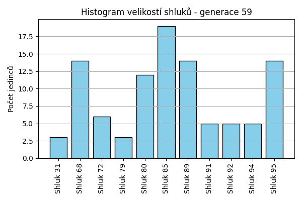
Stabilita mezi generací 58 → 59:
Shluk 68 → 68: 14 jedinců (60.9 %)
Shluk 68 → 89: 8 jedinců (34.8 %)
Shluk 68 → 95: 1 jedinců (4.3 %)
Shluk 85 → 95: 5 jedinců (21.7 %)
Shluk 85 → 85: 17 jedinců (73.9 %)
Shluk 85 → 94: 1 jedinců (4.3 %)
Shluk 94 → 85: 1 jedinců (25.0 %)
Shluk 94 → 94: 3 jedinců (75.0 %)
Shluk 80 → 80: 12 jedinců (92.3 %)
Shluk 80 → 94: 1 jedinců (7.7 %)
Shluk 91 → 91: 5 jedinců (100.0 %)
Shluk 72 → 95: 8 jedinců (57.1 %)
Shluk 72 → 72: 6 jedinců (42.9 %)
Shluk 79 → 85: 1 jedinců (50.0 %)
Shluk 79 → 79: 1 jedinců (50.0 %)
Shluk 89 → 89: 6 jedinců (75.0 %)
Shluk 89 → 79: 2 jedinců (25.0 %)
Shluk 31 → 31: 3 jedinců (100.0 %)
Shluk 92 → 92: 5 jedinců (100.0 %)
Jaccardovo mapování a overlap: Generace 58 → 59
- Shluk 68 → 68 (Jaccard: 0.61, Overlap: 1.00)
- Shluk 85 → 85 (Jaccard: 0.68, Overlap: 0.89)
- Shluk 94 → 94 (Jaccard: 0.50, Overlap: 0.75)
- Shluk 80 → 80 (Jaccard: 0.92, Overlap: 1.00)
- Shluk 91 → 91 (Jaccard: 1.00, Overlap: 1.00)
- Shluk 72 → 72 (Jaccard: 0.43, Overlap: 1.00)
- Shluk 79 → 79 (Jaccard: 0.25, Overlap: 0.50)
- Shluk 89 → 89 (Jaccard: 0.38, Overlap: 0.75)
- Shluk 31 → 31 (Jaccard: 1.00, Overlap: 1.00)
- Shluk 92 → 92 (Jaccard: 1.00, Overlap: 1.00)
Posun centroidů mezi generací 58 → 59:
- Shluk 0: 0.0000
- Shluk 1: 949.4018
- Shluk 2: 1157.4960
- Shluk 3: 813.4605
- Shluk 4: 1356.3927
- Shluk 5: 33.5832
- Shluk 6: 1360.2398
- Shluk 7: 1087.4036
- Shluk 8: 1184.7972
- Shluk 9: 870.3219
Generace 60
Stabilita mezi generací 59 → 60:
Shluk 68 → 91: 4 jedinců (28.6 %)
Shluk 68 → 68: 9 jedinců (64.3 %)
Shluk 68 → 96: 1 jedinců (7.1 %)
Shluk 95 → 95: 9 jedinců (64.3 %)
Shluk 95 → 85: 4 jedinců (28.6 %)
Shluk 95 → 68: 1 jedinců (7.1 %)
Shluk 85 → 85: 17 jedinců (89.5 %)
Shluk 85 → 68: 2 jedinců (10.5 %)
Shluk 80 → 80: 10 jedinců (83.3 %)
Shluk 80 → 95: 1 jedinců (8.3 %)
Shluk 80 → 91: 1 jedinců (8.3 %)
Shluk 91 → 91: 4 jedinců (80.0 %)
Shluk 91 → 89: 1 jedinců (20.0 %)
Shluk 89 → 96: 2 jedinců (14.3 %)
Shluk 89 → 89: 4 jedinců (28.6 %)
Shluk 89 → 72: 3 jedinců (21.4 %)
Shluk 89 → 68: 5 jedinců (35.7 %)
Shluk 72 → 72: 3 jedinců (50.0 %)
Shluk 72 → 96: 1 jedinců (16.7 %)
Shluk 72 → 95: 1 jedinců (16.7 %)
Shluk 72 → 85: 1 jedinců (16.7 %)
Shluk 94 → 94: 5 jedinců (100.0 %)
Shluk 31 → 31: 3 jedinců (100.0 %)
Shluk 92 → 89: 2 jedinců (40.0 %)
Shluk 92 → 92: 3 jedinců (60.0 %)
Shluk 79 → 72: 2 jedinců (66.7 %)
Shluk 79 → 79: 1 jedinců (33.3 %)
Jaccardovo mapování a overlap: Generace 59 → 60
- Shluk 68 → 68 (Jaccard: 0.41, Overlap: 0.64)
- Shluk 95 → 95 (Jaccard: 0.56, Overlap: 0.82)
- Shluk 85 → 85 (Jaccard: 0.71, Overlap: 0.89)
- Shluk 80 → 80 (Jaccard: 0.83, Overlap: 1.00)
- Shluk 91 → 91 (Jaccard: 0.40, Overlap: 0.80)
- Shluk 89 → 89 (Jaccard: 0.24, Overlap: 0.57)
- Shluk 72 → 72 (Jaccard: 0.27, Overlap: 0.50)
- Shluk 94 → 94 (Jaccard: 1.00, Overlap: 1.00)
- Shluk 31 → 31 (Jaccard: 1.00, Overlap: 1.00)
- Shluk 92 → 92 (Jaccard: 0.60, Overlap: 1.00)
- Shluk 79 → 79 (Jaccard: 0.33, Overlap: 1.00)
Posun centroidů mezi generací 59 → 60:
- Shluk 0: 1025.7700
- Shluk 1: 543.8204
- Shluk 2: 813.7012
- Shluk 3: 684.4537
- Shluk 4: 934.7764
- Shluk 5: 794.9369
- Shluk 6: 0.0000
- Shluk 7: 1184.7972
- Shluk 8: 758.7214
- Shluk 9: 733.0296
- Shluk 10: 1718.8684
Generace 61
Stabilita mezi generací 60 → 61:
Shluk 91 → 68: 6 jedinců (66.7 %)
Shluk 91 → 80: 1 jedinců (11.1 %)
Shluk 91 → 89: 2 jedinců (22.2 %)
Shluk 95 → 95: 10 jedinců (90.9 %)
Shluk 95 → 94: 1 jedinců (9.1 %)
Shluk 85 → 68: 2 jedinců (9.1 %)
Shluk 85 → 85: 14 jedinců (63.6 %)
Shluk 85 → 94: 5 jedinců (22.7 %)
Shluk 85 → 80: 1 jedinců (4.5 %)
Shluk 80 → 80: 10 jedinců (100.0 %)
Shluk 68 → 68: 10 jedinců (58.8 %)
Shluk 68 → 85: 2 jedinců (11.8 %)
Shluk 68 → 89: 3 jedinců (17.6 %)
Shluk 68 → 72: 2 jedinců (11.8 %)
Shluk 96 → 89: 3 jedinců (75.0 %)
Shluk 96 → 95: 1 jedinců (25.0 %)
Shluk 89 → 89: 4 jedinců (57.1 %)
Shluk 89 → 80: 1 jedinců (14.3 %)
Shluk 89 → 92: 2 jedinců (28.6 %)
Shluk 72 → 94: 1 jedinců (12.5 %)
Shluk 72 → 72: 6 jedinců (75.0 %)
Shluk 72 → 95: 1 jedinců (12.5 %)
Shluk 94 → 94: 4 jedinců (80.0 %)
Shluk 94 → 95: 1 jedinců (20.0 %)
Shluk 31 → 31: 3 jedinců (100.0 %)
Shluk 92 → 92: 3 jedinců (100.0 %)
Shluk 79 → 79: 1 jedinců (100.0 %)
Jaccardovo mapování a overlap: Generace 60 → 61
- Shluk 91 → 68 (Jaccard: 0.29, Overlap: 0.67)
- Shluk 95 → 95 (Jaccard: 0.71, Overlap: 0.91)
- Shluk 85 → 85 (Jaccard: 0.58, Overlap: 0.88)
- Shluk 80 → 80 (Jaccard: 0.77, Overlap: 1.00)
- Shluk 68 → 68 (Jaccard: 0.40, Overlap: 0.59)
- Shluk 96 → 89 (Jaccard: 0.23, Overlap: 0.75)
- Shluk 89 → 89 (Jaccard: 0.27, Overlap: 0.57)
- Shluk 72 → 72 (Jaccard: 0.60, Overlap: 0.75)
- Shluk 94 → 94 (Jaccard: 0.33, Overlap: 0.80)
- Shluk 31 → 31 (Jaccard: 1.00, Overlap: 1.00)
- Shluk 92 → 92 (Jaccard: 0.60, Overlap: 1.00)
- Shluk 79 → 79 (Jaccard: 1.00, Overlap: 1.00)
Posun centroidů mezi generací 60 → 61:
- Shluk 0: 667.0095
- Shluk 1: 865.1286
- Shluk 2: 861.1466
- Shluk 3: 763.8975
- Shluk 4: 1031.9640
- Shluk 5: 989.5864
- Shluk 6: 0.0000
- Shluk 7: 877.2165
- Shluk 8: 96.6743
- Shluk 9: 1749.4692
Generace 62
Stabilita mezi generací 61 → 62:
Shluk 68 → 68: 12 jedinců (66.7 %)
Shluk 68 → 97: 6 jedinců (33.3 %)
Shluk 95 → 95: 12 jedinců (92.3 %)
Shluk 95 → 99: 1 jedinců (7.7 %)
Shluk 80 → 80: 9 jedinců (69.2 %)
Shluk 80 → 98: 1 jedinců (7.7 %)
Shluk 80 → 99: 2 jedinců (15.4 %)
Shluk 80 → 97: 1 jedinců (7.7 %)
Shluk 85 → 98: 4 jedinců (25.0 %)
Shluk 85 → 85: 10 jedinců (62.5 %)
Shluk 85 → 89: 1 jedinců (6.2 %)
Shluk 85 → 80: 1 jedinců (6.2 %)
Shluk 94 → 94: 7 jedinců (63.6 %)
Shluk 94 → 99: 3 jedinců (27.3 %)
Shluk 94 → 98: 1 jedinců (9.1 %)
Shluk 89 → 89: 11 jedinců (91.7 %)
Shluk 89 → 95: 1 jedinců (8.3 %)
Shluk 72 → 72: 8 jedinců (100.0 %)
Shluk 31 → 31: 3 jedinců (100.0 %)
Shluk 92 → 92: 3 jedinců (60.0 %)
Shluk 92 → 89: 1 jedinců (20.0 %)
Shluk 92 → 99: 1 jedinců (20.0 %)
Shluk 79 → 79: 1 jedinců (100.0 %)
Jaccardovo mapování a overlap: Generace 61 → 62
- Shluk 68 → 68 (Jaccard: 0.67, Overlap: 1.00)
- Shluk 95 → 95 (Jaccard: 0.86, Overlap: 0.92)
- Shluk 80 → 80 (Jaccard: 0.64, Overlap: 0.90)
- Shluk 85 → 85 (Jaccard: 0.62, Overlap: 1.00)
- Shluk 94 → 94 (Jaccard: 0.64, Overlap: 1.00)
- Shluk 89 → 89 (Jaccard: 0.79, Overlap: 0.92)
- Shluk 72 → 72 (Jaccard: 1.00, Overlap: 1.00)
- Shluk 31 → 31 (Jaccard: 1.00, Overlap: 1.00)
- Shluk 92 → 92 (Jaccard: 0.60, Overlap: 1.00)
- Shluk 79 → 79 (Jaccard: 1.00, Overlap: 1.00)
Posun centroidů mezi generací 61 → 62:
- Shluk 0: 834.2565
- Shluk 1: 705.8128
- Shluk 2: 942.6992
- Shluk 3: 167.7900
- Shluk 4: 1020.9124
- Shluk 5: 624.3075
- Shluk 6: 0.0000
- Shluk 7: 989.1546
- Shluk 8: 701.4442
- Shluk 9: 1758.8221
Generace 63
Stabilita mezi generací 62 → 63:
Shluk 68 → 97: 2 jedinců (16.7 %)
Shluk 68 → 85: 2 jedinců (16.7 %)
Shluk 68 → 89: 7 jedinců (58.3 %)
Shluk 68 → 99: 1 jedinců (8.3 %)
Shluk 95 → 95: 11 jedinců (84.6 %)
Shluk 95 → 92: 1 jedinců (7.7 %)
Shluk 95 → 72: 1 jedinců (7.7 %)
Shluk 97 → 95: 3 jedinců (42.9 %)
Shluk 97 → 97: 4 jedinců (57.1 %)
Shluk 80 → 80: 6 jedinců (60.0 %)
Shluk 80 → 99: 2 jedinců (20.0 %)
Shluk 80 → 97: 2 jedinců (20.0 %)
Shluk 98 → 85: 4 jedinců (66.7 %)
Shluk 98 → 99: 1 jedinců (16.7 %)
Shluk 98 → 80: 1 jedinců (16.7 %)
Shluk 85 → 85: 10 jedinců (100.0 %)
Shluk 94 → 94: 5 jedinců (71.4 %)
Shluk 94 → 95: 2 jedinců (28.6 %)
Shluk 89 → 95: 1 jedinců (7.7 %)
Shluk 89 → 89: 10 jedinců (76.9 %)
Shluk 89 → 92: 2 jedinců (15.4 %)
Shluk 99 → 99: 4 jedinců (57.1 %)
Shluk 99 → 89: 1 jedinců (14.3 %)
Shluk 99 → 100: 2 jedinců (28.6 %)
Shluk 72 → 72: 6 jedinců (75.0 %)
Shluk 72 → 97: 2 jedinců (25.0 %)
Shluk 31 → 31: 3 jedinců (100.0 %)
Shluk 92 → 92: 2 jedinců (66.7 %)
Shluk 92 → 97: 1 jedinců (33.3 %)
Shluk 79 → 79: 1 jedinců (100.0 %)
Jaccardovo mapování a overlap: Generace 62 → 63
- Shluk 68 → 89 (Jaccard: 0.30, Overlap: 0.58)
- Shluk 95 → 95 (Jaccard: 0.58, Overlap: 0.85)
- Shluk 97 → 97 (Jaccard: 0.29, Overlap: 0.57)
- Shluk 80 → 80 (Jaccard: 0.55, Overlap: 0.86)
- Shluk 98 → 85 (Jaccard: 0.22, Overlap: 0.67)
- Shluk 85 → 85 (Jaccard: 0.62, Overlap: 1.00)
- Shluk 94 → 94 (Jaccard: 0.71, Overlap: 1.00)
- Shluk 89 → 89 (Jaccard: 0.48, Overlap: 0.77)
- Shluk 99 → 99 (Jaccard: 0.36, Overlap: 0.57)
- Shluk 72 → 72 (Jaccard: 0.67, Overlap: 0.86)
- Shluk 31 → 31 (Jaccard: 1.00, Overlap: 1.00)
- Shluk 92 → 92 (Jaccard: 0.33, Overlap: 0.67)
- Shluk 79 → 79 (Jaccard: 1.00, Overlap: 1.00)
Posun centroidů mezi generací 62 → 63:
- Shluk 0: 980.4358
- Shluk 1: 748.1567
- Shluk 2: 911.1719
- Shluk 3: 921.3628
- Shluk 4: 1214.4092
- Shluk 5: 655.3523
- Shluk 6: 1278.1163
- Shluk 7: 1364.7195
- Shluk 8: 378.4784
- Shluk 9: 1758.8221
- Shluk 10: 1787.5091
- Shluk 11: 1100.9199
Generace 64
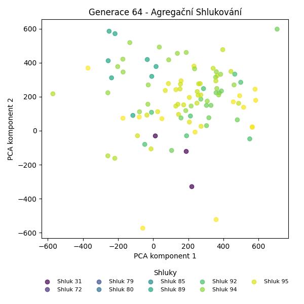
Stabilita mezi generací 63 → 64:
Shluk 97 → 97: 8 jedinců (72.7 %)
Shluk 97 → 92: 1 jedinců (9.1 %)
Shluk 97 → 89: 2 jedinců (18.2 %)
Shluk 95 → 95: 13 jedinců (76.5 %)
Shluk 95 → 99: 1 jedinců (5.9 %)
Shluk 95 → 94: 2 jedinců (11.8 %)
Shluk 95 → 97: 1 jedinců (5.9 %)
Shluk 80 → 80: 7 jedinců (100.0 %)
Shluk 85 → 85: 11 jedinců (68.8 %)
Shluk 85 → 89: 4 jedinců (25.0 %)
Shluk 85 → 94: 1 jedinců (6.2 %)
Shluk 94 → 94: 5 jedinců (100.0 %)
Shluk 89 → 89: 15 jedinců (83.3 %)
Shluk 89 → 72: 1 jedinců (5.6 %)
Shluk 89 → 100: 2 jedinců (11.1 %)
Shluk 99 → 99: 8 jedinců (100.0 %)
Shluk 92 → 72: 1 jedinců (20.0 %)
Shluk 92 → 100: 1 jedinců (20.0 %)
Shluk 92 → 92: 2 jedinců (40.0 %)
Shluk 92 → 85: 1 jedinců (20.0 %)
Shluk 72 → 72: 6 jedinců (85.7 %)
Shluk 72 → 89: 1 jedinců (14.3 %)
Shluk 31 → 31: 3 jedinců (100.0 %)
Shluk 100 → 100: 2 jedinců (100.0 %)
Shluk 79 → 79: 1 jedinců (100.0 %)
Jaccardovo mapování a overlap: Generace 63 → 64
- Shluk 97 → 97 (Jaccard: 0.67, Overlap: 0.89)
- Shluk 95 → 95 (Jaccard: 0.76, Overlap: 1.00)
- Shluk 80 → 80 (Jaccard: 1.00, Overlap: 1.00)
- Shluk 85 → 85 (Jaccard: 0.65, Overlap: 0.92)
- Shluk 94 → 94 (Jaccard: 0.62, Overlap: 1.00)
- Shluk 89 → 89 (Jaccard: 0.60, Overlap: 0.83)
- Shluk 99 → 99 (Jaccard: 0.89, Overlap: 1.00)
- Shluk 92 → 92 (Jaccard: 0.33, Overlap: 0.67)
- Shluk 72 → 72 (Jaccard: 0.67, Overlap: 0.86)
- Shluk 31 → 31 (Jaccard: 1.00, Overlap: 1.00)
- Shluk 100 → 100 (Jaccard: 0.40, Overlap: 1.00)
- Shluk 79 → 79 (Jaccard: 1.00, Overlap: 1.00)
Posun centroidů mezi generací 63 → 64:
- Shluk 0: 611.7376
- Shluk 1: 627.5010
- Shluk 2: 626.5657
- Shluk 3: 601.5113
- Shluk 4: 697.2032
- Shluk 5: 1006.2068
- Shluk 6: 151.9053
- Shluk 7: 1510.0334
- Shluk 8: 1297.6209
- Shluk 9: 1461.2739
- Shluk 10: 165.8682
- Shluk 11: 1103.6412
Generace 65
Stabilita mezi generací 64 → 65:
Shluk 97 → 89: 3 jedinců (33.3 %)
Shluk 97 → 101: 1 jedinců (11.1 %)
Shluk 97 → 97: 5 jedinců (55.6 %)
Shluk 95 → 95: 12 jedinců (92.3 %)
Shluk 95 → 85: 1 jedinců (7.7 %)
Shluk 80 → 80: 6 jedinců (85.7 %)
Shluk 80 → 85: 1 jedinců (14.3 %)
Shluk 85 → 85: 12 jedinců (100.0 %)
Shluk 89 → 89: 13 jedinců (59.1 %)
Shluk 89 → 101: 7 jedinců (31.8 %)
Shluk 89 → 95: 1 jedinců (4.5 %)
Shluk 89 → 80: 1 jedinců (4.5 %)
Shluk 94 → 85: 8 jedinců (100.0 %)
Shluk 99 → 89: 1 jedinců (11.1 %)
Shluk 99 → 80: 4 jedinců (44.4 %)
Shluk 99 → 95: 3 jedinců (33.3 %)
Shluk 99 → 85: 1 jedinců (11.1 %)
Shluk 72 → 72: 8 jedinců (100.0 %)
Shluk 31 → 31: 3 jedinců (100.0 %)
Shluk 100 → 95: 1 jedinců (20.0 %)
Shluk 100 → 100: 2 jedinců (40.0 %)
Shluk 100 → 101: 2 jedinců (40.0 %)
Shluk 92 → 92: 3 jedinců (100.0 %)
Shluk 79 → 79: 1 jedinců (100.0 %)
Jaccardovo mapování a overlap: Generace 64 → 65
- Shluk 97 → 97 (Jaccard: 0.56, Overlap: 1.00)
- Shluk 95 → 95 (Jaccard: 0.67, Overlap: 0.92)
- Shluk 80 → 80 (Jaccard: 0.50, Overlap: 0.86)
- Shluk 85 → 85 (Jaccard: 0.52, Overlap: 1.00)
- Shluk 89 → 89 (Jaccard: 0.50, Overlap: 0.76)
- Shluk 94 → 85 (Jaccard: 0.35, Overlap: 1.00)
- Shluk 99 → 80 (Jaccard: 0.25, Overlap: 0.44)
- Shluk 72 → 72 (Jaccard: 1.00, Overlap: 1.00)
- Shluk 31 → 31 (Jaccard: 1.00, Overlap: 1.00)
- Shluk 100 → 100 (Jaccard: 0.40, Overlap: 1.00)
- Shluk 92 → 92 (Jaccard: 1.00, Overlap: 1.00)
- Shluk 79 → 79 (Jaccard: 1.00, Overlap: 1.00)
Posun centroidů mezi generací 64 → 65:
- Shluk 0: 1008.6900
- Shluk 1: 414.7383
- Shluk 2: 848.0000
- Shluk 3: 674.5391
- Shluk 4: 637.0852
- Shluk 5: 1136.7544
- Shluk 6: 1293.0517
- Shluk 7: 273.7641
- Shluk 8: 1521.4966
- Shluk 9: 1180.6472
- Shluk 10: 1729.4234
Generace 66
Stabilita mezi generací 65 → 66:
Shluk 89 → 89: 14 jedinců (82.4 %)
Shluk 89 → 85: 2 jedinců (11.8 %)
Shluk 89 → 80: 1 jedinců (5.9 %)
Shluk 95 → 95: 15 jedinců (88.2 %)
Shluk 95 → 103: 2 jedinců (11.8 %)
Shluk 80 → 80: 7 jedinců (63.6 %)
Shluk 80 → 102: 3 jedinců (27.3 %)
Shluk 80 → 97: 1 jedinců (9.1 %)
Shluk 85 → 85: 21 jedinců (91.3 %)
Shluk 85 → 103: 1 jedinců (4.3 %)
Shluk 85 → 95: 1 jedinců (4.3 %)
Shluk 101 → 72: 3 jedinců (30.0 %)
Shluk 101 → 101: 7 jedinců (70.0 %)
Shluk 72 → 95: 2 jedinců (25.0 %)
Shluk 72 → 72: 5 jedinců (62.5 %)
Shluk 72 → 103: 1 jedinců (12.5 %)
Shluk 97 → 97: 5 jedinců (100.0 %)
Shluk 31 → 31: 3 jedinců (100.0 %)
Shluk 92 → 101: 3 jedinců (100.0 %)
Shluk 100 → 100: 2 jedinců (100.0 %)
Shluk 79 → 79: 1 jedinců (100.0 %)
Jaccardovo mapování a overlap: Generace 65 → 66
- Shluk 89 → 89 (Jaccard: 0.82, Overlap: 1.00)
- Shluk 95 → 95 (Jaccard: 0.75, Overlap: 0.88)
- Shluk 80 → 80 (Jaccard: 0.58, Overlap: 0.88)
- Shluk 85 → 85 (Jaccard: 0.84, Overlap: 0.91)
- Shluk 101 → 101 (Jaccard: 0.54, Overlap: 0.70)
- Shluk 72 → 72 (Jaccard: 0.45, Overlap: 0.62)
- Shluk 97 → 97 (Jaccard: 0.83, Overlap: 1.00)
- Shluk 31 → 31 (Jaccard: 1.00, Overlap: 1.00)
- Shluk 92 → 101 (Jaccard: 0.30, Overlap: 1.00)
- Shluk 100 → 100 (Jaccard: 1.00, Overlap: 1.00)
- Shluk 79 → 79 (Jaccard: 1.00, Overlap: 1.00)
Posun centroidů mezi generací 65 → 66:
- Shluk 0: 948.8696
- Shluk 1: 961.0833
- Shluk 2: 665.1350
- Shluk 3: 1008.3120
- Shluk 4: 691.9634
- Shluk 5: 1355.5200
- Shluk 6: 317.8317
- Shluk 7: 766.9939
- Shluk 8: 972.3038
- Shluk 9: 1626.7864
- Shluk 10: 1545.2537
Generace 67
Stabilita mezi generací 66 → 67:
Shluk 89 → 89: 14 jedinců (100.0 %)
Shluk 95 → 95: 18 jedinců (100.0 %)
Shluk 80 → 80: 8 jedinců (100.0 %)
Shluk 85 → 85: 23 jedinců (100.0 %)
Shluk 72 → 72: 8 jedinců (100.0 %)
Shluk 101 → 101: 10 jedinců (100.0 %)
Shluk 97 → 97: 6 jedinců (100.0 %)
Shluk 102 → 102: 3 jedinců (100.0 %)
Shluk 31 → 31: 3 jedinců (100.0 %)
Shluk 103 → 103: 4 jedinců (100.0 %)
Shluk 100 → 100: 2 jedinců (100.0 %)
Shluk 79 → 79: 1 jedinců (100.0 %)
Jaccardovo mapování a overlap: Generace 66 → 67
- Shluk 89 → 89 (Jaccard: 1.00, Overlap: 1.00)
- Shluk 95 → 95 (Jaccard: 1.00, Overlap: 1.00)
- Shluk 80 → 80 (Jaccard: 1.00, Overlap: 1.00)
- Shluk 85 → 85 (Jaccard: 1.00, Overlap: 1.00)
- Shluk 72 → 72 (Jaccard: 1.00, Overlap: 1.00)
- Shluk 101 → 101 (Jaccard: 1.00, Overlap: 1.00)
- Shluk 97 → 97 (Jaccard: 1.00, Overlap: 1.00)
- Shluk 102 → 102 (Jaccard: 1.00, Overlap: 1.00)
- Shluk 31 → 31 (Jaccard: 1.00, Overlap: 1.00)
- Shluk 103 → 103 (Jaccard: 1.00, Overlap: 1.00)
- Shluk 100 → 100 (Jaccard: 1.00, Overlap: 1.00)
- Shluk 79 → 79 (Jaccard: 1.00, Overlap: 1.00)
Posun centroidů mezi generací 66 → 67:
- Shluk 0: 0.0000
- Shluk 1: 0.0000
- Shluk 2: 0.0000
- Shluk 3: 0.0000
- Shluk 4: 0.0000
- Shluk 5: 0.0000
- Shluk 6: 0.0000
- Shluk 7: 0.0000
- Shluk 8: 0.0000
- Shluk 9: 0.0000
- Shluk 10: 0.0000
- Shluk 11: 0.0000
Generace 68
Stabilita mezi generací 67 → 68:
Shluk 89 → 85: 1 jedinců (7.1 %)
Shluk 89 → 89: 13 jedinců (92.9 %)
Shluk 95 → 95: 17 jedinců (94.4 %)
Shluk 95 → 85: 1 jedinců (5.6 %)
Shluk 80 → 80: 7 jedinců (87.5 %)
Shluk 80 → 97: 1 jedinců (12.5 %)
Shluk 85 → 85: 21 jedinců (91.3 %)
Shluk 85 → 95: 2 jedinců (8.7 %)
Shluk 72 → 72: 7 jedinců (87.5 %)
Shluk 72 → 85: 1 jedinců (12.5 %)
Shluk 101 → 101: 10 jedinců (100.0 %)
Shluk 97 → 97: 6 jedinců (100.0 %)
Shluk 102 → 102: 3 jedinců (100.0 %)
Shluk 31 → 31: 3 jedinců (100.0 %)
Shluk 103 → 80: 4 jedinců (100.0 %)
Shluk 100 → 100: 2 jedinců (100.0 %)
Shluk 79 → 79: 1 jedinců (100.0 %)
Jaccardovo mapování a overlap: Generace 67 → 68
- Shluk 89 → 89 (Jaccard: 0.93, Overlap: 1.00)
- Shluk 95 → 95 (Jaccard: 0.85, Overlap: 0.94)
- Shluk 80 → 80 (Jaccard: 0.58, Overlap: 0.88)
- Shluk 85 → 85 (Jaccard: 0.81, Overlap: 0.91)
- Shluk 72 → 72 (Jaccard: 0.88, Overlap: 1.00)
- Shluk 101 → 101 (Jaccard: 1.00, Overlap: 1.00)
- Shluk 97 → 97 (Jaccard: 0.86, Overlap: 1.00)
- Shluk 102 → 102 (Jaccard: 1.00, Overlap: 1.00)
- Shluk 31 → 31 (Jaccard: 1.00, Overlap: 1.00)
- Shluk 103 → 80 (Jaccard: 0.36, Overlap: 1.00)
- Shluk 100 → 100 (Jaccard: 1.00, Overlap: 1.00)
- Shluk 79 → 79 (Jaccard: 1.00, Overlap: 1.00)
Posun centroidů mezi generací 67 → 68:
- Shluk 0: 0.0000
- Shluk 1: 835.2326
- Shluk 2: 897.7011
- Shluk 3: 913.1688
- Shluk 4: 634.9728
- Shluk 5: 1214.5057
- Shluk 6: 1257.8438
- Shluk 7: 1263.6083
- Shluk 8: 0.0000
- Shluk 9: 0.0000
- Shluk 10: 0.0000
Generace 69
Stabilita mezi generací 68 → 69:
Shluk 85 → 85: 24 jedinců (100.0 %)
Shluk 95 → 95: 19 jedinců (100.0 %)
Shluk 80 → 80: 11 jedinců (100.0 %)
Shluk 72 → 72: 4 jedinců (57.1 %)
Shluk 72 → 95: 3 jedinců (42.9 %)
Shluk 89 → 89: 13 jedinců (100.0 %)
Shluk 101 → 101: 8 jedinců (80.0 %)
Shluk 101 → 89: 1 jedinců (10.0 %)
Shluk 101 → 80: 1 jedinců (10.0 %)
Shluk 97 → 97: 7 jedinců (100.0 %)
Shluk 102 → 102: 3 jedinců (100.0 %)
Shluk 31 → 31: 3 jedinců (100.0 %)
Shluk 100 → 100: 2 jedinců (100.0 %)
Shluk 79 → 79: 1 jedinců (100.0 %)
Jaccardovo mapování a overlap: Generace 68 → 69
- Shluk 85 → 85 (Jaccard: 1.00, Overlap: 1.00)
- Shluk 95 → 95 (Jaccard: 0.86, Overlap: 1.00)
- Shluk 80 → 80 (Jaccard: 0.92, Overlap: 1.00)
- Shluk 72 → 72 (Jaccard: 0.57, Overlap: 1.00)
- Shluk 89 → 89 (Jaccard: 0.93, Overlap: 1.00)
- Shluk 101 → 101 (Jaccard: 0.80, Overlap: 1.00)
- Shluk 97 → 97 (Jaccard: 1.00, Overlap: 1.00)
- Shluk 102 → 102 (Jaccard: 1.00, Overlap: 1.00)
- Shluk 31 → 31 (Jaccard: 1.00, Overlap: 1.00)
- Shluk 100 → 100 (Jaccard: 1.00, Overlap: 1.00)
- Shluk 79 → 79 (Jaccard: 1.00, Overlap: 1.00)
Posun centroidů mezi generací 68 → 69:
- Shluk 0: 950.8001
- Shluk 1: 1025.6167
- Shluk 2: 0.0000
- Shluk 3: 76.8819
- Shluk 4: 1226.0092
- Shluk 5: 1431.6054
- Shluk 6: 45.5851
- Shluk 7: 1431.6054
- Shluk 8: 1212.2313
- Shluk 9: 1330.2377
- Shluk 10: 1545.2537
Generace 70
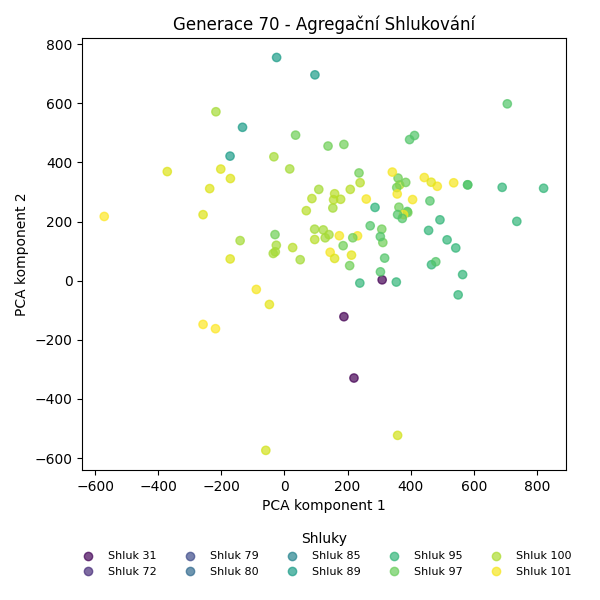
Stabilita mezi generací 69 → 70:
Shluk 85 → 85: 14 jedinců (58.3 %)
Shluk 85 → 104: 9 jedinců (37.5 %)
Shluk 85 → 101: 1 jedinců (4.2 %)
Shluk 95 → 104: 3 jedinců (13.6 %)
Shluk 95 → 97: 3 jedinců (13.6 %)
Shluk 95 → 95: 14 jedinců (63.6 %)
Shluk 95 → 101: 1 jedinců (4.5 %)
Shluk 95 → 89: 1 jedinců (4.5 %)
Shluk 80 → 80: 11 jedinců (91.7 %)
Shluk 80 → 102: 1 jedinců (8.3 %)
Shluk 72 → 72: 4 jedinců (100.0 %)
Shluk 89 → 89: 14 jedinců (100.0 %)
Shluk 101 → 101: 5 jedinců (62.5 %)
Shluk 101 → 105: 3 jedinců (37.5 %)
Shluk 97 → 97: 7 jedinců (100.0 %)
Shluk 102 → 102: 2 jedinců (66.7 %)
Shluk 102 → 80: 1 jedinců (33.3 %)
Shluk 31 → 31: 3 jedinců (100.0 %)
Shluk 100 → 100: 2 jedinců (100.0 %)
Shluk 79 → 79: 1 jedinců (100.0 %)
Jaccardovo mapování a overlap: Generace 69 → 70
- Shluk 85 → 85 (Jaccard: 0.58, Overlap: 1.00)
- Shluk 95 → 95 (Jaccard: 0.64, Overlap: 1.00)
- Shluk 80 → 80 (Jaccard: 0.85, Overlap: 0.92)
- Shluk 72 → 72 (Jaccard: 1.00, Overlap: 1.00)
- Shluk 89 → 89 (Jaccard: 0.93, Overlap: 1.00)
- Shluk 101 → 101 (Jaccard: 0.50, Overlap: 0.71)
- Shluk 97 → 97 (Jaccard: 0.70, Overlap: 1.00)
- Shluk 102 → 102 (Jaccard: 0.50, Overlap: 0.67)
- Shluk 31 → 31 (Jaccard: 1.00, Overlap: 1.00)
- Shluk 100 → 100 (Jaccard: 1.00, Overlap: 1.00)
- Shluk 79 → 79 (Jaccard: 1.00, Overlap: 1.00)
Posun centroidů mezi generací 69 → 70:
- Shluk 0: 69.1763
- Shluk 1: 983.2578
- Shluk 2: 782.4056
- Shluk 3: 742.1403
- Shluk 4: 1080.7922
- Shluk 5: 1271.2720
- Shluk 6: 27.1490
- Shluk 7: 785.5471
- Shluk 8: 1212.2313
- Shluk 9: 1330.2377
- Shluk 10: 1531.0982

Generace 71
Stabilita mezi generací 70 → 71:
Shluk 85 → 85: 13 jedinců (92.9 %)
Shluk 85 → 89: 1 jedinců (7.1 %)
Shluk 104 → 104: 12 jedinců (100.0 %)
Shluk 97 → 97: 9 jedinců (90.0 %)
Shluk 97 → 89: 1 jedinců (10.0 %)
Shluk 80 → 80: 11 jedinců (91.7 %)
Shluk 80 → 85: 1 jedinců (8.3 %)
Shluk 72 → 72: 4 jedinců (100.0 %)
Shluk 89 → 89: 15 jedinců (100.0 %)
Shluk 95 → 95: 14 jedinců (100.0 %)
Shluk 101 → 101: 7 jedinců (100.0 %)
Shluk 102 → 102: 3 jedinců (100.0 %)
Shluk 31 → 31: 3 jedinců (100.0 %)
Shluk 105 → 89: 1 jedinců (33.3 %)
Shluk 105 → 101: 2 jedinců (66.7 %)
Shluk 100 → 100: 2 jedinců (100.0 %)
Shluk 79 → 79: 1 jedinců (100.0 %)
Jaccardovo mapování a overlap: Generace 70 → 71
- Shluk 85 → 85 (Jaccard: 0.87, Overlap: 0.93)
- Shluk 104 → 104 (Jaccard: 1.00, Overlap: 1.00)
- Shluk 97 → 97 (Jaccard: 0.90, Overlap: 1.00)
- Shluk 80 → 80 (Jaccard: 0.92, Overlap: 1.00)
- Shluk 72 → 72 (Jaccard: 1.00, Overlap: 1.00)
- Shluk 89 → 89 (Jaccard: 0.83, Overlap: 1.00)
- Shluk 95 → 95 (Jaccard: 1.00, Overlap: 1.00)
- Shluk 101 → 101 (Jaccard: 0.78, Overlap: 1.00)
- Shluk 102 → 102 (Jaccard: 1.00, Overlap: 1.00)
- Shluk 31 → 31 (Jaccard: 1.00, Overlap: 1.00)
- Shluk 105 → 101 (Jaccard: 0.20, Overlap: 0.67)
- Shluk 100 → 100 (Jaccard: 1.00, Overlap: 1.00)
- Shluk 79 → 79 (Jaccard: 1.00, Overlap: 1.00)
Posun centroidů mezi generací 70 → 71:
- Shluk 0: 38.7589
- Shluk 1: 936.3157
- Shluk 2: 841.0532
- Shluk 3: 899.1117
- Shluk 4: 0.0000
- Shluk 5: 1344.6482
- Shluk 6: 34.4408
- Shluk 7: 0.0000
- Shluk 8: 0.0000
- Shluk 9: 0.0000
- Shluk 10: 0.0000
- Shluk 11: 0.0000
Generace 72
Stabilita mezi generací 71 → 72:
Shluk 85 → 104: 10 jedinců (71.4 %)
Shluk 85 → 89: 2 jedinců (14.3 %)
Shluk 85 → 101: 2 jedinců (14.3 %)
Shluk 104 → 104: 12 jedinců (100.0 %)
Shluk 97 → 97: 9 jedinců (100.0 %)
Shluk 80 → 80: 11 jedinců (100.0 %)
Shluk 72 → 72: 3 jedinců (75.0 %)
Shluk 72 → 80: 1 jedinců (25.0 %)
Shluk 89 → 89: 11 jedinců (61.1 %)
Shluk 89 → 72: 5 jedinců (27.8 %)
Shluk 89 → 101: 1 jedinců (5.6 %)
Shluk 89 → 104: 1 jedinců (5.6 %)
Shluk 95 → 95: 14 jedinců (100.0 %)
Shluk 101 → 101: 9 jedinců (100.0 %)
Shluk 102 → 102: 3 jedinců (100.0 %)
Shluk 31 → 31: 3 jedinců (100.0 %)
Shluk 100 → 100: 2 jedinců (100.0 %)
Shluk 79 → 79: 1 jedinců (100.0 %)
Jaccardovo mapování a overlap: Generace 71 → 72
- Shluk 85 → 104 (Jaccard: 0.37, Overlap: 0.71)
- Shluk 104 → 104 (Jaccard: 0.52, Overlap: 1.00)
- Shluk 97 → 97 (Jaccard: 1.00, Overlap: 1.00)
- Shluk 80 → 80 (Jaccard: 0.92, Overlap: 1.00)
- Shluk 72 → 72 (Jaccard: 0.33, Overlap: 0.75)
- Shluk 89 → 89 (Jaccard: 0.55, Overlap: 0.85)
- Shluk 95 → 95 (Jaccard: 1.00, Overlap: 1.00)
- Shluk 101 → 101 (Jaccard: 0.75, Overlap: 1.00)
- Shluk 102 → 102 (Jaccard: 1.00, Overlap: 1.00)
- Shluk 31 → 31 (Jaccard: 1.00, Overlap: 1.00)
- Shluk 100 → 100 (Jaccard: 1.00, Overlap: 1.00)
- Shluk 79 → 79 (Jaccard: 1.00, Overlap: 1.00)
Posun centroidů mezi generací 71 → 72:
- Shluk 0: 837.8555
- Shluk 1: 132.5921
- Shluk 2: 915.9432
- Shluk 3: 1024.4023
- Shluk 4: 1054.6920
- Shluk 5: 547.1881
- Shluk 6: 159.1452
- Shluk 7: 329.2758
- Shluk 8: 0.0000
- Shluk 9: 0.0000
- Shluk 10: 1323.4481
Generace 73
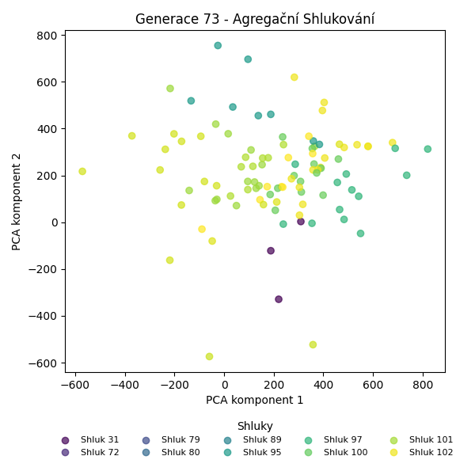
Stabilita mezi generací 72 → 73:
Shluk 104 → 104: 15 jedinců (65.2 %)
Shluk 104 → 106: 7 jedinců (30.4 %)
Shluk 104 → 89: 1 jedinců (4.3 %)
Shluk 97 → 97: 9 jedinců (100.0 %)
Shluk 80 → 80: 12 jedinců (100.0 %)
Shluk 72 → 72: 8 jedinců (100.0 %)
Shluk 89 → 89: 12 jedinců (92.3 %)
Shluk 89 → 104: 1 jedinců (7.7 %)
Shluk 95 → 95: 13 jedinců (92.9 %)
Shluk 95 → 106: 1 jedinců (7.1 %)
Shluk 101 → 101: 12 jedinců (100.0 %)
Shluk 102 → 102: 3 jedinců (100.0 %)
Shluk 31 → 31: 3 jedinců (100.0 %)
Shluk 100 → 100: 2 jedinců (100.0 %)
Shluk 79 → 79: 1 jedinců (100.0 %)
Jaccardovo mapování a overlap: Generace 72 → 73
- Shluk 104 → 104 (Jaccard: 0.62, Overlap: 0.94)
- Shluk 97 → 97 (Jaccard: 1.00, Overlap: 1.00)
- Shluk 80 → 80 (Jaccard: 1.00, Overlap: 1.00)
- Shluk 72 → 72 (Jaccard: 1.00, Overlap: 1.00)
- Shluk 89 → 89 (Jaccard: 0.86, Overlap: 0.92)
- Shluk 95 → 95 (Jaccard: 0.93, Overlap: 1.00)
- Shluk 101 → 101 (Jaccard: 1.00, Overlap: 1.00)
- Shluk 102 → 102 (Jaccard: 1.00, Overlap: 1.00)
- Shluk 31 → 31 (Jaccard: 1.00, Overlap: 1.00)
- Shluk 100 → 100 (Jaccard: 1.00, Overlap: 1.00)
- Shluk 79 → 79 (Jaccard: 1.00, Overlap: 1.00)
Posun centroidů mezi generací 72 → 73:
- Shluk 0: 798.7207
- Shluk 1: 805.0351
- Shluk 2: 1024.4023
- Shluk 3: 908.0239
- Shluk 4: 1053.3865
- Shluk 5: 725.8401
- Shluk 6: 29.1624
- Shluk 7: 1468.3198
- Shluk 8: 0.0000
- Shluk 9: 0.0000
- Shluk 10: 1271.5815
Generace 74
Stabilita mezi generací 73 → 74:
Shluk 104 → 104: 11 jedinců (68.8 %)
Shluk 104 → 106: 5 jedinců (31.2 %)
Shluk 106 → 106: 8 jedinců (100.0 %)
Shluk 97 → 95: 3 jedinců (33.3 %)
Shluk 97 → 97: 6 jedinců (66.7 %)
Shluk 80 → 80: 10 jedinců (83.3 %)
Shluk 80 → 104: 1 jedinců (8.3 %)
Shluk 80 → 106: 1 jedinců (8.3 %)
Shluk 72 → 72: 8 jedinců (100.0 %)
Shluk 89 → 89: 13 jedinců (100.0 %)
Shluk 95 → 95: 10 jedinců (76.9 %)
Shluk 95 → 72: 3 jedinců (23.1 %)
Shluk 101 → 101: 12 jedinců (100.0 %)
Shluk 102 → 102: 3 jedinců (100.0 %)
Shluk 31 → 31: 3 jedinců (100.0 %)
Shluk 100 → 100: 2 jedinců (100.0 %)
Shluk 79 → 79: 1 jedinců (100.0 %)
Jaccardovo mapování a overlap: Generace 73 → 74
- Shluk 104 → 104 (Jaccard: 0.65, Overlap: 0.92)
- Shluk 106 → 106 (Jaccard: 0.57, Overlap: 1.00)
- Shluk 97 → 97 (Jaccard: 0.67, Overlap: 1.00)
- Shluk 80 → 80 (Jaccard: 0.83, Overlap: 1.00)
- Shluk 72 → 72 (Jaccard: 0.73, Overlap: 1.00)
- Shluk 89 → 89 (Jaccard: 1.00, Overlap: 1.00)
- Shluk 95 → 95 (Jaccard: 0.62, Overlap: 0.77)
- Shluk 101 → 101 (Jaccard: 1.00, Overlap: 1.00)
- Shluk 102 → 102 (Jaccard: 1.00, Overlap: 1.00)
- Shluk 31 → 31 (Jaccard: 1.00, Overlap: 1.00)
- Shluk 100 → 100 (Jaccard: 1.00, Overlap: 1.00)
- Shluk 79 → 79 (Jaccard: 1.00, Overlap: 1.00)
Posun centroidů mezi generací 73 → 74:
- Shluk 0: 0.0000
- Shluk 1: 731.4853
- Shluk 2: 877.0000
- Shluk 3: 874.7701
- Shluk 4: 593.5465
- Shluk 5: 692.9066
- Shluk 6: 784.8652
- Shluk 7: 0.0000
- Shluk 8: 0.0000
- Shluk 9: 0.0000
- Shluk 10: 582.0253
- Shluk 11: 0.0000
Generace 75
Stabilita mezi generací 74 → 75:
Shluk 104 → 104: 6 jedinců (50.0 %)
Shluk 104 → 106: 3 jedinců (25.0 %)
Shluk 104 → 89: 2 jedinců (16.7 %)
Shluk 104 → 72: 1 jedinců (8.3 %)
Shluk 106 → 106: 11 jedinců (78.6 %)
Shluk 106 → 95: 1 jedinců (7.1 %)
Shluk 106 → 89: 2 jedinců (14.3 %)
Shluk 95 → 95: 12 jedinců (92.3 %)
Shluk 95 → 89: 1 jedinců (7.7 %)
Shluk 80 → 80: 10 jedinců (100.0 %)
Shluk 72 → 72: 6 jedinců (54.5 %)
Shluk 72 → 89: 3 jedinců (27.3 %)
Shluk 72 → 80: 1 jedinců (9.1 %)
Shluk 72 → 95: 1 jedinců (9.1 %)
Shluk 89 → 104: 4 jedinců (30.8 %)
Shluk 89 → 89: 9 jedinců (69.2 %)
Shluk 101 → 106: 1 jedinců (8.3 %)
Shluk 101 → 101: 3 jedinců (25.0 %)
Shluk 101 → 89: 6 jedinců (50.0 %)
Shluk 101 → 97: 1 jedinců (8.3 %)
Shluk 101 → 102: 1 jedinců (8.3 %)
Shluk 102 → 102: 3 jedinců (100.0 %)
Shluk 31 → 31: 3 jedinců (100.0 %)
Shluk 97 → 97: 5 jedinců (83.3 %)
Shluk 97 → 106: 1 jedinců (16.7 %)
Shluk 100 → 80: 1 jedinců (50.0 %)
Shluk 100 → 89: 1 jedinců (50.0 %)
Shluk 79 → 79: 1 jedinců (100.0 %)
Jaccardovo mapování a overlap: Generace 74 → 75
- Shluk 104 → 104 (Jaccard: 0.38, Overlap: 0.60)
- Shluk 106 → 106 (Jaccard: 0.58, Overlap: 0.79)
- Shluk 95 → 95 (Jaccard: 0.80, Overlap: 0.92)
- Shluk 80 → 80 (Jaccard: 0.83, Overlap: 1.00)
- Shluk 72 → 72 (Jaccard: 0.50, Overlap: 0.86)
- Shluk 89 → 89 (Jaccard: 0.32, Overlap: 0.69)
- Shluk 101 → 101 (Jaccard: 0.25, Overlap: 1.00)
- Shluk 102 → 102 (Jaccard: 0.75, Overlap: 1.00)
- Shluk 31 → 31 (Jaccard: 1.00, Overlap: 1.00)
- Shluk 97 → 97 (Jaccard: 0.71, Overlap: 0.83)
- Shluk 100 → 80 (Jaccard: 0.08, Overlap: 0.50)
- Shluk 79 → 79 (Jaccard: 1.00, Overlap: 1.00)
Posun centroidů mezi generací 74 → 75:
- Shluk 0: 842.9211
- Shluk 1: 713.4457
- Shluk 2: 682.0880
- Shluk 3: 83.5522
- Shluk 4: 907.3752
- Shluk 5: 639.0880
- Shluk 6: 173.9813
- Shluk 7: 1111.1924
- Shluk 8: 1179.2504
- Shluk 9: 1403.8366
- Shluk 10: 1579.4341
Generace 76
Stabilita mezi generací 75 → 76:
Shluk 104 → 89: 10 jedinců (100.0 %)
Shluk 106 → 106: 16 jedinců (100.0 %)
Shluk 95 → 97: 3 jedinců (21.4 %)
Shluk 95 → 95: 11 jedinců (78.6 %)
Shluk 80 → 80: 12 jedinců (100.0 %)
Shluk 72 → 72: 6 jedinců (85.7 %)
Shluk 72 → 95: 1 jedinců (14.3 %)
Shluk 89 → 89: 16 jedinců (66.7 %)
Shluk 89 → 95: 7 jedinců (29.2 %)
Shluk 89 → 80: 1 jedinců (4.2 %)
Shluk 101 → 101: 3 jedinců (100.0 %)
Shluk 102 → 102: 4 jedinců (100.0 %)
Shluk 31 → 31: 2 jedinců (66.7 %)
Shluk 31 → 95: 1 jedinců (33.3 %)
Shluk 97 → 97: 5 jedinců (83.3 %)
Shluk 97 → 72: 1 jedinců (16.7 %)
Shluk 79 → 79: 1 jedinců (100.0 %)
Jaccardovo mapování a overlap: Generace 75 → 76
- Shluk 104 → 89 (Jaccard: 0.38, Overlap: 1.00)
- Shluk 106 → 106 (Jaccard: 1.00, Overlap: 1.00)
- Shluk 95 → 95 (Jaccard: 0.48, Overlap: 0.79)
- Shluk 80 → 80 (Jaccard: 0.92, Overlap: 1.00)
- Shluk 72 → 72 (Jaccard: 0.75, Overlap: 0.86)
- Shluk 89 → 89 (Jaccard: 0.47, Overlap: 0.67)
- Shluk 101 → 101 (Jaccard: 1.00, Overlap: 1.00)
- Shluk 102 → 102 (Jaccard: 1.00, Overlap: 1.00)
- Shluk 31 → 31 (Jaccard: 0.67, Overlap: 1.00)
- Shluk 97 → 97 (Jaccard: 0.56, Overlap: 0.83)
- Shluk 79 → 79 (Jaccard: 1.00, Overlap: 1.00)
Posun centroidů mezi generací 75 → 76:
- Shluk 0: 569.2724
- Shluk 1: 218.6980
- Shluk 2: 372.1353
- Shluk 3: 23.2315
- Shluk 4: 0.0000
- Shluk 5: 664.6594
- Shluk 6: 332.1463
- Shluk 7: 1583.8643
- Shluk 8: 0.0000
- Shluk 9: 234.6038
Generace 77
Stabilita mezi generací 76 → 77:
Shluk 89 → 89: 23 jedinců (88.5 %)
Shluk 89 → 95: 3 jedinců (11.5 %)
Shluk 106 → 106: 12 jedinců (75.0 %)
Shluk 106 → 89: 2 jedinců (12.5 %)
Shluk 106 → 95: 1 jedinců (6.2 %)
Shluk 106 → 80: 1 jedinců (6.2 %)
Shluk 97 → 97: 8 jedinců (100.0 %)
Shluk 80 → 80: 12 jedinců (92.3 %)
Shluk 80 → 89: 1 jedinců (7.7 %)
Shluk 72 → 72: 6 jedinců (85.7 %)
Shluk 72 → 80: 1 jedinců (14.3 %)
Shluk 95 → 95: 20 jedinců (100.0 %)
Shluk 101 → 106: 2 jedinců (66.7 %)
Shluk 101 → 95: 1 jedinců (33.3 %)
Shluk 102 → 102: 4 jedinců (100.0 %)
Shluk 31 → 31: 2 jedinců (100.0 %)
Shluk 79 → 79: 1 jedinců (100.0 %)
Jaccardovo mapování a overlap: Generace 76 → 77
- Shluk 89 → 89 (Jaccard: 0.79, Overlap: 0.88)
- Shluk 106 → 106 (Jaccard: 0.67, Overlap: 0.86)
- Shluk 97 → 97 (Jaccard: 1.00, Overlap: 1.00)
- Shluk 80 → 80 (Jaccard: 0.80, Overlap: 0.92)
- Shluk 72 → 72 (Jaccard: 0.86, Overlap: 1.00)
- Shluk 95 → 95 (Jaccard: 0.80, Overlap: 1.00)
- Shluk 101 → 106 (Jaccard: 0.13, Overlap: 0.67)
- Shluk 102 → 102 (Jaccard: 1.00, Overlap: 1.00)
- Shluk 31 → 31 (Jaccard: 1.00, Overlap: 1.00)
- Shluk 79 → 79 (Jaccard: 1.00, Overlap: 1.00)
Posun centroidů mezi generací 76 → 77:
- Shluk 0: 78.6662
- Shluk 1: 910.2809
- Shluk 2: 102.0932
- Shluk 3: 1008.2774
- Shluk 4: 1075.2425
- Shluk 5: 1281.6826
- Shluk 6: 0.0000
- Shluk 7: 1574.1253
- Shluk 8: 1574.1253
Generace 78
Stabilita mezi generací 77 → 78:
Shluk 89 → 107: 11 jedinců (42.3 %)
Shluk 89 → 89: 12 jedinců (46.2 %)
Shluk 89 → 97: 3 jedinců (11.5 %)
Shluk 106 → 106: 6 jedinců (42.9 %)
Shluk 106 → 107: 6 jedinců (42.9 %)
Shluk 106 → 72: 1 jedinců (7.1 %)
Shluk 106 → 108: 1 jedinců (7.1 %)
Shluk 97 → 97: 7 jedinců (87.5 %)
Shluk 97 → 80: 1 jedinců (12.5 %)
Shluk 80 → 80: 11 jedinců (78.6 %)
Shluk 80 → 108: 2 jedinců (14.3 %)
Shluk 80 → 107: 1 jedinců (7.1 %)
Shluk 72 → 97: 2 jedinců (33.3 %)
Shluk 72 → 72: 4 jedinců (66.7 %)
Shluk 95 → 95: 24 jedinců (96.0 %)
Shluk 95 → 108: 1 jedinců (4.0 %)
Shluk 102 → 102: 4 jedinců (100.0 %)
Shluk 31 → 31: 2 jedinců (100.0 %)
Shluk 79 → 79: 1 jedinců (100.0 %)
Jaccardovo mapování a overlap: Generace 77 → 78
- Shluk 89 → 89 (Jaccard: 0.46, Overlap: 1.00)
- Shluk 106 → 106 (Jaccard: 0.43, Overlap: 1.00)
- Shluk 97 → 97 (Jaccard: 0.54, Overlap: 0.88)
- Shluk 80 → 80 (Jaccard: 0.73, Overlap: 0.92)
- Shluk 72 → 72 (Jaccard: 0.57, Overlap: 0.80)
- Shluk 95 → 95 (Jaccard: 0.96, Overlap: 1.00)
- Shluk 102 → 102 (Jaccard: 1.00, Overlap: 1.00)
- Shluk 31 → 31 (Jaccard: 1.00, Overlap: 1.00)
- Shluk 79 → 79 (Jaccard: 1.00, Overlap: 1.00)
Posun centroidů mezi generací 77 → 78:
- Shluk 0: 631.9407
- Shluk 1: 612.3595
- Shluk 2: 676.2162
- Shluk 3: 941.1901
- Shluk 4: 142.5629
- Shluk 5: 0.0000
- Shluk 6: 716.3712
- Shluk 7: 0.0000
- Shluk 8: 0.0000
Generace 79
Stabilita mezi generací 78 → 79:
Shluk 107 → 107: 16 jedinců (88.9 %)
Shluk 107 → 89: 1 jedinců (5.6 %)
Shluk 107 → 95: 1 jedinců (5.6 %)
Shluk 106 → 106: 6 jedinců (100.0 %)
Shluk 97 → 97: 11 jedinců (91.7 %)
Shluk 97 → 107: 1 jedinců (8.3 %)
Shluk 80 → 80: 11 jedinců (91.7 %)
Shluk 80 → 97: 1 jedinců (8.3 %)
Shluk 89 → 107: 4 jedinců (33.3 %)
Shluk 89 → 89: 8 jedinců (66.7 %)
Shluk 95 → 95: 11 jedinců (45.8 %)
Shluk 95 → 89: 13 jedinců (54.2 %)
Shluk 72 → 72: 5 jedinců (100.0 %)
Shluk 102 → 102: 4 jedinců (100.0 %)
Shluk 31 → 31: 2 jedinců (100.0 %)
Shluk 108 → 108: 4 jedinců (100.0 %)
Shluk 79 → 79: 1 jedinců (100.0 %)
Jaccardovo mapování a overlap: Generace 78 → 79
- Shluk 107 → 107 (Jaccard: 0.70, Overlap: 0.89)
- Shluk 106 → 106 (Jaccard: 1.00, Overlap: 1.00)
- Shluk 97 → 97 (Jaccard: 0.85, Overlap: 0.92)
- Shluk 80 → 80 (Jaccard: 0.92, Overlap: 1.00)
- Shluk 89 → 89 (Jaccard: 0.31, Overlap: 0.67)
- Shluk 95 → 95 (Jaccard: 0.44, Overlap: 0.92)
- Shluk 72 → 72 (Jaccard: 1.00, Overlap: 1.00)
- Shluk 102 → 102 (Jaccard: 1.00, Overlap: 1.00)
- Shluk 31 → 31 (Jaccard: 1.00, Overlap: 1.00)
- Shluk 108 → 108 (Jaccard: 1.00, Overlap: 1.00)
- Shluk 79 → 79 (Jaccard: 1.00, Overlap: 1.00)
Posun centroidů mezi generací 78 → 79:
- Shluk 0: 51.4669
- Shluk 1: 220.1624
- Shluk 2: 0.0000
- Shluk 3: 97.7662
- Shluk 4: 691.7745
- Shluk 5: 1573.4042
- Shluk 6: 791.8388
- Shluk 7: 0.0000
- Shluk 8: 0.0000
- Shluk 9: 1665.9029
- Shluk 10: 618.0286

Generace 80
Stabilita mezi generací 79 → 80:
Shluk 107 → 107: 19 jedinců (90.5 %)
Shluk 107 → 72: 1 jedinců (4.8 %)
Shluk 107 → 89: 1 jedinců (4.8 %)
Shluk 106 → 106: 6 jedinců (100.0 %)
Shluk 97 → 97: 11 jedinců (91.7 %)
Shluk 97 → 89: 1 jedinců (8.3 %)
Shluk 80 → 80: 7 jedinců (63.6 %)
Shluk 80 → 102: 2 jedinců (18.2 %)
Shluk 80 → 89: 1 jedinců (9.1 %)
Shluk 80 → 107: 1 jedinců (9.1 %)
Shluk 95 → 89: 12 jedinců (100.0 %)
Shluk 89 → 89: 21 jedinců (95.5 %)
Shluk 89 → 107: 1 jedinců (4.5 %)
Shluk 72 → 72: 4 jedinců (80.0 %)
Shluk 72 → 97: 1 jedinců (20.0 %)
Shluk 102 → 102: 4 jedinců (100.0 %)
Shluk 31 → 102: 1 jedinců (50.0 %)
Shluk 31 → 31: 1 jedinců (50.0 %)
Shluk 108 → 108: 4 jedinců (100.0 %)
Shluk 79 → 107: 1 jedinců (100.0 %)
Jaccardovo mapování a overlap: Generace 79 → 80
- Shluk 107 → 107 (Jaccard: 0.79, Overlap: 0.90)
- Shluk 106 → 106 (Jaccard: 1.00, Overlap: 1.00)
- Shluk 97 → 97 (Jaccard: 0.85, Overlap: 0.92)
- Shluk 80 → 80 (Jaccard: 0.64, Overlap: 1.00)
- Shluk 95 → 89 (Jaccard: 0.33, Overlap: 1.00)
- Shluk 89 → 89 (Jaccard: 0.57, Overlap: 0.95)
- Shluk 72 → 72 (Jaccard: 0.67, Overlap: 0.80)
- Shluk 102 → 102 (Jaccard: 0.57, Overlap: 1.00)
- Shluk 31 → 31 (Jaccard: 0.50, Overlap: 1.00)
- Shluk 108 → 108 (Jaccard: 1.00, Overlap: 1.00)
- Shluk 79 → 107 (Jaccard: 0.05, Overlap: 1.00)
Posun centroidů mezi generací 79 → 80:
- Shluk 0: 506.0693
- Shluk 1: 528.6259
- Shluk 2: 1174.0220
- Shluk 3: 39.8395
- Shluk 4: 1090.1647
- Shluk 5: 1082.9951
- Shluk 6: 848.0104
- Shluk 7: 1509.2013
- Shluk 8: 1566.1535
Generace 81
Stabilita mezi generací 80 → 81:
Shluk 107 → 107: 17 jedinců (77.3 %)
Shluk 107 → 89: 3 jedinců (13.6 %)
Shluk 107 → 106: 2 jedinců (9.1 %)
Shluk 106 → 106: 6 jedinců (100.0 %)
Shluk 97 → 97: 10 jedinců (83.3 %)
Shluk 97 → 109: 2 jedinců (16.7 %)
Shluk 80 → 80: 6 jedinců (85.7 %)
Shluk 80 → 89: 1 jedinců (14.3 %)
Shluk 89 → 109: 10 jedinců (27.8 %)
Shluk 89 → 89: 19 jedinců (52.8 %)
Shluk 89 → 106: 3 jedinců (8.3 %)
Shluk 89 → 80: 1 jedinců (2.8 %)
Shluk 89 → 72: 1 jedinců (2.8 %)
Shluk 89 → 107: 1 jedinců (2.8 %)
Shluk 89 → 97: 1 jedinců (2.8 %)
Shluk 72 → 72: 5 jedinců (100.0 %)
Shluk 102 → 102: 6 jedinců (85.7 %)
Shluk 102 → 97: 1 jedinců (14.3 %)
Shluk 31 → 31: 1 jedinců (100.0 %)
Shluk 108 → 80: 3 jedinců (75.0 %)
Shluk 108 → 106: 1 jedinců (25.0 %)
Jaccardovo mapování a overlap: Generace 80 → 81
- Shluk 107 → 107 (Jaccard: 0.74, Overlap: 0.94)
- Shluk 106 → 106 (Jaccard: 0.50, Overlap: 1.00)
- Shluk 97 → 97 (Jaccard: 0.71, Overlap: 0.83)
- Shluk 80 → 80 (Jaccard: 0.55, Overlap: 0.86)
- Shluk 89 → 89 (Jaccard: 0.47, Overlap: 0.83)
- Shluk 72 → 72 (Jaccard: 0.83, Overlap: 1.00)
- Shluk 102 → 102 (Jaccard: 0.86, Overlap: 1.00)
- Shluk 31 → 31 (Jaccard: 1.00, Overlap: 1.00)
- Shluk 108 → 80 (Jaccard: 0.27, Overlap: 0.75)
Posun centroidů mezi generací 80 → 81:
- Shluk 0: 277.5020
- Shluk 1: 916.8432
- Shluk 2: 79.9391
- Shluk 3: 537.5194
- Shluk 4: 873.0780
- Shluk 5: 177.8725
- Shluk 6: 1060.2897
- Shluk 7: 1572.0389
- Shluk 8: 1646.8453
Generace 82
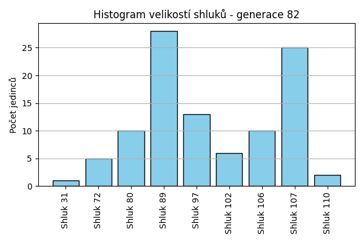
Stabilita mezi generací 81 → 82:
Shluk 107 → 107: 17 jedinců (94.4 %)
Shluk 107 → 97: 1 jedinců (5.6 %)
Shluk 106 → 106: 10 jedinců (83.3 %)
Shluk 106 → 89: 1 jedinců (8.3 %)
Shluk 106 → 107: 1 jedinců (8.3 %)
Shluk 97 → 97: 12 jedinců (100.0 %)
Shluk 80 → 80: 10 jedinců (100.0 %)
Shluk 89 → 107: 7 jedinců (30.4 %)
Shluk 89 → 89: 16 jedinců (69.6 %)
Shluk 109 → 89: 10 jedinců (83.3 %)
Shluk 109 → 110: 2 jedinců (16.7 %)
Shluk 72 → 72: 5 jedinců (83.3 %)
Shluk 72 → 89: 1 jedinců (16.7 %)
Shluk 102 → 102: 6 jedinců (100.0 %)
Shluk 31 → 31: 1 jedinců (100.0 %)
Jaccardovo mapování a overlap: Generace 81 → 82
- Shluk 107 → 107 (Jaccard: 0.65, Overlap: 0.94)
- Shluk 106 → 106 (Jaccard: 0.83, Overlap: 1.00)
- Shluk 97 → 97 (Jaccard: 0.92, Overlap: 1.00)
- Shluk 80 → 80 (Jaccard: 1.00, Overlap: 1.00)
- Shluk 89 → 89 (Jaccard: 0.46, Overlap: 0.70)
- Shluk 109 → 89 (Jaccard: 0.33, Overlap: 0.83)
- Shluk 72 → 72 (Jaccard: 0.83, Overlap: 1.00)
- Shluk 102 → 102 (Jaccard: 1.00, Overlap: 1.00)
- Shluk 31 → 31 (Jaccard: 1.00, Overlap: 1.00)
Posun centroidů mezi generací 81 → 82:
- Shluk 0: 257.3211
- Shluk 1: 0.0000
- Shluk 2: 0.0000
- Shluk 3: 812.9426
- Shluk 4: 33.7818
- Shluk 5: 873.6615
- Shluk 6: 97.7907
- Shluk 7: 1572.0389
- Shluk 8: 1639.9556
Generace 83
Stabilita mezi generací 82 → 83:
Shluk 107 → 107: 18 jedinců (72.0 %)
Shluk 107 → 89: 5 jedinců (20.0 %)
Shluk 107 → 106: 2 jedinců (8.0 %)
Shluk 106 → 89: 1 jedinců (10.0 %)
Shluk 106 → 106: 9 jedinců (90.0 %)
Shluk 97 → 97: 9 jedinců (69.2 %)
Shluk 97 → 72: 3 jedinců (23.1 %)
Shluk 97 → 89: 1 jedinců (7.7 %)
Shluk 80 → 80: 10 jedinců (100.0 %)
Shluk 89 → 89: 24 jedinců (85.7 %)
Shluk 89 → 110: 4 jedinců (14.3 %)
Shluk 72 → 72: 5 jedinců (100.0 %)
Shluk 102 → 102: 6 jedinců (100.0 %)
Shluk 31 → 31: 1 jedinců (100.0 %)
Shluk 110 → 110: 2 jedinců (100.0 %)
Jaccardovo mapování a overlap: Generace 82 → 83
- Shluk 107 → 107 (Jaccard: 0.72, Overlap: 1.00)
- Shluk 106 → 106 (Jaccard: 0.75, Overlap: 0.90)
- Shluk 97 → 97 (Jaccard: 0.69, Overlap: 1.00)
- Shluk 80 → 80 (Jaccard: 1.00, Overlap: 1.00)
- Shluk 89 → 89 (Jaccard: 0.69, Overlap: 0.86)
- Shluk 72 → 72 (Jaccard: 0.62, Overlap: 1.00)
- Shluk 102 → 102 (Jaccard: 1.00, Overlap: 1.00)
- Shluk 31 → 31 (Jaccard: 1.00, Overlap: 1.00)
- Shluk 110 → 110 (Jaccard: 0.33, Overlap: 1.00)
Posun centroidů mezi generací 82 → 83:
- Shluk 0: 122.3760
- Shluk 1: 0.0000
- Shluk 2: 0.0000
- Shluk 3: 792.2036
- Shluk 4: 939.1210
- Shluk 5: 903.5764
- Shluk 6: 79.2674
- Shluk 7: 1575.0711
- Shluk 8: 1639.9556
Generace 84
Stabilita mezi generací 83 → 84:
Shluk 107 → 107: 18 jedinců (100.0 %)
Shluk 89 → 107: 6 jedinců (19.4 %)
Shluk 89 → 89: 20 jedinců (64.5 %)
Shluk 89 → 97: 5 jedinců (16.1 %)
Shluk 97 → 102: 1 jedinců (11.1 %)
Shluk 97 → 97: 8 jedinců (88.9 %)
Shluk 80 → 80: 8 jedinců (80.0 %)
Shluk 80 → 89: 1 jedinců (10.0 %)
Shluk 80 → 102: 1 jedinců (10.0 %)
Shluk 106 → 106: 10 jedinců (90.9 %)
Shluk 106 → 107: 1 jedinců (9.1 %)
Shluk 72 → 72: 8 jedinců (100.0 %)
Shluk 102 → 102: 6 jedinců (100.0 %)
Shluk 31 → 31: 1 jedinců (100.0 %)
Shluk 110 → 89: 4 jedinců (66.7 %)
Shluk 110 → 110: 2 jedinců (33.3 %)
Jaccardovo mapování a overlap: Generace 83 → 84
- Shluk 107 → 107 (Jaccard: 0.72, Overlap: 1.00)
- Shluk 89 → 89 (Jaccard: 0.56, Overlap: 0.80)
- Shluk 97 → 97 (Jaccard: 0.57, Overlap: 0.89)
- Shluk 80 → 80 (Jaccard: 0.80, Overlap: 1.00)
- Shluk 106 → 106 (Jaccard: 0.91, Overlap: 1.00)
- Shluk 72 → 72 (Jaccard: 1.00, Overlap: 1.00)
- Shluk 102 → 102 (Jaccard: 0.75, Overlap: 1.00)
- Shluk 31 → 31 (Jaccard: 1.00, Overlap: 1.00)
- Shluk 110 → 110 (Jaccard: 0.33, Overlap: 1.00)
Posun centroidů mezi generací 83 → 84:
- Shluk 0: 791.4228
- Shluk 1: 960.0202
- Shluk 2: 918.7978
- Shluk 3: 986.6951
- Shluk 4: 583.7274
- Shluk 5: 546.5235
- Shluk 6: 1247.4683
- Shluk 7: 0.0000
- Shluk 8: 1639.9556
Generace 85
Stabilita mezi generací 84 → 85:
Shluk 107 → 107: 24 jedinců (96.0 %)
Shluk 107 → 89: 1 jedinců (4.0 %)
Shluk 102 → 102: 8 jedinců (100.0 %)
Shluk 80 → 80: 8 jedinců (100.0 %)
Shluk 106 → 106: 9 jedinců (90.0 %)
Shluk 106 → 107: 1 jedinců (10.0 %)
Shluk 72 → 111: 2 jedinců (25.0 %)
Shluk 72 → 72: 6 jedinců (75.0 %)
Shluk 89 → 97: 9 jedinců (36.0 %)
Shluk 89 → 89: 14 jedinců (56.0 %)
Shluk 89 → 72: 1 jedinců (4.0 %)
Shluk 89 → 107: 1 jedinců (4.0 %)
Shluk 97 → 111: 4 jedinců (30.8 %)
Shluk 97 → 97: 8 jedinců (61.5 %)
Shluk 97 → 89: 1 jedinců (7.7 %)
Shluk 31 → 31: 1 jedinců (100.0 %)
Shluk 110 → 89: 2 jedinců (100.0 %)
Jaccardovo mapování a overlap: Generace 84 → 85
- Shluk 107 → 107 (Jaccard: 0.89, Overlap: 0.96)
- Shluk 102 → 102 (Jaccard: 1.00, Overlap: 1.00)
- Shluk 80 → 80 (Jaccard: 1.00, Overlap: 1.00)
- Shluk 106 → 106 (Jaccard: 0.90, Overlap: 1.00)
- Shluk 72 → 72 (Jaccard: 0.67, Overlap: 0.86)
- Shluk 89 → 89 (Jaccard: 0.48, Overlap: 0.78)
- Shluk 97 → 97 (Jaccard: 0.36, Overlap: 0.62)
- Shluk 31 → 31 (Jaccard: 1.00, Overlap: 1.00)
- Shluk 110 → 89 (Jaccard: 0.11, Overlap: 1.00)
Posun centroidů mezi generací 84 → 85:
- Shluk 0: 0.0000
- Shluk 1: 804.6109
- Shluk 2: 622.2416
- Shluk 3: 0.0000
- Shluk 4: 633.4108
- Shluk 5: 686.7627
- Shluk 6: 0.0000
- Shluk 7: 189.2920
- Shluk 8: 930.3742
Generace 86
Stabilita mezi generací 85 → 86:
Shluk 107 → 107: 24 jedinců (92.3 %)
Shluk 107 → 89: 2 jedinců (7.7 %)
Shluk 102 → 80: 3 jedinců (37.5 %)
Shluk 102 → 102: 4 jedinců (50.0 %)
Shluk 102 → 112: 1 jedinců (12.5 %)
Shluk 80 → 80: 5 jedinců (62.5 %)
Shluk 80 → 112: 3 jedinců (37.5 %)
Shluk 106 → 112: 2 jedinců (22.2 %)
Shluk 106 → 106: 5 jedinců (55.6 %)
Shluk 106 → 107: 1 jedinců (11.1 %)
Shluk 106 → 89: 1 jedinců (11.1 %)
Shluk 111 → 111: 4 jedinců (66.7 %)
Shluk 111 → 97: 1 jedinců (16.7 %)
Shluk 111 → 107: 1 jedinců (16.7 %)
Shluk 97 → 97: 6 jedinců (35.3 %)
Shluk 97 → 89: 7 jedinců (41.2 %)
Shluk 97 → 111: 4 jedinců (23.5 %)
Shluk 72 → 72: 7 jedinců (100.0 %)
Shluk 89 → 89: 18 jedinců (100.0 %)
Shluk 31 → 31: 1 jedinců (100.0 %)
Jaccardovo mapování a overlap: Generace 85 → 86
- Shluk 107 → 107 (Jaccard: 0.86, Overlap: 0.92)
- Shluk 102 → 102 (Jaccard: 0.50, Overlap: 1.00)
- Shluk 80 → 80 (Jaccard: 0.45, Overlap: 0.62)
- Shluk 106 → 106 (Jaccard: 0.56, Overlap: 1.00)
- Shluk 111 → 111 (Jaccard: 0.40, Overlap: 0.67)
- Shluk 97 → 97 (Jaccard: 0.33, Overlap: 0.86)
- Shluk 72 → 72 (Jaccard: 1.00, Overlap: 1.00)
- Shluk 89 → 89 (Jaccard: 0.64, Overlap: 1.00)
- Shluk 31 → 31 (Jaccard: 1.00, Overlap: 1.00)
Posun centroidů mezi generací 85 → 86:
- Shluk 0: 840.7403
- Shluk 1: 609.4021
- Shluk 2: 706.5096
- Shluk 3: 321.0356
- Shluk 4: 1107.9906
- Shluk 5: 1182.5977
- Shluk 6: 1421.1290
- Shluk 7: 1570.0208
- Shluk 8: 324.3903
Generace 87
Stabilita mezi generací 86 → 87:
Shluk 107 → 107: 26 jedinců (100.0 %)
Shluk 80 → 80: 7 jedinců (87.5 %)
Shluk 80 → 112: 1 jedinců (12.5 %)
Shluk 112 → 89: 1 jedinců (16.7 %)
Shluk 112 → 112: 5 jedinců (83.3 %)
Shluk 111 → 72: 2 jedinců (25.0 %)
Shluk 111 → 111: 6 jedinců (75.0 %)
Shluk 97 → 97: 6 jedinců (85.7 %)
Shluk 97 → 111: 1 jedinců (14.3 %)
Shluk 106 → 106: 4 jedinců (80.0 %)
Shluk 106 → 111: 1 jedinců (20.0 %)
Shluk 72 → 72: 6 jedinců (85.7 %)
Shluk 72 → 97: 1 jedinců (14.3 %)
Shluk 89 → 89: 21 jedinců (75.0 %)
Shluk 89 → 97: 4 jedinců (14.3 %)
Shluk 89 → 113: 2 jedinců (7.1 %)
Shluk 89 → 111: 1 jedinců (3.6 %)
Shluk 102 → 97: 1 jedinců (25.0 %)
Shluk 102 → 80: 3 jedinců (75.0 %)
Shluk 31 → 31: 1 jedinců (100.0 %)
Jaccardovo mapování a overlap: Generace 86 → 87
- Shluk 107 → 107 (Jaccard: 1.00, Overlap: 1.00)
- Shluk 80 → 80 (Jaccard: 0.64, Overlap: 0.88)
- Shluk 112 → 112 (Jaccard: 0.71, Overlap: 0.83)
- Shluk 111 → 111 (Jaccard: 0.55, Overlap: 0.75)
- Shluk 97 → 97 (Jaccard: 0.46, Overlap: 0.86)
- Shluk 106 → 106 (Jaccard: 0.80, Overlap: 1.00)
- Shluk 72 → 72 (Jaccard: 0.67, Overlap: 0.86)
- Shluk 89 → 89 (Jaccard: 0.72, Overlap: 0.95)
- Shluk 102 → 80 (Jaccard: 0.27, Overlap: 0.75)
- Shluk 31 → 31 (Jaccard: 1.00, Overlap: 1.00)
Posun centroidů mezi generací 86 → 87:
- Shluk 0: 793.1318
- Shluk 1: 0.0000
- Shluk 2: 720.3777
- Shluk 3: 637.3643
- Shluk 4: 1067.5892
- Shluk 5: 821.9036
- Shluk 6: 938.1731
- Shluk 7: 1575.0711
- Shluk 8: 1533.9449
- Shluk 9: 1026.2806
Generace 88
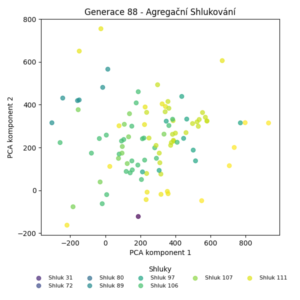
Stabilita mezi generací 87 → 88:
Shluk 107 → 107: 24 jedinců (92.3 %)
Shluk 107 → 111: 1 jedinců (3.8 %)
Shluk 107 → 80: 1 jedinců (3.8 %)
Shluk 80 → 80: 6 jedinců (60.0 %)
Shluk 80 → 89: 1 jedinců (10.0 %)
Shluk 80 → 112: 1 jedinců (10.0 %)
Shluk 80 → 114: 2 jedinců (20.0 %)
Shluk 89 → 89: 19 jedinců (86.4 %)
Shluk 89 → 80: 2 jedinců (9.1 %)
Shluk 89 → 97: 1 jedinců (4.5 %)
Shluk 72 → 111: 2 jedinců (25.0 %)
Shluk 72 → 72: 6 jedinců (75.0 %)
Shluk 97 → 97: 10 jedinců (83.3 %)
Shluk 97 → 89: 2 jedinců (16.7 %)
Shluk 111 → 111: 4 jedinců (44.4 %)
Shluk 111 → 89: 4 jedinců (44.4 %)
Shluk 111 → 114: 1 jedinců (11.1 %)
Shluk 106 → 112: 1 jedinců (25.0 %)
Shluk 106 → 106: 3 jedinců (75.0 %)
Shluk 112 → 114: 2 jedinců (33.3 %)
Shluk 112 → 112: 4 jedinců (66.7 %)
Shluk 31 → 31: 1 jedinců (100.0 %)
Shluk 113 → 113: 2 jedinců (100.0 %)
Jaccardovo mapování a overlap: Generace 87 → 88
- Shluk 107 → 107 (Jaccard: 0.92, Overlap: 1.00)
- Shluk 80 → 80 (Jaccard: 0.46, Overlap: 0.67)
- Shluk 89 → 89 (Jaccard: 0.66, Overlap: 0.86)
- Shluk 72 → 72 (Jaccard: 0.75, Overlap: 1.00)
- Shluk 97 → 97 (Jaccard: 0.77, Overlap: 0.91)
- Shluk 111 → 111 (Jaccard: 0.33, Overlap: 0.57)
- Shluk 106 → 106 (Jaccard: 0.75, Overlap: 1.00)
- Shluk 112 → 112 (Jaccard: 0.50, Overlap: 0.67)
- Shluk 31 → 31 (Jaccard: 1.00, Overlap: 1.00)
- Shluk 113 → 113 (Jaccard: 1.00, Overlap: 1.00)
Posun centroidů mezi generací 87 → 88:
- Shluk 0: 188.8976
- Shluk 1: 39.2101
- Shluk 2: 817.2997
- Shluk 3: 962.5213
- Shluk 4: 1055.5106
- Shluk 5: 746.5242
- Shluk 6: 979.7206
- Shluk 7: 1575.0711
- Shluk 8: 1463.3566
- Shluk 9: 1021.1674
Generace 89
Stabilita mezi generací 88 → 89:
Shluk 107 → 107: 15 jedinců (62.5 %)
Shluk 107 → 113: 3 jedinců (12.5 %)
Shluk 107 → 89: 6 jedinců (25.0 %)
Shluk 80 → 80: 9 jedinců (100.0 %)
Shluk 89 → 89: 13 jedinců (50.0 %)
Shluk 89 → 113: 12 jedinců (46.2 %)
Shluk 89 → 97: 1 jedinců (3.8 %)
Shluk 111 → 111: 7 jedinců (100.0 %)
Shluk 97 → 97: 11 jedinců (100.0 %)
Shluk 112 → 112: 6 jedinců (100.0 %)
Shluk 72 → 72: 6 jedinců (100.0 %)
Shluk 114 → 114: 5 jedinců (100.0 %)
Shluk 31 → 31: 1 jedinců (100.0 %)
Shluk 113 → 113: 2 jedinců (100.0 %)
Shluk 106 → 106: 3 jedinců (100.0 %)
Jaccardovo mapování a overlap: Generace 88 → 89
- Shluk 107 → 107 (Jaccard: 0.62, Overlap: 1.00)
- Shluk 80 → 80 (Jaccard: 1.00, Overlap: 1.00)
- Shluk 89 → 89 (Jaccard: 0.41, Overlap: 0.68)
- Shluk 111 → 111 (Jaccard: 1.00, Overlap: 1.00)
- Shluk 97 → 97 (Jaccard: 0.92, Overlap: 1.00)
- Shluk 112 → 112 (Jaccard: 1.00, Overlap: 1.00)
- Shluk 72 → 72 (Jaccard: 1.00, Overlap: 1.00)
- Shluk 114 → 114 (Jaccard: 1.00, Overlap: 1.00)
- Shluk 31 → 31 (Jaccard: 1.00, Overlap: 1.00)
- Shluk 113 → 113 (Jaccard: 0.12, Overlap: 1.00)
- Shluk 106 → 106 (Jaccard: 1.00, Overlap: 1.00)
Posun centroidů mezi generací 88 → 89:
- Shluk 0: 0.0000
- Shluk 1: 800.5464
- Shluk 2: 1206.4776
- Shluk 3: 473.1555
- Shluk 4: 973.8696
- Shluk 5: 715.7308
- Shluk 6: 785.6776
- Shluk 7: 0.0000
- Shluk 8: 934.4965
- Shluk 9: 935.8039
- Shluk 10: 1319.2689
Generace 90
Stabilita mezi generací 89 → 90:
Shluk 107 → 107: 15 jedinců (100.0 %)
Shluk 113 → 113: 14 jedinců (82.4 %)
Shluk 113 → 89: 2 jedinců (11.8 %)
Shluk 113 → 107: 1 jedinců (5.9 %)
Shluk 80 → 80: 9 jedinců (100.0 %)
Shluk 89 → 89: 17 jedinců (89.5 %)
Shluk 89 → 113: 1 jedinců (5.3 %)
Shluk 89 → 97: 1 jedinců (5.3 %)
Shluk 111 → 111: 7 jedinců (100.0 %)
Shluk 97 → 97: 10 jedinců (83.3 %)
Shluk 97 → 80: 1 jedinců (8.3 %)
Shluk 97 → 113: 1 jedinců (8.3 %)
Shluk 112 → 112: 6 jedinců (100.0 %)
Shluk 72 → 72: 6 jedinců (100.0 %)
Shluk 114 → 114: 4 jedinců (80.0 %)
Shluk 114 → 80: 1 jedinců (20.0 %)
Shluk 31 → 31: 1 jedinců (100.0 %)
Shluk 106 → 114: 3 jedinců (100.0 %)
Jaccardovo mapování a overlap: Generace 89 → 90
- Shluk 107 → 107 (Jaccard: 0.94, Overlap: 1.00)
- Shluk 113 → 113 (Jaccard: 0.74, Overlap: 0.88)
- Shluk 80 → 80 (Jaccard: 0.82, Overlap: 1.00)
- Shluk 89 → 89 (Jaccard: 0.81, Overlap: 0.89)
- Shluk 111 → 111 (Jaccard: 1.00, Overlap: 1.00)
- Shluk 97 → 97 (Jaccard: 0.77, Overlap: 0.91)
- Shluk 112 → 112 (Jaccard: 1.00, Overlap: 1.00)
- Shluk 72 → 72 (Jaccard: 1.00, Overlap: 1.00)
- Shluk 114 → 114 (Jaccard: 0.50, Overlap: 0.80)
- Shluk 31 → 31 (Jaccard: 1.00, Overlap: 1.00)
- Shluk 106 → 114 (Jaccard: 0.43, Overlap: 1.00)
Posun centroidů mezi generací 89 → 90:
- Shluk 0: 852.3078
- Shluk 1: 878.4405
- Shluk 2: 1033.3754
- Shluk 3: 57.5597
- Shluk 4: 718.4157
- Shluk 5: 978.7482
- Shluk 6: 984.8526
- Shluk 7: 0.0000
- Shluk 8: 943.2969
- Shluk 9: 944.2830
Generace 91
Stabilita mezi generací 90 → 91:
Shluk 107 → 107: 16 jedinců (100.0 %)
Shluk 113 → 89: 16 jedinců (100.0 %)
Shluk 80 → 80: 9 jedinců (81.8 %)
Shluk 80 → 107: 1 jedinců (9.1 %)
Shluk 80 → 114: 1 jedinců (9.1 %)
Shluk 89 → 89: 18 jedinců (94.7 %)
Shluk 89 → 114: 1 jedinců (5.3 %)
Shluk 111 → 111: 6 jedinců (85.7 %)
Shluk 111 → 115: 1 jedinců (14.3 %)
Shluk 97 → 97: 10 jedinců (90.9 %)
Shluk 97 → 89: 1 jedinců (9.1 %)
Shluk 112 → 112: 4 jedinců (66.7 %)
Shluk 112 → 80: 2 jedinců (33.3 %)
Shluk 72 → 97: 1 jedinců (16.7 %)
Shluk 72 → 72: 5 jedinců (83.3 %)
Shluk 114 → 114: 4 jedinců (57.1 %)
Shluk 114 → 115: 3 jedinců (42.9 %)
Shluk 31 → 31: 1 jedinců (100.0 %)
Jaccardovo mapování a overlap: Generace 90 → 91
- Shluk 107 → 107 (Jaccard: 0.94, Overlap: 1.00)
- Shluk 113 → 89 (Jaccard: 0.46, Overlap: 1.00)
- Shluk 80 → 80 (Jaccard: 0.69, Overlap: 0.82)
- Shluk 89 → 89 (Jaccard: 0.50, Overlap: 0.95)
- Shluk 111 → 111 (Jaccard: 0.86, Overlap: 1.00)
- Shluk 97 → 97 (Jaccard: 0.83, Overlap: 0.91)
- Shluk 112 → 112 (Jaccard: 0.67, Overlap: 1.00)
- Shluk 72 → 72 (Jaccard: 0.83, Overlap: 1.00)
- Shluk 114 → 114 (Jaccard: 0.44, Overlap: 0.67)
- Shluk 31 → 31 (Jaccard: 1.00, Overlap: 1.00)
Posun centroidů mezi generací 90 → 91:
- Shluk 0: 918.2105
- Shluk 1: 125.1895
- Shluk 2: 638.9383
- Shluk 3: 1020.8976
- Shluk 4: 859.9581
- Shluk 5: 880.9167
- Shluk 6: 77.4801
- Shluk 7: 1457.9753
- Shluk 8: 1696.3968
- Shluk 9: 1014.8107
Generace 92
Stabilita mezi generací 91 → 92:
Shluk 107 → 107: 15 jedinců (88.2 %)
Shluk 107 → 80: 1 jedinců (5.9 %)
Shluk 107 → 89: 1 jedinců (5.9 %)
Shluk 89 → 89: 35 jedinců (100.0 %)
Shluk 80 → 97: 1 jedinců (9.1 %)
Shluk 80 → 80: 10 jedinců (90.9 %)
Shluk 111 → 111: 5 jedinců (83.3 %)
Shluk 111 → 107: 1 jedinců (16.7 %)
Shluk 97 → 97: 11 jedinců (100.0 %)
Shluk 112 → 80: 4 jedinců (100.0 %)
Shluk 72 → 72: 5 jedinců (100.0 %)
Shluk 115 → 115: 4 jedinců (100.0 %)
Shluk 114 → 114: 5 jedinců (83.3 %)
Shluk 114 → 97: 1 jedinců (16.7 %)
Shluk 31 → 31: 1 jedinců (100.0 %)
Jaccardovo mapování a overlap: Generace 91 → 92
- Shluk 107 → 107 (Jaccard: 0.83, Overlap: 0.94)
- Shluk 89 → 89 (Jaccard: 0.97, Overlap: 1.00)
- Shluk 80 → 80 (Jaccard: 0.62, Overlap: 0.91)
- Shluk 111 → 111 (Jaccard: 0.83, Overlap: 1.00)
- Shluk 97 → 97 (Jaccard: 0.85, Overlap: 1.00)
- Shluk 112 → 80 (Jaccard: 0.27, Overlap: 1.00)
- Shluk 72 → 72 (Jaccard: 1.00, Overlap: 1.00)
- Shluk 115 → 115 (Jaccard: 1.00, Overlap: 1.00)
- Shluk 114 → 114 (Jaccard: 0.83, Overlap: 1.00)
- Shluk 31 → 31 (Jaccard: 1.00, Overlap: 1.00)
Posun centroidů mezi generací 91 → 92:
- Shluk 0: 765.2439
- Shluk 1: 752.5079
- Shluk 2: 83.6198
- Shluk 3: 1018.8327
- Shluk 4: 756.2174
- Shluk 5: 129.2154
- Shluk 6: 1156.7445
- Shluk 7: 0.0000
- Shluk 8: 0.0000
Generace 93
Stabilita mezi generací 92 → 93:
Shluk 107 → 107: 15 jedinců (93.8 %)
Shluk 107 → 116: 1 jedinců (6.2 %)
Shluk 89 → 89: 22 jedinců (61.1 %)
Shluk 89 → 116: 14 jedinců (38.9 %)
Shluk 97 → 97: 12 jedinců (92.3 %)
Shluk 97 → 116: 1 jedinců (7.7 %)
Shluk 111 → 111: 5 jedinců (100.0 %)
Shluk 80 → 80: 14 jedinců (93.3 %)
Shluk 80 → 114: 1 jedinců (6.7 %)
Shluk 72 → 72: 5 jedinců (100.0 %)
Shluk 115 → 115: 4 jedinců (100.0 %)
Shluk 114 → 114: 5 jedinců (100.0 %)
Shluk 31 → 31: 1 jedinců (100.0 %)
Jaccardovo mapování a overlap: Generace 92 → 93
- Shluk 107 → 107 (Jaccard: 0.94, Overlap: 1.00)
- Shluk 89 → 89 (Jaccard: 0.61, Overlap: 1.00)
- Shluk 97 → 97 (Jaccard: 0.92, Overlap: 1.00)
- Shluk 111 → 111 (Jaccard: 1.00, Overlap: 1.00)
- Shluk 80 → 80 (Jaccard: 0.93, Overlap: 1.00)
- Shluk 72 → 72 (Jaccard: 1.00, Overlap: 1.00)
- Shluk 115 → 115 (Jaccard: 1.00, Overlap: 1.00)
- Shluk 114 → 114 (Jaccard: 0.83, Overlap: 1.00)
- Shluk 31 → 31 (Jaccard: 1.00, Overlap: 1.00)
Posun centroidů mezi generací 92 → 93:
- Shluk 0: 73.4605
- Shluk 1: 587.9381
- Shluk 2: 644.5864
- Shluk 3: 22.0262
- Shluk 4: 707.9734
- Shluk 5: 942.7368
- Shluk 6: 1203.2922
- Shluk 7: 0.0000
- Shluk 8: 0.0000

Generace 94
Stabilita mezi generací 93 → 94:
Shluk 107 → 107: 14 jedinců (93.3 %)
Shluk 107 → 115: 1 jedinců (6.7 %)
Shluk 89 → 89: 22 jedinců (100.0 %)
Shluk 97 → 97: 12 jedinců (100.0 %)
Shluk 116 → 116: 16 jedinců (100.0 %)
Shluk 111 → 111: 5 jedinců (100.0 %)
Shluk 80 → 80: 13 jedinců (92.9 %)
Shluk 80 → 107: 1 jedinců (7.1 %)
Shluk 72 → 72: 5 jedinců (100.0 %)
Shluk 115 → 115: 4 jedinců (100.0 %)
Shluk 114 → 114: 6 jedinců (100.0 %)
Shluk 31 → 31: 1 jedinců (100.0 %)
Jaccardovo mapování a overlap: Generace 93 → 94
- Shluk 107 → 107 (Jaccard: 0.88, Overlap: 0.93)
- Shluk 89 → 89 (Jaccard: 1.00, Overlap: 1.00)
- Shluk 97 → 97 (Jaccard: 1.00, Overlap: 1.00)
- Shluk 116 → 116 (Jaccard: 1.00, Overlap: 1.00)
- Shluk 111 → 111 (Jaccard: 1.00, Overlap: 1.00)
- Shluk 80 → 80 (Jaccard: 0.93, Overlap: 1.00)
- Shluk 72 → 72 (Jaccard: 1.00, Overlap: 1.00)
- Shluk 115 → 115 (Jaccard: 0.80, Overlap: 1.00)
- Shluk 114 → 114 (Jaccard: 1.00, Overlap: 1.00)
- Shluk 31 → 31 (Jaccard: 1.00, Overlap: 1.00)
Posun centroidů mezi generací 93 → 94:
- Shluk 0: 23.9269
- Shluk 1: 37.3837
- Shluk 2: 0.0000
- Shluk 3: 0.0000
- Shluk 4: 0.0000
- Shluk 5: 0.0000
- Shluk 6: 1210.8528
- Shluk 7: 1250.6522
- Shluk 8: 0.0000
- Shluk 9: 893.0123
Generace 95
Stabilita mezi generací 94 → 95:
Shluk 107 → 107: 15 jedinců (100.0 %)
Shluk 89 → 107: 3 jedinců (13.6 %)
Shluk 89 → 116: 14 jedinců (63.6 %)
Shluk 89 → 117: 5 jedinců (22.7 %)
Shluk 97 → 97: 11 jedinců (91.7 %)
Shluk 97 → 80: 1 jedinců (8.3 %)
Shluk 116 → 116: 16 jedinců (100.0 %)
Shluk 111 → 111: 5 jedinců (100.0 %)
Shluk 80 → 80: 13 jedinců (100.0 %)
Shluk 72 → 72: 5 jedinců (100.0 %)
Shluk 115 → 115: 5 jedinců (100.0 %)
Shluk 114 → 114: 6 jedinců (100.0 %)
Shluk 31 → 31: 1 jedinců (100.0 %)
Jaccardovo mapování a overlap: Generace 94 → 95
- Shluk 107 → 107 (Jaccard: 0.83, Overlap: 1.00)
- Shluk 89 → 116 (Jaccard: 0.37, Overlap: 0.64)
- Shluk 97 → 97 (Jaccard: 0.92, Overlap: 1.00)
- Shluk 116 → 116 (Jaccard: 0.53, Overlap: 1.00)
- Shluk 111 → 111 (Jaccard: 1.00, Overlap: 1.00)
- Shluk 80 → 80 (Jaccard: 0.93, Overlap: 1.00)
- Shluk 72 → 72 (Jaccard: 1.00, Overlap: 1.00)
- Shluk 115 → 115 (Jaccard: 1.00, Overlap: 1.00)
- Shluk 114 → 114 (Jaccard: 1.00, Overlap: 1.00)
- Shluk 31 → 31 (Jaccard: 1.00, Overlap: 1.00)
Posun centroidů mezi generací 94 → 95:
- Shluk 0: 44.4792
- Shluk 1: 579.7652
- Shluk 2: 577.1602
- Shluk 3: 23.1298
- Shluk 4: 960.6128
- Shluk 5: 1164.0348
- Shluk 6: 1164.0348
- Shluk 7: 21.6767
- Shluk 8: 1442.5798
- Shluk 9: 1450.2363
Generace 96
Stabilita mezi generací 95 → 96:
Shluk 107 → 107: 18 jedinců (100.0 %)
Shluk 97 → 97: 7 jedinců (63.6 %)
Shluk 97 → 117: 4 jedinců (36.4 %)
Shluk 116 → 116: 16 jedinců (53.3 %)
Shluk 116 → 117: 14 jedinců (46.7 %)
Shluk 111 → 111: 5 jedinců (100.0 %)
Shluk 80 → 80: 14 jedinců (100.0 %)
Shluk 72 → 72: 4 jedinců (80.0 %)
Shluk 72 → 97: 1 jedinců (20.0 %)
Shluk 115 → 115: 5 jedinců (100.0 %)
Shluk 114 → 114: 6 jedinců (100.0 %)
Shluk 117 → 117: 4 jedinců (80.0 %)
Shluk 117 → 107: 1 jedinců (20.0 %)
Shluk 31 → 31: 1 jedinců (100.0 %)
Jaccardovo mapování a overlap: Generace 95 → 96
- Shluk 107 → 107 (Jaccard: 0.95, Overlap: 1.00)
- Shluk 97 → 97 (Jaccard: 0.58, Overlap: 0.88)
- Shluk 116 → 116 (Jaccard: 0.53, Overlap: 1.00)
- Shluk 111 → 111 (Jaccard: 1.00, Overlap: 1.00)
- Shluk 80 → 80 (Jaccard: 1.00, Overlap: 1.00)
- Shluk 72 → 72 (Jaccard: 0.80, Overlap: 1.00)
- Shluk 115 → 115 (Jaccard: 1.00, Overlap: 1.00)
- Shluk 114 → 114 (Jaccard: 1.00, Overlap: 1.00)
- Shluk 117 → 117 (Jaccard: 0.17, Overlap: 0.80)
- Shluk 31 → 31 (Jaccard: 1.00, Overlap: 1.00)
Posun centroidů mezi generací 95 → 96:
- Shluk 0: 0.0000
- Shluk 1: 273.5040
- Shluk 2: 49.4265
- Shluk 3: 176.2940
- Shluk 4: 971.0379
- Shluk 5: 0.0000
- Shluk 6: 987.6811
- Shluk 7: 0.0000
- Shluk 8: 1442.5798
- Shluk 9: 1556.1622
Generace 97
Stabilita mezi generací 96 → 97:
Shluk 107 → 107: 15 jedinců (78.9 %)
Shluk 107 → 117: 1 jedinců (5.3 %)
Shluk 107 → 116: 3 jedinců (15.8 %)
Shluk 97 → 97: 8 jedinců (100.0 %)
Shluk 116 → 116: 15 jedinců (93.8 %)
Shluk 116 → 115: 1 jedinců (6.2 %)
Shluk 117 → 116: 1 jedinců (4.5 %)
Shluk 117 → 117: 18 jedinců (81.8 %)
Shluk 117 → 97: 3 jedinců (13.6 %)
Shluk 111 → 111: 5 jedinců (100.0 %)
Shluk 80 → 80: 14 jedinců (100.0 %)
Shluk 72 → 72: 4 jedinců (100.0 %)
Shluk 115 → 115: 5 jedinců (100.0 %)
Shluk 114 → 114: 6 jedinců (100.0 %)
Shluk 31 → 31: 1 jedinců (100.0 %)
Jaccardovo mapování a overlap: Generace 96 → 97
- Shluk 107 → 107 (Jaccard: 0.79, Overlap: 1.00)
- Shluk 97 → 97 (Jaccard: 0.73, Overlap: 1.00)
- Shluk 116 → 116 (Jaccard: 0.75, Overlap: 0.94)
- Shluk 117 → 117 (Jaccard: 0.78, Overlap: 0.95)
- Shluk 111 → 111 (Jaccard: 1.00, Overlap: 1.00)
- Shluk 80 → 80 (Jaccard: 1.00, Overlap: 1.00)
- Shluk 72 → 72 (Jaccard: 1.00, Overlap: 1.00)
- Shluk 115 → 115 (Jaccard: 0.83, Overlap: 1.00)
- Shluk 114 → 114 (Jaccard: 1.00, Overlap: 1.00)
- Shluk 31 → 31 (Jaccard: 1.00, Overlap: 1.00)
Posun centroidů mezi generací 96 → 97:
- Shluk 0: 0.0000
- Shluk 1: 525.4970
- Shluk 2: 611.3311
- Shluk 3: 881.8882
- Shluk 4: 70.2272
- Shluk 5: 0.0000
- Shluk 6: 1256.5955
- Shluk 7: 911.5633
- Shluk 8: 0.0000
- Shluk 9: 1032.2965
Generace 98
Stabilita mezi generací 97 → 98:
Shluk 107 → 107: 15 jedinců (100.0 %)
Shluk 117 → 117: 19 jedinců (100.0 %)
Shluk 97 → 97: 11 jedinců (100.0 %)
Shluk 116 → 116: 18 jedinců (94.7 %)
Shluk 116 → 111: 1 jedinců (5.3 %)
Shluk 111 → 111: 5 jedinců (100.0 %)
Shluk 80 → 118: 4 jedinců (28.6 %)
Shluk 80 → 80: 8 jedinců (57.1 %)
Shluk 80 → 114: 2 jedinců (14.3 %)
Shluk 72 → 72: 4 jedinců (100.0 %)
Shluk 115 → 115: 6 jedinců (100.0 %)
Shluk 114 → 115: 1 jedinců (16.7 %)
Shluk 114 → 107: 1 jedinců (16.7 %)
Shluk 114 → 114: 4 jedinců (66.7 %)
Shluk 31 → 31: 1 jedinců (100.0 %)
Jaccardovo mapování a overlap: Generace 97 → 98
- Shluk 107 → 107 (Jaccard: 0.94, Overlap: 1.00)
- Shluk 117 → 117 (Jaccard: 1.00, Overlap: 1.00)
- Shluk 97 → 97 (Jaccard: 1.00, Overlap: 1.00)
- Shluk 116 → 116 (Jaccard: 0.95, Overlap: 1.00)
- Shluk 111 → 111 (Jaccard: 0.83, Overlap: 1.00)
- Shluk 80 → 80 (Jaccard: 0.57, Overlap: 1.00)
- Shluk 72 → 72 (Jaccard: 1.00, Overlap: 1.00)
- Shluk 115 → 115 (Jaccard: 0.86, Overlap: 1.00)
- Shluk 114 → 114 (Jaccard: 0.50, Overlap: 0.67)
- Shluk 31 → 31 (Jaccard: 1.00, Overlap: 1.00)
Posun centroidů mezi generací 97 → 98:
- Shluk 0: 238.3297
- Shluk 1: 602.6598
- Shluk 2: 602.6598
- Shluk 3: 36.4799
- Shluk 4: 962.3277
- Shluk 5: 1200.6515
- Shluk 6: 911.5633
- Shluk 7: 1107.0876
- Shluk 8: 0.0000
- Shluk 9: 40.9995
Generace 99
Stabilita mezi generací 98 → 99:
Shluk 107 → 107: 15 jedinců (93.8 %)
Shluk 107 → 119: 1 jedinců (6.2 %)
Shluk 117 → 116: 14 jedinců (73.7 %)
Shluk 117 → 119: 5 jedinců (26.3 %)
Shluk 97 → 80: 1 jedinců (9.1 %)
Shluk 97 → 97: 9 jedinců (81.8 %)
Shluk 97 → 111: 1 jedinců (9.1 %)
Shluk 116 → 116: 18 jedinců (100.0 %)
Shluk 111 → 111: 4 jedinců (66.7 %)
Shluk 111 → 116: 1 jedinců (16.7 %)
Shluk 111 → 107: 1 jedinců (16.7 %)
Shluk 118 → 118: 4 jedinců (100.0 %)
Shluk 80 → 80: 8 jedinců (100.0 %)
Shluk 72 → 72: 4 jedinců (100.0 %)
Shluk 115 → 115: 7 jedinců (100.0 %)
Shluk 114 → 114: 4 jedinců (66.7 %)
Shluk 114 → 80: 2 jedinců (33.3 %)
Shluk 31 → 118: 1 jedinců (100.0 %)
Jaccardovo mapování a overlap: Generace 98 → 99
- Shluk 107 → 107 (Jaccard: 0.88, Overlap: 0.94)
- Shluk 117 → 116 (Jaccard: 0.37, Overlap: 0.74)
- Shluk 97 → 97 (Jaccard: 0.82, Overlap: 1.00)
- Shluk 116 → 116 (Jaccard: 0.55, Overlap: 1.00)
- Shluk 111 → 111 (Jaccard: 0.57, Overlap: 0.80)
- Shluk 118 → 118 (Jaccard: 0.80, Overlap: 1.00)
- Shluk 80 → 80 (Jaccard: 0.73, Overlap: 1.00)
- Shluk 72 → 72 (Jaccard: 1.00, Overlap: 1.00)
- Shluk 115 → 115 (Jaccard: 1.00, Overlap: 1.00)
- Shluk 114 → 114 (Jaccard: 0.67, Overlap: 1.00)
- Shluk 31 → 118 (Jaccard: 0.20, Overlap: 1.00)
Posun centroidů mezi generací 98 → 99:
- Shluk 0: 118.9714
- Shluk 1: 342.1435
- Shluk 2: 591.6508
- Shluk 3: 905.9664
- Shluk 4: 1306.2128
- Shluk 5: 876.0842
- Shluk 6: 1214.1601
- Shluk 7: 1107.0876
- Shluk 8: 1267.7151
- Shluk 9: 949.5606
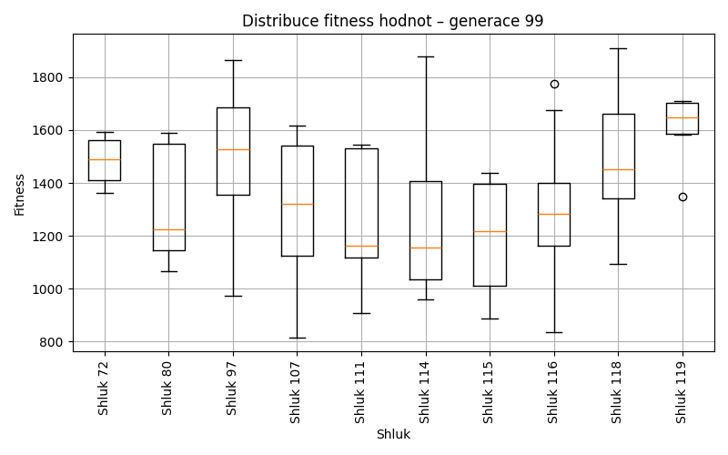
Generace 100
Stabilita mezi generací 99 → 100:
Shluk 107 → 107: 15 jedinců (93.8 %)
Shluk 107 → 116: 1 jedinců (6.2 %)
Shluk 116 → 116: 33 jedinců (100.0 %)
Shluk 80 → 80: 11 jedinců (100.0 %)
Shluk 111 → 111: 5 jedinců (100.0 %)
Shluk 118 → 118: 4 jedinců (80.0 %)
Shluk 118 → 80: 1 jedinců (20.0 %)
Shluk 97 → 97: 9 jedinců (100.0 %)
Shluk 72 → 72: 4 jedinců (100.0 %)
Shluk 115 → 115: 7 jedinců (100.0 %)
Shluk 114 → 114: 4 jedinců (100.0 %)
Shluk 119 → 119: 6 jedinců (100.0 %)
Jaccardovo mapování a overlap: Generace 99 → 100
- Shluk 107 → 107 (Jaccard: 0.94, Overlap: 1.00)
- Shluk 116 → 116 (Jaccard: 0.97, Overlap: 1.00)
- Shluk 80 → 80 (Jaccard: 0.92, Overlap: 1.00)
- Shluk 111 → 111 (Jaccard: 1.00, Overlap: 1.00)
- Shluk 118 → 118 (Jaccard: 0.80, Overlap: 1.00)
- Shluk 97 → 97 (Jaccard: 1.00, Overlap: 1.00)
- Shluk 72 → 72 (Jaccard: 1.00, Overlap: 1.00)
- Shluk 115 → 115 (Jaccard: 1.00, Overlap: 1.00)
- Shluk 114 → 114 (Jaccard: 1.00, Overlap: 1.00)
- Shluk 119 → 119 (Jaccard: 1.00, Overlap: 1.00)
Posun centroidů mezi generací 99 → 100:
- Shluk 0: 31.6023
- Shluk 1: 0.0000
- Shluk 2: 4.9047
- Shluk 3: 0.0000
- Shluk 4: 1309.4813
- Shluk 5: 816.5640
- Shluk 6: 1071.2446
- Shluk 7: 937.4239
- Shluk 8: 689.9298
- Shluk 9: 949.5606
Generace 101
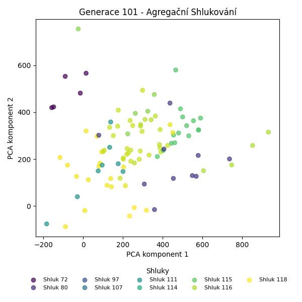

Stabilita mezi generací 100 → 101:
Shluk 107 → 107: 15 jedinců (100.0 %)
Shluk 116 → 119: 9 jedinců (26.5 %)
Shluk 116 → 116: 25 jedinců (73.5 %)
Shluk 80 → 80: 10 jedinců (83.3 %)
Shluk 80 → 120: 2 jedinců (16.7 %)
Shluk 111 → 111: 5 jedinců (100.0 %)
Shluk 118 → 118: 3 jedinců (75.0 %)
Shluk 118 → 72: 1 jedinců (25.0 %)
Shluk 97 → 120: 1 jedinců (11.1 %)
Shluk 97 → 97: 8 jedinců (88.9 %)
Shluk 72 → 72: 4 jedinců (100.0 %)
Shluk 115 → 115: 7 jedinců (100.0 %)
Shluk 114 → 114: 4 jedinců (100.0 %)
Shluk 119 → 119: 6 jedinců (100.0 %)
Jaccardovo mapování a overlap: Generace 100 → 101
- Shluk 107 → 107 (Jaccard: 1.00, Overlap: 1.00)
- Shluk 116 → 116 (Jaccard: 0.74, Overlap: 1.00)
- Shluk 80 → 80 (Jaccard: 0.83, Overlap: 1.00)
- Shluk 111 → 111 (Jaccard: 1.00, Overlap: 1.00)
- Shluk 118 → 118 (Jaccard: 0.75, Overlap: 1.00)
- Shluk 97 → 97 (Jaccard: 0.89, Overlap: 1.00)
- Shluk 72 → 72 (Jaccard: 0.80, Overlap: 1.00)
- Shluk 115 → 115 (Jaccard: 1.00, Overlap: 1.00)
- Shluk 114 → 114 (Jaccard: 1.00, Overlap: 1.00)
- Shluk 119 → 119 (Jaccard: 0.40, Overlap: 1.00)
Posun centroidů mezi generací 100 → 101:
- Shluk 0: 827.4461
- Shluk 1: 653.6030
- Shluk 2: 958.3382
- Shluk 3: 0.0000
- Shluk 4: 668.7379
- Shluk 5: 54.6265
- Shluk 6: 883.9918
- Shluk 7: 724.3449
- Shluk 8: 0.0000
- Shluk 9: 1019.7508
Generace 102
Stabilita mezi generací 101 → 102:
Shluk 107 → 107: 15 jedinců (100.0 %)
Shluk 119 → 119: 15 jedinců (100.0 %)
Shluk 80 → 80: 10 jedinců (100.0 %)
Shluk 116 → 116: 23 jedinců (92.0 %)
Shluk 116 → 114: 2 jedinců (8.0 %)
Shluk 111 → 111: 4 jedinců (80.0 %)
Shluk 111 → 116: 1 jedinců (20.0 %)
Shluk 118 → 118: 3 jedinců (100.0 %)
Shluk 120 → 120: 3 jedinců (100.0 %)
Shluk 72 → 72: 5 jedinců (100.0 %)
Shluk 115 → 115: 7 jedinců (100.0 %)
Shluk 114 → 114: 3 jedinců (75.0 %)
Shluk 114 → 80: 1 jedinců (25.0 %)
Shluk 97 → 97: 8 jedinců (100.0 %)
Jaccardovo mapování a overlap: Generace 101 → 102
- Shluk 107 → 107 (Jaccard: 1.00, Overlap: 1.00)
- Shluk 119 → 119 (Jaccard: 1.00, Overlap: 1.00)
- Shluk 80 → 80 (Jaccard: 0.91, Overlap: 1.00)
- Shluk 116 → 116 (Jaccard: 0.88, Overlap: 0.96)
- Shluk 111 → 111 (Jaccard: 0.80, Overlap: 1.00)
- Shluk 118 → 118 (Jaccard: 1.00, Overlap: 1.00)
- Shluk 120 → 120 (Jaccard: 1.00, Overlap: 1.00)
- Shluk 72 → 72 (Jaccard: 1.00, Overlap: 1.00)
- Shluk 115 → 115 (Jaccard: 1.00, Overlap: 1.00)
- Shluk 114 → 114 (Jaccard: 0.50, Overlap: 0.75)
- Shluk 97 → 97 (Jaccard: 1.00, Overlap: 1.00)
Posun centroidů mezi generací 101 → 102:
- Shluk 0: 0.0000
- Shluk 1: 702.8176
- Shluk 2: 951.0389
- Shluk 3: 852.6082
- Shluk 4: 693.2988
- Shluk 5: 0.0000
- Shluk 6: 705.5574
- Shluk 7: 0.0000
- Shluk 8: 1229.5663
- Shluk 9: 0.0000
- Shluk 10: 878.8159
Generace 103
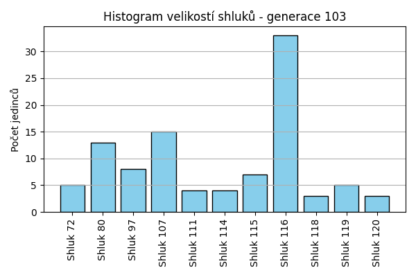
Stabilita mezi generací 102 → 103:
Shluk 107 → 107: 15 jedinců (100.0 %)
Shluk 119 → 116: 8 jedinců (53.3 %)
Shluk 119 → 80: 2 jedinců (13.3 %)
Shluk 119 → 119: 5 jedinců (33.3 %)
Shluk 80 → 80: 11 jedinců (100.0 %)
Shluk 116 → 116: 24 jedinců (100.0 %)
Shluk 111 → 111: 4 jedinců (100.0 %)
Shluk 118 → 118: 3 jedinců (100.0 %)
Shluk 120 → 120: 3 jedinců (100.0 %)
Shluk 72 → 72: 5 jedinců (100.0 %)
Shluk 115 → 115: 7 jedinců (100.0 %)
Shluk 114 → 116: 1 jedinců (20.0 %)
Shluk 114 → 114: 4 jedinců (80.0 %)
Shluk 97 → 97: 8 jedinců (100.0 %)
Jaccardovo mapování a overlap: Generace 102 → 103
- Shluk 107 → 107 (Jaccard: 1.00, Overlap: 1.00)
- Shluk 119 → 119 (Jaccard: 0.33, Overlap: 1.00)
- Shluk 80 → 80 (Jaccard: 0.85, Overlap: 1.00)
- Shluk 116 → 116 (Jaccard: 0.73, Overlap: 1.00)
- Shluk 111 → 111 (Jaccard: 1.00, Overlap: 1.00)
- Shluk 118 → 118 (Jaccard: 1.00, Overlap: 1.00)
- Shluk 120 → 120 (Jaccard: 1.00, Overlap: 1.00)
- Shluk 72 → 72 (Jaccard: 1.00, Overlap: 1.00)
- Shluk 115 → 115 (Jaccard: 1.00, Overlap: 1.00)
- Shluk 114 → 114 (Jaccard: 0.80, Overlap: 1.00)
- Shluk 97 → 97 (Jaccard: 1.00, Overlap: 1.00)
Posun centroidů mezi generací 102 → 103:
- Shluk 0: 814.0808
- Shluk 1: 708.7415
- Shluk 2: 596.2563
- Shluk 3: 873.6000
- Shluk 4: 0.0000
- Shluk 5: 0.0000
- Shluk 6: 79.4559
- Shluk 7: 740.8924
- Shluk 8: 838.2438
- Shluk 9: 0.0000
- Shluk 10: 728.5613
Generace 104
Stabilita mezi generací 103 → 104:
Shluk 107 → 107: 14 jedinců (93.3 %)
Shluk 107 → 116: 1 jedinců (6.7 %)
Shluk 116 → 116: 33 jedinců (100.0 %)
Shluk 80 → 80: 13 jedinců (100.0 %)
Shluk 111 → 111: 4 jedinců (100.0 %)
Shluk 118 → 118: 3 jedinců (100.0 %)
Shluk 120 → 80: 3 jedinců (100.0 %)
Shluk 72 → 72: 5 jedinců (100.0 %)
Shluk 115 → 115: 6 jedinců (85.7 %)
Shluk 115 → 97: 1 jedinců (14.3 %)
Shluk 114 → 114: 4 jedinců (100.0 %)
Shluk 119 → 119: 5 jedinců (100.0 %)
Shluk 97 → 97: 8 jedinců (100.0 %)
Jaccardovo mapování a overlap: Generace 103 → 104
- Shluk 107 → 107 (Jaccard: 0.93, Overlap: 1.00)
- Shluk 116 → 116 (Jaccard: 0.97, Overlap: 1.00)
- Shluk 80 → 80 (Jaccard: 0.81, Overlap: 1.00)
- Shluk 111 → 111 (Jaccard: 1.00, Overlap: 1.00)
- Shluk 118 → 118 (Jaccard: 1.00, Overlap: 1.00)
- Shluk 120 → 80 (Jaccard: 0.19, Overlap: 1.00)
- Shluk 72 → 72 (Jaccard: 1.00, Overlap: 1.00)
- Shluk 115 → 115 (Jaccard: 0.86, Overlap: 1.00)
- Shluk 114 → 114 (Jaccard: 1.00, Overlap: 1.00)
- Shluk 119 → 119 (Jaccard: 1.00, Overlap: 1.00)
- Shluk 97 → 97 (Jaccard: 0.89, Overlap: 1.00)
Posun centroidů mezi generací 103 → 104:
- Shluk 0: 83.3629
- Shluk 1: 8.6789
- Shluk 2: 884.5072
- Shluk 3: 890.8613
- Shluk 4: 0.0000
- Shluk 5: 1031.4339
- Shluk 6: 0.0000
- Shluk 7: 952.8914
- Shluk 8: 0.0000
- Shluk 9: 1183.5098
Generace 105
Stabilita mezi generací 104 → 105:
Shluk 107 → 107: 14 jedinců (100.0 %)
Shluk 116 → 116: 34 jedinců (100.0 %)
Shluk 80 → 80: 16 jedinců (100.0 %)
Shluk 111 → 111: 4 jedinců (100.0 %)
Shluk 118 → 118: 3 jedinců (100.0 %)
Shluk 72 → 72: 5 jedinců (100.0 %)
Shluk 115 → 115: 6 jedinců (100.0 %)
Shluk 114 → 114: 4 jedinců (100.0 %)
Shluk 119 → 119: 5 jedinců (100.0 %)
Shluk 97 → 97: 8 jedinců (88.9 %)
Shluk 97 → 116: 1 jedinců (11.1 %)
Jaccardovo mapování a overlap: Generace 104 → 105
- Shluk 107 → 107 (Jaccard: 1.00, Overlap: 1.00)
- Shluk 116 → 116 (Jaccard: 0.97, Overlap: 1.00)
- Shluk 80 → 80 (Jaccard: 1.00, Overlap: 1.00)
- Shluk 111 → 111 (Jaccard: 1.00, Overlap: 1.00)
- Shluk 118 → 118 (Jaccard: 1.00, Overlap: 1.00)
- Shluk 72 → 72 (Jaccard: 1.00, Overlap: 1.00)
- Shluk 115 → 115 (Jaccard: 1.00, Overlap: 1.00)
- Shluk 114 → 114 (Jaccard: 1.00, Overlap: 1.00)
- Shluk 119 → 119 (Jaccard: 1.00, Overlap: 1.00)
- Shluk 97 → 97 (Jaccard: 0.89, Overlap: 1.00)
Posun centroidů mezi generací 104 → 105:
- Shluk 0: 0.0000
- Shluk 1: 11.4960
- Shluk 2: 0.0000
- Shluk 3: 27.8979
- Shluk 4: 0.0000
- Shluk 5: 0.0000
- Shluk 6: 0.0000
- Shluk 7: 838.2438
- Shluk 8: 838.2438
- Shluk 9: 0.0000
Generace 106
Stabilita mezi generací 105 → 106:
Shluk 107 → 107: 14 jedinců (100.0 %)
Shluk 116 → 116: 35 jedinců (100.0 %)
Shluk 80 → 80: 16 jedinců (100.0 %)
Shluk 111 → 111: 4 jedinců (100.0 %)
Shluk 118 → 118: 3 jedinců (100.0 %)
Shluk 72 → 72: 4 jedinců (80.0 %)
Shluk 72 → 116: 1 jedinců (20.0 %)
Shluk 115 → 115: 6 jedinců (100.0 %)
Shluk 114 → 114: 3 jedinců (75.0 %)
Shluk 114 → 107: 1 jedinců (25.0 %)
Shluk 119 → 115: 1 jedinců (20.0 %)
Shluk 119 → 119: 4 jedinců (80.0 %)
Shluk 97 → 97: 8 jedinců (100.0 %)
Jaccardovo mapování a overlap: Generace 105 → 106
- Shluk 107 → 107 (Jaccard: 0.93, Overlap: 1.00)
- Shluk 116 → 116 (Jaccard: 0.97, Overlap: 1.00)
- Shluk 80 → 80 (Jaccard: 1.00, Overlap: 1.00)
- Shluk 111 → 111 (Jaccard: 1.00, Overlap: 1.00)
- Shluk 118 → 118 (Jaccard: 1.00, Overlap: 1.00)
- Shluk 72 → 72 (Jaccard: 0.80, Overlap: 1.00)
- Shluk 115 → 115 (Jaccard: 0.86, Overlap: 1.00)
- Shluk 114 → 114 (Jaccard: 0.75, Overlap: 1.00)
- Shluk 119 → 119 (Jaccard: 0.80, Overlap: 1.00)
- Shluk 97 → 97 (Jaccard: 1.00, Overlap: 1.00)
Posun centroidů mezi generací 105 → 106:
- Shluk 0: 0.0000
- Shluk 1: 945.4483
- Shluk 2: 616.9556
- Shluk 3: 916.1725
- Shluk 4: 1128.8785
- Shluk 5: 1077.6265
- Shluk 6: 1211.0262
- Shluk 7: 108.7764
- Shluk 8: 1275.0798
- Shluk 9: 1020.4752
Generace 107

Stabilita mezi generací 106 → 107:
Shluk 107 → 107: 15 jedinců (100.0 %)
Shluk 116 → 116: 35 jedinců (97.2 %)
Shluk 116 → 114: 1 jedinců (2.8 %)
Shluk 80 → 80: 14 jedinců (87.5 %)
Shluk 80 → 118: 2 jedinců (12.5 %)
Shluk 111 → 111: 4 jedinců (100.0 %)
Shluk 118 → 80: 2 jedinců (66.7 %)
Shluk 118 → 118: 1 jedinců (33.3 %)
Shluk 72 → 72: 4 jedinců (100.0 %)
Shluk 115 → 115: 7 jedinců (100.0 %)
Shluk 114 → 114: 2 jedinců (66.7 %)
Shluk 114 → 107: 1 jedinců (33.3 %)
Shluk 97 → 97: 6 jedinců (75.0 %)
Shluk 97 → 107: 1 jedinců (12.5 %)
Shluk 97 → 116: 1 jedinců (12.5 %)
Shluk 119 → 119: 4 jedinců (100.0 %)
Jaccardovo mapování a overlap: Generace 106 → 107
- Shluk 107 → 107 (Jaccard: 0.88, Overlap: 1.00)
- Shluk 116 → 116 (Jaccard: 0.95, Overlap: 0.97)
- Shluk 80 → 80 (Jaccard: 0.78, Overlap: 0.88)
- Shluk 111 → 111 (Jaccard: 1.00, Overlap: 1.00)
- Shluk 118 → 118 (Jaccard: 0.20, Overlap: 0.33)
- Shluk 72 → 72 (Jaccard: 1.00, Overlap: 1.00)
- Shluk 115 → 115 (Jaccard: 1.00, Overlap: 1.00)
- Shluk 114 → 114 (Jaccard: 0.50, Overlap: 0.67)
- Shluk 97 → 97 (Jaccard: 0.75, Overlap: 1.00)
- Shluk 119 → 119 (Jaccard: 1.00, Overlap: 1.00)
Posun centroidů mezi generací 106 → 107:
- Shluk 0: 130.2835
- Shluk 1: 1122.5251
- Shluk 2: 656.4341
- Shluk 3: 0.0000
- Shluk 4: 744.3127
- Shluk 5: 866.6661
- Shluk 6: 599.5940
- Shluk 7: 957.9911
- Shluk 8: 32.1300
- Shluk 9: 1021.5811
Generace 108
Stabilita mezi generací 107 → 108:
Shluk 107 → 107: 17 jedinců (100.0 %)
Shluk 116 → 116: 36 jedinců (100.0 %)
Shluk 80 → 80: 13 jedinců (81.2 %)
Shluk 80 → 121: 3 jedinců (18.8 %)
Shluk 111 → 111: 4 jedinců (100.0 %)
Shluk 118 → 118: 3 jedinců (100.0 %)
Shluk 72 → 72: 4 jedinců (100.0 %)
Shluk 115 → 107: 1 jedinců (14.3 %)
Shluk 115 → 115: 6 jedinců (85.7 %)
Shluk 114 → 114: 3 jedinců (100.0 %)
Shluk 97 → 119: 1 jedinců (16.7 %)
Shluk 97 → 97: 5 jedinců (83.3 %)
Shluk 119 → 119: 4 jedinců (100.0 %)
Jaccardovo mapování a overlap: Generace 107 → 108
- Shluk 107 → 107 (Jaccard: 0.94, Overlap: 1.00)
- Shluk 116 → 116 (Jaccard: 1.00, Overlap: 1.00)
- Shluk 80 → 80 (Jaccard: 0.81, Overlap: 1.00)
- Shluk 111 → 111 (Jaccard: 1.00, Overlap: 1.00)
- Shluk 118 → 118 (Jaccard: 1.00, Overlap: 1.00)
- Shluk 72 → 72 (Jaccard: 1.00, Overlap: 1.00)
- Shluk 115 → 115 (Jaccard: 0.86, Overlap: 1.00)
- Shluk 114 → 114 (Jaccard: 1.00, Overlap: 1.00)
- Shluk 97 → 97 (Jaccard: 0.83, Overlap: 1.00)
- Shluk 119 → 119 (Jaccard: 0.80, Overlap: 1.00)
Posun centroidů mezi generací 107 → 108:
- Shluk 0: 980.7820
- Shluk 1: 17.9235
- Shluk 2: 653.1315
- Shluk 3: 0.0000
- Shluk 4: 39.2244
- Shluk 5: 916.9392
- Shluk 6: 1043.1413
- Shluk 7: 0.0000
- Shluk 8: 943.7795
- Shluk 9: 1005.3094
Generace 109
Stabilita mezi generací 108 → 109:
Shluk 107 → 107: 18 jedinců (100.0 %)
Shluk 116 → 80: 1 jedinců (2.8 %)
Shluk 116 → 116: 34 jedinců (94.4 %)
Shluk 116 → 111: 1 jedinců (2.8 %)
Shluk 80 → 80: 12 jedinců (92.3 %)
Shluk 80 → 116: 1 jedinců (7.7 %)
Shluk 111 → 72: 1 jedinců (25.0 %)
Shluk 111 → 111: 3 jedinců (75.0 %)
Shluk 121 → 121: 3 jedinců (100.0 %)
Shluk 118 → 118: 3 jedinců (100.0 %)
Shluk 72 → 72: 4 jedinců (100.0 %)
Shluk 115 → 115: 6 jedinců (100.0 %)
Shluk 114 → 114: 3 jedinců (100.0 %)
Shluk 119 → 119: 5 jedinců (100.0 %)
Shluk 97 → 97: 5 jedinců (100.0 %)
Jaccardovo mapování a overlap: Generace 108 → 109
- Shluk 107 → 107 (Jaccard: 1.00, Overlap: 1.00)
- Shluk 116 → 116 (Jaccard: 0.92, Overlap: 0.97)
- Shluk 80 → 80 (Jaccard: 0.86, Overlap: 0.92)
- Shluk 111 → 111 (Jaccard: 0.60, Overlap: 0.75)
- Shluk 121 → 121 (Jaccard: 1.00, Overlap: 1.00)
- Shluk 118 → 118 (Jaccard: 1.00, Overlap: 1.00)
- Shluk 72 → 72 (Jaccard: 0.80, Overlap: 1.00)
- Shluk 115 → 115 (Jaccard: 1.00, Overlap: 1.00)
- Shluk 114 → 114 (Jaccard: 1.00, Overlap: 1.00)
- Shluk 119 → 119 (Jaccard: 1.00, Overlap: 1.00)
- Shluk 97 → 97 (Jaccard: 1.00, Overlap: 1.00)
Posun centroidů mezi generací 108 → 109:
- Shluk 0: 0.0000
- Shluk 1: 26.0255
- Shluk 2: 16.1748
- Shluk 3: 1262.8515
- Shluk 4: 1090.6300
- Shluk 5: 1168.7524
- Shluk 6: 718.5570
- Shluk 7: 982.6976
- Shluk 8: 0.0000
- Shluk 9: 0.0000
- Shluk 10: 0.0000
Generace 110
Stabilita mezi generací 109 → 110:
Shluk 107 → 107: 15 jedinců (83.3 %)
Shluk 107 → 116: 2 jedinců (11.1 %)
Shluk 107 → 114: 1 jedinců (5.6 %)
Shluk 80 → 80: 13 jedinců (100.0 %)
Shluk 116 → 116: 35 jedinců (100.0 %)
Shluk 72 → 72: 5 jedinců (100.0 %)
Shluk 121 → 121: 3 jedinců (100.0 %)
Shluk 111 → 111: 4 jedinců (100.0 %)
Shluk 118 → 118: 3 jedinců (100.0 %)
Shluk 115 → 115: 6 jedinců (100.0 %)
Shluk 114 → 107: 2 jedinců (66.7 %)
Shluk 114 → 114: 1 jedinců (33.3 %)
Shluk 119 → 119: 4 jedinců (80.0 %)
Shluk 119 → 114: 1 jedinců (20.0 %)
Shluk 97 → 97: 5 jedinců (100.0 %)
Jaccardovo mapování a overlap: Generace 109 → 110
- Shluk 107 → 107 (Jaccard: 0.75, Overlap: 0.88)
- Shluk 80 → 80 (Jaccard: 1.00, Overlap: 1.00)
- Shluk 116 → 116 (Jaccard: 0.95, Overlap: 1.00)
- Shluk 72 → 72 (Jaccard: 1.00, Overlap: 1.00)
- Shluk 121 → 121 (Jaccard: 1.00, Overlap: 1.00)
- Shluk 111 → 111 (Jaccard: 1.00, Overlap: 1.00)
- Shluk 118 → 118 (Jaccard: 1.00, Overlap: 1.00)
- Shluk 115 → 115 (Jaccard: 1.00, Overlap: 1.00)
- Shluk 114 → 114 (Jaccard: 0.20, Overlap: 0.33)
- Shluk 119 → 119 (Jaccard: 0.80, Overlap: 1.00)
- Shluk 97 → 97 (Jaccard: 1.00, Overlap: 1.00)
Posun centroidů mezi generací 109 → 110:
- Shluk 0: 596.5342
- Shluk 1: 56.5864
- Shluk 2: 718.6749
- Shluk 3: 1243.5655
- Shluk 4: 0.0000
- Shluk 5: 0.0000
- Shluk 6: 718.5570
- Shluk 7: 0.0000
- Shluk 8: 0.0000
- Shluk 9: 1211.3536
- Shluk 10: 816.2635
Generace 111
Stabilita mezi generací 110 → 111:
Shluk 107 → 107: 17 jedinců (100.0 %)
Shluk 80 → 80: 13 jedinců (100.0 %)
Shluk 116 → 116: 24 jedinců (64.9 %)
Shluk 116 → 119: 11 jedinců (29.7 %)
Shluk 116 → 80: 1 jedinců (2.7 %)
Shluk 116 → 107: 1 jedinců (2.7 %)
Shluk 72 → 72: 5 jedinců (100.0 %)
Shluk 121 → 121: 3 jedinců (100.0 %)
Shluk 111 → 111: 4 jedinců (100.0 %)
Shluk 118 → 118: 3 jedinců (100.0 %)
Shluk 115 → 115: 6 jedinců (100.0 %)
Shluk 119 → 119: 4 jedinců (100.0 %)
Shluk 97 → 97: 5 jedinců (100.0 %)
Shluk 114 → 114: 3 jedinců (100.0 %)
Jaccardovo mapování a overlap: Generace 110 → 111
- Shluk 107 → 107 (Jaccard: 0.94, Overlap: 1.00)
- Shluk 80 → 80 (Jaccard: 0.93, Overlap: 1.00)
- Shluk 116 → 116 (Jaccard: 0.65, Overlap: 1.00)
- Shluk 72 → 72 (Jaccard: 1.00, Overlap: 1.00)
- Shluk 121 → 121 (Jaccard: 1.00, Overlap: 1.00)
- Shluk 111 → 111 (Jaccard: 1.00, Overlap: 1.00)
- Shluk 118 → 118 (Jaccard: 1.00, Overlap: 1.00)
- Shluk 115 → 115 (Jaccard: 1.00, Overlap: 1.00)
- Shluk 119 → 119 (Jaccard: 0.27, Overlap: 1.00)
- Shluk 97 → 97 (Jaccard: 1.00, Overlap: 1.00)
- Shluk 114 → 114 (Jaccard: 1.00, Overlap: 1.00)
Posun centroidů mezi generací 110 → 111:
- Shluk 0: 719.2958
- Shluk 1: 39.1742
- Shluk 2: 718.5570
- Shluk 3: 802.5495
- Shluk 4: 0.0000
- Shluk 5: 0.0000
- Shluk 6: 1256.4714
- Shluk 7: 1273.3659
- Shluk 8: 983.7497
- Shluk 9: 1013.1945
- Shluk 10: 816.2635
Generace 112
Stabilita mezi generací 111 → 112:
Shluk 107 → 107: 16 jedinců (88.9 %)
Shluk 107 → 122: 1 jedinců (5.6 %)
Shluk 107 → 116: 1 jedinců (5.6 %)
Shluk 80 → 80: 14 jedinců (100.0 %)
Shluk 116 → 116: 23 jedinců (95.8 %)
Shluk 116 → 122: 1 jedinců (4.2 %)
Shluk 72 → 72: 5 jedinců (100.0 %)
Shluk 119 → 119: 15 jedinců (100.0 %)
Shluk 121 → 121: 3 jedinců (100.0 %)
Shluk 111 → 111: 4 jedinců (100.0 %)
Shluk 118 → 97: 2 jedinců (66.7 %)
Shluk 118 → 80: 1 jedinců (33.3 %)
Shluk 115 → 115: 5 jedinců (83.3 %)
Shluk 115 → 107: 1 jedinců (16.7 %)
Shluk 97 → 97: 5 jedinců (100.0 %)
Shluk 114 → 114: 2 jedinců (66.7 %)
Shluk 114 → 116: 1 jedinců (33.3 %)
Jaccardovo mapování a overlap: Generace 111 → 112
- Shluk 107 → 107 (Jaccard: 0.84, Overlap: 0.94)
- Shluk 80 → 80 (Jaccard: 0.93, Overlap: 1.00)
- Shluk 116 → 116 (Jaccard: 0.88, Overlap: 0.96)
- Shluk 72 → 72 (Jaccard: 1.00, Overlap: 1.00)
- Shluk 119 → 119 (Jaccard: 1.00, Overlap: 1.00)
- Shluk 121 → 121 (Jaccard: 1.00, Overlap: 1.00)
- Shluk 111 → 111 (Jaccard: 1.00, Overlap: 1.00)
- Shluk 118 → 97 (Jaccard: 0.25, Overlap: 0.67)
- Shluk 115 → 115 (Jaccard: 0.83, Overlap: 1.00)
- Shluk 97 → 97 (Jaccard: 0.71, Overlap: 1.00)
- Shluk 114 → 114 (Jaccard: 0.67, Overlap: 1.00)
Posun centroidů mezi generací 111 → 112:
- Shluk 0: 825.6282
- Shluk 1: 920.2747
- Shluk 2: 1232.3169
- Shluk 3: 373.5616
- Shluk 4: 0.0000
- Shluk 5: 25.6097
- Shluk 6: 0.0000
- Shluk 7: 0.0000
- Shluk 8: 371.7522
- Shluk 9: 184.5326
- Shluk 10: 1318.8997
Generace 113
Stabilita mezi generací 112 → 113:
Shluk 107 → 107: 17 jedinců (100.0 %)
Shluk 80 → 80: 13 jedinců (86.7 %)
Shluk 80 → 107: 1 jedinců (6.7 %)
Shluk 80 → 116: 1 jedinců (6.7 %)
Shluk 116 → 116: 23 jedinců (92.0 %)
Shluk 116 → 111: 1 jedinců (4.0 %)
Shluk 116 → 107: 1 jedinců (4.0 %)
Shluk 72 → 72: 5 jedinců (100.0 %)
Shluk 119 → 119: 15 jedinců (100.0 %)
Shluk 121 → 121: 2 jedinců (66.7 %)
Shluk 121 → 107: 1 jedinců (33.3 %)
Shluk 111 → 111: 3 jedinců (75.0 %)
Shluk 111 → 116: 1 jedinců (25.0 %)
Shluk 97 → 97: 6 jedinců (85.7 %)
Shluk 97 → 80: 1 jedinců (14.3 %)
Shluk 115 → 115: 5 jedinců (100.0 %)
Shluk 122 → 122: 2 jedinců (100.0 %)
Shluk 114 → 119: 1 jedinců (50.0 %)
Shluk 114 → 122: 1 jedinců (50.0 %)
Jaccardovo mapování a overlap: Generace 112 → 113
- Shluk 107 → 107 (Jaccard: 0.85, Overlap: 1.00)
- Shluk 80 → 80 (Jaccard: 0.81, Overlap: 0.93)
- Shluk 116 → 116 (Jaccard: 0.85, Overlap: 0.92)
- Shluk 72 → 72 (Jaccard: 1.00, Overlap: 1.00)
- Shluk 119 → 119 (Jaccard: 0.94, Overlap: 1.00)
- Shluk 121 → 121 (Jaccard: 0.67, Overlap: 1.00)
- Shluk 111 → 111 (Jaccard: 0.60, Overlap: 0.75)
- Shluk 97 → 97 (Jaccard: 0.86, Overlap: 1.00)
- Shluk 115 → 115 (Jaccard: 1.00, Overlap: 1.00)
- Shluk 122 → 122 (Jaccard: 0.67, Overlap: 1.00)
- Shluk 114 → 122 (Jaccard: 0.25, Overlap: 0.50)
Posun centroidů mezi generací 112 → 113:
- Shluk 0: 70.3402
- Shluk 1: 33.0353
- Shluk 2: 741.0012
- Shluk 3: 23.3172
- Shluk 4: 0.0000
- Shluk 5: 0.0000
- Shluk 6: 932.9174
- Shluk 7: 1267.8467
- Shluk 8: 1188.8300
- Shluk 9: 1448.3641
Generace 114
Stabilita mezi generací 113 → 114:
Shluk 107 → 107: 19 jedinců (95.0 %)
Shluk 107 → 119: 1 jedinců (5.0 %)
Shluk 80 → 80: 12 jedinců (85.7 %)
Shluk 80 → 119: 1 jedinců (7.1 %)
Shluk 80 → 116: 1 jedinců (7.1 %)
Shluk 116 → 116: 23 jedinců (92.0 %)
Shluk 116 → 97: 1 jedinců (4.0 %)
Shluk 116 → 107: 1 jedinců (4.0 %)
Shluk 72 → 72: 5 jedinců (100.0 %)
Shluk 119 → 119: 12 jedinců (75.0 %)
Shluk 119 → 116: 3 jedinců (18.8 %)
Shluk 119 → 107: 1 jedinců (6.2 %)
Shluk 121 → 121: 2 jedinců (100.0 %)
Shluk 111 → 111: 4 jedinců (100.0 %)
Shluk 97 → 123: 2 jedinců (33.3 %)
Shluk 97 → 97: 4 jedinců (66.7 %)
Shluk 115 → 115: 5 jedinců (100.0 %)
Shluk 122 → 122: 3 jedinců (100.0 %)
Jaccardovo mapování a overlap: Generace 113 → 114
- Shluk 107 → 107 (Jaccard: 0.86, Overlap: 0.95)
- Shluk 80 → 80 (Jaccard: 0.86, Overlap: 1.00)
- Shluk 116 → 116 (Jaccard: 0.79, Overlap: 0.92)
- Shluk 72 → 72 (Jaccard: 1.00, Overlap: 1.00)
- Shluk 119 → 119 (Jaccard: 0.67, Overlap: 0.86)
- Shluk 121 → 121 (Jaccard: 1.00, Overlap: 1.00)
- Shluk 111 → 111 (Jaccard: 1.00, Overlap: 1.00)
- Shluk 97 → 97 (Jaccard: 0.57, Overlap: 0.80)
- Shluk 115 → 115 (Jaccard: 1.00, Overlap: 1.00)
- Shluk 122 → 122 (Jaccard: 1.00, Overlap: 1.00)
Posun centroidů mezi generací 113 → 114:
- Shluk 0: 737.9473
- Shluk 1: 931.4551
- Shluk 2: 796.2505
- Shluk 3: 365.3722
- Shluk 4: 0.0000
- Shluk 5: 0.0000
- Shluk 6: 890.0202
- Shluk 7: 1250.4937
- Shluk 8: 1273.5501
- Shluk 9: 1063.1250
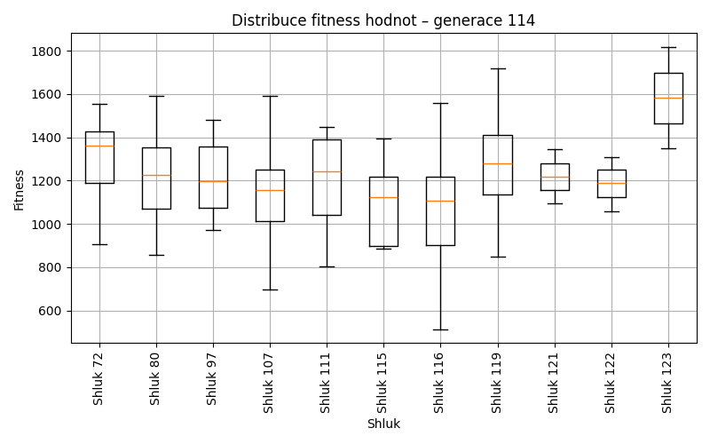
Generace 115
Stabilita mezi generací 114 → 115:
Shluk 107 → 107: 19 jedinců (90.5 %)
Shluk 107 → 116: 2 jedinců (9.5 %)
Shluk 80 → 80: 11 jedinců (91.7 %)
Shluk 80 → 116: 1 jedinců (8.3 %)
Shluk 116 → 116: 25 jedinců (92.6 %)
Shluk 116 → 107: 2 jedinců (7.4 %)
Shluk 72 → 72: 5 jedinců (100.0 %)
Shluk 119 → 119: 13 jedinců (92.9 %)
Shluk 119 → 116: 1 jedinců (7.1 %)
Shluk 121 → 121: 2 jedinců (100.0 %)
Shluk 111 → 111: 4 jedinců (100.0 %)
Shluk 123 → 123: 2 jedinců (100.0 %)
Shluk 115 → 115: 5 jedinců (100.0 %)
Shluk 122 → 116: 1 jedinců (33.3 %)
Shluk 122 → 122: 2 jedinců (66.7 %)
Shluk 97 → 97: 5 jedinců (100.0 %)
Jaccardovo mapování a overlap: Generace 114 → 115
- Shluk 107 → 107 (Jaccard: 0.83, Overlap: 0.90)
- Shluk 80 → 80 (Jaccard: 0.92, Overlap: 1.00)
- Shluk 116 → 116 (Jaccard: 0.78, Overlap: 0.93)
- Shluk 72 → 72 (Jaccard: 1.00, Overlap: 1.00)
- Shluk 119 → 119 (Jaccard: 0.93, Overlap: 1.00)
- Shluk 121 → 121 (Jaccard: 1.00, Overlap: 1.00)
- Shluk 111 → 111 (Jaccard: 1.00, Overlap: 1.00)
- Shluk 123 → 123 (Jaccard: 1.00, Overlap: 1.00)
- Shluk 115 → 115 (Jaccard: 1.00, Overlap: 1.00)
- Shluk 122 → 122 (Jaccard: 0.67, Overlap: 1.00)
- Shluk 97 → 97 (Jaccard: 1.00, Overlap: 1.00)
Posun centroidů mezi generací 114 → 115:
- Shluk 0: 599.6216
- Shluk 1: 930.9257
- Shluk 2: 704.5619
- Shluk 3: 1095.5962
- Shluk 4: 0.0000
- Shluk 5: 1174.7505
- Shluk 6: 1174.7505
- Shluk 7: 1273.5501
- Shluk 8: 657.3152
- Shluk 9: 1177.9965
- Shluk 10: 0.0000
Generace 116
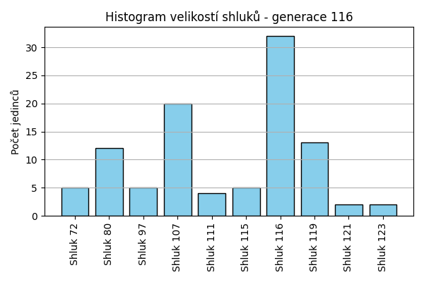
Stabilita mezi generací 115 → 116:
Shluk 107 → 107: 20 jedinců (95.2 %)
Shluk 107 → 116: 1 jedinců (4.8 %)
Shluk 80 → 80: 10 jedinců (90.9 %)
Shluk 80 → 116: 1 jedinců (9.1 %)
Shluk 116 → 116: 30 jedinců (100.0 %)
Shluk 72 → 72: 5 jedinců (100.0 %)
Shluk 119 → 119: 13 jedinců (100.0 %)
Shluk 121 → 121: 2 jedinců (100.0 %)
Shluk 111 → 111: 4 jedinců (100.0 %)
Shluk 123 → 123: 2 jedinců (100.0 %)
Shluk 115 → 115: 5 jedinců (100.0 %)
Shluk 122 → 80: 2 jedinců (100.0 %)
Shluk 97 → 97: 5 jedinců (100.0 %)
Jaccardovo mapování a overlap: Generace 115 → 116
- Shluk 107 → 107 (Jaccard: 0.95, Overlap: 1.00)
- Shluk 80 → 80 (Jaccard: 0.77, Overlap: 0.91)
- Shluk 116 → 116 (Jaccard: 0.94, Overlap: 1.00)
- Shluk 72 → 72 (Jaccard: 1.00, Overlap: 1.00)
- Shluk 119 → 119 (Jaccard: 1.00, Overlap: 1.00)
- Shluk 121 → 121 (Jaccard: 1.00, Overlap: 1.00)
- Shluk 111 → 111 (Jaccard: 1.00, Overlap: 1.00)
- Shluk 123 → 123 (Jaccard: 1.00, Overlap: 1.00)
- Shluk 115 → 115 (Jaccard: 1.00, Overlap: 1.00)
- Shluk 122 → 80 (Jaccard: 0.17, Overlap: 1.00)
- Shluk 97 → 97 (Jaccard: 1.00, Overlap: 1.00)
Posun centroidů mezi generací 115 → 116:
- Shluk 0: 924.7719
- Shluk 1: 943.4022
- Shluk 2: 24.1299
- Shluk 3: 1095.6635
- Shluk 4: 0.0000
- Shluk 5: 0.0000
- Shluk 6: 1112.2098
- Shluk 7: 0.0000
- Shluk 8: 1019.7149
- Shluk 9: 1013.0858
Generace 117
Stabilita mezi generací 116 → 117:
Shluk 107 → 107: 19 jedinců (95.0 %)
Shluk 107 → 116: 1 jedinců (5.0 %)
Shluk 80 → 80: 11 jedinců (91.7 %)
Shluk 80 → 116: 1 jedinců (8.3 %)
Shluk 116 → 116: 30 jedinců (93.8 %)
Shluk 116 → 80: 2 jedinců (6.2 %)
Shluk 72 → 72: 5 jedinců (100.0 %)
Shluk 119 → 119: 12 jedinců (92.3 %)
Shluk 119 → 116: 1 jedinců (7.7 %)
Shluk 121 → 121: 2 jedinců (100.0 %)
Shluk 111 → 111: 4 jedinců (100.0 %)
Shluk 123 → 123: 2 jedinců (100.0 %)
Shluk 115 → 115: 5 jedinců (100.0 %)
Shluk 97 → 97: 4 jedinců (80.0 %)
Shluk 97 → 116: 1 jedinců (20.0 %)
Jaccardovo mapování a overlap: Generace 116 → 117
- Shluk 107 → 107 (Jaccard: 0.95, Overlap: 1.00)
- Shluk 80 → 80 (Jaccard: 0.79, Overlap: 0.92)
- Shluk 116 → 116 (Jaccard: 0.83, Overlap: 0.94)
- Shluk 72 → 72 (Jaccard: 1.00, Overlap: 1.00)
- Shluk 119 → 119 (Jaccard: 0.92, Overlap: 1.00)
- Shluk 121 → 121 (Jaccard: 1.00, Overlap: 1.00)
- Shluk 111 → 111 (Jaccard: 1.00, Overlap: 1.00)
- Shluk 123 → 123 (Jaccard: 1.00, Overlap: 1.00)
- Shluk 115 → 115 (Jaccard: 1.00, Overlap: 1.00)
- Shluk 97 → 97 (Jaccard: 0.80, Overlap: 1.00)
Posun centroidů mezi generací 116 → 117:
- Shluk 0: 43.3310
- Shluk 1: 5.3675
- Shluk 2: 24.0596
- Shluk 3: 9.5738
- Shluk 4: 0.0000
- Shluk 5: 0.0000
- Shluk 6: 0.0000
- Shluk 7: 53.8595
- Shluk 8: 0.0000
- Shluk 9: 0.0000
Generace 118
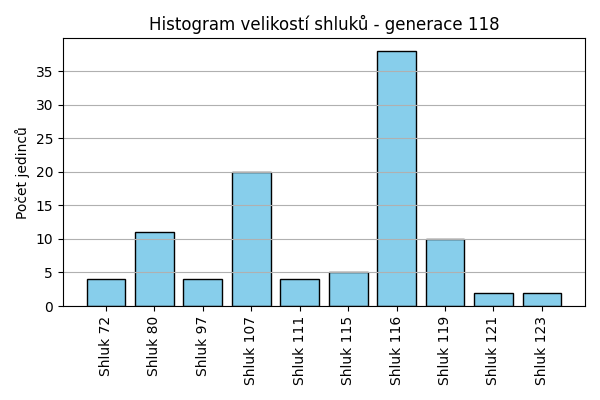
Stabilita mezi generací 117 → 118:
Shluk 107 → 107: 19 jedinců (100.0 %)
Shluk 80 → 80: 11 jedinců (84.6 %)
Shluk 80 → 116: 2 jedinců (15.4 %)
Shluk 116 → 116: 34 jedinců (100.0 %)
Shluk 72 → 111: 1 jedinců (20.0 %)
Shluk 72 → 72: 4 jedinců (80.0 %)
Shluk 119 → 119: 10 jedinců (83.3 %)
Shluk 119 → 107: 1 jedinců (8.3 %)
Shluk 119 → 116: 1 jedinců (8.3 %)
Shluk 121 → 121: 2 jedinců (100.0 %)
Shluk 111 → 111: 3 jedinců (75.0 %)
Shluk 111 → 116: 1 jedinců (25.0 %)
Shluk 123 → 123: 2 jedinců (100.0 %)
Shluk 115 → 115: 5 jedinců (100.0 %)
Shluk 97 → 97: 4 jedinců (100.0 %)
Jaccardovo mapování a overlap: Generace 117 → 118
- Shluk 107 → 107 (Jaccard: 0.95, Overlap: 1.00)
- Shluk 80 → 80 (Jaccard: 0.85, Overlap: 1.00)
- Shluk 116 → 116 (Jaccard: 0.89, Overlap: 1.00)
- Shluk 72 → 72 (Jaccard: 0.80, Overlap: 1.00)
- Shluk 119 → 119 (Jaccard: 0.83, Overlap: 1.00)
- Shluk 121 → 121 (Jaccard: 1.00, Overlap: 1.00)
- Shluk 111 → 111 (Jaccard: 0.60, Overlap: 0.75)
- Shluk 123 → 123 (Jaccard: 1.00, Overlap: 1.00)
- Shluk 115 → 115 (Jaccard: 1.00, Overlap: 1.00)
- Shluk 97 → 97 (Jaccard: 1.00, Overlap: 1.00)
Posun centroidů mezi generací 117 → 118:
- Shluk 0: 43.9420
- Shluk 1: 625.2605
- Shluk 2: 686.3173
- Shluk 3: 750.2855
- Shluk 4: 791.3237
- Shluk 5: 981.6499
- Shluk 6: 0.0000
- Shluk 7: 0.0000
- Shluk 8: 1312.4301
- Shluk 9: 1312.4301
Generace 119
Stabilita mezi generací 118 → 119:
Shluk 107 → 107: 19 jedinců (95.0 %)
Shluk 107 → 116: 1 jedinců (5.0 %)
Shluk 80 → 80: 9 jedinců (81.8 %)
Shluk 80 → 124: 2 jedinců (18.2 %)
Shluk 116 → 116: 38 jedinců (100.0 %)
Shluk 111 → 72: 1 jedinců (25.0 %)
Shluk 111 → 116: 1 jedinců (25.0 %)
Shluk 111 → 111: 2 jedinců (50.0 %)
Shluk 119 → 116: 10 jedinců (100.0 %)
Shluk 121 → 121: 2 jedinců (100.0 %)
Shluk 123 → 123: 2 jedinců (100.0 %)
Shluk 72 → 107: 1 jedinců (25.0 %)
Shluk 72 → 72: 3 jedinců (75.0 %)
Shluk 115 → 115: 5 jedinců (100.0 %)
Shluk 97 → 115: 3 jedinců (75.0 %)
Shluk 97 → 124: 1 jedinců (25.0 %)
Jaccardovo mapování a overlap: Generace 118 → 119
- Shluk 107 → 107 (Jaccard: 0.90, Overlap: 0.95)
- Shluk 80 → 80 (Jaccard: 0.82, Overlap: 1.00)
- Shluk 116 → 116 (Jaccard: 0.76, Overlap: 1.00)
- Shluk 111 → 111 (Jaccard: 0.50, Overlap: 1.00)
- Shluk 119 → 116 (Jaccard: 0.20, Overlap: 1.00)
- Shluk 121 → 121 (Jaccard: 1.00, Overlap: 1.00)
- Shluk 123 → 123 (Jaccard: 1.00, Overlap: 1.00)
- Shluk 72 → 72 (Jaccard: 0.60, Overlap: 0.75)
- Shluk 115 → 115 (Jaccard: 0.62, Overlap: 1.00)
- Shluk 97 → 115 (Jaccard: 0.33, Overlap: 0.75)
Posun centroidů mezi generací 118 → 119:
- Shluk 0: 1047.5442
- Shluk 1: 649.8630
- Shluk 2: 692.5626
- Shluk 3: 1000.5404
- Shluk 4: 813.1201
- Shluk 5: 1223.4044
- Shluk 6: 1162.8417
- Shluk 7: 1194.5846
- Shluk 8: 923.7449
Generace 120
Stabilita mezi generací 119 → 120:
Shluk 107 → 107: 19 jedinců (95.0 %)
Shluk 107 → 116: 1 jedinců (5.0 %)
Shluk 80 → 80: 9 jedinců (100.0 %)
Shluk 116 → 116: 49 jedinců (98.0 %)
Shluk 116 → 107: 1 jedinců (2.0 %)
Shluk 72 → 111: 1 jedinců (25.0 %)
Shluk 72 → 72: 3 jedinců (75.0 %)
Shluk 121 → 121: 2 jedinců (100.0 %)
Shluk 123 → 116: 1 jedinců (50.0 %)
Shluk 123 → 124: 1 jedinců (50.0 %)
Shluk 124 → 124: 3 jedinců (100.0 %)
Shluk 115 → 115: 8 jedinců (100.0 %)
Shluk 111 → 111: 2 jedinců (100.0 %)
Jaccardovo mapování a overlap: Generace 119 → 120
- Shluk 107 → 107 (Jaccard: 0.90, Overlap: 0.95)
- Shluk 80 → 80 (Jaccard: 1.00, Overlap: 1.00)
- Shluk 116 → 116 (Jaccard: 0.94, Overlap: 0.98)
- Shluk 72 → 72 (Jaccard: 0.75, Overlap: 1.00)
- Shluk 121 → 121 (Jaccard: 1.00, Overlap: 1.00)
- Shluk 123 → 124 (Jaccard: 0.20, Overlap: 0.50)
- Shluk 124 → 124 (Jaccard: 0.75, Overlap: 1.00)
- Shluk 115 → 115 (Jaccard: 1.00, Overlap: 1.00)
- Shluk 111 → 111 (Jaccard: 0.67, Overlap: 1.00)
Posun centroidů mezi generací 119 → 120:
- Shluk 0: 0.0000
- Shluk 1: 670.1284
- Shluk 2: 914.1056
- Shluk 3: 1002.6367
- Shluk 4: 938.0917
- Shluk 5: 1279.7919
- Shluk 6: 243.5233
- Shluk 7: 0.0000
Generace 121
Stabilita mezi generací 120 → 121:
Shluk 107 → 116: 3 jedinců (15.0 %)
Shluk 107 → 107: 15 jedinců (75.0 %)
Shluk 107 → 124: 2 jedinců (10.0 %)
Shluk 80 → 116: 1 jedinců (11.1 %)
Shluk 80 → 80: 7 jedinců (77.8 %)
Shluk 80 → 107: 1 jedinců (11.1 %)
Shluk 116 → 116: 48 jedinců (94.1 %)
Shluk 116 → 125: 1 jedinců (2.0 %)
Shluk 116 → 124: 1 jedinců (2.0 %)
Shluk 116 → 107: 1 jedinců (2.0 %)
Shluk 111 → 111: 3 jedinců (100.0 %)
Shluk 121 → 121: 2 jedinců (100.0 %)
Shluk 124 → 124: 3 jedinců (75.0 %)
Shluk 124 → 126: 1 jedinců (25.0 %)
Shluk 115 → 115: 5 jedinců (62.5 %)
Shluk 115 → 125: 3 jedinců (37.5 %)
Shluk 72 → 72: 3 jedinců (100.0 %)
Jaccardovo mapování a overlap: Generace 120 → 121
- Shluk 107 → 107 (Jaccard: 0.68, Overlap: 0.88)
- Shluk 80 → 80 (Jaccard: 0.78, Overlap: 1.00)
- Shluk 116 → 116 (Jaccard: 0.87, Overlap: 0.94)
- Shluk 111 → 111 (Jaccard: 1.00, Overlap: 1.00)
- Shluk 121 → 121 (Jaccard: 1.00, Overlap: 1.00)
- Shluk 124 → 124 (Jaccard: 0.43, Overlap: 0.75)
- Shluk 115 → 115 (Jaccard: 0.62, Overlap: 1.00)
- Shluk 72 → 72 (Jaccard: 1.00, Overlap: 1.00)
Posun centroidů mezi generací 120 → 121:
- Shluk 0: 770.7435
- Shluk 1: 718.9144
- Shluk 2: 1058.6859
- Shluk 3: 49.5934
- Shluk 4: 1183.0085
- Shluk 5: 1015.0747
- Shluk 6: 868.5880
- Shluk 7: 0.0000
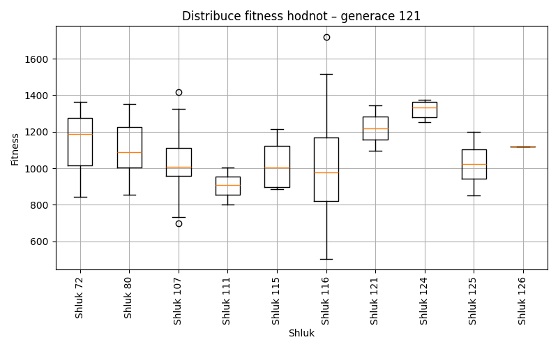
Generace 122

Stabilita mezi generací 121 → 122:
Shluk 116 → 116: 51 jedinců (98.1 %)
Shluk 116 → 107: 1 jedinců (1.9 %)
Shluk 80 → 80: 7 jedinců (100.0 %)
Shluk 111 → 72: 1 jedinců (33.3 %)
Shluk 111 → 111: 2 jedinců (66.7 %)
Shluk 121 → 121: 2 jedinců (100.0 %)
Shluk 107 → 107: 17 jedinců (100.0 %)
Shluk 124 → 124: 3 jedinců (50.0 %)
Shluk 124 → 111: 1 jedinců (16.7 %)
Shluk 124 → 107: 2 jedinců (33.3 %)
Shluk 115 → 115: 5 jedinců (100.0 %)
Shluk 125 → 125: 4 jedinců (100.0 %)
Shluk 72 → 72: 3 jedinců (100.0 %)
Shluk 126 → 124: 1 jedinců (100.0 %)
Jaccardovo mapování a overlap: Generace 121 → 122
- Shluk 116 → 116 (Jaccard: 0.98, Overlap: 1.00)
- Shluk 80 → 80 (Jaccard: 1.00, Overlap: 1.00)
- Shluk 111 → 111 (Jaccard: 0.50, Overlap: 0.67)
- Shluk 121 → 121 (Jaccard: 1.00, Overlap: 1.00)
- Shluk 107 → 107 (Jaccard: 0.85, Overlap: 1.00)
- Shluk 124 → 124 (Jaccard: 0.43, Overlap: 0.75)
- Shluk 115 → 115 (Jaccard: 1.00, Overlap: 1.00)
- Shluk 125 → 125 (Jaccard: 1.00, Overlap: 1.00)
- Shluk 72 → 72 (Jaccard: 0.75, Overlap: 1.00)
- Shluk 126 → 124 (Jaccard: 0.25, Overlap: 1.00)
Posun centroidů mezi generací 121 → 122:
- Shluk 0: 920.0942
- Shluk 1: 720.2693
- Shluk 2: 932.5412
- Shluk 3: 1033.4126
- Shluk 4: 1135.2110
- Shluk 5: 903.4573
- Shluk 6: 1105.6667
- Shluk 7: 0.0000
- Shluk 8: 0.0000

Generace 123
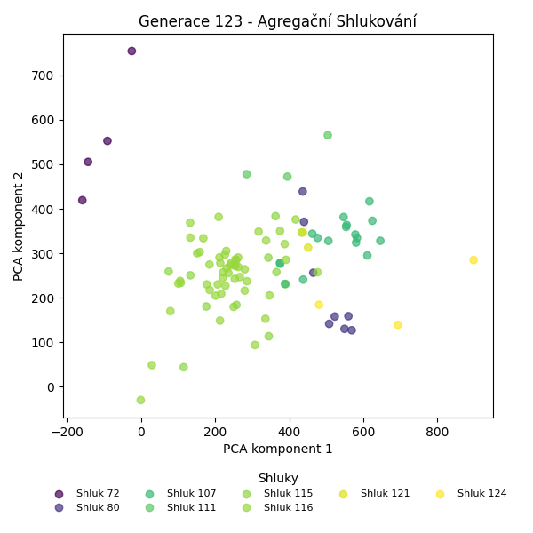
Stabilita mezi generací 122 → 123:
Shluk 116 → 116: 51 jedinců (100.0 %)
Shluk 80 → 80: 7 jedinců (100.0 %)
Shluk 72 → 72: 4 jedinců (100.0 %)
Shluk 121 → 121: 2 jedinců (100.0 %)
Shluk 107 → 107: 17 jedinců (85.0 %)
Shluk 107 → 116: 3 jedinců (15.0 %)
Shluk 124 → 80: 1 jedinců (25.0 %)
Shluk 124 → 124: 3 jedinců (75.0 %)
Shluk 115 → 115: 5 jedinců (100.0 %)
Shluk 125 → 115: 4 jedinců (100.0 %)
Shluk 111 → 111: 3 jedinců (100.0 %)
Jaccardovo mapování a overlap: Generace 122 → 123
- Shluk 116 → 116 (Jaccard: 0.94, Overlap: 1.00)
- Shluk 80 → 80 (Jaccard: 0.88, Overlap: 1.00)
- Shluk 72 → 72 (Jaccard: 1.00, Overlap: 1.00)
- Shluk 121 → 121 (Jaccard: 1.00, Overlap: 1.00)
- Shluk 107 → 107 (Jaccard: 0.85, Overlap: 1.00)
- Shluk 124 → 124 (Jaccard: 0.75, Overlap: 1.00)
- Shluk 115 → 115 (Jaccard: 0.56, Overlap: 1.00)
- Shluk 125 → 115 (Jaccard: 0.44, Overlap: 1.00)
- Shluk 111 → 111 (Jaccard: 1.00, Overlap: 1.00)
Posun centroidů mezi generací 122 → 123:
- Shluk 0: 857.9554
- Shluk 1: 14.4466
- Shluk 2: 848.9455
- Shluk 3: 1033.7897
- Shluk 4: 990.6600
- Shluk 5: 0.0000
- Shluk 6: 1135.2110
- Shluk 7: 0.0000
Generace 124
Stabilita mezi generací 123 → 124:
Shluk 116 → 116: 53 jedinců (98.1 %)
Shluk 116 → 107: 1 jedinců (1.9 %)
Shluk 80 → 80: 7 jedinců (87.5 %)
Shluk 80 → 116: 1 jedinců (12.5 %)
Shluk 72 → 72: 4 jedinců (100.0 %)
Shluk 121 → 121: 2 jedinců (100.0 %)
Shluk 107 → 107: 16 jedinců (94.1 %)
Shluk 107 → 127: 1 jedinců (5.9 %)
Shluk 115 → 127: 3 jedinců (33.3 %)
Shluk 115 → 115: 5 jedinců (55.6 %)
Shluk 115 → 116: 1 jedinců (11.1 %)
Shluk 124 → 127: 1 jedinců (33.3 %)
Shluk 124 → 124: 2 jedinců (66.7 %)
Shluk 111 → 111: 3 jedinců (100.0 %)
Jaccardovo mapování a overlap: Generace 123 → 124
- Shluk 116 → 116 (Jaccard: 0.95, Overlap: 0.98)
- Shluk 80 → 80 (Jaccard: 0.88, Overlap: 1.00)
- Shluk 72 → 72 (Jaccard: 1.00, Overlap: 1.00)
- Shluk 121 → 121 (Jaccard: 1.00, Overlap: 1.00)
- Shluk 107 → 107 (Jaccard: 0.89, Overlap: 0.94)
- Shluk 115 → 115 (Jaccard: 0.56, Overlap: 1.00)
- Shluk 124 → 124 (Jaccard: 0.67, Overlap: 1.00)
- Shluk 111 → 111 (Jaccard: 1.00, Overlap: 1.00)
Posun centroidů mezi generací 123 → 124:
- Shluk 0: 713.7461
- Shluk 1: 710.1388
- Shluk 2: 694.9568
- Shluk 3: 698.2746
- Shluk 4: 772.9504
- Shluk 5: 0.0000
- Shluk 6: 1041.0945
- Shluk 7: 1189.7422
Generace 125
Stabilita mezi generací 124 → 125:
Shluk 116 → 116: 55 jedinců (100.0 %)
Shluk 80 → 80: 7 jedinců (100.0 %)
Shluk 72 → 72: 3 jedinců (75.0 %)
Shluk 72 → 107: 1 jedinců (25.0 %)
Shluk 121 → 121: 2 jedinců (100.0 %)
Shluk 107 → 107: 15 jedinců (88.2 %)
Shluk 107 → 116: 2 jedinců (11.8 %)
Shluk 127 → 127: 4 jedinců (80.0 %)
Shluk 127 → 115: 1 jedinců (20.0 %)
Shluk 115 → 115: 5 jedinců (100.0 %)
Shluk 111 → 111: 3 jedinců (100.0 %)
Shluk 124 → 124: 2 jedinců (100.0 %)
Jaccardovo mapování a overlap: Generace 124 → 125
- Shluk 116 → 116 (Jaccard: 0.96, Overlap: 1.00)
- Shluk 80 → 80 (Jaccard: 1.00, Overlap: 1.00)
- Shluk 72 → 72 (Jaccard: 0.75, Overlap: 1.00)
- Shluk 121 → 121 (Jaccard: 1.00, Overlap: 1.00)
- Shluk 107 → 107 (Jaccard: 0.83, Overlap: 0.94)
- Shluk 127 → 127 (Jaccard: 0.80, Overlap: 1.00)
- Shluk 115 → 115 (Jaccard: 0.83, Overlap: 1.00)
- Shluk 111 → 111 (Jaccard: 1.00, Overlap: 1.00)
- Shluk 124 → 124 (Jaccard: 1.00, Overlap: 1.00)
Posun centroidů mezi generací 124 → 125:
- Shluk 0: 13.3838
- Shluk 1: 978.8512
- Shluk 2: 1024.3086
- Shluk 3: 716.3962
- Shluk 4: 1271.9378
- Shluk 5: 1072.2927
- Shluk 6: 680.8807
- Shluk 7: 1039.8737
- Shluk 8: 0.0000
Generace 126
Stabilita mezi generací 125 → 126:
Shluk 116 → 116: 45 jedinců (78.9 %)
Shluk 116 → 72: 11 jedinců (19.3 %)
Shluk 116 → 115: 1 jedinců (1.8 %)
Shluk 80 → 80: 7 jedinců (100.0 %)
Shluk 72 → 116: 1 jedinců (33.3 %)
Shluk 72 → 72: 2 jedinců (66.7 %)
Shluk 121 → 121: 2 jedinců (100.0 %)
Shluk 107 → 107: 16 jedinců (100.0 %)
Shluk 127 → 115: 1 jedinců (25.0 %)
Shluk 127 → 127: 3 jedinců (75.0 %)
Shluk 115 → 115: 6 jedinců (100.0 %)
Shluk 111 → 111: 3 jedinců (100.0 %)
Shluk 124 → 127: 1 jedinců (50.0 %)
Shluk 124 → 80: 1 jedinců (50.0 %)
Jaccardovo mapování a overlap: Generace 125 → 126
- Shluk 116 → 116 (Jaccard: 0.78, Overlap: 0.98)
- Shluk 80 → 80 (Jaccard: 0.88, Overlap: 1.00)
- Shluk 72 → 72 (Jaccard: 0.14, Overlap: 0.67)
- Shluk 121 → 121 (Jaccard: 1.00, Overlap: 1.00)
- Shluk 107 → 107 (Jaccard: 1.00, Overlap: 1.00)
- Shluk 127 → 127 (Jaccard: 0.60, Overlap: 0.75)
- Shluk 115 → 115 (Jaccard: 0.75, Overlap: 1.00)
- Shluk 111 → 111 (Jaccard: 1.00, Overlap: 1.00)
- Shluk 124 → 127 (Jaccard: 0.20, Overlap: 0.50)
Posun centroidů mezi generací 125 → 126:
- Shluk 0: 256.4121
- Shluk 1: 722.0901
- Shluk 2: 986.8482
- Shluk 3: 664.2262
- Shluk 4: 963.3449
- Shluk 5: 88.2684
- Shluk 6: 1262.3150
- Shluk 7: 748.7016
Generace 127
Stabilita mezi generací 126 → 127:
Shluk 116 → 116: 46 jedinců (100.0 %)
Shluk 80 → 80: 6 jedinců (75.0 %)
Shluk 80 → 116: 2 jedinců (25.0 %)
Shluk 72 → 80: 1 jedinců (7.7 %)
Shluk 72 → 72: 11 jedinců (84.6 %)
Shluk 72 → 116: 1 jedinců (7.7 %)
Shluk 121 → 121: 2 jedinců (100.0 %)
Shluk 107 → 107: 16 jedinců (100.0 %)
Shluk 115 → 127: 1 jedinců (12.5 %)
Shluk 115 → 115: 6 jedinců (75.0 %)
Shluk 115 → 107: 1 jedinců (12.5 %)
Shluk 127 → 127: 4 jedinců (100.0 %)
Shluk 111 → 111: 3 jedinců (100.0 %)
Jaccardovo mapování a overlap: Generace 126 → 127
- Shluk 116 → 116 (Jaccard: 0.94, Overlap: 1.00)
- Shluk 80 → 80 (Jaccard: 0.67, Overlap: 0.86)
- Shluk 72 → 72 (Jaccard: 0.85, Overlap: 1.00)
- Shluk 121 → 121 (Jaccard: 1.00, Overlap: 1.00)
- Shluk 107 → 107 (Jaccard: 0.94, Overlap: 1.00)
- Shluk 115 → 115 (Jaccard: 0.75, Overlap: 1.00)
- Shluk 127 → 127 (Jaccard: 0.80, Overlap: 1.00)
- Shluk 111 → 111 (Jaccard: 1.00, Overlap: 1.00)
Posun centroidů mezi generací 126 → 127:
- Shluk 0: 30.9493
- Shluk 1: 885.3571
- Shluk 2: 744.0453
- Shluk 3: 654.2777
- Shluk 4: 0.0000
- Shluk 5: 88.2684
- Shluk 6: 778.5503
- Shluk 7: 1066.0046
Generace 128
Stabilita mezi generací 127 → 128:
Shluk 116 → 116: 48 jedinců (98.0 %)
Shluk 116 → 107: 1 jedinců (2.0 %)
Shluk 80 → 80: 6 jedinců (85.7 %)
Shluk 80 → 111: 1 jedinců (14.3 %)
Shluk 72 → 116: 10 jedinců (90.9 %)
Shluk 72 → 80: 1 jedinců (9.1 %)
Shluk 121 → 121: 2 jedinců (100.0 %)
Shluk 107 → 107: 17 jedinců (100.0 %)
Shluk 127 → 127: 5 jedinců (100.0 %)
Shluk 115 → 115: 5 jedinců (83.3 %)
Shluk 115 → 116: 1 jedinců (16.7 %)
Shluk 111 → 111: 3 jedinců (100.0 %)
Jaccardovo mapování a overlap: Generace 127 → 128
- Shluk 116 → 116 (Jaccard: 0.80, Overlap: 0.98)
- Shluk 80 → 80 (Jaccard: 0.75, Overlap: 0.86)
- Shluk 72 → 116 (Jaccard: 0.17, Overlap: 0.91)
- Shluk 121 → 121 (Jaccard: 1.00, Overlap: 1.00)
- Shluk 107 → 107 (Jaccard: 0.94, Overlap: 1.00)
- Shluk 127 → 127 (Jaccard: 1.00, Overlap: 1.00)
- Shluk 115 → 115 (Jaccard: 0.83, Overlap: 1.00)
- Shluk 111 → 111 (Jaccard: 0.75, Overlap: 1.00)
Posun centroidů mezi generací 127 → 128:
- Shluk 0: 292.1974
- Shluk 1: 1103.9768
- Shluk 2: 893.8856
- Shluk 3: 6.6248
- Shluk 4: 274.1935
- Shluk 5: 47.2165
- Shluk 6: 778.5503
Generace 129

Stabilita mezi generací 128 → 129:
Shluk 116 → 116: 45 jedinců (76.3 %)
Shluk 116 → 128: 13 jedinců (22.0 %)
Shluk 116 → 115: 1 jedinců (1.7 %)
Shluk 80 → 80: 7 jedinců (100.0 %)
Shluk 107 → 116: 1 jedinců (5.6 %)
Shluk 107 → 107: 15 jedinců (83.3 %)
Shluk 107 → 128: 2 jedinců (11.1 %)
Shluk 121 → 121: 2 jedinců (100.0 %)
Shluk 127 → 127: 5 jedinců (100.0 %)
Shluk 115 → 115: 4 jedinců (80.0 %)
Shluk 115 → 116: 1 jedinců (20.0 %)
Shluk 111 → 111: 4 jedinců (100.0 %)
Jaccardovo mapování a overlap: Generace 128 → 129
- Shluk 116 → 116 (Jaccard: 0.74, Overlap: 0.96)
- Shluk 80 → 80 (Jaccard: 1.00, Overlap: 1.00)
- Shluk 107 → 107 (Jaccard: 0.83, Overlap: 1.00)
- Shluk 121 → 121 (Jaccard: 1.00, Overlap: 1.00)
- Shluk 127 → 127 (Jaccard: 1.00, Overlap: 1.00)
- Shluk 115 → 115 (Jaccard: 0.67, Overlap: 0.80)
- Shluk 111 → 111 (Jaccard: 1.00, Overlap: 1.00)
Posun centroidů mezi generací 128 → 129:
- Shluk 0: 53.9354
- Shluk 1: 75.0893
- Shluk 2: 0.0000
- Shluk 3: 577.9020
- Shluk 4: 0.0000
- Shluk 5: 83.1975
- Shluk 6: 0.0000
Generace 130
Stabilita mezi generací 129 → 130:
Shluk 116 → 116: 45 jedinců (95.7 %)
Shluk 116 → 128: 1 jedinců (2.1 %)
Shluk 116 → 115: 1 jedinců (2.1 %)
Shluk 128 → 128: 15 jedinců (100.0 %)
Shluk 80 → 80: 7 jedinců (100.0 %)
Shluk 121 → 121: 2 jedinců (100.0 %)
Shluk 107 → 107: 13 jedinců (86.7 %)
Shluk 107 → 116: 2 jedinců (13.3 %)
Shluk 127 → 127: 5 jedinců (100.0 %)
Shluk 115 → 115: 4 jedinců (80.0 %)
Shluk 115 → 80: 1 jedinců (20.0 %)
Shluk 111 → 111: 4 jedinců (100.0 %)
Jaccardovo mapování a overlap: Generace 129 → 130
- Shluk 116 → 116 (Jaccard: 0.92, Overlap: 0.96)
- Shluk 128 → 128 (Jaccard: 0.94, Overlap: 1.00)
- Shluk 80 → 80 (Jaccard: 0.88, Overlap: 1.00)
- Shluk 121 → 121 (Jaccard: 1.00, Overlap: 1.00)
- Shluk 107 → 107 (Jaccard: 0.87, Overlap: 1.00)
- Shluk 127 → 127 (Jaccard: 1.00, Overlap: 1.00)
- Shluk 115 → 115 (Jaccard: 0.67, Overlap: 0.80)
- Shluk 111 → 111 (Jaccard: 1.00, Overlap: 1.00)
Posun centroidů mezi generací 129 → 130:
- Shluk 0: 9.9590
- Shluk 1: 34.3540
- Shluk 2: 0.0000
- Shluk 3: 23.0342
- Shluk 4: 0.0000
- Shluk 5: 47.9922
- Shluk 6: 0.0000
- Shluk 7: 26.2106
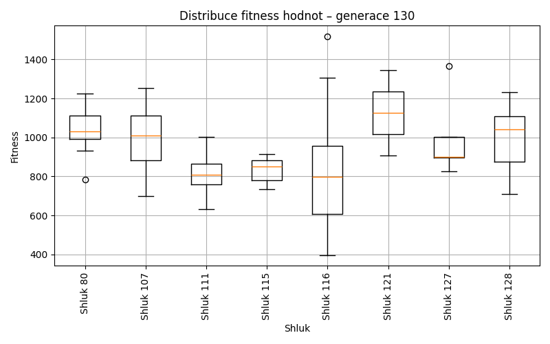
Generace 131
Stabilita mezi generací 130 → 131:
Shluk 116 → 116: 47 jedinců (100.0 %)
Shluk 128 → 116: 15 jedinců (93.8 %)
Shluk 128 → 107: 1 jedinců (6.2 %)
Shluk 80 → 80: 7 jedinců (87.5 %)
Shluk 80 → 116: 1 jedinců (12.5 %)
Shluk 121 → 121: 2 jedinců (100.0 %)
Shluk 107 → 107: 11 jedinců (84.6 %)
Shluk 107 → 111: 1 jedinců (7.7 %)
Shluk 107 → 116: 1 jedinců (7.7 %)
Shluk 127 → 127: 5 jedinců (100.0 %)
Shluk 115 → 115: 5 jedinců (100.0 %)
Shluk 111 → 111: 4 jedinců (100.0 %)
Jaccardovo mapování a overlap: Generace 130 → 131
- Shluk 116 → 116 (Jaccard: 0.73, Overlap: 1.00)
- Shluk 128 → 116 (Jaccard: 0.23, Overlap: 0.94)
- Shluk 80 → 80 (Jaccard: 0.88, Overlap: 1.00)
- Shluk 121 → 121 (Jaccard: 1.00, Overlap: 1.00)
- Shluk 107 → 107 (Jaccard: 0.79, Overlap: 0.92)
- Shluk 127 → 127 (Jaccard: 1.00, Overlap: 1.00)
- Shluk 115 → 115 (Jaccard: 1.00, Overlap: 1.00)
- Shluk 111 → 111 (Jaccard: 0.80, Overlap: 1.00)
Posun centroidů mezi generací 130 → 131:
- Shluk 0: 60.2321
- Shluk 1: 32.5702
- Shluk 2: 0.0000
- Shluk 3: 586.1291
- Shluk 4: 30.8138
- Shluk 5: 0.0000
- Shluk 6: 0.0000
Generace 132
Stabilita mezi generací 131 → 132:
Shluk 116 → 116: 63 jedinců (98.4 %)
Shluk 116 → 121: 1 jedinců (1.6 %)
Shluk 80 → 116: 1 jedinců (14.3 %)
Shluk 80 → 80: 6 jedinců (85.7 %)
Shluk 121 → 121: 1 jedinců (50.0 %)
Shluk 121 → 116: 1 jedinců (50.0 %)
Shluk 107 → 116: 2 jedinců (16.7 %)
Shluk 107 → 107: 10 jedinců (83.3 %)
Shluk 127 → 127: 4 jedinců (80.0 %)
Shluk 127 → 116: 1 jedinců (20.0 %)
Shluk 115 → 115: 5 jedinců (100.0 %)
Shluk 111 → 111: 5 jedinců (100.0 %)
Jaccardovo mapování a overlap: Generace 131 → 132
- Shluk 116 → 116 (Jaccard: 0.91, Overlap: 0.98)
- Shluk 80 → 80 (Jaccard: 0.86, Overlap: 1.00)
- Shluk 121 → 121 (Jaccard: 0.33, Overlap: 0.50)
- Shluk 107 → 107 (Jaccard: 0.83, Overlap: 1.00)
- Shluk 127 → 127 (Jaccard: 0.80, Overlap: 1.00)
- Shluk 115 → 115 (Jaccard: 1.00, Overlap: 1.00)
- Shluk 111 → 111 (Jaccard: 1.00, Overlap: 1.00)
Posun centroidů mezi generací 131 → 132:
- Shluk 0: 8.6438
- Shluk 1: 43.5103
- Shluk 2: 61.5340
- Shluk 3: 24.9461
- Shluk 4: 0.0000
- Shluk 5: 1313.4351
- Shluk 6: 1308.7046
Generace 133
Stabilita mezi generací 132 → 133:
Shluk 116 → 116: 67 jedinců (98.5 %)
Shluk 116 → 80: 1 jedinců (1.5 %)
Shluk 80 → 80: 5 jedinců (83.3 %)
Shluk 80 → 116: 1 jedinců (16.7 %)
Shluk 121 → 121: 2 jedinců (100.0 %)
Shluk 107 → 107: 10 jedinců (100.0 %)
Shluk 127 → 127: 4 jedinců (100.0 %)
Shluk 115 → 115: 5 jedinců (100.0 %)
Shluk 111 → 111: 5 jedinců (100.0 %)
Jaccardovo mapování a overlap: Generace 132 → 133
- Shluk 116 → 116 (Jaccard: 0.97, Overlap: 0.99)
- Shluk 80 → 80 (Jaccard: 0.71, Overlap: 0.83)
- Shluk 121 → 121 (Jaccard: 1.00, Overlap: 1.00)
- Shluk 107 → 107 (Jaccard: 1.00, Overlap: 1.00)
- Shluk 127 → 127 (Jaccard: 1.00, Overlap: 1.00)
- Shluk 115 → 115 (Jaccard: 1.00, Overlap: 1.00)
- Shluk 111 → 111 (Jaccard: 1.00, Overlap: 1.00)
Posun centroidů mezi generací 132 → 133:
- Shluk 0: 14.1858
- Shluk 1: 1039.6692
- Shluk 2: 0.0000
- Shluk 3: 1014.2535
- Shluk 4: 0.0000
- Shluk 5: 0.0000
- Shluk 6: 0.0000
Generace 134
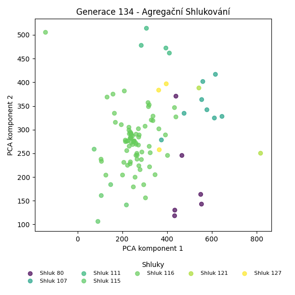
Stabilita mezi generací 133 → 134:
Shluk 116 → 116: 68 jedinců (100.0 %)
Shluk 80 → 80: 6 jedinců (100.0 %)
Shluk 121 → 121: 1 jedinců (50.0 %)
Shluk 121 → 116: 1 jedinců (50.0 %)
Shluk 107 → 107: 8 jedinců (80.0 %)
Shluk 107 → 116: 2 jedinců (20.0 %)
Shluk 127 → 127: 3 jedinců (75.0 %)
Shluk 127 → 121: 1 jedinců (25.0 %)
Shluk 115 → 115: 5 jedinců (100.0 %)
Shluk 111 → 111: 4 jedinců (80.0 %)
Shluk 111 → 116: 1 jedinců (20.0 %)
Jaccardovo mapování a overlap: Generace 133 → 134
- Shluk 116 → 116 (Jaccard: 0.94, Overlap: 1.00)
- Shluk 80 → 80 (Jaccard: 1.00, Overlap: 1.00)
- Shluk 121 → 121 (Jaccard: 0.33, Overlap: 0.50)
- Shluk 107 → 107 (Jaccard: 0.80, Overlap: 1.00)
- Shluk 127 → 127 (Jaccard: 0.75, Overlap: 1.00)
- Shluk 115 → 115 (Jaccard: 1.00, Overlap: 1.00)
- Shluk 111 → 111 (Jaccard: 0.80, Overlap: 1.00)
Posun centroidů mezi generací 133 → 134:
- Shluk 0: 8.1111
- Shluk 1: 787.6711
- Shluk 2: 1091.3035
- Shluk 3: 1014.1482
- Shluk 4: 46.5617
- Shluk 5: 1357.4435
- Shluk 6: 654.4426
Generace 135
Stabilita mezi generací 134 → 135:
Shluk 116 → 116: 59 jedinců (81.9 %)
Shluk 116 → 129: 11 jedinců (15.3 %)
Shluk 116 → 115: 1 jedinců (1.4 %)
Shluk 116 → 111: 1 jedinců (1.4 %)
Shluk 80 → 80: 5 jedinců (83.3 %)
Shluk 80 → 111: 1 jedinců (16.7 %)
Shluk 121 → 80: 2 jedinců (100.0 %)
Shluk 107 → 107: 8 jedinců (100.0 %)
Shluk 127 → 115: 2 jedinců (66.7 %)
Shluk 127 → 107: 1 jedinců (33.3 %)
Shluk 115 → 115: 5 jedinců (100.0 %)
Shluk 111 → 111: 4 jedinců (100.0 %)
Jaccardovo mapování a overlap: Generace 134 → 135
- Shluk 116 → 116 (Jaccard: 0.82, Overlap: 1.00)
- Shluk 80 → 80 (Jaccard: 0.62, Overlap: 0.83)
- Shluk 121 → 80 (Jaccard: 0.29, Overlap: 1.00)
- Shluk 107 → 107 (Jaccard: 0.89, Overlap: 1.00)
- Shluk 127 → 115 (Jaccard: 0.22, Overlap: 0.67)
- Shluk 115 → 115 (Jaccard: 0.62, Overlap: 1.00)
- Shluk 111 → 111 (Jaccard: 0.67, Overlap: 1.00)
Posun centroidů mezi generací 134 → 135:
- Shluk 0: 733.0714
- Shluk 1: 972.9386
- Shluk 2: 1033.9919
- Shluk 3: 43.1824
- Shluk 4: 58.7860
- Shluk 5: 783.8889
Generace 136
Stabilita mezi generací 135 → 136:
Shluk 116 → 116: 58 jedinců (98.3 %)
Shluk 116 → 111: 1 jedinců (1.7 %)
Shluk 129 → 116: 8 jedinců (72.7 %)
Shluk 129 → 107: 3 jedinců (27.3 %)
Shluk 80 → 80: 6 jedinců (85.7 %)
Shluk 80 → 111: 1 jedinců (14.3 %)
Shluk 107 → 107: 9 jedinců (100.0 %)
Shluk 115 → 115: 7 jedinců (87.5 %)
Shluk 115 → 116: 1 jedinců (12.5 %)
Shluk 111 → 111: 4 jedinců (66.7 %)
Shluk 111 → 116: 2 jedinců (33.3 %)
Jaccardovo mapování a overlap: Generace 135 → 136
- Shluk 116 → 116 (Jaccard: 0.83, Overlap: 0.98)
- Shluk 129 → 107 (Jaccard: 0.15, Overlap: 0.27)
- Shluk 80 → 80 (Jaccard: 0.86, Overlap: 1.00)
- Shluk 107 → 107 (Jaccard: 0.75, Overlap: 1.00)
- Shluk 115 → 115 (Jaccard: 0.88, Overlap: 1.00)
- Shluk 111 → 111 (Jaccard: 0.50, Overlap: 0.67)
Posun centroidů mezi generací 135 → 136:
- Shluk 0: 50.5046
- Shluk 1: 27.9550
- Shluk 2: 30.3797
- Shluk 3: 70.1356
- Shluk 4: 41.6343
Generace 137
Stabilita mezi generací 136 → 137:
Shluk 116 → 116: 69 jedinců (100.0 %)
Shluk 80 → 80: 6 jedinců (100.0 %)
Shluk 107 → 116: 3 jedinců (25.0 %)
Shluk 107 → 107: 9 jedinců (75.0 %)
Shluk 111 → 111: 5 jedinců (83.3 %)
Shluk 111 → 116: 1 jedinců (16.7 %)
Shluk 115 → 115: 6 jedinců (85.7 %)
Shluk 115 → 107: 1 jedinců (14.3 %)
Jaccardovo mapování a overlap: Generace 136 → 137
- Shluk 116 → 116 (Jaccard: 0.95, Overlap: 1.00)
- Shluk 80 → 80 (Jaccard: 1.00, Overlap: 1.00)
- Shluk 107 → 107 (Jaccard: 0.69, Overlap: 0.90)
- Shluk 111 → 111 (Jaccard: 0.83, Overlap: 1.00)
- Shluk 115 → 115 (Jaccard: 0.86, Overlap: 1.00)
Posun centroidů mezi generací 136 → 137:
- Shluk 0: 7.9613
- Shluk 1: 742.1614
- Shluk 2: 743.8911
- Shluk 3: 51.6542
- Shluk 4: 22.4019
Generace 138
Stabilita mezi generací 137 → 138:
Shluk 116 → 116: 72 jedinců (98.6 %)
Shluk 116 → 111: 1 jedinců (1.4 %)
Shluk 80 → 80: 5 jedinců (83.3 %)
Shluk 80 → 116: 1 jedinců (16.7 %)
Shluk 111 → 111: 5 jedinců (100.0 %)
Shluk 107 → 107: 8 jedinců (80.0 %)
Shluk 107 → 116: 2 jedinců (20.0 %)
Shluk 115 → 115: 5 jedinců (83.3 %)
Shluk 115 → 116: 1 jedinců (16.7 %)
Jaccardovo mapování a overlap: Generace 137 → 138
- Shluk 116 → 116 (Jaccard: 0.94, Overlap: 0.99)
- Shluk 80 → 80 (Jaccard: 0.83, Overlap: 1.00)
- Shluk 111 → 111 (Jaccard: 0.83, Overlap: 1.00)
- Shluk 107 → 107 (Jaccard: 0.80, Overlap: 1.00)
- Shluk 115 → 115 (Jaccard: 0.83, Overlap: 1.00)
Posun centroidů mezi generací 137 → 138:
- Shluk 0: 106.4294
- Shluk 1: 734.5702
- Shluk 2: 714.9217
- Shluk 3: 860.3485
- Shluk 4: 966.2054
Generace 139
Stabilita mezi generací 138 → 139:
Shluk 116 → 116: 59 jedinců (77.6 %)
Shluk 116 → 130: 14 jedinců (18.4 %)
Shluk 116 → 107: 2 jedinců (2.6 %)
Shluk 116 → 131: 1 jedinců (1.3 %)
Shluk 80 → 80: 4 jedinců (80.0 %)
Shluk 80 → 107: 1 jedinců (20.0 %)
Shluk 111 → 116: 1 jedinců (16.7 %)
Shluk 111 → 111: 5 jedinců (83.3 %)
Shluk 107 → 107: 7 jedinců (87.5 %)
Shluk 107 → 80: 1 jedinců (12.5 %)
Shluk 115 → 115: 4 jedinců (80.0 %)
Shluk 115 → 116: 1 jedinců (20.0 %)
Jaccardovo mapování a overlap: Generace 138 → 139
- Shluk 116 → 116 (Jaccard: 0.76, Overlap: 0.97)
- Shluk 80 → 80 (Jaccard: 0.67, Overlap: 0.80)
- Shluk 111 → 111 (Jaccard: 0.83, Overlap: 1.00)
- Shluk 107 → 107 (Jaccard: 0.64, Overlap: 0.88)
- Shluk 115 → 115 (Jaccard: 0.80, Overlap: 1.00)
Posun centroidů mezi generací 138 → 139:
- Shluk 0: 727.9529
- Shluk 1: 718.1208
- Shluk 2: 724.3657
- Shluk 3: 1055.3910
- Shluk 4: 30.3648
Generace 140
Stabilita mezi generací 139 → 140:
Shluk 116 → 116: 60 jedinců (98.4 %)
Shluk 116 → 80: 1 jedinců (1.6 %)
Shluk 130 → 116: 13 jedinců (92.9 %)
Shluk 130 → 107: 1 jedinců (7.1 %)
Shluk 80 → 80: 5 jedinců (100.0 %)
Shluk 107 → 107: 10 jedinců (100.0 %)
Shluk 115 → 115: 4 jedinců (100.0 %)
Shluk 131 → 131: 1 jedinců (100.0 %)
Shluk 111 → 111: 5 jedinců (100.0 %)
Jaccardovo mapování a overlap: Generace 139 → 140
- Shluk 116 → 116 (Jaccard: 0.81, Overlap: 0.98)
- Shluk 130 → 116 (Jaccard: 0.18, Overlap: 0.93)
- Shluk 80 → 80 (Jaccard: 0.83, Overlap: 1.00)
- Shluk 107 → 107 (Jaccard: 0.91, Overlap: 1.00)
- Shluk 115 → 115 (Jaccard: 1.00, Overlap: 1.00)
- Shluk 131 → 131 (Jaccard: 1.00, Overlap: 1.00)
- Shluk 111 → 111 (Jaccard: 1.00, Overlap: 1.00)
Posun centroidů mezi generací 139 → 140:
- Shluk 0: 31.7890
- Shluk 1: 945.6370
- Shluk 2: 752.0544
- Shluk 3: 1043.0439
- Shluk 4: 1010.3355
- Shluk 5: 1071.4361
Generace 141
Stabilita mezi generací 140 → 141:
Shluk 116 → 116: 66 jedinců (90.4 %)
Shluk 116 → 80: 4 jedinců (5.5 %)
Shluk 116 → 115: 3 jedinců (4.1 %)
Shluk 80 → 116: 1 jedinců (16.7 %)
Shluk 80 → 80: 5 jedinců (83.3 %)
Shluk 107 → 107: 10 jedinců (90.9 %)
Shluk 107 → 116: 1 jedinců (9.1 %)
Shluk 115 → 115: 3 jedinců (75.0 %)
Shluk 115 → 80: 1 jedinců (25.0 %)
Shluk 131 → 131: 1 jedinců (100.0 %)
Shluk 111 → 116: 3 jedinců (60.0 %)
Shluk 111 → 111: 2 jedinců (40.0 %)
Jaccardovo mapování a overlap: Generace 140 → 141
- Shluk 116 → 116 (Jaccard: 0.85, Overlap: 0.93)
- Shluk 80 → 80 (Jaccard: 0.45, Overlap: 0.83)
- Shluk 107 → 107 (Jaccard: 0.91, Overlap: 1.00)
- Shluk 115 → 115 (Jaccard: 0.43, Overlap: 0.75)
- Shluk 131 → 131 (Jaccard: 1.00, Overlap: 1.00)
- Shluk 111 → 111 (Jaccard: 0.40, Overlap: 1.00)
Posun centroidů mezi generací 140 → 141:
- Shluk 0: 502.8096
- Shluk 1: 680.5897
- Shluk 2: 887.0462
- Shluk 3: 908.2430
- Shluk 4: 1033.6958
- Shluk 5: 0.0000
Generace 142
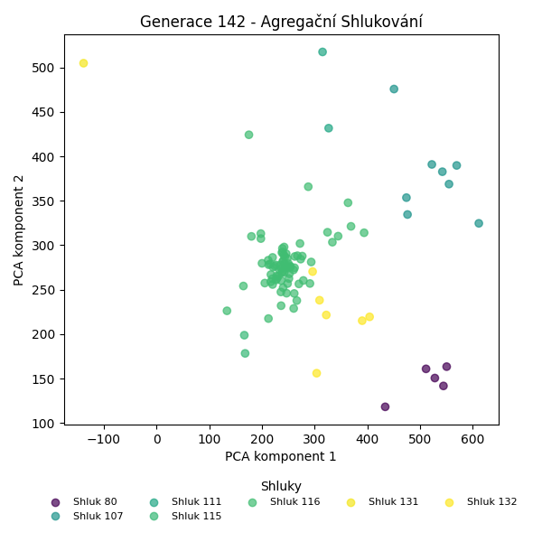
Stabilita mezi generací 141 → 142:
Shluk 116 → 116: 71 jedinců (100.0 %)
Shluk 80 → 132: 5 jedinců (50.0 %)
Shluk 80 → 80: 5 jedinců (50.0 %)
Shluk 107 → 107: 8 jedinců (80.0 %)
Shluk 107 → 116: 2 jedinců (20.0 %)
Shluk 115 → 116: 3 jedinců (50.0 %)
Shluk 115 → 115: 2 jedinců (33.3 %)
Shluk 115 → 132: 1 jedinců (16.7 %)
Shluk 131 → 131: 1 jedinců (100.0 %)
Shluk 111 → 111: 2 jedinců (100.0 %)
Jaccardovo mapování a overlap: Generace 141 → 142
- Shluk 116 → 116 (Jaccard: 0.93, Overlap: 1.00)
- Shluk 80 → 80 (Jaccard: 0.50, Overlap: 1.00)
- Shluk 107 → 107 (Jaccard: 0.80, Overlap: 1.00)
- Shluk 115 → 115 (Jaccard: 0.33, Overlap: 1.00)
- Shluk 131 → 131 (Jaccard: 1.00, Overlap: 1.00)
- Shluk 111 → 111 (Jaccard: 1.00, Overlap: 1.00)
Posun centroidů mezi generací 141 → 142:
- Shluk 0: 516.0991
- Shluk 1: 660.7061
- Shluk 2: 890.5083
- Shluk 3: 769.9873
- Shluk 4: 0.0000
- Shluk 5: 0.0000
Generace 143
Stabilita mezi generací 142 → 143:
Shluk 116 → 116: 75 jedinců (98.7 %)
Shluk 116 → 132: 1 jedinců (1.3 %)
Shluk 132 → 132: 5 jedinců (83.3 %)
Shluk 132 → 116: 1 jedinců (16.7 %)
Shluk 107 → 107: 4 jedinců (50.0 %)
Shluk 107 → 116: 4 jedinců (50.0 %)
Shluk 115 → 115: 2 jedinců (100.0 %)
Shluk 80 → 80: 4 jedinců (80.0 %)
Shluk 80 → 116: 1 jedinců (20.0 %)
Shluk 131 → 131: 1 jedinců (100.0 %)
Shluk 111 → 111: 2 jedinců (100.0 %)
Jaccardovo mapování a overlap: Generace 142 → 143
- Shluk 116 → 116 (Jaccard: 0.91, Overlap: 0.99)
- Shluk 132 → 132 (Jaccard: 0.71, Overlap: 0.83)
- Shluk 107 → 107 (Jaccard: 0.50, Overlap: 1.00)
- Shluk 115 → 115 (Jaccard: 1.00, Overlap: 1.00)
- Shluk 80 → 80 (Jaccard: 0.80, Overlap: 1.00)
- Shluk 131 → 131 (Jaccard: 1.00, Overlap: 1.00)
- Shluk 111 → 111 (Jaccard: 1.00, Overlap: 1.00)
Posun centroidů mezi generací 142 → 143:
- Shluk 0: 4.8658
- Shluk 1: 761.1788
- Shluk 2: 1007.4059
- Shluk 3: 788.2347
- Shluk 4: 0.0000
- Shluk 5: 0.0000
- Shluk 6: 1010.0712
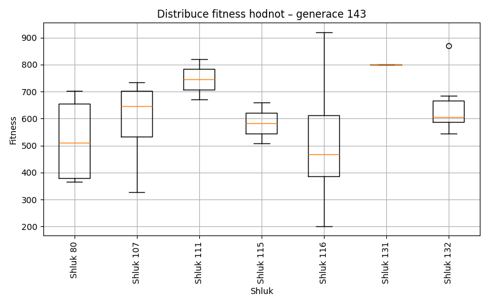
Generace 144
Stabilita mezi generací 143 → 144:
Shluk 116 → 116: 78 jedinců (96.3 %)
Shluk 116 → 115: 1 jedinců (1.2 %)
Shluk 116 → 80: 1 jedinců (1.2 %)
Shluk 116 → 132: 1 jedinců (1.2 %)
Shluk 132 → 132: 6 jedinců (100.0 %)
Shluk 107 → 107: 3 jedinců (75.0 %)
Shluk 107 → 116: 1 jedinců (25.0 %)
Shluk 115 → 115: 2 jedinců (100.0 %)
Shluk 80 → 80: 4 jedinců (100.0 %)
Shluk 131 → 116: 1 jedinců (100.0 %)
Shluk 111 → 111: 2 jedinců (100.0 %)
Jaccardovo mapování a overlap: Generace 143 → 144
- Shluk 116 → 116 (Jaccard: 0.94, Overlap: 0.97)
- Shluk 132 → 132 (Jaccard: 0.86, Overlap: 1.00)
- Shluk 107 → 107 (Jaccard: 0.75, Overlap: 1.00)
- Shluk 115 → 115 (Jaccard: 0.67, Overlap: 1.00)
- Shluk 80 → 80 (Jaccard: 0.80, Overlap: 1.00)
- Shluk 131 → 116 (Jaccard: 0.01, Overlap: 1.00)
- Shluk 111 → 111 (Jaccard: 1.00, Overlap: 1.00)
Posun centroidů mezi generací 143 → 144:
- Shluk 0: 9.1560
- Shluk 1: 426.1083
- Shluk 2: 768.5844
- Shluk 3: 1007.2156
- Shluk 4: 42.4871
- Shluk 5: 873.7328
Generace 145
Stabilita mezi generací 144 → 145:
Shluk 116 → 116: 78 jedinců (97.5 %)
Shluk 116 → 80: 1 jedinců (1.2 %)
Shluk 116 → 115: 1 jedinců (1.2 %)
Shluk 132 → 116: 1 jedinců (14.3 %)
Shluk 132 → 132: 6 jedinců (85.7 %)
Shluk 107 → 107: 3 jedinců (100.0 %)
Shluk 115 → 115: 2 jedinců (66.7 %)
Shluk 115 → 116: 1 jedinců (33.3 %)
Shluk 80 → 80: 4 jedinců (80.0 %)
Shluk 80 → 116: 1 jedinců (20.0 %)
Shluk 111 → 116: 1 jedinců (50.0 %)
Shluk 111 → 111: 1 jedinců (50.0 %)
Jaccardovo mapování a overlap: Generace 144 → 145
- Shluk 116 → 116 (Jaccard: 0.93, Overlap: 0.97)
- Shluk 132 → 132 (Jaccard: 0.86, Overlap: 1.00)
- Shluk 107 → 107 (Jaccard: 1.00, Overlap: 1.00)
- Shluk 115 → 115 (Jaccard: 0.50, Overlap: 0.67)
- Shluk 80 → 80 (Jaccard: 0.67, Overlap: 0.80)
- Shluk 111 → 111 (Jaccard: 0.50, Overlap: 1.00)
Posun centroidů mezi generací 144 → 145:
- Shluk 0: 9.3334
- Shluk 1: 22.4798
- Shluk 2: 13.6189
- Shluk 3: 26.2591
- Shluk 4: 44.5776
- Shluk 5: 33.6982
Generace 146
Stabilita mezi generací 145 → 146:
Shluk 116 → 116: 82 jedinců (100.0 %)
Shluk 107 → 107: 3 jedinců (100.0 %)
Shluk 80 → 80: 5 jedinců (100.0 %)
Shluk 115 → 115: 3 jedinců (100.0 %)
Shluk 132 → 116: 6 jedinců (100.0 %)
Shluk 111 → 116: 1 jedinců (100.0 %)
Jaccardovo mapování a overlap: Generace 145 → 146
- Shluk 116 → 116 (Jaccard: 0.92, Overlap: 1.00)
- Shluk 107 → 107 (Jaccard: 1.00, Overlap: 1.00)
- Shluk 80 → 80 (Jaccard: 1.00, Overlap: 1.00)
- Shluk 115 → 115 (Jaccard: 1.00, Overlap: 1.00)
- Shluk 132 → 116 (Jaccard: 0.07, Overlap: 1.00)
- Shluk 111 → 116 (Jaccard: 0.01, Overlap: 1.00)
Posun centroidů mezi generací 145 → 146:
- Shluk 0: 14.7637
- Shluk 1: 0.0000
- Shluk 2: 785.5637
- Shluk 3: 0.0000
Generace 147
Stabilita mezi generací 146 → 147:
Shluk 116 → 116: 88 jedinců (98.9 %)
Shluk 116 → 107: 1 jedinců (1.1 %)
Shluk 107 → 107: 2 jedinců (66.7 %)
Shluk 107 → 116: 1 jedinců (33.3 %)
Shluk 80 → 80: 3 jedinců (60.0 %)
Shluk 80 → 116: 2 jedinců (40.0 %)
Shluk 115 → 115: 2 jedinců (66.7 %)
Shluk 115 → 116: 1 jedinců (33.3 %)
Jaccardovo mapování a overlap: Generace 146 → 147
- Shluk 116 → 116 (Jaccard: 0.95, Overlap: 0.99)
- Shluk 107 → 107 (Jaccard: 0.50, Overlap: 0.67)
- Shluk 80 → 80 (Jaccard: 0.60, Overlap: 1.00)
- Shluk 115 → 115 (Jaccard: 0.67, Overlap: 1.00)
Posun centroidů mezi generací 146 → 147:
- Shluk 0: 4.6851
- Shluk 1: 1028.8613
- Shluk 2: 1029.5225
- Shluk 3: 1009.1762
Generace 148
Stabilita mezi generací 147 → 148:
Shluk 116 → 116: 92 jedinců (100.0 %)
Shluk 107 → 107: 3 jedinců (100.0 %)
Shluk 80 → 80: 3 jedinců (100.0 %)
Shluk 115 → 116: 1 jedinců (50.0 %)
Shluk 115 → 115: 1 jedinců (50.0 %)
Jaccardovo mapování a overlap: Generace 147 → 148
- Shluk 116 → 116 (Jaccard: 0.99, Overlap: 1.00)
- Shluk 107 → 107 (Jaccard: 1.00, Overlap: 1.00)
- Shluk 80 → 80 (Jaccard: 1.00, Overlap: 1.00)
- Shluk 115 → 115 (Jaccard: 0.50, Overlap: 1.00)
Posun centroidů mezi generací 147 → 148:
- Shluk 0: 8.3269
- Shluk 1: 0.0000
- Shluk 2: 20.5771
- Shluk 3: 27.9128
Generace 149
Stabilita mezi generací 148 → 149:
Shluk 116 → 116: 91 jedinců (97.8 %)
Shluk 116 → 80: 2 jedinců (2.2 %)
Shluk 107 → 116: 1 jedinců (33.3 %)
Shluk 107 → 107: 2 jedinců (66.7 %)
Shluk 80 → 80: 3 jedinců (100.0 %)
Shluk 115 → 116: 1 jedinců (100.0 %)
Jaccardovo mapování a overlap: Generace 148 → 149
- Shluk 116 → 116 (Jaccard: 0.96, Overlap: 0.98)
- Shluk 107 → 107 (Jaccard: 0.67, Overlap: 1.00)
- Shluk 80 → 80 (Jaccard: 0.60, Overlap: 1.00)
- Shluk 115 → 116 (Jaccard: 0.01, Overlap: 1.00)
Posun centroidů mezi generací 148 → 149:
- Shluk 0: 631.0691
- Shluk 1: 723.8250
- Shluk 2: 1035.6931
Generace 150
Stabilita mezi generací 149 → 150:
Shluk 116 → 116: 93 jedinců (100.0 %)
Shluk 80 → 116: 2 jedinců (40.0 %)
Shluk 80 → 80: 3 jedinců (60.0 %)
Shluk 107 → 107: 1 jedinců (50.0 %)
Shluk 107 → 116: 1 jedinců (50.0 %)
Jaccardovo mapování a overlap: Generace 149 → 150
- Shluk 116 → 116 (Jaccard: 0.97, Overlap: 1.00)
- Shluk 80 → 80 (Jaccard: 0.60, Overlap: 1.00)
- Shluk 107 → 107 (Jaccard: 0.50, Overlap: 1.00)
Posun centroidů mezi generací 149 → 150:
- Shluk 0: 638.9888
- Shluk 1: 713.1751
- Shluk 2: 18.1939
Generace 151
Stabilita mezi generací 150 → 151:
Shluk 116 → 116: 96 jedinců (100.0 %)
Shluk 80 → 116: 1 jedinců (33.3 %)
Shluk 80 → 80: 2 jedinců (66.7 %)
Shluk 107 → 107: 1 jedinců (100.0 %)
Jaccardovo mapování a overlap: Generace 150 → 151
- Shluk 116 → 116 (Jaccard: 0.99, Overlap: 1.00)
- Shluk 80 → 80 (Jaccard: 0.67, Overlap: 1.00)
- Shluk 107 → 107 (Jaccard: 1.00, Overlap: 1.00)
Posun centroidů mezi generací 150 → 151:
- Shluk 0: 5.1730
- Shluk 1: 27.0707
- Shluk 2: 0.0000
Generace 152
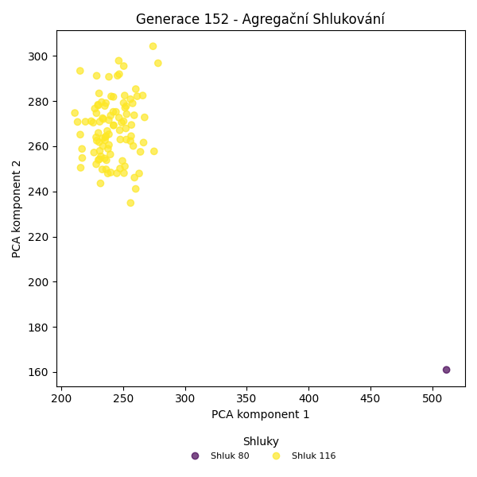
Stabilita mezi generací 151 → 152:
Shluk 116 → 116: 97 jedinců (100.0 %)
Shluk 80 → 80: 1 jedinců (50.0 %)
Shluk 80 → 116: 1 jedinců (50.0 %)
Shluk 107 → 116: 1 jedinců (100.0 %)
Jaccardovo mapování a overlap: Generace 151 → 152
- Shluk 116 → 116 (Jaccard: 0.98, Overlap: 1.00)
- Shluk 80 → 80 (Jaccard: 0.50, Overlap: 1.00)
- Shluk 107 → 116 (Jaccard: 0.01, Overlap: 1.00)
Posun centroidů mezi generací 151 → 152:
- Shluk 0: 3.6451
- Shluk 1: 28.2881
Generace 153
Stabilita mezi generací 152 → 153:
Shluk 116 → 116: 99 jedinců (100.0 %)
Shluk 80 → 80: 1 jedinců (100.0 %)
Jaccardovo mapování a overlap: Generace 152 → 153
- Shluk 116 → 116 (Jaccard: 1.00, Overlap: 1.00)
- Shluk 80 → 80 (Jaccard: 1.00, Overlap: 1.00)
Posun centroidů mezi generací 152 → 153:
- Shluk 0: 2.4355
- Shluk 1: 0.0000
Generace 154
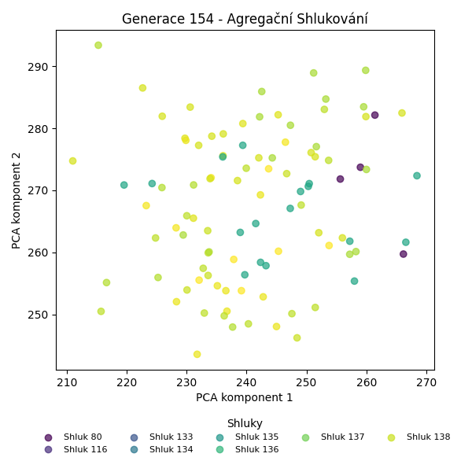
Stabilita mezi generací 153 → 154:
Shluk 116 → 116: 17 jedinců (17.2 %)
Shluk 116 → 133: 13 jedinců (13.1 %)
Shluk 116 → 134: 7 jedinců (7.1 %)
Shluk 116 → 135: 14 jedinců (14.1 %)
Shluk 116 → 136: 5 jedinců (5.1 %)
Shluk 116 → 137: 16 jedinců (16.2 %)
Shluk 116 → 138: 5 jedinců (5.1 %)
Shluk 116 → 139: 9 jedinců (9.1 %)
Shluk 116 → 140: 4 jedinců (4.0 %)
Shluk 116 → 80: 3 jedinců (3.0 %)
Shluk 116 → 141: 6 jedinců (6.1 %)
Shluk 80 → 80: 1 jedinců (100.0 %)
Jaccardovo mapování a overlap: Generace 153 → 154
- Shluk 116 → 116 (Jaccard: 0.17, Overlap: 1.00)
- Shluk 80 → 80 (Jaccard: 0.25, Overlap: 1.00)
Posun centroidů mezi generací 153 → 154:
- Shluk 0: 22.9500
- Shluk 1: 716.2073
Generace 155
Stabilita mezi generací 154 → 155:
Shluk 116 → 116: 11 jedinců (64.7 %)
Shluk 116 → 136: 1 jedinců (5.9 %)
Shluk 116 → 138: 4 jedinců (23.5 %)
Shluk 116 → 135: 1 jedinců (5.9 %)
Shluk 133 → 133: 7 jedinců (53.8 %)
Shluk 133 → 143: 1 jedinců (7.7 %)
Shluk 133 → 141: 1 jedinců (7.7 %)
Shluk 133 → 135: 1 jedinců (7.7 %)
Shluk 133 → 116: 1 jedinců (7.7 %)
Shluk 133 → 136: 1 jedinců (7.7 %)
Shluk 133 → 138: 1 jedinců (7.7 %)
Shluk 134 → 133: 2 jedinců (28.6 %)
Shluk 134 → 134: 4 jedinců (57.1 %)
Shluk 134 → 135: 1 jedinců (14.3 %)
Shluk 135 → 142: 4 jedinců (28.6 %)
Shluk 135 → 80: 1 jedinců (7.1 %)
Shluk 135 → 135: 5 jedinců (35.7 %)
Shluk 135 → 116: 1 jedinců (7.1 %)
Shluk 135 → 136: 2 jedinců (14.3 %)
Shluk 135 → 143: 1 jedinců (7.1 %)
Shluk 136 → 142: 1 jedinců (20.0 %)
Shluk 136 → 136: 3 jedinců (60.0 %)
Shluk 136 → 133: 1 jedinců (20.0 %)
Shluk 137 → 136: 3 jedinců (18.8 %)
Shluk 137 → 135: 4 jedinců (25.0 %)
Shluk 137 → 116: 1 jedinců (6.2 %)
Shluk 137 → 80: 2 jedinců (12.5 %)
Shluk 137 → 134: 3 jedinců (18.8 %)
Shluk 137 → 133: 2 jedinců (12.5 %)
Shluk 137 → 141: 1 jedinců (6.2 %)
Shluk 138 → 138: 3 jedinců (60.0 %)
Shluk 138 → 134: 1 jedinců (20.0 %)
Shluk 138 → 133: 1 jedinců (20.0 %)
Shluk 139 → 142: 2 jedinců (22.2 %)
Shluk 139 → 80: 2 jedinců (22.2 %)
Shluk 139 → 136: 3 jedinců (33.3 %)
Shluk 139 → 138: 1 jedinců (11.1 %)
Shluk 139 → 143: 1 jedinců (11.1 %)
Shluk 140 → 134: 2 jedinců (50.0 %)
Shluk 140 → 138: 1 jedinců (25.0 %)
Shluk 140 → 143: 1 jedinců (25.0 %)
Shluk 80 → 80: 3 jedinců (75.0 %)
Shluk 80 → 134: 1 jedinců (25.0 %)
Shluk 141 → 143: 1 jedinců (16.7 %)
Shluk 141 → 138: 2 jedinců (33.3 %)
Shluk 141 → 141: 3 jedinců (50.0 %)
Jaccardovo mapování a overlap: Generace 154 → 155
- Shluk 116 → 116 (Jaccard: 0.55, Overlap: 0.79)
- Shluk 133 → 133 (Jaccard: 0.37, Overlap: 0.54)
- Shluk 134 → 134 (Jaccard: 0.29, Overlap: 0.57)
- Shluk 135 → 135 (Jaccard: 0.24, Overlap: 0.42)
- Shluk 136 → 136 (Jaccard: 0.20, Overlap: 0.60)
- Shluk 137 → 135 (Jaccard: 0.17, Overlap: 0.33)
- Shluk 138 → 138 (Jaccard: 0.21, Overlap: 0.60)
- Shluk 139 → 136 (Jaccard: 0.16, Overlap: 0.33)
- Shluk 140 → 134 (Jaccard: 0.15, Overlap: 0.50)
- Shluk 80 → 80 (Jaccard: 0.33, Overlap: 0.75)
- Shluk 141 → 141 (Jaccard: 0.38, Overlap: 0.60)
Posun centroidů mezi generací 154 → 155:
- Shluk 0: 29.8579
- Shluk 1: 31.9688
- Shluk 2: 46.8262
- Shluk 3: 43.6962
- Shluk 4: 31.9193
- Shluk 5: 47.0828
- Shluk 6: 46.1688
- Shluk 7: 39.6245
- Shluk 8: 41.1013
- Shluk 9: 44.3146
Generace 156
Stabilita mezi generací 155 → 156:
Shluk 116 → 144: 2 jedinců (14.3 %)
Shluk 116 → 133: 1 jedinců (7.1 %)
Shluk 116 → 145: 1 jedinců (7.1 %)
Shluk 116 → 136: 1 jedinců (7.1 %)
Shluk 116 → 116: 6 jedinců (42.9 %)
Shluk 116 → 138: 3 jedinců (21.4 %)
Shluk 133 → 143: 1 jedinců (7.7 %)
Shluk 133 → 134: 1 jedinců (7.7 %)
Shluk 133 → 133: 7 jedinců (53.8 %)
Shluk 133 → 145: 1 jedinců (7.7 %)
Shluk 133 → 116: 1 jedinců (7.7 %)
Shluk 133 → 135: 1 jedinců (7.7 %)
Shluk 133 → 136: 1 jedinců (7.7 %)
Shluk 142 → 141: 1 jedinců (14.3 %)
Shluk 142 → 144: 1 jedinců (14.3 %)
Shluk 142 → 136: 2 jedinců (28.6 %)
Shluk 142 → 116: 2 jedinců (28.6 %)
Shluk 142 → 134: 1 jedinců (14.3 %)
Shluk 136 → 133: 3 jedinců (23.1 %)
Shluk 136 → 134: 1 jedinců (7.7 %)
Shluk 136 → 136: 3 jedinců (23.1 %)
Shluk 136 → 138: 1 jedinců (7.7 %)
Shluk 136 → 144: 2 jedinců (15.4 %)
Shluk 136 → 143: 1 jedinců (7.7 %)
Shluk 136 → 145: 1 jedinců (7.7 %)
Shluk 136 → 116: 1 jedinců (7.7 %)
Shluk 138 → 138: 8 jedinců (66.7 %)
Shluk 138 → 134: 1 jedinců (8.3 %)
Shluk 138 → 135: 3 jedinců (25.0 %)
Shluk 143 → 143: 3 jedinců (60.0 %)
Shluk 143 → 144: 2 jedinců (40.0 %)
Shluk 135 → 135: 5 jedinců (41.7 %)
Shluk 135 → 134: 1 jedinců (8.3 %)
Shluk 135 → 145: 3 jedinců (25.0 %)
Shluk 135 → 133: 2 jedinců (16.7 %)
Shluk 135 → 116: 1 jedinců (8.3 %)
Shluk 134 → 145: 3 jedinců (27.3 %)
Shluk 134 → 134: 6 jedinců (54.5 %)
Shluk 134 → 80: 1 jedinců (9.1 %)
Shluk 134 → 135: 1 jedinců (9.1 %)
Shluk 80 → 80: 3 jedinců (37.5 %)
Shluk 80 → 143: 2 jedinců (25.0 %)
Shluk 80 → 136: 1 jedinců (12.5 %)
Shluk 80 → 138: 2 jedinců (25.0 %)
Shluk 141 → 141: 2 jedinců (40.0 %)
Shluk 141 → 146: 1 jedinců (20.0 %)
Shluk 141 → 116: 2 jedinců (40.0 %)
Jaccardovo mapování a overlap: Generace 155 → 156
- Shluk 116 → 116 (Jaccard: 0.29, Overlap: 0.46)
- Shluk 133 → 133 (Jaccard: 0.37, Overlap: 0.54)
- Shluk 142 → 136 (Jaccard: 0.15, Overlap: 0.29)
- Shluk 136 → 136 (Jaccard: 0.17, Overlap: 0.38)
- Shluk 138 → 138 (Jaccard: 0.44, Overlap: 0.67)
- Shluk 143 → 143 (Jaccard: 0.33, Overlap: 0.60)
- Shluk 135 → 135 (Jaccard: 0.29, Overlap: 0.50)
- Shluk 134 → 134 (Jaccard: 0.38, Overlap: 0.55)
- Shluk 80 → 80 (Jaccard: 0.33, Overlap: 0.75)
- Shluk 141 → 141 (Jaccard: 0.33, Overlap: 0.67)
Posun centroidů mezi generací 155 → 156:
- Shluk 0: 29.5936
- Shluk 1: 24.7496
- Shluk 2: 35.8037
- Shluk 3: 41.9572
- Shluk 4: 38.0125
- Shluk 5: 38.8384
- Shluk 6: 35.5491
- Shluk 7: 29.6712
- Shluk 8: 26.2650
- Shluk 9: 17.9238
Generace 157
Stabilita mezi generací 156 → 157:
Shluk 144 → 147: 1 jedinců (14.3 %)
Shluk 144 → 144: 4 jedinců (57.1 %)
Shluk 144 → 145: 1 jedinců (14.3 %)
Shluk 144 → 149: 1 jedinců (14.3 %)
Shluk 143 → 141: 2 jedinců (28.6 %)
Shluk 143 → 138: 3 jedinců (42.9 %)
Shluk 143 → 147: 2 jedinců (28.6 %)
Shluk 134 → 134: 7 jedinců (63.6 %)
Shluk 134 → 149: 1 jedinců (9.1 %)
Shluk 134 → 144: 1 jedinců (9.1 %)
Shluk 134 → 135: 1 jedinců (9.1 %)
Shluk 134 → 147: 1 jedinců (9.1 %)
Shluk 141 → 141: 3 jedinců (100.0 %)
Shluk 133 → 148: 4 jedinců (30.8 %)
Shluk 133 → 133: 4 jedinců (30.8 %)
Shluk 133 → 147: 1 jedinců (7.7 %)
Shluk 133 → 144: 2 jedinců (15.4 %)
Shluk 133 → 145: 1 jedinců (7.7 %)
Shluk 133 → 141: 1 jedinců (7.7 %)
Shluk 138 → 134: 2 jedinců (14.3 %)
Shluk 138 → 138: 6 jedinců (42.9 %)
Shluk 138 → 150: 4 jedinců (28.6 %)
Shluk 138 → 145: 2 jedinců (14.3 %)
Shluk 135 → 133: 1 jedinců (10.0 %)
Shluk 135 → 135: 3 jedinců (30.0 %)
Shluk 135 → 138: 2 jedinců (20.0 %)
Shluk 135 → 144: 2 jedinců (20.0 %)
Shluk 135 → 134: 1 jedinců (10.0 %)
Shluk 135 → 141: 1 jedinců (10.0 %)
Shluk 136 → 136: 5 jedinců (62.5 %)
Shluk 136 → 149: 2 jedinců (25.0 %)
Shluk 136 → 144: 1 jedinců (12.5 %)
Shluk 145 → 145: 5 jedinců (55.6 %)
Shluk 145 → 147: 1 jedinců (11.1 %)
Shluk 145 → 148: 1 jedinců (11.1 %)
Shluk 145 → 149: 1 jedinců (11.1 %)
Shluk 145 → 80: 1 jedinců (11.1 %)
Shluk 80 → 80: 3 jedinců (75.0 %)
Shluk 80 → 148: 1 jedinců (25.0 %)
Shluk 116 → 145: 2 jedinců (15.4 %)
Shluk 116 → 144: 5 jedinců (38.5 %)
Shluk 116 → 135: 1 jedinců (7.7 %)
Shluk 116 → 147: 3 jedinců (23.1 %)
Shluk 116 → 150: 1 jedinců (7.7 %)
Shluk 116 → 134: 1 jedinců (7.7 %)
Shluk 146 → 138: 1 jedinců (100.0 %)
Jaccardovo mapování a overlap: Generace 156 → 157
- Shluk 144 → 144 (Jaccard: 0.22, Overlap: 0.57)
- Shluk 143 → 138 (Jaccard: 0.19, Overlap: 0.43)
- Shluk 134 → 134 (Jaccard: 0.47, Overlap: 0.64)
- Shluk 141 → 141 (Jaccard: 0.43, Overlap: 1.00)
- Shluk 133 → 133 (Jaccard: 0.29, Overlap: 0.80)
- Shluk 138 → 138 (Jaccard: 0.30, Overlap: 0.50)
- Shluk 135 → 135 (Jaccard: 0.25, Overlap: 0.60)
- Shluk 136 → 136 (Jaccard: 0.62, Overlap: 1.00)
- Shluk 145 → 145 (Jaccard: 0.33, Overlap: 0.56)
- Shluk 80 → 80 (Jaccard: 0.60, Overlap: 0.75)
- Shluk 116 → 144 (Jaccard: 0.22, Overlap: 0.38)
- Shluk 146 → 138 (Jaccard: 0.08, Overlap: 1.00)
Posun centroidů mezi generací 156 → 157:
- Shluk 0: 29.2958
- Shluk 1: 27.0778
- Shluk 2: 33.7856
- Shluk 3: 39.5542
- Shluk 4: 34.8305
- Shluk 5: 28.2981
- Shluk 6: 40.3467
- Shluk 7: 33.5480
- Shluk 8: 38.7978
- Shluk 9: 35.6804
- Shluk 10: 38.0025
- Shluk 11: 46.8679
Generace 158
Stabilita mezi generací 157 → 158:
Shluk 147 → 147: 7 jedinců (77.8 %)
Shluk 147 → 138: 1 jedinců (11.1 %)
Shluk 147 → 144: 1 jedinců (11.1 %)
Shluk 141 → 144: 3 jedinců (42.9 %)
Shluk 141 → 80: 3 jedinců (42.9 %)
Shluk 141 → 134: 1 jedinců (14.3 %)
Shluk 134 → 144: 1 jedinců (9.1 %)
Shluk 134 → 134: 8 jedinců (72.7 %)
Shluk 134 → 80: 1 jedinců (9.1 %)
Shluk 134 → 149: 1 jedinců (9.1 %)
Shluk 144 → 149: 2 jedinců (13.3 %)
Shluk 144 → 144: 7 jedinců (46.7 %)
Shluk 144 → 80: 1 jedinců (6.7 %)
Shluk 144 → 135: 5 jedinců (33.3 %)
Shluk 148 → 148: 5 jedinců (83.3 %)
Shluk 148 → 144: 1 jedinců (16.7 %)
Shluk 133 → 133: 5 jedinců (100.0 %)
Shluk 136 → 136: 3 jedinců (60.0 %)
Shluk 136 → 148: 1 jedinců (20.0 %)
Shluk 136 → 138: 1 jedinců (20.0 %)
Shluk 145 → 136: 1 jedinců (9.1 %)
Shluk 145 → 148: 2 jedinců (18.2 %)
Shluk 145 → 138: 1 jedinců (9.1 %)
Shluk 145 → 145: 4 jedinců (36.4 %)
Shluk 145 → 80: 2 jedinců (18.2 %)
Shluk 145 → 150: 1 jedinců (9.1 %)
Shluk 80 → 80: 2 jedinců (50.0 %)
Shluk 80 → 149: 1 jedinců (25.0 %)
Shluk 80 → 134: 1 jedinců (25.0 %)
Shluk 135 → 135: 4 jedinců (80.0 %)
Shluk 135 → 149: 1 jedinců (20.0 %)
Shluk 138 → 138: 4 jedinců (33.3 %)
Shluk 138 → 135: 2 jedinců (16.7 %)
Shluk 138 → 80: 4 jedinců (33.3 %)
Shluk 138 → 148: 1 jedinců (8.3 %)
Shluk 138 → 134: 1 jedinců (8.3 %)
Shluk 149 → 149: 2 jedinců (40.0 %)
Shluk 149 → 148: 1 jedinců (20.0 %)
Shluk 149 → 135: 1 jedinců (20.0 %)
Shluk 149 → 150: 1 jedinců (20.0 %)
Shluk 150 → 150: 5 jedinců (100.0 %)
Jaccardovo mapování a overlap: Generace 157 → 158
- Shluk 147 → 147 (Jaccard: 0.78, Overlap: 1.00)
- Shluk 141 → 144 (Jaccard: 0.18, Overlap: 0.43)
- Shluk 134 → 134 (Jaccard: 0.57, Overlap: 0.73)
- Shluk 144 → 144 (Jaccard: 0.33, Overlap: 0.54)
- Shluk 148 → 148 (Jaccard: 0.45, Overlap: 0.83)
- Shluk 133 → 133 (Jaccard: 1.00, Overlap: 1.00)
- Shluk 136 → 136 (Jaccard: 0.50, Overlap: 0.75)
- Shluk 145 → 145 (Jaccard: 0.36, Overlap: 1.00)
- Shluk 80 → 80 (Jaccard: 0.13, Overlap: 0.50)
- Shluk 135 → 135 (Jaccard: 0.31, Overlap: 0.80)
- Shluk 138 → 138 (Jaccard: 0.27, Overlap: 0.57)
- Shluk 149 → 149 (Jaccard: 0.20, Overlap: 0.40)
- Shluk 150 → 150 (Jaccard: 0.71, Overlap: 1.00)
Posun centroidů mezi generací 157 → 158:
- Shluk 0: 38.2505
- Shluk 1: 16.4311
- Shluk 2: 27.1834
- Shluk 3: 29.1863
- Shluk 4: 33.7266
- Shluk 5: 32.6745
- Shluk 6: 45.9817
- Shluk 7: 45.0175
- Shluk 8: 45.6416
- Shluk 9: 37.5023
- Shluk 10: 29.0657
- Shluk 11: 32.4208
Generace 159
Stabilita mezi generací 158 → 159:
Shluk 147 → 138: 1 jedinců (14.3 %)
Shluk 147 → 147: 5 jedinců (71.4 %)
Shluk 147 → 149: 1 jedinců (14.3 %)
Shluk 144 → 151: 4 jedinců (30.8 %)
Shluk 144 → 135: 2 jedinců (15.4 %)
Shluk 144 → 147: 5 jedinců (38.5 %)
Shluk 144 → 150: 1 jedinců (7.7 %)
Shluk 144 → 152: 1 jedinců (7.7 %)
Shluk 80 → 151: 2 jedinců (15.4 %)
Shluk 80 → 148: 1 jedinců (7.7 %)
Shluk 80 → 152: 3 jedinců (23.1 %)
Shluk 80 → 149: 1 jedinců (7.7 %)
Shluk 80 → 150: 1 jedinců (7.7 %)
Shluk 80 → 138: 4 jedinců (30.8 %)
Shluk 80 → 136: 1 jedinců (7.7 %)
Shluk 149 → 148: 2 jedinců (28.6 %)
Shluk 149 → 152: 1 jedinců (14.3 %)
Shluk 149 → 149: 3 jedinců (42.9 %)
Shluk 149 → 151: 1 jedinců (14.3 %)
Shluk 148 → 151: 3 jedinců (30.0 %)
Shluk 148 → 136: 2 jedinců (20.0 %)
Shluk 148 → 148: 4 jedinců (40.0 %)
Shluk 148 → 147: 1 jedinců (10.0 %)
Shluk 133 → 152: 2 jedinců (40.0 %)
Shluk 133 → 136: 2 jedinců (40.0 %)
Shluk 133 → 148: 1 jedinců (20.0 %)
Shluk 134 → 148: 3 jedinců (27.3 %)
Shluk 134 → 135: 1 jedinců (9.1 %)
Shluk 134 → 134: 4 jedinců (36.4 %)
Shluk 134 → 149: 1 jedinců (9.1 %)
Shluk 134 → 150: 1 jedinců (9.1 %)
Shluk 134 → 138: 1 jedinců (9.1 %)
Shluk 136 → 147: 1 jedinců (25.0 %)
Shluk 136 → 136: 3 jedinců (75.0 %)
Shluk 135 → 134: 4 jedinců (33.3 %)
Shluk 135 → 135: 6 jedinců (50.0 %)
Shluk 135 → 148: 1 jedinců (8.3 %)
Shluk 135 → 152: 1 jedinců (8.3 %)
Shluk 138 → 138: 6 jedinců (85.7 %)
Shluk 138 → 134: 1 jedinců (14.3 %)
Shluk 145 → 152: 1 jedinců (25.0 %)
Shluk 145 → 148: 2 jedinců (50.0 %)
Shluk 145 → 147: 1 jedinců (25.0 %)
Shluk 150 → 150: 5 jedinců (71.4 %)
Shluk 150 → 152: 1 jedinců (14.3 %)
Shluk 150 → 148: 1 jedinců (14.3 %)
Jaccardovo mapování a overlap: Generace 158 → 159
- Shluk 147 → 147 (Jaccard: 0.33, Overlap: 0.71)
- Shluk 144 → 147 (Jaccard: 0.24, Overlap: 0.38)
- Shluk 80 → 138 (Jaccard: 0.19, Overlap: 0.33)
- Shluk 149 → 149 (Jaccard: 0.30, Overlap: 0.50)
- Shluk 148 → 148 (Jaccard: 0.19, Overlap: 0.40)
- Shluk 133 → 136 (Jaccard: 0.18, Overlap: 0.40)
- Shluk 134 → 134 (Jaccard: 0.25, Overlap: 0.44)
- Shluk 136 → 136 (Jaccard: 0.33, Overlap: 0.75)
- Shluk 135 → 135 (Jaccard: 0.40, Overlap: 0.67)
- Shluk 138 → 138 (Jaccard: 0.46, Overlap: 0.86)
- Shluk 145 → 148 (Jaccard: 0.12, Overlap: 0.50)
- Shluk 150 → 150 (Jaccard: 0.50, Overlap: 0.71)
Posun centroidů mezi generací 158 → 159:
- Shluk 0: 33.8891
- Shluk 1: 31.6889
- Shluk 2: 19.0744
- Shluk 3: 23.6853
- Shluk 4: 35.6218
- Shluk 5: 18.1525
- Shluk 6: 22.4145
- Shluk 7: 17.9577
- Shluk 8: 39.4212
- Shluk 9: 41.8611
Generace 160
Stabilita mezi generací 159 → 160:
Shluk 138 → 153: 3 jedinců (25.0 %)
Shluk 138 → 138: 7 jedinců (58.3 %)
Shluk 138 → 152: 1 jedinců (8.3 %)
Shluk 138 → 147: 1 jedinců (8.3 %)
Shluk 151 → 151: 6 jedinců (60.0 %)
Shluk 151 → 147: 1 jedinců (10.0 %)
Shluk 151 → 150: 1 jedinců (10.0 %)
Shluk 151 → 152: 2 jedinců (20.0 %)
Shluk 148 → 150: 1 jedinců (6.7 %)
Shluk 148 → 138: 2 jedinců (13.3 %)
Shluk 148 → 135: 1 jedinců (6.7 %)
Shluk 148 → 148: 5 jedinců (33.3 %)
Shluk 148 → 151: 1 jedinců (6.7 %)
Shluk 148 → 154: 1 jedinců (6.7 %)
Shluk 148 → 152: 3 jedinců (20.0 %)
Shluk 148 → 134: 1 jedinců (6.7 %)
Shluk 152 → 154: 3 jedinců (30.0 %)
Shluk 152 → 153: 2 jedinců (20.0 %)
Shluk 152 → 152: 5 jedinců (50.0 %)
Shluk 135 → 136: 1 jedinců (11.1 %)
Shluk 135 → 138: 1 jedinců (11.1 %)
Shluk 135 → 153: 2 jedinců (22.2 %)
Shluk 135 → 135: 4 jedinců (44.4 %)
Shluk 135 → 150: 1 jedinců (11.1 %)
Shluk 136 → 136: 7 jedinců (87.5 %)
Shluk 136 → 147: 1 jedinců (12.5 %)
Shluk 147 → 147: 4 jedinců (30.8 %)
Shluk 147 → 150: 1 jedinců (7.7 %)
Shluk 147 → 136: 1 jedinců (7.7 %)
Shluk 147 → 153: 3 jedinců (23.1 %)
Shluk 147 → 135: 4 jedinců (30.8 %)
Shluk 134 → 152: 1 jedinců (11.1 %)
Shluk 134 → 134: 6 jedinců (66.7 %)
Shluk 134 → 135: 2 jedinců (22.2 %)
Shluk 150 → 148: 2 jedinců (25.0 %)
Shluk 150 → 150: 4 jedinců (50.0 %)
Shluk 150 → 134: 1 jedinců (12.5 %)
Shluk 150 → 153: 1 jedinců (12.5 %)
Shluk 149 → 134: 1 jedinců (16.7 %)
Shluk 149 → 148: 3 jedinců (50.0 %)
Shluk 149 → 150: 2 jedinců (33.3 %)
Jaccardovo mapování a overlap: Generace 159 → 160
- Shluk 138 → 138 (Jaccard: 0.47, Overlap: 0.70)
- Shluk 151 → 151 (Jaccard: 0.55, Overlap: 0.86)
- Shluk 148 → 148 (Jaccard: 0.25, Overlap: 0.50)
- Shluk 152 → 152 (Jaccard: 0.29, Overlap: 0.50)
- Shluk 135 → 135 (Jaccard: 0.25, Overlap: 0.44)
- Shluk 136 → 136 (Jaccard: 0.70, Overlap: 0.88)
- Shluk 147 → 147 (Jaccard: 0.25, Overlap: 0.57)
- Shluk 134 → 134 (Jaccard: 0.50, Overlap: 0.67)
- Shluk 150 → 150 (Jaccard: 0.29, Overlap: 0.50)
- Shluk 149 → 148 (Jaccard: 0.23, Overlap: 0.50)
Posun centroidů mezi generací 159 → 160:
- Shluk 0: 25.3942
- Shluk 1: 26.0816
- Shluk 2: 15.4968
- Shluk 3: 22.0788
- Shluk 4: 29.6564
- Shluk 5: 9.5281
- Shluk 6: 27.8047
- Shluk 7: 4.0426
- Shluk 8: 25.6895
- Shluk 9: 31.8435
Generace 161
Stabilita mezi generací 160 → 161:
Shluk 153 → 150: 2 jedinců (18.2 %)
Shluk 153 → 154: 1 jedinců (9.1 %)
Shluk 153 → 138: 5 jedinců (45.5 %)
Shluk 153 → 136: 2 jedinců (18.2 %)
Shluk 153 → 135: 1 jedinců (9.1 %)
Shluk 151 → 151: 3 jedinců (42.9 %)
Shluk 151 → 155: 2 jedinců (28.6 %)
Shluk 151 → 135: 1 jedinců (14.3 %)
Shluk 151 → 156: 1 jedinců (14.3 %)
Shluk 150 → 150: 7 jedinců (70.0 %)
Shluk 150 → 154: 1 jedinců (10.0 %)
Shluk 150 → 156: 2 jedinců (20.0 %)
Shluk 147 → 147: 3 jedinců (42.9 %)
Shluk 147 → 150: 1 jedinců (14.3 %)
Shluk 147 → 138: 2 jedinců (28.6 %)
Shluk 147 → 155: 1 jedinců (14.3 %)
Shluk 154 → 154: 3 jedinců (75.0 %)
Shluk 154 → 150: 1 jedinců (25.0 %)
Shluk 138 → 155: 1 jedinců (10.0 %)
Shluk 138 → 154: 1 jedinců (10.0 %)
Shluk 138 → 150: 1 jedinců (10.0 %)
Shluk 138 → 138: 6 jedinců (60.0 %)
Shluk 138 → 156: 1 jedinců (10.0 %)
Shluk 136 → 136: 6 jedinců (66.7 %)
Shluk 136 → 154: 2 jedinců (22.2 %)
Shluk 136 → 138: 1 jedinců (11.1 %)
Shluk 152 → 150: 2 jedinců (16.7 %)
Shluk 152 → 152: 6 jedinců (50.0 %)
Shluk 152 → 155: 1 jedinců (8.3 %)
Shluk 152 → 147: 2 jedinců (16.7 %)
Shluk 152 → 138: 1 jedinců (8.3 %)
Shluk 135 → 156: 3 jedinců (27.3 %)
Shluk 135 → 135: 3 jedinců (27.3 %)
Shluk 135 → 150: 1 jedinců (9.1 %)
Shluk 135 → 138: 1 jedinců (9.1 %)
Shluk 135 → 152: 1 jedinců (9.1 %)
Shluk 135 → 147: 2 jedinců (18.2 %)
Shluk 134 → 134: 4 jedinců (44.4 %)
Shluk 134 → 156: 1 jedinců (11.1 %)
Shluk 134 → 138: 2 jedinců (22.2 %)
Shluk 134 → 147: 2 jedinců (22.2 %)
Shluk 148 → 136: 4 jedinců (40.0 %)
Shluk 148 → 155: 3 jedinců (30.0 %)
Shluk 148 → 147: 1 jedinců (10.0 %)
Shluk 148 → 135: 1 jedinců (10.0 %)
Shluk 148 → 154: 1 jedinců (10.0 %)
Jaccardovo mapování a overlap: Generace 160 → 161
- Shluk 153 → 138 (Jaccard: 0.21, Overlap: 0.45)
- Shluk 151 → 151 (Jaccard: 0.43, Overlap: 1.00)
- Shluk 150 → 150 (Jaccard: 0.39, Overlap: 0.70)
- Shluk 147 → 147 (Jaccard: 0.21, Overlap: 0.43)
- Shluk 154 → 154 (Jaccard: 0.30, Overlap: 0.75)
- Shluk 138 → 138 (Jaccard: 0.27, Overlap: 0.60)
- Shluk 136 → 136 (Jaccard: 0.40, Overlap: 0.67)
- Shluk 152 → 152 (Jaccard: 0.46, Overlap: 0.86)
- Shluk 135 → 135 (Jaccard: 0.21, Overlap: 0.50)
- Shluk 134 → 134 (Jaccard: 0.44, Overlap: 1.00)
- Shluk 148 → 136 (Jaccard: 0.22, Overlap: 0.40)
Posun centroidů mezi generací 160 → 161:
- Shluk 0: 28.9910
- Shluk 1: 25.9620
- Shluk 2: 28.7807
- Shluk 3: 24.2100
- Shluk 4: 31.8831
- Shluk 5: 34.4908
- Shluk 6: 29.9050
- Shluk 7: 31.0078
- Shluk 8: 29.5401
- Shluk 9: 17.8507
- Shluk 10: 35.9531
Generace 162
Stabilita mezi generací 161 → 162:
Shluk 150 → 150: 6 jedinců (40.0 %)
Shluk 150 → 155: 5 jedinců (33.3 %)
Shluk 150 → 158: 2 jedinců (13.3 %)
Shluk 150 → 157: 2 jedinců (13.3 %)
Shluk 151 → 138: 1 jedinců (33.3 %)
Shluk 151 → 135: 1 jedinců (33.3 %)
Shluk 151 → 150: 1 jedinců (33.3 %)
Shluk 155 → 134: 3 jedinců (37.5 %)
Shluk 155 → 157: 1 jedinců (12.5 %)
Shluk 155 → 155: 3 jedinců (37.5 %)
Shluk 155 → 154: 1 jedinců (12.5 %)
Shluk 135 → 154: 2 jedinců (33.3 %)
Shluk 135 → 135: 4 jedinců (66.7 %)
Shluk 147 → 135: 1 jedinců (10.0 %)
Shluk 147 → 134: 3 jedinců (30.0 %)
Shluk 147 → 147: 4 jedinců (40.0 %)
Shluk 147 → 154: 2 jedinců (20.0 %)
Shluk 154 → 154: 6 jedinců (66.7 %)
Shluk 154 → 152: 1 jedinců (11.1 %)
Shluk 154 → 158: 2 jedinců (22.2 %)
Shluk 136 → 136: 4 jedinců (33.3 %)
Shluk 136 → 155: 1 jedinců (8.3 %)
Shluk 136 → 134: 3 jedinců (25.0 %)
Shluk 136 → 154: 2 jedinců (16.7 %)
Shluk 136 → 158: 1 jedinců (8.3 %)
Shluk 136 → 152: 1 jedinců (8.3 %)
Shluk 138 → 138: 6 jedinců (33.3 %)
Shluk 138 → 134: 1 jedinců (5.6 %)
Shluk 138 → 158: 2 jedinců (11.1 %)
Shluk 138 → 136: 1 jedinců (5.6 %)
Shluk 138 → 135: 5 jedinců (27.8 %)
Shluk 138 → 155: 1 jedinců (5.6 %)
Shluk 138 → 152: 1 jedinců (5.6 %)
Shluk 138 → 154: 1 jedinců (5.6 %)
Shluk 156 → 156: 5 jedinců (62.5 %)
Shluk 156 → 157: 2 jedinců (25.0 %)
Shluk 156 → 158: 1 jedinců (12.5 %)
Shluk 134 → 134: 3 jedinců (75.0 %)
Shluk 134 → 147: 1 jedinců (25.0 %)
Shluk 152 → 152: 6 jedinců (85.7 %)
Shluk 152 → 154: 1 jedinců (14.3 %)
Jaccardovo mapování a overlap: Generace 161 → 162
- Shluk 150 → 150 (Jaccard: 0.38, Overlap: 0.86)
- Shluk 151 → 150 (Jaccard: 0.11, Overlap: 0.33)
- Shluk 155 → 155 (Jaccard: 0.20, Overlap: 0.38)
- Shluk 135 → 135 (Jaccard: 0.31, Overlap: 0.67)
- Shluk 147 → 147 (Jaccard: 0.36, Overlap: 0.80)
- Shluk 154 → 154 (Jaccard: 0.33, Overlap: 0.67)
- Shluk 136 → 136 (Jaccard: 0.31, Overlap: 0.80)
- Shluk 138 → 138 (Jaccard: 0.32, Overlap: 0.86)
- Shluk 156 → 156 (Jaccard: 0.62, Overlap: 1.00)
- Shluk 134 → 134 (Jaccard: 0.21, Overlap: 0.75)
- Shluk 152 → 152 (Jaccard: 0.60, Overlap: 0.86)
Posun centroidů mezi generací 161 → 162:
- Shluk 0: 23.5060
- Shluk 1: 12.9760
- Shluk 2: 27.2340
- Shluk 3: 21.3565
- Shluk 4: 27.7013
- Shluk 5: 23.2285
- Shluk 6: 32.7222
- Shluk 7: 29.5164
- Shluk 8: 26.9595
- Shluk 9: 23.7321
- Shluk 10: 37.1466
Generace 163
Stabilita mezi generací 162 → 163:
Shluk 150 → 150: 6 jedinců (85.7 %)
Shluk 150 → 136: 1 jedinců (14.3 %)
Shluk 138 → 159: 2 jedinců (28.6 %)
Shluk 138 → 157: 3 jedinců (42.9 %)
Shluk 138 → 158: 1 jedinců (14.3 %)
Shluk 138 → 154: 1 jedinců (14.3 %)
Shluk 134 → 150: 1 jedinců (7.7 %)
Shluk 134 → 134: 6 jedinců (46.2 %)
Shluk 134 → 155: 1 jedinců (7.7 %)
Shluk 134 → 161: 3 jedinců (23.1 %)
Shluk 134 → 159: 1 jedinců (7.7 %)
Shluk 134 → 152: 1 jedinců (7.7 %)
Shluk 154 → 160: 4 jedinců (26.7 %)
Shluk 154 → 154: 10 jedinců (66.7 %)
Shluk 154 → 159: 1 jedinců (6.7 %)
Shluk 135 → 157: 4 jedinců (36.4 %)
Shluk 135 → 135: 4 jedinců (36.4 %)
Shluk 135 → 152: 2 jedinců (18.2 %)
Shluk 135 → 158: 1 jedinců (9.1 %)
Shluk 157 → 157: 4 jedinců (80.0 %)
Shluk 157 → 155: 1 jedinců (20.0 %)
Shluk 136 → 136: 3 jedinců (60.0 %)
Shluk 136 → 154: 1 jedinců (20.0 %)
Shluk 136 → 159: 1 jedinců (20.0 %)
Shluk 152 → 152: 6 jedinců (66.7 %)
Shluk 152 → 158: 1 jedinců (11.1 %)
Shluk 152 → 154: 1 jedinců (11.1 %)
Shluk 152 → 150: 1 jedinců (11.1 %)
Shluk 155 → 155: 6 jedinců (60.0 %)
Shluk 155 → 159: 4 jedinců (40.0 %)
Shluk 158 → 158: 4 jedinců (50.0 %)
Shluk 158 → 157: 2 jedinců (25.0 %)
Shluk 158 → 135: 2 jedinců (25.0 %)
Shluk 156 → 158: 1 jedinců (20.0 %)
Shluk 156 → 134: 3 jedinců (60.0 %)
Shluk 156 → 161: 1 jedinců (20.0 %)
Shluk 147 → 134: 2 jedinců (40.0 %)
Shluk 147 → 136: 1 jedinců (20.0 %)
Shluk 147 → 135: 1 jedinců (20.0 %)
Shluk 147 → 154: 1 jedinců (20.0 %)
Jaccardovo mapování a overlap: Generace 162 → 163
- Shluk 150 → 150 (Jaccard: 0.67, Overlap: 0.86)
- Shluk 138 → 157 (Jaccard: 0.18, Overlap: 0.43)
- Shluk 134 → 134 (Jaccard: 0.33, Overlap: 0.55)
- Shluk 154 → 154 (Jaccard: 0.53, Overlap: 0.71)
- Shluk 135 → 135 (Jaccard: 0.29, Overlap: 0.57)
- Shluk 157 → 157 (Jaccard: 0.29, Overlap: 0.80)
- Shluk 136 → 136 (Jaccard: 0.43, Overlap: 0.60)
- Shluk 152 → 152 (Jaccard: 0.50, Overlap: 0.67)
- Shluk 155 → 155 (Jaccard: 0.50, Overlap: 0.75)
- Shluk 158 → 158 (Jaccard: 0.33, Overlap: 0.50)
- Shluk 156 → 134 (Jaccard: 0.23, Overlap: 0.60)
- Shluk 147 → 134 (Jaccard: 0.14, Overlap: 0.40)
Posun centroidů mezi generací 162 → 163:
- Shluk 0: 24.3822
- Shluk 1: 25.2786
- Shluk 2: 21.9673
- Shluk 3: 29.5690
- Shluk 4: 21.5897
- Shluk 5: 25.5475
- Shluk 6: 21.9716
- Shluk 7: 34.8730
- Shluk 8: 28.3230
- Shluk 9: 34.6929
- Shluk 10: 28.4716
- Shluk 11: 22.2097
Generace 164
Stabilita mezi generací 163 → 164:
Shluk 150 → 150: 5 jedinců (62.5 %)
Shluk 150 → 136: 3 jedinců (37.5 %)
Shluk 159 → 161: 2 jedinců (22.2 %)
Shluk 159 → 162: 2 jedinců (22.2 %)
Shluk 159 → 159: 4 jedinců (44.4 %)
Shluk 159 → 163: 1 jedinců (11.1 %)
Shluk 160 → 152: 3 jedinců (75.0 %)
Shluk 160 → 150: 1 jedinců (25.0 %)
Shluk 157 → 135: 4 jedinců (30.8 %)
Shluk 157 → 157: 7 jedinců (53.8 %)
Shluk 157 → 150: 2 jedinců (15.4 %)
Shluk 154 → 158: 2 jedinců (14.3 %)
Shluk 154 → 162: 3 jedinců (21.4 %)
Shluk 154 → 152: 2 jedinců (14.3 %)
Shluk 154 → 154: 7 jedinců (50.0 %)
Shluk 136 → 152: 2 jedinců (40.0 %)
Shluk 136 → 136: 2 jedinců (40.0 %)
Shluk 136 → 161: 1 jedinců (20.0 %)
Shluk 152 → 152: 5 jedinců (55.6 %)
Shluk 152 → 135: 2 jedinců (22.2 %)
Shluk 152 → 134: 1 jedinců (11.1 %)
Shluk 152 → 136: 1 jedinců (11.1 %)
Shluk 155 → 155: 5 jedinců (62.5 %)
Shluk 155 → 159: 1 jedinců (12.5 %)
Shluk 155 → 163: 1 jedinců (12.5 %)
Shluk 155 → 161: 1 jedinců (12.5 %)
Shluk 158 → 158: 3 jedinců (37.5 %)
Shluk 158 → 154: 1 jedinců (12.5 %)
Shluk 158 → 163: 2 jedinců (25.0 %)
Shluk 158 → 159: 1 jedinců (12.5 %)
Shluk 158 → 161: 1 jedinců (12.5 %)
Shluk 134 → 134: 9 jedinců (81.8 %)
Shluk 134 → 157: 1 jedinců (9.1 %)
Shluk 134 → 161: 1 jedinců (9.1 %)
Shluk 161 → 161: 2 jedinců (50.0 %)
Shluk 161 → 162: 1 jedinců (25.0 %)
Shluk 161 → 157: 1 jedinců (25.0 %)
Shluk 135 → 158: 1 jedinců (14.3 %)
Shluk 135 → 135: 6 jedinců (85.7 %)
Jaccardovo mapování a overlap: Generace 163 → 164
- Shluk 150 → 150 (Jaccard: 0.45, Overlap: 0.62)
- Shluk 159 → 159 (Jaccard: 0.36, Overlap: 0.67)
- Shluk 160 → 152 (Jaccard: 0.23, Overlap: 0.75)
- Shluk 157 → 157 (Jaccard: 0.47, Overlap: 0.78)
- Shluk 154 → 154 (Jaccard: 0.47, Overlap: 0.88)
- Shluk 136 → 136 (Jaccard: 0.22, Overlap: 0.40)
- Shluk 152 → 152 (Jaccard: 0.31, Overlap: 0.56)
- Shluk 155 → 155 (Jaccard: 0.62, Overlap: 1.00)
- Shluk 158 → 158 (Jaccard: 0.27, Overlap: 0.50)
- Shluk 134 → 134 (Jaccard: 0.75, Overlap: 0.90)
- Shluk 161 → 161 (Jaccard: 0.20, Overlap: 0.50)
- Shluk 135 → 135 (Jaccard: 0.46, Overlap: 0.86)
Posun centroidů mezi generací 163 → 164:
- Shluk 0: 3.1863
- Shluk 1: 24.9416
- Shluk 2: 26.4328
- Shluk 3: 31.0657
- Shluk 4: 24.2434
- Shluk 5: 22.2522
- Shluk 6: 10.0712
- Shluk 7: 25.1908
- Shluk 8: 26.4687
- Shluk 9: 25.2827
- Shluk 10: 28.2559
- Shluk 11: 23.5804
Generace 165
Stabilita mezi generací 164 → 165:
Shluk 150 → 162: 2 jedinců (25.0 %)
Shluk 150 → 165: 2 jedinců (25.0 %)
Shluk 150 → 157: 2 jedinců (25.0 %)
Shluk 150 → 150: 2 jedinců (25.0 %)
Shluk 161 → 157: 2 jedinců (25.0 %)
Shluk 161 → 161: 3 jedinců (37.5 %)
Shluk 161 → 154: 1 jedinců (12.5 %)
Shluk 161 → 158: 2 jedinců (25.0 %)
Shluk 152 → 164: 3 jedinců (25.0 %)
Shluk 152 → 152: 5 jedinců (41.7 %)
Shluk 152 → 162: 1 jedinců (8.3 %)
Shluk 152 → 166: 2 jedinců (16.7 %)
Shluk 152 → 135: 1 jedinců (8.3 %)
Shluk 135 → 150: 2 jedinců (16.7 %)
Shluk 135 → 164: 1 jedinců (8.3 %)
Shluk 135 → 166: 2 jedinců (16.7 %)
Shluk 135 → 165: 2 jedinců (16.7 %)
Shluk 135 → 135: 3 jedinců (25.0 %)
Shluk 135 → 136: 1 jedinců (8.3 %)
Shluk 135 → 162: 1 jedinců (8.3 %)
Shluk 158 → 158: 4 jedinců (66.7 %)
Shluk 158 → 152: 1 jedinců (16.7 %)
Shluk 158 → 165: 1 jedinců (16.7 %)
Shluk 157 → 157: 3 jedinců (33.3 %)
Shluk 157 → 150: 2 jedinců (22.2 %)
Shluk 157 → 165: 2 jedinců (22.2 %)
Shluk 157 → 136: 1 jedinců (11.1 %)
Shluk 157 → 134: 1 jedinců (11.1 %)
Shluk 136 → 136: 2 jedinců (33.3 %)
Shluk 136 → 164: 2 jedinců (33.3 %)
Shluk 136 → 157: 1 jedinců (16.7 %)
Shluk 136 → 166: 1 jedinců (16.7 %)
Shluk 162 → 154: 1 jedinců (16.7 %)
Shluk 162 → 162: 2 jedinců (33.3 %)
Shluk 162 → 164: 2 jedinců (33.3 %)
Shluk 162 → 166: 1 jedinců (16.7 %)
Shluk 155 → 158: 3 jedinců (60.0 %)
Shluk 155 → 136: 1 jedinců (20.0 %)
Shluk 155 → 162: 1 jedinců (20.0 %)
Shluk 134 → 135: 3 jedinců (30.0 %)
Shluk 134 → 161: 1 jedinců (10.0 %)
Shluk 134 → 134: 5 jedinců (50.0 %)
Shluk 134 → 164: 1 jedinců (10.0 %)
Shluk 159 → 166: 2 jedinců (33.3 %)
Shluk 159 → 162: 1 jedinců (16.7 %)
Shluk 159 → 136: 2 jedinců (33.3 %)
Shluk 159 → 158: 1 jedinců (16.7 %)
Shluk 154 → 154: 8 jedinců (100.0 %)
Shluk 163 → 158: 1 jedinců (25.0 %)
Shluk 163 → 154: 1 jedinců (25.0 %)
Shluk 163 → 134: 1 jedinců (25.0 %)
Shluk 163 → 162: 1 jedinců (25.0 %)
Jaccardovo mapování a overlap: Generace 164 → 165
- Shluk 150 → 150 (Jaccard: 0.17, Overlap: 0.33)
- Shluk 161 → 161 (Jaccard: 0.33, Overlap: 0.75)
- Shluk 152 → 152 (Jaccard: 0.38, Overlap: 0.83)
- Shluk 135 → 135 (Jaccard: 0.19, Overlap: 0.43)
- Shluk 158 → 158 (Jaccard: 0.31, Overlap: 0.67)
- Shluk 157 → 157 (Jaccard: 0.21, Overlap: 0.38)
- Shluk 136 → 136 (Jaccard: 0.18, Overlap: 0.33)
- Shluk 162 → 162 (Jaccard: 0.15, Overlap: 0.33)
- Shluk 155 → 158 (Jaccard: 0.23, Overlap: 0.60)
- Shluk 134 → 134 (Jaccard: 0.42, Overlap: 0.71)
- Shluk 159 → 136 (Jaccard: 0.18, Overlap: 0.33)
- Shluk 154 → 154 (Jaccard: 0.73, Overlap: 1.00)
- Shluk 163 → 134 (Jaccard: 0.10, Overlap: 0.25)
Posun centroidů mezi generací 164 → 165:
- Shluk 0: 27.2473
- Shluk 1: 24.8894
- Shluk 2: 32.1180
- Shluk 3: 18.7957
- Shluk 4: 26.6177
- Shluk 5: 18.6425
- Shluk 6: 22.0345
- Shluk 7: 14.6691
- Shluk 8: 20.4399
- Shluk 9: 17.2445
- Shluk 10: 21.9951
- Shluk 11: 20.5260
- Shluk 12: 16.2705
Generace 166
Stabilita mezi generací 165 → 166:
Shluk 162 → 162: 2 jedinců (22.2 %)
Shluk 162 → 165: 2 jedinců (22.2 %)
Shluk 162 → 161: 2 jedinců (22.2 %)
Shluk 162 → 135: 1 jedinců (11.1 %)
Shluk 162 → 152: 1 jedinců (11.1 %)
Shluk 162 → 164: 1 jedinců (11.1 %)
Shluk 157 → 150: 1 jedinců (12.5 %)
Shluk 157 → 136: 3 jedinců (37.5 %)
Shluk 157 → 135: 2 jedinců (25.0 %)
Shluk 157 → 161: 1 jedinců (12.5 %)
Shluk 157 → 166: 1 jedinců (12.5 %)
Shluk 164 → 164: 5 jedinců (55.6 %)
Shluk 164 → 135: 1 jedinců (11.1 %)
Shluk 164 → 161: 1 jedinců (11.1 %)
Shluk 164 → 167: 1 jedinců (11.1 %)
Shluk 164 → 162: 1 jedinců (11.1 %)
Shluk 165 → 135: 1 jedinců (14.3 %)
Shluk 165 → 164: 1 jedinců (14.3 %)
Shluk 165 → 165: 4 jedinců (57.1 %)
Shluk 165 → 166: 1 jedinců (14.3 %)
Shluk 150 → 135: 1 jedinců (16.7 %)
Shluk 150 → 158: 1 jedinců (16.7 %)
Shluk 150 → 150: 3 jedinců (50.0 %)
Shluk 150 → 136: 1 jedinců (16.7 %)
Shluk 158 → 158: 8 jedinců (72.7 %)
Shluk 158 → 164: 1 jedinců (9.1 %)
Shluk 158 → 136: 1 jedinců (9.1 %)
Shluk 158 → 165: 1 jedinců (9.1 %)
Shluk 152 → 152: 4 jedinců (66.7 %)
Shluk 152 → 164: 2 jedinců (33.3 %)
Shluk 136 → 167: 2 jedinců (28.6 %)
Shluk 136 → 136: 4 jedinců (57.1 %)
Shluk 136 → 134: 1 jedinců (14.3 %)
Shluk 154 → 154: 8 jedinců (72.7 %)
Shluk 154 → 150: 1 jedinců (9.1 %)
Shluk 154 → 166: 1 jedinců (9.1 %)
Shluk 154 → 165: 1 jedinců (9.1 %)
Shluk 135 → 135: 5 jedinců (71.4 %)
Shluk 135 → 161: 1 jedinců (14.3 %)
Shluk 135 → 158: 1 jedinců (14.3 %)
Shluk 166 → 166: 6 jedinců (75.0 %)
Shluk 166 → 135: 1 jedinců (12.5 %)
Shluk 166 → 162: 1 jedinců (12.5 %)
Shluk 161 → 158: 1 jedinců (25.0 %)
Shluk 161 → 161: 2 jedinců (50.0 %)
Shluk 161 → 166: 1 jedinců (25.0 %)
Shluk 134 → 166: 1 jedinců (14.3 %)
Shluk 134 → 134: 4 jedinců (57.1 %)
Shluk 134 → 150: 2 jedinců (28.6 %)
Jaccardovo mapování a overlap: Generace 165 → 166
- Shluk 162 → 162 (Jaccard: 0.18, Overlap: 0.50)
- Shluk 157 → 136 (Jaccard: 0.21, Overlap: 0.38)
- Shluk 164 → 164 (Jaccard: 0.36, Overlap: 0.56)
- Shluk 165 → 165 (Jaccard: 0.36, Overlap: 0.57)
- Shluk 150 → 150 (Jaccard: 0.30, Overlap: 0.50)
- Shluk 158 → 158 (Jaccard: 0.57, Overlap: 0.73)
- Shluk 152 → 152 (Jaccard: 0.57, Overlap: 0.80)
- Shluk 136 → 136 (Jaccard: 0.33, Overlap: 0.57)
- Shluk 154 → 154 (Jaccard: 0.73, Overlap: 1.00)
- Shluk 135 → 135 (Jaccard: 0.36, Overlap: 0.71)
- Shluk 166 → 166 (Jaccard: 0.46, Overlap: 0.75)
- Shluk 161 → 161 (Jaccard: 0.22, Overlap: 0.50)
- Shluk 134 → 134 (Jaccard: 0.50, Overlap: 0.80)
Posun centroidů mezi generací 165 → 166:
- Shluk 0: 22.0639
- Shluk 1: 19.1103
- Shluk 2: 26.1799
- Shluk 3: 23.9475
- Shluk 4: 29.9213
- Shluk 5: 24.4045
- Shluk 6: 28.1185
- Shluk 7: 20.9716
- Shluk 8: 32.9448
- Shluk 9: 25.2875
- Shluk 10: 29.2975
- Shluk 11: 26.9917
- Shluk 12: 24.2754
Generace 167
Stabilita mezi generací 166 → 167:
Shluk 162 → 162: 4 jedinců (100.0 %)
Shluk 150 → 167: 2 jedinců (28.6 %)
Shluk 150 → 150: 3 jedinců (42.9 %)
Shluk 150 → 166: 1 jedinců (14.3 %)
Shluk 150 → 135: 1 jedinců (14.3 %)
Shluk 165 → 150: 1 jedinců (12.5 %)
Shluk 165 → 135: 3 jedinců (37.5 %)
Shluk 165 → 168: 1 jedinců (12.5 %)
Shluk 165 → 134: 2 jedinců (25.0 %)
Shluk 165 → 167: 1 jedinců (12.5 %)
Shluk 164 → 150: 2 jedinců (20.0 %)
Shluk 164 → 154: 5 jedinců (50.0 %)
Shluk 164 → 161: 3 jedinců (30.0 %)
Shluk 135 → 168: 3 jedinců (25.0 %)
Shluk 135 → 166: 1 jedinců (8.3 %)
Shluk 135 → 135: 4 jedinců (33.3 %)
Shluk 135 → 158: 2 jedinců (16.7 %)
Shluk 135 → 167: 2 jedinců (16.7 %)
Shluk 158 → 154: 4 jedinců (36.4 %)
Shluk 158 → 158: 5 jedinců (45.5 %)
Shluk 158 → 150: 1 jedinců (9.1 %)
Shluk 158 → 166: 1 jedinců (9.1 %)
Shluk 136 → 136: 6 jedinců (66.7 %)
Shluk 136 → 134: 1 jedinců (11.1 %)
Shluk 136 → 158: 2 jedinců (22.2 %)
Shluk 152 → 152: 4 jedinců (80.0 %)
Shluk 152 → 154: 1 jedinců (20.0 %)
Shluk 167 → 158: 1 jedinců (33.3 %)
Shluk 167 → 166: 1 jedinců (33.3 %)
Shluk 167 → 167: 1 jedinců (33.3 %)
Shluk 154 → 161: 2 jedinců (25.0 %)
Shluk 154 → 154: 5 jedinců (62.5 %)
Shluk 154 → 135: 1 jedinců (12.5 %)
Shluk 161 → 150: 3 jedinců (42.9 %)
Shluk 161 → 161: 3 jedinců (42.9 %)
Shluk 161 → 154: 1 jedinců (14.3 %)
Shluk 166 → 168: 2 jedinců (18.2 %)
Shluk 166 → 152: 1 jedinců (9.1 %)
Shluk 166 → 166: 5 jedinců (45.5 %)
Shluk 166 → 135: 1 jedinců (9.1 %)
Shluk 166 → 150: 1 jedinců (9.1 %)
Shluk 166 → 154: 1 jedinců (9.1 %)
Shluk 134 → 134: 5 jedinců (100.0 %)
Jaccardovo mapování a overlap: Generace 166 → 167
- Shluk 162 → 162 (Jaccard: 1.00, Overlap: 1.00)
- Shluk 150 → 150 (Jaccard: 0.20, Overlap: 0.43)
- Shluk 165 → 135 (Jaccard: 0.20, Overlap: 0.38)
- Shluk 164 → 154 (Jaccard: 0.23, Overlap: 0.50)
- Shluk 135 → 135 (Jaccard: 0.22, Overlap: 0.40)
- Shluk 158 → 158 (Jaccard: 0.31, Overlap: 0.50)
- Shluk 136 → 136 (Jaccard: 0.67, Overlap: 1.00)
- Shluk 152 → 152 (Jaccard: 0.67, Overlap: 0.80)
- Shluk 167 → 167 (Jaccard: 0.12, Overlap: 0.33)
- Shluk 154 → 154 (Jaccard: 0.25, Overlap: 0.62)
- Shluk 161 → 161 (Jaccard: 0.25, Overlap: 0.43)
- Shluk 166 → 166 (Jaccard: 0.33, Overlap: 0.56)
- Shluk 134 → 134 (Jaccard: 0.62, Overlap: 1.00)
Posun centroidů mezi generací 166 → 167:
- Shluk 0: 5.6696
- Shluk 1: 23.4023
- Shluk 2: 15.8751
- Shluk 3: 25.3963
- Shluk 4: 23.2604
- Shluk 5: 21.2552
- Shluk 6: 5.9758
- Shluk 7: 26.5405
- Shluk 8: 19.6276
- Shluk 9: 24.6674
- Shluk 10: 20.5584
- Shluk 11: 0.0000
Generace 168
Stabilita mezi generací 167 → 168:
Shluk 162 → 150: 2 jedinců (50.0 %)
Shluk 162 → 154: 1 jedinců (25.0 %)
Shluk 162 → 172: 1 jedinců (25.0 %)
Shluk 167 → 150: 1 jedinců (16.7 %)
Shluk 167 → 135: 3 jedinců (50.0 %)
Shluk 167 → 169: 2 jedinců (33.3 %)
Shluk 150 → 150: 7 jedinců (63.6 %)
Shluk 150 → 169: 1 jedinců (9.1 %)
Shluk 150 → 161: 1 jedinců (9.1 %)
Shluk 150 → 172: 1 jedinců (9.1 %)
Shluk 150 → 171: 1 jedinců (9.1 %)
Shluk 168 → 168: 6 jedinců (100.0 %)
Shluk 166 → 136: 1 jedinců (11.1 %)
Shluk 166 → 154: 1 jedinců (11.1 %)
Shluk 166 → 168: 5 jedinců (55.6 %)
Shluk 166 → 170: 2 jedinců (22.2 %)
Shluk 154 → 158: 5 jedinců (29.4 %)
Shluk 154 → 171: 3 jedinců (17.6 %)
Shluk 154 → 154: 6 jedinců (35.3 %)
Shluk 154 → 168: 1 jedinců (5.9 %)
Shluk 154 → 172: 2 jedinců (11.8 %)
Shluk 136 → 136: 4 jedinců (66.7 %)
Shluk 136 → 169: 1 jedinců (16.7 %)
Shluk 136 → 134: 1 jedinců (16.7 %)
Shluk 152 → 154: 3 jedinců (60.0 %)
Shluk 152 → 158: 1 jedinců (20.0 %)
Shluk 152 → 161: 1 jedinců (20.0 %)
Shluk 158 → 136: 1 jedinců (10.0 %)
Shluk 158 → 169: 1 jedinců (10.0 %)
Shluk 158 → 158: 5 jedinců (50.0 %)
Shluk 158 → 170: 1 jedinců (10.0 %)
Shluk 158 → 172: 1 jedinců (10.0 %)
Shluk 158 → 171: 1 jedinců (10.0 %)
Shluk 161 → 161: 3 jedinců (37.5 %)
Shluk 161 → 171: 3 jedinců (37.5 %)
Shluk 161 → 172: 2 jedinců (25.0 %)
Shluk 135 → 170: 2 jedinců (20.0 %)
Shluk 135 → 169: 1 jedinců (10.0 %)
Shluk 135 → 172: 1 jedinců (10.0 %)
Shluk 135 → 135: 4 jedinců (40.0 %)
Shluk 135 → 168: 1 jedinců (10.0 %)
Shluk 135 → 134: 1 jedinců (10.0 %)
Shluk 134 → 134: 6 jedinců (75.0 %)
Shluk 134 → 150: 2 jedinců (25.0 %)
Jaccardovo mapování a overlap: Generace 167 → 168
- Shluk 162 → 150 (Jaccard: 0.14, Overlap: 0.50)
- Shluk 167 → 135 (Jaccard: 0.30, Overlap: 0.50)
- Shluk 150 → 150 (Jaccard: 0.44, Overlap: 0.64)
- Shluk 168 → 168 (Jaccard: 0.46, Overlap: 1.00)
- Shluk 166 → 168 (Jaccard: 0.29, Overlap: 0.56)
- Shluk 154 → 154 (Jaccard: 0.27, Overlap: 0.55)
- Shluk 136 → 136 (Jaccard: 0.50, Overlap: 0.67)
- Shluk 152 → 154 (Jaccard: 0.23, Overlap: 0.60)
- Shluk 158 → 158 (Jaccard: 0.31, Overlap: 0.50)
- Shluk 161 → 161 (Jaccard: 0.30, Overlap: 0.60)
- Shluk 135 → 135 (Jaccard: 0.31, Overlap: 0.57)
- Shluk 134 → 134 (Jaccard: 0.60, Overlap: 0.75)
Posun centroidů mezi generací 167 → 168:
- Shluk 0: 16.7900
- Shluk 1: 19.0160
- Shluk 2: 19.1079
- Shluk 3: 10.3303
- Shluk 4: 20.9587
- Shluk 5: 23.8377
- Shluk 6: 22.8429
- Shluk 7: 30.4575
- Shluk 8: 20.6536
- Shluk 9: 31.5582
- Shluk 10: 22.8139
- Shluk 11: 21.8245
Generace 169
Stabilita mezi generací 168 → 169:
Shluk 150 → 154: 2 jedinců (16.7 %)
Shluk 150 → 150: 7 jedinců (58.3 %)
Shluk 150 → 135: 1 jedinců (8.3 %)
Shluk 150 → 169: 1 jedinců (8.3 %)
Shluk 150 → 168: 1 jedinců (8.3 %)
Shluk 169 → 135: 1 jedinců (16.7 %)
Shluk 169 → 169: 2 jedinců (33.3 %)
Shluk 169 → 154: 1 jedinců (16.7 %)
Shluk 169 → 136: 1 jedinců (16.7 %)
Shluk 169 → 134: 1 jedinců (16.7 %)
Shluk 168 → 168: 7 jedinců (53.8 %)
Shluk 168 → 154: 3 jedinců (23.1 %)
Shluk 168 → 136: 3 jedinců (23.1 %)
Shluk 136 → 136: 3 jedinců (50.0 %)
Shluk 136 → 134: 1 jedinců (16.7 %)
Shluk 136 → 158: 1 jedinců (16.7 %)
Shluk 136 → 172: 1 jedinců (16.7 %)
Shluk 158 → 161: 2 jedinců (18.2 %)
Shluk 158 → 158: 4 jedinců (36.4 %)
Shluk 158 → 154: 2 jedinců (18.2 %)
Shluk 158 → 169: 2 jedinců (18.2 %)
Shluk 158 → 171: 1 jedinců (9.1 %)
Shluk 154 → 171: 2 jedinců (18.2 %)
Shluk 154 → 154: 4 jedinců (36.4 %)
Shluk 154 → 169: 4 jedinců (36.4 %)
Shluk 154 → 168: 1 jedinců (9.1 %)
Shluk 161 → 161: 4 jedinců (80.0 %)
Shluk 161 → 172: 1 jedinců (20.0 %)
Shluk 170 → 168: 1 jedinců (20.0 %)
Shluk 170 → 169: 1 jedinců (20.0 %)
Shluk 170 → 135: 1 jedinců (20.0 %)
Shluk 170 → 134: 1 jedinců (20.0 %)
Shluk 170 → 136: 1 jedinců (20.0 %)
Shluk 171 → 169: 2 jedinců (25.0 %)
Shluk 171 → 172: 1 jedinců (12.5 %)
Shluk 171 → 171: 4 jedinců (50.0 %)
Shluk 171 → 150: 1 jedinců (12.5 %)
Shluk 135 → 171: 2 jedinců (28.6 %)
Shluk 135 → 135: 4 jedinců (57.1 %)
Shluk 135 → 169: 1 jedinců (14.3 %)
Shluk 134 → 134: 6 jedinců (75.0 %)
Shluk 134 → 150: 2 jedinců (25.0 %)
Shluk 172 → 172: 5 jedinců (62.5 %)
Shluk 172 → 135: 1 jedinců (12.5 %)
Shluk 172 → 169: 2 jedinců (25.0 %)
Jaccardovo mapování a overlap: Generace 168 → 169
- Shluk 150 → 150 (Jaccard: 0.47, Overlap: 0.70)
- Shluk 169 → 169 (Jaccard: 0.11, Overlap: 0.33)
- Shluk 168 → 168 (Jaccard: 0.44, Overlap: 0.70)
- Shluk 136 → 136 (Jaccard: 0.27, Overlap: 0.50)
- Shluk 158 → 158 (Jaccard: 0.33, Overlap: 0.80)
- Shluk 154 → 154 (Jaccard: 0.21, Overlap: 0.36)
- Shluk 161 → 161 (Jaccard: 0.57, Overlap: 0.80)
- Shluk 170 → 135 (Jaccard: 0.08, Overlap: 0.20)
- Shluk 171 → 171 (Jaccard: 0.31, Overlap: 0.50)
- Shluk 135 → 135 (Jaccard: 0.36, Overlap: 0.57)
- Shluk 134 → 134 (Jaccard: 0.55, Overlap: 0.75)
- Shluk 172 → 172 (Jaccard: 0.45, Overlap: 0.62)
Posun centroidů mezi generací 168 → 169:
- Shluk 0: 19.9578
- Shluk 1: 16.5654
- Shluk 2: 7.5337
- Shluk 3: 18.3691
- Shluk 4: 21.0900
- Shluk 5: 24.3899
- Shluk 6: 5.5840
- Shluk 7: 19.0519
- Shluk 8: 27.3242
- Shluk 9: 19.2824
- Shluk 10: 21.5829
Generace 170
Stabilita mezi generací 169 → 170:
Shluk 154 → 173: 2 jedinců (16.7 %)
Shluk 154 → 154: 4 jedinců (33.3 %)
Shluk 154 → 169: 1 jedinců (8.3 %)
Shluk 154 → 158: 2 jedinců (16.7 %)
Shluk 154 → 172: 1 jedinců (8.3 %)
Shluk 154 → 150: 1 jedinců (8.3 %)
Shluk 154 → 174: 1 jedinců (8.3 %)
Shluk 150 → 150: 4 jedinců (40.0 %)
Shluk 150 → 174: 1 jedinců (10.0 %)
Shluk 150 → 168: 1 jedinců (10.0 %)
Shluk 150 → 158: 2 jedinců (20.0 %)
Shluk 150 → 175: 2 jedinců (20.0 %)
Shluk 135 → 135: 7 jedinců (87.5 %)
Shluk 135 → 174: 1 jedinců (12.5 %)
Shluk 168 → 174: 3 jedinců (30.0 %)
Shluk 168 → 168: 4 jedinců (40.0 %)
Shluk 168 → 173: 1 jedinců (10.0 %)
Shluk 168 → 154: 1 jedinců (10.0 %)
Shluk 168 → 175: 1 jedinců (10.0 %)
Shluk 136 → 136: 7 jedinců (87.5 %)
Shluk 136 → 169: 1 jedinců (12.5 %)
Shluk 161 → 161: 2 jedinců (33.3 %)
Shluk 161 → 154: 2 jedinců (33.3 %)
Shluk 161 → 174: 1 jedinců (16.7 %)
Shluk 161 → 135: 1 jedinců (16.7 %)
Shluk 134 → 161: 2 jedinců (22.2 %)
Shluk 134 → 158: 1 jedinců (11.1 %)
Shluk 134 → 134: 3 jedinců (33.3 %)
Shluk 134 → 168: 2 jedinců (22.2 %)
Shluk 134 → 150: 1 jedinců (11.1 %)
Shluk 171 → 158: 3 jedinců (33.3 %)
Shluk 171 → 172: 2 jedinců (22.2 %)
Shluk 171 → 174: 1 jedinců (11.1 %)
Shluk 171 → 150: 1 jedinců (11.1 %)
Shluk 171 → 169: 1 jedinců (11.1 %)
Shluk 171 → 134: 1 jedinců (11.1 %)
Shluk 158 → 158: 3 jedinců (60.0 %)
Shluk 158 → 161: 1 jedinců (20.0 %)
Shluk 158 → 175: 1 jedinců (20.0 %)
Shluk 169 → 169: 10 jedinců (66.7 %)
Shluk 169 → 173: 2 jedinců (13.3 %)
Shluk 169 → 154: 1 jedinců (6.7 %)
Shluk 169 → 172: 1 jedinců (6.7 %)
Shluk 169 → 161: 1 jedinců (6.7 %)
Shluk 172 → 172: 5 jedinců (62.5 %)
Shluk 172 → 175: 1 jedinců (12.5 %)
Shluk 172 → 174: 1 jedinců (12.5 %)
Shluk 172 → 150: 1 jedinců (12.5 %)
Jaccardovo mapování a overlap: Generace 169 → 170
- Shluk 154 → 154 (Jaccard: 0.25, Overlap: 0.50)
- Shluk 150 → 150 (Jaccard: 0.29, Overlap: 0.50)
- Shluk 135 → 135 (Jaccard: 0.78, Overlap: 0.88)
- Shluk 168 → 168 (Jaccard: 0.31, Overlap: 0.57)
- Shluk 136 → 136 (Jaccard: 0.88, Overlap: 1.00)
- Shluk 161 → 161 (Jaccard: 0.20, Overlap: 0.33)
- Shluk 134 → 134 (Jaccard: 0.30, Overlap: 0.75)
- Shluk 171 → 158 (Jaccard: 0.18, Overlap: 0.33)
- Shluk 158 → 158 (Jaccard: 0.23, Overlap: 0.60)
- Shluk 169 → 169 (Jaccard: 0.56, Overlap: 0.77)
- Shluk 172 → 172 (Jaccard: 0.42, Overlap: 0.62)
Posun centroidů mezi generací 169 → 170:
- Shluk 0: 18.9016
- Shluk 1: 19.0629
- Shluk 2: 16.4640
- Shluk 3: 15.7252
- Shluk 4: 23.0483
- Shluk 5: 19.9568
- Shluk 6: 4.7659
- Shluk 7: 18.6506
- Shluk 8: 23.3831
- Shluk 9: 21.4388
- Shluk 10: 17.4976
Generace 171
Stabilita mezi generací 170 → 171:
Shluk 173 → 173: 3 jedinců (60.0 %)
Shluk 173 → 168: 1 jedinců (20.0 %)
Shluk 173 → 172: 1 jedinců (20.0 %)
Shluk 150 → 135: 1 jedinců (12.5 %)
Shluk 150 → 150: 4 jedinců (50.0 %)
Shluk 150 → 176: 2 jedinců (25.0 %)
Shluk 150 → 173: 1 jedinců (12.5 %)
Shluk 174 → 161: 1 jedinců (11.1 %)
Shluk 174 → 173: 1 jedinců (11.1 %)
Shluk 174 → 136: 2 jedinců (22.2 %)
Shluk 174 → 174: 3 jedinců (33.3 %)
Shluk 174 → 175: 1 jedinců (11.1 %)
Shluk 174 → 176: 1 jedinců (11.1 %)
Shluk 135 → 176: 4 jedinců (50.0 %)
Shluk 135 → 135: 3 jedinců (37.5 %)
Shluk 135 → 161: 1 jedinců (12.5 %)
Shluk 136 → 136: 3 jedinců (42.9 %)
Shluk 136 → 176: 2 jedinců (28.6 %)
Shluk 136 → 173: 1 jedinců (14.3 %)
Shluk 136 → 158: 1 jedinců (14.3 %)
Shluk 161 → 172: 1 jedinců (16.7 %)
Shluk 161 → 161: 4 jedinců (66.7 %)
Shluk 161 → 175: 1 jedinců (16.7 %)
Shluk 158 → 158: 5 jedinců (45.5 %)
Shluk 158 → 173: 3 jedinců (27.3 %)
Shluk 158 → 169: 1 jedinců (9.1 %)
Shluk 158 → 174: 2 jedinců (18.2 %)
Shluk 169 → 169: 5 jedinců (38.5 %)
Shluk 169 → 173: 3 jedinců (23.1 %)
Shluk 169 → 161: 2 jedinců (15.4 %)
Shluk 169 → 174: 1 jedinců (7.7 %)
Shluk 169 → 172: 1 jedinců (7.7 %)
Shluk 169 → 150: 1 jedinců (7.7 %)
Shluk 154 → 154: 4 jedinců (50.0 %)
Shluk 154 → 168: 1 jedinců (12.5 %)
Shluk 154 → 150: 2 jedinců (25.0 %)
Shluk 154 → 173: 1 jedinců (12.5 %)
Shluk 172 → 172: 7 jedinců (77.8 %)
Shluk 172 → 161: 1 jedinců (11.1 %)
Shluk 172 → 135: 1 jedinců (11.1 %)
Shluk 168 → 136: 3 jedinců (42.9 %)
Shluk 168 → 168: 3 jedinců (42.9 %)
Shluk 168 → 173: 1 jedinců (14.3 %)
Shluk 175 → 154: 1 jedinců (20.0 %)
Shluk 175 → 175: 2 jedinců (40.0 %)
Shluk 175 → 161: 1 jedinců (20.0 %)
Shluk 175 → 176: 1 jedinců (20.0 %)
Shluk 134 → 172: 1 jedinců (25.0 %)
Shluk 134 → 150: 2 jedinců (50.0 %)
Shluk 134 → 174: 1 jedinců (25.0 %)
Jaccardovo mapování a overlap: Generace 170 → 171
- Shluk 173 → 173 (Jaccard: 0.19, Overlap: 0.60)
- Shluk 150 → 150 (Jaccard: 0.31, Overlap: 0.50)
- Shluk 174 → 174 (Jaccard: 0.23, Overlap: 0.43)
- Shluk 135 → 135 (Jaccard: 0.30, Overlap: 0.60)
- Shluk 136 → 136 (Jaccard: 0.25, Overlap: 0.43)
- Shluk 161 → 161 (Jaccard: 0.33, Overlap: 0.67)
- Shluk 158 → 158 (Jaccard: 0.42, Overlap: 0.83)
- Shluk 169 → 169 (Jaccard: 0.36, Overlap: 0.83)
- Shluk 154 → 154 (Jaccard: 0.44, Overlap: 0.80)
- Shluk 172 → 172 (Jaccard: 0.54, Overlap: 0.78)
- Shluk 168 → 168 (Jaccard: 0.33, Overlap: 0.60)
- Shluk 175 → 175 (Jaccard: 0.29, Overlap: 0.50)
- Shluk 134 → 150 (Jaccard: 0.18, Overlap: 0.50)
Posun centroidů mezi generací 170 → 171:
- Shluk 0: 19.3361
- Shluk 1: 18.2737
- Shluk 2: 16.4055
- Shluk 3: 16.0688
- Shluk 4: 20.9286
- Shluk 5: 18.6207
- Shluk 6: 15.6895
- Shluk 7: 15.0839
- Shluk 8: 20.8213
- Shluk 9: 14.3301
- Shluk 10: 20.4076
- Shluk 11: 18.1504
- Shluk 12: 19.1253
Generace 172
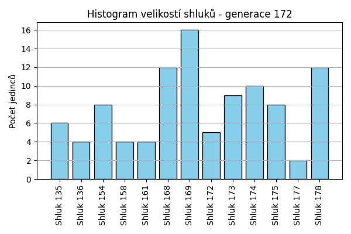
Stabilita mezi generací 171 → 172:
Shluk 173 → 173: 6 jedinců (42.9 %)
Shluk 173 → 154: 4 jedinců (28.6 %)
Shluk 173 → 174: 1 jedinců (7.1 %)
Shluk 173 → 178: 1 jedinců (7.1 %)
Shluk 173 → 168: 1 jedinců (7.1 %)
Shluk 173 → 169: 1 jedinců (7.1 %)
Shluk 135 → 135: 5 jedinců (100.0 %)
Shluk 161 → 172: 1 jedinců (10.0 %)
Shluk 161 → 175: 1 jedinců (10.0 %)
Shluk 161 → 158: 1 jedinců (10.0 %)
Shluk 161 → 169: 3 jedinců (30.0 %)
Shluk 161 → 161: 3 jedinců (30.0 %)
Shluk 161 → 178: 1 jedinců (10.0 %)
Shluk 176 → 168: 4 jedinců (40.0 %)
Shluk 176 → 135: 1 jedinců (10.0 %)
Shluk 176 → 174: 2 jedinců (20.0 %)
Shluk 176 → 175: 1 jedinců (10.0 %)
Shluk 176 → 178: 2 jedinců (20.0 %)
Shluk 136 → 154: 1 jedinců (12.5 %)
Shluk 136 → 178: 2 jedinců (25.0 %)
Shluk 136 → 174: 2 jedinců (25.0 %)
Shluk 136 → 136: 2 jedinců (25.0 %)
Shluk 136 → 169: 1 jedinců (12.5 %)
Shluk 172 → 175: 2 jedinců (18.2 %)
Shluk 172 → 172: 4 jedinců (36.4 %)
Shluk 172 → 169: 2 jedinců (18.2 %)
Shluk 172 → 178: 2 jedinců (18.2 %)
Shluk 172 → 174: 1 jedinců (9.1 %)
Shluk 158 → 173: 1 jedinců (16.7 %)
Shluk 158 → 158: 3 jedinců (50.0 %)
Shluk 158 → 161: 1 jedinců (16.7 %)
Shluk 158 → 136: 1 jedinců (16.7 %)
Shluk 175 → 136: 1 jedinců (25.0 %)
Shluk 175 → 175: 3 jedinců (75.0 %)
Shluk 169 → 169: 5 jedinců (83.3 %)
Shluk 169 → 178: 1 jedinců (16.7 %)
Shluk 154 → 177: 1 jedinců (20.0 %)
Shluk 154 → 154: 3 jedinců (60.0 %)
Shluk 154 → 169: 1 jedinců (20.0 %)
Shluk 168 → 178: 1 jedinců (20.0 %)
Shluk 168 → 168: 4 jedinců (80.0 %)
Shluk 150 → 174: 1 jedinců (11.1 %)
Shluk 150 → 168: 3 jedinců (33.3 %)
Shluk 150 → 178: 2 jedinců (22.2 %)
Shluk 150 → 169: 1 jedinců (11.1 %)
Shluk 150 → 177: 1 jedinců (11.1 %)
Shluk 150 → 175: 1 jedinců (11.1 %)
Shluk 174 → 174: 3 jedinců (42.9 %)
Shluk 174 → 173: 2 jedinců (28.6 %)
Shluk 174 → 169: 2 jedinců (28.6 %)
Jaccardovo mapování a overlap: Generace 171 → 172
- Shluk 173 → 173 (Jaccard: 0.35, Overlap: 0.67)
- Shluk 135 → 135 (Jaccard: 0.83, Overlap: 1.00)
- Shluk 161 → 161 (Jaccard: 0.27, Overlap: 0.75)
- Shluk 176 → 168 (Jaccard: 0.22, Overlap: 0.40)
- Shluk 136 → 136 (Jaccard: 0.20, Overlap: 0.50)
- Shluk 172 → 172 (Jaccard: 0.33, Overlap: 0.80)
- Shluk 158 → 158 (Jaccard: 0.43, Overlap: 0.75)
- Shluk 175 → 175 (Jaccard: 0.33, Overlap: 0.75)
- Shluk 169 → 169 (Jaccard: 0.29, Overlap: 0.83)
- Shluk 154 → 154 (Jaccard: 0.30, Overlap: 0.60)
- Shluk 168 → 168 (Jaccard: 0.31, Overlap: 0.80)
- Shluk 150 → 168 (Jaccard: 0.17, Overlap: 0.33)
- Shluk 174 → 174 (Jaccard: 0.21, Overlap: 0.43)
Posun centroidů mezi generací 171 → 172:
- Shluk 0: 13.9665
- Shluk 1: 12.7321
- Shluk 2: 17.6433
- Shluk 3: 14.1580
- Shluk 4: 20.3669
- Shluk 5: 20.5051
- Shluk 6: 13.0262
- Shluk 7: 14.7720
- Shluk 8: 14.0920
- Shluk 9: 23.4160
- Shluk 10: 17.8242
- Shluk 11: 18.5086
- Shluk 12: 23.2112
Generace 173
Stabilita mezi generací 172 → 173:
Shluk 173 → 161: 1 jedinců (11.1 %)
Shluk 173 → 154: 4 jedinců (44.4 %)
Shluk 173 → 179: 2 jedinců (22.2 %)
Shluk 173 → 180: 2 jedinců (22.2 %)
Shluk 135 → 178: 1 jedinců (16.7 %)
Shluk 135 → 135: 4 jedinců (66.7 %)
Shluk 135 → 158: 1 jedinců (16.7 %)
Shluk 172 → 179: 1 jedinců (20.0 %)
Shluk 172 → 169: 2 jedinců (40.0 %)
Shluk 172 → 136: 1 jedinců (20.0 %)
Shluk 172 → 161: 1 jedinců (20.0 %)
Shluk 168 → 168: 4 jedinců (33.3 %)
Shluk 168 → 158: 1 jedinců (8.3 %)
Shluk 168 → 135: 2 jedinců (16.7 %)
Shluk 168 → 178: 5 jedinců (41.7 %)
Shluk 154 → 135: 1 jedinců (12.5 %)
Shluk 154 → 154: 4 jedinců (50.0 %)
Shluk 154 → 168: 1 jedinců (12.5 %)
Shluk 154 → 179: 1 jedinců (12.5 %)
Shluk 154 → 178: 1 jedinců (12.5 %)
Shluk 175 → 168: 2 jedinců (25.0 %)
Shluk 175 → 175: 4 jedinců (50.0 %)
Shluk 175 → 135: 1 jedinců (12.5 %)
Shluk 175 → 174: 1 jedinců (12.5 %)
Shluk 158 → 161: 1 jedinců (25.0 %)
Shluk 158 → 169: 1 jedinců (25.0 %)
Shluk 158 → 158: 1 jedinců (25.0 %)
Shluk 158 → 135: 1 jedinců (25.0 %)
Shluk 136 → 180: 1 jedinců (25.0 %)
Shluk 136 → 136: 3 jedinců (75.0 %)
Shluk 169 → 154: 3 jedinců (18.8 %)
Shluk 169 → 136: 2 jedinců (12.5 %)
Shluk 169 → 180: 1 jedinců (6.2 %)
Shluk 169 → 161: 3 jedinců (18.8 %)
Shluk 169 → 169: 5 jedinců (31.2 %)
Shluk 169 → 178: 1 jedinců (6.2 %)
Shluk 169 → 135: 1 jedinců (6.2 %)
Shluk 177 → 135: 1 jedinců (50.0 %)
Shluk 177 → 136: 1 jedinců (50.0 %)
Shluk 178 → 136: 5 jedinců (41.7 %)
Shluk 178 → 178: 6 jedinců (50.0 %)
Shluk 178 → 161: 1 jedinců (8.3 %)
Shluk 174 → 174: 6 jedinců (60.0 %)
Shluk 174 → 168: 1 jedinců (10.0 %)
Shluk 174 → 158: 1 jedinců (10.0 %)
Shluk 174 → 169: 2 jedinců (20.0 %)
Shluk 161 → 161: 3 jedinců (75.0 %)
Shluk 161 → 179: 1 jedinců (25.0 %)
Jaccardovo mapování a overlap: Generace 172 → 173
- Shluk 173 → 154 (Jaccard: 0.25, Overlap: 0.44)
- Shluk 135 → 135 (Jaccard: 0.31, Overlap: 0.67)
- Shluk 172 → 169 (Jaccard: 0.15, Overlap: 0.40)
- Shluk 168 → 168 (Jaccard: 0.25, Overlap: 0.50)
- Shluk 154 → 154 (Jaccard: 0.27, Overlap: 0.50)
- Shluk 175 → 175 (Jaccard: 0.50, Overlap: 1.00)
- Shluk 158 → 158 (Jaccard: 0.14, Overlap: 0.25)
- Shluk 136 → 136 (Jaccard: 0.23, Overlap: 0.75)
- Shluk 169 → 169 (Jaccard: 0.24, Overlap: 0.50)
- Shluk 177 → 135 (Jaccard: 0.08, Overlap: 0.50)
- Shluk 178 → 178 (Jaccard: 0.30, Overlap: 0.50)
- Shluk 174 → 174 (Jaccard: 0.55, Overlap: 0.86)
- Shluk 161 → 161 (Jaccard: 0.27, Overlap: 0.75)
Posun centroidů mezi generací 172 → 173:
- Shluk 0: 13.4296
- Shluk 1: 11.6889
- Shluk 2: 16.2227
- Shluk 3: 14.0278
- Shluk 4: 18.8091
- Shluk 5: 17.5194
- Shluk 6: 15.9412
- Shluk 7: 18.9441
- Shluk 8: 9.3757
- Shluk 9: 24.0731
- Shluk 10: 15.9875
- Shluk 11: 19.5291
Generace 174
Stabilita mezi generací 173 → 174:
Shluk 161 → 161: 6 jedinců (60.0 %)
Shluk 161 → 183: 3 jedinců (30.0 %)
Shluk 161 → 135: 1 jedinců (10.0 %)
Shluk 178 → 181: 3 jedinců (21.4 %)
Shluk 178 → 180: 2 jedinců (14.3 %)
Shluk 178 → 135: 3 jedinců (21.4 %)
Shluk 178 → 178: 4 jedinců (28.6 %)
Shluk 178 → 136: 1 jedinců (7.1 %)
Shluk 178 → 183: 1 jedinců (7.1 %)
Shluk 179 → 182: 1 jedinců (20.0 %)
Shluk 179 → 179: 4 jedinců (80.0 %)
Shluk 168 → 168: 5 jedinců (62.5 %)
Shluk 168 → 182: 2 jedinců (25.0 %)
Shluk 168 → 183: 1 jedinců (12.5 %)
Shluk 154 → 154: 5 jedinců (45.5 %)
Shluk 154 → 180: 1 jedinců (9.1 %)
Shluk 154 → 182: 3 jedinců (27.3 %)
Shluk 154 → 135: 1 jedinců (9.1 %)
Shluk 154 → 181: 1 jedinců (9.1 %)
Shluk 135 → 182: 2 jedinců (18.2 %)
Shluk 135 → 181: 1 jedinců (9.1 %)
Shluk 135 → 135: 6 jedinců (54.5 %)
Shluk 135 → 180: 1 jedinců (9.1 %)
Shluk 135 → 174: 1 jedinců (9.1 %)
Shluk 180 → 154: 2 jedinců (50.0 %)
Shluk 180 → 180: 2 jedinců (50.0 %)
Shluk 169 → 169: 8 jedinců (80.0 %)
Shluk 169 → 182: 1 jedinců (10.0 %)
Shluk 169 → 136: 1 jedinců (10.0 %)
Shluk 136 → 136: 5 jedinců (41.7 %)
Shluk 136 → 154: 1 jedinců (8.3 %)
Shluk 136 → 183: 3 jedinců (25.0 %)
Shluk 136 → 181: 2 jedinců (16.7 %)
Shluk 136 → 135: 1 jedinců (8.3 %)
Shluk 158 → 175: 1 jedinců (25.0 %)
Shluk 158 → 179: 1 jedinců (25.0 %)
Shluk 158 → 169: 1 jedinců (25.0 %)
Shluk 158 → 182: 1 jedinců (25.0 %)
Shluk 174 → 174: 6 jedinců (85.7 %)
Shluk 174 → 181: 1 jedinců (14.3 %)
Shluk 175 → 175: 4 jedinců (100.0 %)
Jaccardovo mapování a overlap: Generace 173 → 174
- Shluk 161 → 161 (Jaccard: 0.60, Overlap: 1.00)
- Shluk 178 → 178 (Jaccard: 0.29, Overlap: 1.00)
- Shluk 179 → 179 (Jaccard: 0.67, Overlap: 0.80)
- Shluk 168 → 168 (Jaccard: 0.62, Overlap: 1.00)
- Shluk 154 → 154 (Jaccard: 0.36, Overlap: 0.62)
- Shluk 135 → 135 (Jaccard: 0.35, Overlap: 0.55)
- Shluk 180 → 180 (Jaccard: 0.25, Overlap: 0.50)
- Shluk 169 → 169 (Jaccard: 0.73, Overlap: 0.89)
- Shluk 136 → 136 (Jaccard: 0.36, Overlap: 0.71)
- Shluk 158 → 175 (Jaccard: 0.12, Overlap: 0.25)
- Shluk 174 → 174 (Jaccard: 0.75, Overlap: 0.86)
- Shluk 175 → 175 (Jaccard: 0.80, Overlap: 1.00)
Posun centroidů mezi generací 173 → 174:
- Shluk 0: 14.1392
- Shluk 1: 11.2538
- Shluk 2: 9.3613
- Shluk 3: 14.8436
- Shluk 4: 13.4208
- Shluk 5: 21.0844
- Shluk 6: 15.8634
- Shluk 7: 16.7771
- Shluk 8: 13.3936
- Shluk 9: 14.9892
- Shluk 10: 17.6853
- Shluk 11: 15.3492
Generace 175
Stabilita mezi generací 174 → 175:
Shluk 161 → 154: 1 jedinců (16.7 %)
Shluk 161 → 161: 5 jedinců (83.3 %)
Shluk 181 → 182: 1 jedinců (12.5 %)
Shluk 181 → 181: 5 jedinců (62.5 %)
Shluk 181 → 174: 2 jedinců (25.0 %)
Shluk 182 → 182: 4 jedinců (40.0 %)
Shluk 182 → 183: 1 jedinců (10.0 %)
Shluk 182 → 154: 3 jedinců (30.0 %)
Shluk 182 → 136: 1 jedinců (10.0 %)
Shluk 182 → 185: 1 jedinců (10.0 %)
Shluk 168 → 168: 4 jedinců (80.0 %)
Shluk 168 → 154: 1 jedinců (20.0 %)
Shluk 154 → 184: 2 jedinců (25.0 %)
Shluk 154 → 154: 5 jedinců (62.5 %)
Shluk 154 → 135: 1 jedinců (12.5 %)
Shluk 180 → 178: 2 jedinců (33.3 %)
Shluk 180 → 154: 2 jedinců (33.3 %)
Shluk 180 → 174: 1 jedinců (16.7 %)
Shluk 180 → 185: 1 jedinců (16.7 %)
Shluk 169 → 184: 1 jedinců (11.1 %)
Shluk 169 → 169: 5 jedinců (55.6 %)
Shluk 169 → 154: 2 jedinců (22.2 %)
Shluk 169 → 185: 1 jedinců (11.1 %)
Shluk 135 → 135: 9 jedinců (75.0 %)
Shluk 135 → 185: 2 jedinců (16.7 %)
Shluk 135 → 161: 1 jedinců (8.3 %)
Shluk 136 → 136: 5 jedinců (71.4 %)
Shluk 136 → 169: 1 jedinců (14.3 %)
Shluk 136 → 184: 1 jedinců (14.3 %)
Shluk 175 → 135: 1 jedinců (20.0 %)
Shluk 175 → 136: 2 jedinců (40.0 %)
Shluk 175 → 174: 1 jedinců (20.0 %)
Shluk 175 → 184: 1 jedinců (20.0 %)
Shluk 179 → 181: 1 jedinců (20.0 %)
Shluk 179 → 174: 1 jedinců (20.0 %)
Shluk 179 → 178: 1 jedinců (20.0 %)
Shluk 179 → 182: 2 jedinců (40.0 %)
Shluk 174 → 174: 6 jedinců (85.7 %)
Shluk 174 → 136: 1 jedinců (14.3 %)
Shluk 183 → 161: 1 jedinců (12.5 %)
Shluk 183 → 181: 2 jedinců (25.0 %)
Shluk 183 → 183: 3 jedinců (37.5 %)
Shluk 183 → 185: 1 jedinců (12.5 %)
Shluk 183 → 135: 1 jedinců (12.5 %)
Shluk 178 → 178: 3 jedinců (75.0 %)
Shluk 178 → 154: 1 jedinců (25.0 %)
Jaccardovo mapování a overlap: Generace 174 → 175
- Shluk 161 → 161 (Jaccard: 0.62, Overlap: 0.83)
- Shluk 181 → 181 (Jaccard: 0.45, Overlap: 0.62)
- Shluk 182 → 182 (Jaccard: 0.31, Overlap: 0.57)
- Shluk 168 → 168 (Jaccard: 0.80, Overlap: 1.00)
- Shluk 154 → 154 (Jaccard: 0.28, Overlap: 0.62)
- Shluk 180 → 178 (Jaccard: 0.20, Overlap: 0.33)
- Shluk 169 → 169 (Jaccard: 0.50, Overlap: 0.83)
- Shluk 135 → 135 (Jaccard: 0.60, Overlap: 0.75)
- Shluk 136 → 136 (Jaccard: 0.45, Overlap: 0.71)
- Shluk 175 → 136 (Jaccard: 0.17, Overlap: 0.40)
- Shluk 179 → 182 (Jaccard: 0.20, Overlap: 0.40)
- Shluk 174 → 174 (Jaccard: 0.50, Overlap: 0.86)
- Shluk 183 → 183 (Jaccard: 0.33, Overlap: 0.75)
- Shluk 178 → 178 (Jaccard: 0.43, Overlap: 0.75)
Posun centroidů mezi generací 174 → 175:
- Shluk 0: 11.0110
- Shluk 1: 10.9132
- Shluk 2: 13.9025
- Shluk 3: 12.4790
- Shluk 4: 13.7675
- Shluk 5: 15.8469
- Shluk 6: 13.2011
- Shluk 7: 17.2829
- Shluk 8: 13.9782
- Shluk 9: 17.1001
- Shluk 10: 19.9365
- Shluk 11: 15.5455
- Shluk 12: 13.7351
Generace 176
Stabilita mezi generací 175 → 176:
Shluk 154 → 154: 8 jedinců (53.3 %)
Shluk 154 → 178: 2 jedinců (13.3 %)
Shluk 154 → 183: 2 jedinců (13.3 %)
Shluk 154 → 135: 1 jedinců (6.7 %)
Shluk 154 → 161: 1 jedinců (6.7 %)
Shluk 154 → 181: 1 jedinců (6.7 %)
Shluk 182 → 182: 4 jedinců (57.1 %)
Shluk 182 → 161: 1 jedinců (14.3 %)
Shluk 182 → 154: 1 jedinců (14.3 %)
Shluk 182 → 184: 1 jedinců (14.3 %)
Shluk 168 → 168: 3 jedinců (75.0 %)
Shluk 168 → 169: 1 jedinců (25.0 %)
Shluk 184 → 184: 2 jedinců (40.0 %)
Shluk 184 → 169: 1 jedinců (20.0 %)
Shluk 184 → 154: 1 jedinců (20.0 %)
Shluk 184 → 182: 1 jedinců (20.0 %)
Shluk 183 → 183: 4 jedinců (100.0 %)
Shluk 178 → 178: 5 jedinců (83.3 %)
Shluk 178 → 184: 1 jedinců (16.7 %)
Shluk 161 → 181: 1 jedinců (14.3 %)
Shluk 161 → 161: 3 jedinců (42.9 %)
Shluk 161 → 168: 2 jedinců (28.6 %)
Shluk 161 → 183: 1 jedinců (14.3 %)
Shluk 181 → 181: 6 jedinců (75.0 %)
Shluk 181 → 182: 2 jedinců (25.0 %)
Shluk 135 → 135: 11 jedinců (91.7 %)
Shluk 135 → 181: 1 jedinců (8.3 %)
Shluk 136 → 183: 2 jedinců (22.2 %)
Shluk 136 → 184: 2 jedinců (22.2 %)
Shluk 136 → 182: 1 jedinců (11.1 %)
Shluk 136 → 154: 3 jedinců (33.3 %)
Shluk 136 → 135: 1 jedinců (11.1 %)
Shluk 174 → 174: 7 jedinců (63.6 %)
Shluk 174 → 169: 1 jedinců (9.1 %)
Shluk 174 → 178: 2 jedinců (18.2 %)
Shluk 174 → 181: 1 jedinců (9.1 %)
Shluk 169 → 169: 3 jedinců (50.0 %)
Shluk 169 → 154: 1 jedinců (16.7 %)
Shluk 169 → 184: 1 jedinců (16.7 %)
Shluk 169 → 178: 1 jedinců (16.7 %)
Shluk 185 → 154: 1 jedinců (16.7 %)
Shluk 185 → 135: 4 jedinců (66.7 %)
Shluk 185 → 178: 1 jedinců (16.7 %)
Jaccardovo mapování a overlap: Generace 175 → 176
- Shluk 154 → 154 (Jaccard: 0.36, Overlap: 0.53)
- Shluk 182 → 182 (Jaccard: 0.36, Overlap: 0.57)
- Shluk 168 → 168 (Jaccard: 0.50, Overlap: 0.75)
- Shluk 184 → 184 (Jaccard: 0.20, Overlap: 0.40)
- Shluk 183 → 183 (Jaccard: 0.44, Overlap: 1.00)
- Shluk 178 → 178 (Jaccard: 0.42, Overlap: 0.83)
- Shluk 161 → 161 (Jaccard: 0.33, Overlap: 0.60)
- Shluk 181 → 181 (Jaccard: 0.50, Overlap: 0.75)
- Shluk 135 → 135 (Jaccard: 0.61, Overlap: 0.92)
- Shluk 136 → 154 (Jaccard: 0.14, Overlap: 0.33)
- Shluk 174 → 174 (Jaccard: 0.64, Overlap: 1.00)
- Shluk 169 → 169 (Jaccard: 0.33, Overlap: 0.50)
- Shluk 185 → 135 (Jaccard: 0.21, Overlap: 0.67)
Posun centroidů mezi generací 175 → 176:
- Shluk 0: 13.6201
- Shluk 1: 13.9692
- Shluk 2: 11.7706
- Shluk 3: 12.1493
- Shluk 4: 12.5950
- Shluk 5: 13.4029
- Shluk 6: 17.0271
- Shluk 7: 12.2627
- Shluk 8: 12.7774
- Shluk 9: 14.9665
- Shluk 10: 13.8398
Generace 177
Stabilita mezi generací 176 → 177:
Shluk 154 → 161: 1 jedinců (6.7 %)
Shluk 154 → 174: 4 jedinců (26.7 %)
Shluk 154 → 184: 1 jedinců (6.7 %)
Shluk 154 → 154: 8 jedinců (53.3 %)
Shluk 154 → 168: 1 jedinců (6.7 %)
Shluk 182 → 174: 3 jedinců (37.5 %)
Shluk 182 → 168: 2 jedinců (25.0 %)
Shluk 182 → 183: 2 jedinců (25.0 %)
Shluk 182 → 181: 1 jedinců (12.5 %)
Shluk 168 → 135: 1 jedinců (20.0 %)
Shluk 168 → 168: 4 jedinců (80.0 %)
Shluk 184 → 184: 5 jedinců (71.4 %)
Shluk 184 → 181: 1 jedinců (14.3 %)
Shluk 184 → 169: 1 jedinců (14.3 %)
Shluk 183 → 186: 3 jedinců (33.3 %)
Shluk 183 → 169: 1 jedinců (11.1 %)
Shluk 183 → 183: 4 jedinců (44.4 %)
Shluk 183 → 168: 1 jedinců (11.1 %)
Shluk 178 → 174: 3 jedinců (27.3 %)
Shluk 178 → 178: 6 jedinců (54.5 %)
Shluk 178 → 135: 2 jedinců (18.2 %)
Shluk 181 → 181: 7 jedinců (70.0 %)
Shluk 181 → 183: 1 jedinců (10.0 %)
Shluk 181 → 154: 1 jedinců (10.0 %)
Shluk 181 → 174: 1 jedinců (10.0 %)
Shluk 169 → 181: 1 jedinců (16.7 %)
Shluk 169 → 154: 1 jedinců (16.7 %)
Shluk 169 → 169: 3 jedinců (50.0 %)
Shluk 169 → 168: 1 jedinců (16.7 %)
Shluk 161 → 161: 4 jedinců (80.0 %)
Shluk 161 → 168: 1 jedinců (20.0 %)
Shluk 135 → 187: 4 jedinců (23.5 %)
Shluk 135 → 135: 5 jedinců (29.4 %)
Shluk 135 → 186: 3 jedinců (17.6 %)
Shluk 135 → 183: 2 jedinců (11.8 %)
Shluk 135 → 161: 1 jedinců (5.9 %)
Shluk 135 → 181: 1 jedinců (5.9 %)
Shluk 135 → 154: 1 jedinců (5.9 %)
Shluk 174 → 174: 4 jedinců (57.1 %)
Shluk 174 → 186: 1 jedinců (14.3 %)
Shluk 174 → 181: 1 jedinců (14.3 %)
Shluk 174 → 135: 1 jedinců (14.3 %)
Jaccardovo mapování a overlap: Generace 176 → 177
- Shluk 154 → 154 (Jaccard: 0.44, Overlap: 0.73)
- Shluk 182 → 174 (Jaccard: 0.15, Overlap: 0.38)
- Shluk 168 → 168 (Jaccard: 0.36, Overlap: 0.80)
- Shluk 184 → 184 (Jaccard: 0.62, Overlap: 0.83)
- Shluk 183 → 183 (Jaccard: 0.29, Overlap: 0.44)
- Shluk 178 → 178 (Jaccard: 0.55, Overlap: 1.00)
- Shluk 181 → 181 (Jaccard: 0.47, Overlap: 0.70)
- Shluk 169 → 169 (Jaccard: 0.38, Overlap: 0.60)
- Shluk 161 → 161 (Jaccard: 0.57, Overlap: 0.80)
- Shluk 135 → 135 (Jaccard: 0.24, Overlap: 0.56)
- Shluk 174 → 174 (Jaccard: 0.22, Overlap: 0.57)
Posun centroidů mezi generací 176 → 177:
- Shluk 0: 11.2336
- Shluk 1: 11.3713
- Shluk 2: 13.6728
- Shluk 3: 10.7309
- Shluk 4: 11.1206
- Shluk 5: 15.9705
- Shluk 6: 9.4813
- Shluk 7: 4.2617
- Shluk 8: 11.3795
- Shluk 9: 15.3720
- Shluk 10: 10.6219
Generace 178
Stabilita mezi generací 177 → 178:
Shluk 161 → 178: 2 jedinců (33.3 %)
Shluk 161 → 189: 1 jedinců (16.7 %)
Shluk 161 → 187: 1 jedinců (16.7 %)
Shluk 161 → 188: 1 jedinců (16.7 %)
Shluk 161 → 183: 1 jedinců (16.7 %)
Shluk 174 → 183: 2 jedinců (13.3 %)
Shluk 174 → 174: 4 jedinců (26.7 %)
Shluk 174 → 190: 2 jedinců (13.3 %)
Shluk 174 → 184: 4 jedinců (26.7 %)
Shluk 174 → 135: 1 jedinců (6.7 %)
Shluk 174 → 154: 2 jedinců (13.3 %)
Shluk 168 → 154: 1 jedinců (10.0 %)
Shluk 168 → 168: 4 jedinců (40.0 %)
Shluk 168 → 183: 1 jedinců (10.0 %)
Shluk 168 → 189: 2 jedinců (20.0 %)
Shluk 168 → 181: 1 jedinců (10.0 %)
Shluk 168 → 188: 1 jedinců (10.0 %)
Shluk 135 → 135: 3 jedinců (33.3 %)
Shluk 135 → 174: 1 jedinců (11.1 %)
Shluk 135 → 168: 2 jedinců (22.2 %)
Shluk 135 → 178: 2 jedinců (22.2 %)
Shluk 135 → 188: 1 jedinců (11.1 %)
Shluk 184 → 184: 2 jedinců (33.3 %)
Shluk 184 → 183: 2 jedinců (33.3 %)
Shluk 184 → 188: 1 jedinců (16.7 %)
Shluk 184 → 154: 1 jedinců (16.7 %)
Shluk 186 → 186: 3 jedinců (42.9 %)
Shluk 186 → 168: 3 jedinců (42.9 %)
Shluk 186 → 178: 1 jedinců (14.3 %)
Shluk 181 → 181: 4 jedinců (33.3 %)
Shluk 181 → 188: 3 jedinců (25.0 %)
Shluk 181 → 183: 2 jedinců (16.7 %)
Shluk 181 → 178: 1 jedinců (8.3 %)
Shluk 181 → 168: 2 jedinců (16.7 %)
Shluk 178 → 178: 3 jedinců (50.0 %)
Shluk 178 → 154: 3 jedinců (50.0 %)
Shluk 169 → 135: 1 jedinců (20.0 %)
Shluk 169 → 187: 1 jedinců (20.0 %)
Shluk 169 → 184: 1 jedinců (20.0 %)
Shluk 169 → 154: 2 jedinců (40.0 %)
Shluk 187 → 187: 4 jedinců (100.0 %)
Shluk 183 → 190: 1 jedinců (11.1 %)
Shluk 183 → 183: 4 jedinců (44.4 %)
Shluk 183 → 189: 2 jedinců (22.2 %)
Shluk 183 → 174: 1 jedinců (11.1 %)
Shluk 183 → 181: 1 jedinců (11.1 %)
Shluk 154 → 178: 1 jedinců (9.1 %)
Shluk 154 → 154: 7 jedinců (63.6 %)
Shluk 154 → 190: 3 jedinců (27.3 %)
Jaccardovo mapování a overlap: Generace 177 → 178
- Shluk 161 → 178 (Jaccard: 0.14, Overlap: 0.33)
- Shluk 174 → 174 (Jaccard: 0.24, Overlap: 0.67)
- Shluk 168 → 168 (Jaccard: 0.24, Overlap: 0.40)
- Shluk 135 → 135 (Jaccard: 0.27, Overlap: 0.60)
- Shluk 184 → 184 (Jaccard: 0.18, Overlap: 0.33)
- Shluk 186 → 186 (Jaccard: 0.43, Overlap: 1.00)
- Shluk 181 → 181 (Jaccard: 0.29, Overlap: 0.67)
- Shluk 178 → 178 (Jaccard: 0.23, Overlap: 0.50)
- Shluk 169 → 135 (Jaccard: 0.11, Overlap: 0.20)
- Shluk 187 → 187 (Jaccard: 0.67, Overlap: 1.00)
- Shluk 183 → 183 (Jaccard: 0.24, Overlap: 0.44)
- Shluk 154 → 154 (Jaccard: 0.35, Overlap: 0.64)
Posun centroidů mezi generací 177 → 178:
- Shluk 0: 7.5884
- Shluk 1: 14.3413
- Shluk 2: 9.2955
- Shluk 3: 12.1679
- Shluk 4: 15.4142
- Shluk 5: 9.1208
- Shluk 6: 2.7988
- Shluk 7: 16.5447
- Shluk 8: 13.4256
- Shluk 9: 14.2582
- Shluk 10: 16.0217
- Shluk 11: 11.4156
Generace 179
Stabilita mezi generací 178 → 179:
Shluk 178 → 178: 5 jedinců (50.0 %)
Shluk 178 → 154: 2 jedinců (20.0 %)
Shluk 178 → 184: 1 jedinců (10.0 %)
Shluk 178 → 186: 1 jedinců (10.0 %)
Shluk 178 → 188: 1 jedinců (10.0 %)
Shluk 183 → 190: 2 jedinců (16.7 %)
Shluk 183 → 189: 1 jedinců (8.3 %)
Shluk 183 → 183: 4 jedinců (33.3 %)
Shluk 183 → 178: 2 jedinců (16.7 %)
Shluk 183 → 188: 3 jedinců (25.0 %)
Shluk 154 → 154: 7 jedinců (43.8 %)
Shluk 154 → 190: 6 jedinců (37.5 %)
Shluk 154 → 189: 2 jedinců (12.5 %)
Shluk 154 → 178: 1 jedinců (6.2 %)
Shluk 135 → 183: 1 jedinců (20.0 %)
Shluk 135 → 181: 1 jedinců (20.0 %)
Shluk 135 → 188: 1 jedinců (20.0 %)
Shluk 135 → 187: 1 jedinců (20.0 %)
Shluk 135 → 190: 1 jedinců (20.0 %)
Shluk 184 → 188: 1 jedinců (14.3 %)
Shluk 184 → 184: 5 jedinců (71.4 %)
Shluk 184 → 174: 1 jedinců (14.3 %)
Shluk 186 → 186: 2 jedinců (66.7 %)
Shluk 186 → 190: 1 jedinců (33.3 %)
Shluk 168 → 168: 5 jedinců (45.5 %)
Shluk 168 → 186: 5 jedinců (45.5 %)
Shluk 168 → 188: 1 jedinců (9.1 %)
Shluk 174 → 190: 2 jedinců (33.3 %)
Shluk 174 → 178: 1 jedinců (16.7 %)
Shluk 174 → 174: 2 jedinců (33.3 %)
Shluk 174 → 188: 1 jedinců (16.7 %)
Shluk 181 → 181: 4 jedinců (66.7 %)
Shluk 181 → 183: 1 jedinců (16.7 %)
Shluk 181 → 186: 1 jedinců (16.7 %)
Shluk 188 → 188: 7 jedinců (100.0 %)
Shluk 189 → 183: 1 jedinců (20.0 %)
Shluk 189 → 189: 3 jedinců (60.0 %)
Shluk 189 → 178: 1 jedinců (20.0 %)
Shluk 187 → 187: 4 jedinců (66.7 %)
Shluk 187 → 190: 1 jedinců (16.7 %)
Shluk 187 → 174: 1 jedinců (16.7 %)
Shluk 190 → 190: 4 jedinců (66.7 %)
Shluk 190 → 186: 1 jedinců (16.7 %)
Shluk 190 → 188: 1 jedinců (16.7 %)
Jaccardovo mapování a overlap: Generace 178 → 179
- Shluk 178 → 178 (Jaccard: 0.33, Overlap: 0.50)
- Shluk 183 → 183 (Jaccard: 0.27, Overlap: 0.57)
- Shluk 154 → 154 (Jaccard: 0.39, Overlap: 0.78)
- Shluk 135 → 181 (Jaccard: 0.11, Overlap: 0.20)
- Shluk 184 → 184 (Jaccard: 0.62, Overlap: 0.83)
- Shluk 186 → 186 (Jaccard: 0.18, Overlap: 0.67)
- Shluk 168 → 168 (Jaccard: 0.45, Overlap: 1.00)
- Shluk 174 → 174 (Jaccard: 0.25, Overlap: 0.50)
- Shluk 181 → 181 (Jaccard: 0.57, Overlap: 0.80)
- Shluk 188 → 188 (Jaccard: 0.44, Overlap: 1.00)
- Shluk 189 → 189 (Jaccard: 0.38, Overlap: 0.60)
- Shluk 187 → 187 (Jaccard: 0.57, Overlap: 0.80)
- Shluk 190 → 190 (Jaccard: 0.21, Overlap: 0.67)
Posun centroidů mezi generací 178 → 179:
- Shluk 0: 11.4482
- Shluk 1: 15.2206
- Shluk 2: 9.8773
- Shluk 3: 15.5015
- Shluk 4: 9.6892
- Shluk 5: 11.9000
- Shluk 6: 10.1613
- Shluk 7: 16.3785
- Shluk 8: 4.5710
- Shluk 9: 5.8695
- Shluk 10: 11.3911
- Shluk 11: 12.2787
Generace 180
Stabilita mezi generací 179 → 180:
Shluk 178 → 191: 2 jedinců (20.0 %)
Shluk 178 → 178: 5 jedinců (50.0 %)
Shluk 178 → 190: 1 jedinců (10.0 %)
Shluk 178 → 186: 1 jedinců (10.0 %)
Shluk 178 → 183: 1 jedinců (10.0 %)
Shluk 190 → 188: 2 jedinců (11.8 %)
Shluk 190 → 190: 6 jedinců (35.3 %)
Shluk 190 → 154: 3 jedinců (17.6 %)
Shluk 190 → 186: 1 jedinců (5.9 %)
Shluk 190 → 183: 1 jedinců (5.9 %)
Shluk 190 → 178: 3 jedinců (17.6 %)
Shluk 190 → 184: 1 jedinců (5.9 %)
Shluk 154 → 154: 7 jedinců (77.8 %)
Shluk 154 → 191: 2 jedinců (22.2 %)
Shluk 183 → 183: 5 jedinců (71.4 %)
Shluk 183 → 191: 1 jedinců (14.3 %)
Shluk 183 → 178: 1 jedinců (14.3 %)
Shluk 188 → 184: 3 jedinců (18.8 %)
Shluk 188 → 188: 6 jedinců (37.5 %)
Shluk 188 → 192: 3 jedinců (18.8 %)
Shluk 188 → 178: 2 jedinců (12.5 %)
Shluk 188 → 186: 2 jedinců (12.5 %)
Shluk 186 → 192: 2 jedinců (20.0 %)
Shluk 186 → 186: 4 jedinců (40.0 %)
Shluk 186 → 191: 1 jedinců (10.0 %)
Shluk 186 → 188: 1 jedinců (10.0 %)
Shluk 186 → 183: 1 jedinců (10.0 %)
Shluk 186 → 190: 1 jedinců (10.0 %)
Shluk 168 → 168: 4 jedinců (80.0 %)
Shluk 168 → 181: 1 jedinců (20.0 %)
Shluk 189 → 183: 1 jedinců (16.7 %)
Shluk 189 → 178: 2 jedinců (33.3 %)
Shluk 189 → 154: 3 jedinců (50.0 %)
Shluk 181 → 181: 3 jedinců (60.0 %)
Shluk 181 → 192: 1 jedinců (20.0 %)
Shluk 181 → 188: 1 jedinců (20.0 %)
Shluk 187 → 188: 2 jedinců (40.0 %)
Shluk 187 → 190: 1 jedinců (20.0 %)
Shluk 187 → 186: 2 jedinců (40.0 %)
Shluk 184 → 178: 2 jedinců (33.3 %)
Shluk 184 → 188: 2 jedinců (33.3 %)
Shluk 184 → 184: 2 jedinců (33.3 %)
Shluk 174 → 190: 1 jedinců (25.0 %)
Shluk 174 → 188: 3 jedinců (75.0 %)
Jaccardovo mapování a overlap: Generace 179 → 180
- Shluk 178 → 178 (Jaccard: 0.25, Overlap: 0.50)
- Shluk 190 → 190 (Jaccard: 0.29, Overlap: 0.60)
- Shluk 154 → 154 (Jaccard: 0.47, Overlap: 0.78)
- Shluk 183 → 183 (Jaccard: 0.45, Overlap: 0.71)
- Shluk 188 → 188 (Jaccard: 0.22, Overlap: 0.38)
- Shluk 186 → 186 (Jaccard: 0.25, Overlap: 0.40)
- Shluk 168 → 168 (Jaccard: 0.80, Overlap: 1.00)
- Shluk 189 → 154 (Jaccard: 0.19, Overlap: 0.50)
- Shluk 181 → 181 (Jaccard: 0.50, Overlap: 0.75)
- Shluk 187 → 186 (Jaccard: 0.15, Overlap: 0.40)
- Shluk 184 → 184 (Jaccard: 0.20, Overlap: 0.33)
- Shluk 174 → 188 (Jaccard: 0.17, Overlap: 0.75)
Posun centroidů mezi generací 179 → 180:
- Shluk 0: 11.0998
- Shluk 1: 9.3934
- Shluk 2: 6.4781
- Shluk 3: 12.4260
- Shluk 4: 10.3781
- Shluk 5: 14.2101
- Shluk 6: 11.5524
- Shluk 7: 12.8787
- Shluk 8: 12.3403
- Shluk 9: 14.8065
- Shluk 10: 12.0648
Generace 181
Stabilita mezi generací 180 → 181:
Shluk 191 → 178: 2 jedinců (33.3 %)
Shluk 191 → 183: 2 jedinců (33.3 %)
Shluk 191 → 193: 2 jedinců (33.3 %)
Shluk 188 → 193: 1 jedinců (5.9 %)
Shluk 188 → 181: 2 jedinců (11.8 %)
Shluk 188 → 192: 3 jedinců (17.6 %)
Shluk 188 → 183: 3 jedinců (17.6 %)
Shluk 188 → 188: 3 jedinců (17.6 %)
Shluk 188 → 178: 2 jedinců (11.8 %)
Shluk 188 → 184: 3 jedinců (17.6 %)
Shluk 154 → 154: 9 jedinců (69.2 %)
Shluk 154 → 190: 3 jedinců (23.1 %)
Shluk 154 → 183: 1 jedinců (7.7 %)
Shluk 183 → 183: 4 jedinců (44.4 %)
Shluk 183 → 181: 2 jedinců (22.2 %)
Shluk 183 → 188: 1 jedinců (11.1 %)
Shluk 183 → 184: 1 jedinců (11.1 %)
Shluk 183 → 186: 1 jedinců (11.1 %)
Shluk 184 → 186: 1 jedinců (16.7 %)
Shluk 184 → 184: 4 jedinců (66.7 %)
Shluk 184 → 178: 1 jedinců (16.7 %)
Shluk 192 → 193: 1 jedinců (16.7 %)
Shluk 192 → 192: 1 jedinců (16.7 %)
Shluk 192 → 181: 1 jedinců (16.7 %)
Shluk 192 → 168: 1 jedinců (16.7 %)
Shluk 192 → 186: 1 jedinců (16.7 %)
Shluk 192 → 183: 1 jedinců (16.7 %)
Shluk 168 → 181: 1 jedinců (25.0 %)
Shluk 168 → 168: 2 jedinců (50.0 %)
Shluk 168 → 183: 1 jedinců (25.0 %)
Shluk 190 → 183: 1 jedinců (10.0 %)
Shluk 190 → 190: 4 jedinců (40.0 %)
Shluk 190 → 184: 1 jedinců (10.0 %)
Shluk 190 → 193: 1 jedinců (10.0 %)
Shluk 190 → 168: 1 jedinců (10.0 %)
Shluk 190 → 192: 1 jedinců (10.0 %)
Shluk 190 → 188: 1 jedinců (10.0 %)
Shluk 181 → 188: 1 jedinců (25.0 %)
Shluk 181 → 181: 2 jedinců (50.0 %)
Shluk 181 → 192: 1 jedinců (25.0 %)
Shluk 178 → 193: 4 jedinců (26.7 %)
Shluk 178 → 168: 1 jedinců (6.7 %)
Shluk 178 → 186: 1 jedinců (6.7 %)
Shluk 178 → 190: 4 jedinců (26.7 %)
Shluk 178 → 178: 4 jedinců (26.7 %)
Shluk 178 → 183: 1 jedinců (6.7 %)
Shluk 186 → 168: 3 jedinců (30.0 %)
Shluk 186 → 186: 6 jedinců (60.0 %)
Shluk 186 → 183: 1 jedinců (10.0 %)
Jaccardovo mapování a overlap: Generace 180 → 181
- Shluk 191 → 178 (Jaccard: 0.15, Overlap: 0.33)
- Shluk 188 → 188 (Jaccard: 0.15, Overlap: 0.50)
- Shluk 154 → 154 (Jaccard: 0.69, Overlap: 1.00)
- Shluk 183 → 183 (Jaccard: 0.20, Overlap: 0.44)
- Shluk 184 → 184 (Jaccard: 0.36, Overlap: 0.67)
- Shluk 192 → 192 (Jaccard: 0.09, Overlap: 0.17)
- Shluk 168 → 168 (Jaccard: 0.20, Overlap: 0.50)
- Shluk 190 → 190 (Jaccard: 0.24, Overlap: 0.40)
- Shluk 181 → 181 (Jaccard: 0.20, Overlap: 0.50)
- Shluk 178 → 178 (Jaccard: 0.20, Overlap: 0.44)
- Shluk 186 → 186 (Jaccard: 0.43, Overlap: 0.60)
Posun centroidů mezi generací 180 → 181:
- Shluk 0: 7.5603
- Shluk 1: 8.0685
- Shluk 2: 4.8494
- Shluk 3: 10.7181
- Shluk 4: 9.1403
- Shluk 5: 13.4848
- Shluk 6: 11.0149
- Shluk 7: 8.7760
- Shluk 8: 10.9533
- Shluk 9: 9.8880
- Shluk 10: 9.8915
Generace 182
Stabilita mezi generací 181 → 182:
Shluk 178 → 188: 1 jedinců (11.1 %)
Shluk 178 → 178: 6 jedinců (66.7 %)
Shluk 178 → 193: 1 jedinců (11.1 %)
Shluk 178 → 181: 1 jedinců (11.1 %)
Shluk 193 → 193: 6 jedinců (66.7 %)
Shluk 193 → 181: 2 jedinců (22.2 %)
Shluk 193 → 168: 1 jedinců (11.1 %)
Shluk 154 → 183: 1 jedinců (11.1 %)
Shluk 154 → 154: 6 jedinců (66.7 %)
Shluk 154 → 168: 2 jedinců (22.2 %)
Shluk 183 → 154: 7 jedinců (46.7 %)
Shluk 183 → 183: 8 jedinců (53.3 %)
Shluk 186 → 168: 4 jedinců (40.0 %)
Shluk 186 → 183: 2 jedinců (20.0 %)
Shluk 186 → 193: 3 jedinců (30.0 %)
Shluk 186 → 178: 1 jedinců (10.0 %)
Shluk 181 → 181: 4 jedinců (50.0 %)
Shluk 181 → 183: 1 jedinců (12.5 %)
Shluk 181 → 190: 2 jedinců (25.0 %)
Shluk 181 → 178: 1 jedinců (12.5 %)
Shluk 188 → 188: 3 jedinců (50.0 %)
Shluk 188 → 181: 2 jedinců (33.3 %)
Shluk 188 → 183: 1 jedinců (16.7 %)
Shluk 192 → 178: 2 jedinců (33.3 %)
Shluk 192 → 193: 1 jedinců (16.7 %)
Shluk 192 → 154: 1 jedinců (16.7 %)
Shluk 192 → 181: 2 jedinců (33.3 %)
Shluk 190 → 190: 8 jedinců (72.7 %)
Shluk 190 → 181: 1 jedinců (9.1 %)
Shluk 190 → 188: 1 jedinců (9.1 %)
Shluk 190 → 154: 1 jedinců (9.1 %)
Shluk 168 → 168: 6 jedinců (75.0 %)
Shluk 168 → 188: 1 jedinců (12.5 %)
Shluk 168 → 181: 1 jedinců (12.5 %)
Shluk 184 → 183: 4 jedinců (44.4 %)
Shluk 184 → 154: 3 jedinců (33.3 %)
Shluk 184 → 181: 2 jedinců (22.2 %)
Jaccardovo mapování a overlap: Generace 181 → 182
- Shluk 178 → 178 (Jaccard: 0.46, Overlap: 0.67)
- Shluk 193 → 193 (Jaccard: 0.43, Overlap: 0.67)
- Shluk 154 → 154 (Jaccard: 0.29, Overlap: 0.67)
- Shluk 183 → 183 (Jaccard: 0.33, Overlap: 0.53)
- Shluk 186 → 168 (Jaccard: 0.21, Overlap: 0.40)
- Shluk 181 → 181 (Jaccard: 0.21, Overlap: 0.50)
- Shluk 188 → 188 (Jaccard: 0.33, Overlap: 0.50)
- Shluk 192 → 178 (Jaccard: 0.14, Overlap: 0.33)
- Shluk 190 → 190 (Jaccard: 0.62, Overlap: 0.80)
- Shluk 168 → 168 (Jaccard: 0.40, Overlap: 0.75)
- Shluk 184 → 183 (Jaccard: 0.18, Overlap: 0.44)
Posun centroidů mezi generací 181 → 182:
- Shluk 0: 10.0907
- Shluk 1: 8.7072
- Shluk 2: 7.2970
- Shluk 3: 9.3018
- Shluk 4: 6.6731
- Shluk 5: 10.3180
- Shluk 6: 6.9474
- Shluk 7: 9.2025
Generace 183
Stabilita mezi generací 182 → 183:
Shluk 188 → 183: 1 jedinců (16.7 %)
Shluk 188 → 188: 5 jedinců (83.3 %)
Shluk 193 → 194: 4 jedinců (36.4 %)
Shluk 193 → 193: 6 jedinců (54.5 %)
Shluk 193 → 183: 1 jedinců (9.1 %)
Shluk 183 → 183: 9 jedinců (52.9 %)
Shluk 183 → 193: 1 jedinců (5.9 %)
Shluk 183 → 194: 1 jedinců (5.9 %)
Shluk 183 → 181: 4 jedinců (23.5 %)
Shluk 183 → 195: 1 jedinců (5.9 %)
Shluk 183 → 188: 1 jedinců (5.9 %)
Shluk 154 → 190: 1 jedinců (5.6 %)
Shluk 154 → 154: 7 jedinců (38.9 %)
Shluk 154 → 195: 1 jedinců (5.6 %)
Shluk 154 → 194: 1 jedinců (5.6 %)
Shluk 154 → 196: 4 jedinců (22.2 %)
Shluk 154 → 188: 1 jedinců (5.6 %)
Shluk 154 → 168: 2 jedinců (11.1 %)
Shluk 154 → 193: 1 jedinců (5.6 %)
Shluk 168 → 183: 3 jedinců (23.1 %)
Shluk 168 → 194: 2 jedinců (15.4 %)
Shluk 168 → 193: 2 jedinců (15.4 %)
Shluk 168 → 168: 4 jedinců (30.8 %)
Shluk 168 → 181: 1 jedinců (7.7 %)
Shluk 168 → 195: 1 jedinců (7.7 %)
Shluk 181 → 183: 5 jedinců (33.3 %)
Shluk 181 → 181: 4 jedinců (26.7 %)
Shluk 181 → 194: 3 jedinců (20.0 %)
Shluk 181 → 188: 2 jedinců (13.3 %)
Shluk 181 → 195: 1 jedinců (6.7 %)
Shluk 190 → 190: 3 jedinců (30.0 %)
Shluk 190 → 195: 2 jedinců (20.0 %)
Shluk 190 → 196: 3 jedinců (30.0 %)
Shluk 190 → 188: 1 jedinců (10.0 %)
Shluk 190 → 194: 1 jedinců (10.0 %)
Shluk 178 → 181: 1 jedinců (10.0 %)
Shluk 178 → 196: 1 jedinců (10.0 %)
Shluk 178 → 183: 3 jedinců (30.0 %)
Shluk 178 → 195: 1 jedinců (10.0 %)
Shluk 178 → 190: 2 jedinců (20.0 %)
Shluk 178 → 194: 1 jedinců (10.0 %)
Shluk 178 → 168: 1 jedinců (10.0 %)
Jaccardovo mapování a overlap: Generace 182 → 183
- Shluk 188 → 188 (Jaccard: 0.45, Overlap: 0.83)
- Shluk 193 → 193 (Jaccard: 0.40, Overlap: 0.60)
- Shluk 183 → 183 (Jaccard: 0.30, Overlap: 0.53)
- Shluk 154 → 154 (Jaccard: 0.39, Overlap: 1.00)
- Shluk 168 → 168 (Jaccard: 0.25, Overlap: 0.57)
- Shluk 181 → 181 (Jaccard: 0.19, Overlap: 0.40)
- Shluk 190 → 190 (Jaccard: 0.23, Overlap: 0.50)
- Shluk 178 → 190 (Jaccard: 0.14, Overlap: 0.33)
Posun centroidů mezi generací 182 → 183:
- Shluk 0: 8.2044
- Shluk 1: 10.0026
- Shluk 2: 8.6761
- Shluk 3: 5.1334
- Shluk 4: 7.6249
- Shluk 5: 10.6740
- Shluk 6: 8.8224
- Shluk 7: 9.2456
Generace 184
Stabilita mezi generací 183 → 184:
Shluk 183 → 183: 8 jedinců (36.4 %)
Shluk 183 → 154: 3 jedinců (13.6 %)
Shluk 183 → 197: 4 jedinců (18.2 %)
Shluk 183 → 198: 2 jedinců (9.1 %)
Shluk 183 → 193: 3 jedinců (13.6 %)
Shluk 183 → 195: 2 jedinců (9.1 %)
Shluk 194 → 194: 5 jedinců (38.5 %)
Shluk 194 → 193: 4 jedinců (30.8 %)
Shluk 194 → 168: 2 jedinců (15.4 %)
Shluk 194 → 154: 2 jedinců (15.4 %)
Shluk 190 → 196: 1 jedinců (16.7 %)
Shluk 190 → 183: 1 jedinců (16.7 %)
Shluk 190 → 188: 2 jedinců (33.3 %)
Shluk 190 → 154: 2 jedinců (33.3 %)
Shluk 193 → 193: 5 jedinců (50.0 %)
Shluk 193 → 197: 1 jedinců (10.0 %)
Shluk 193 → 154: 1 jedinců (10.0 %)
Shluk 193 → 198: 3 jedinců (30.0 %)
Shluk 188 → 183: 2 jedinců (20.0 %)
Shluk 188 → 188: 4 jedinců (40.0 %)
Shluk 188 → 168: 3 jedinců (30.0 %)
Shluk 188 → 197: 1 jedinců (10.0 %)
Shluk 181 → 188: 1 jedinců (10.0 %)
Shluk 181 → 193: 3 jedinců (30.0 %)
Shluk 181 → 197: 2 jedinců (20.0 %)
Shluk 181 → 183: 4 jedinců (40.0 %)
Shluk 154 → 154: 6 jedinců (85.7 %)
Shluk 154 → 198: 1 jedinců (14.3 %)
Shluk 195 → 196: 2 jedinců (28.6 %)
Shluk 195 → 168: 1 jedinců (14.3 %)
Shluk 195 → 195: 3 jedinců (42.9 %)
Shluk 195 → 154: 1 jedinců (14.3 %)
Shluk 196 → 195: 1 jedinců (12.5 %)
Shluk 196 → 168: 1 jedinců (12.5 %)
Shluk 196 → 196: 2 jedinců (25.0 %)
Shluk 196 → 183: 2 jedinců (25.0 %)
Shluk 196 → 188: 1 jedinců (12.5 %)
Shluk 196 → 154: 1 jedinců (12.5 %)
Shluk 168 → 198: 2 jedinců (28.6 %)
Shluk 168 → 168: 4 jedinců (57.1 %)
Shluk 168 → 193: 1 jedinců (14.3 %)
Jaccardovo mapování a overlap: Generace 183 → 184
- Shluk 183 → 183 (Jaccard: 0.26, Overlap: 0.47)
- Shluk 194 → 194 (Jaccard: 0.38, Overlap: 1.00)
- Shluk 190 → 188 (Jaccard: 0.17, Overlap: 0.33)
- Shluk 193 → 193 (Jaccard: 0.24, Overlap: 0.50)
- Shluk 188 → 188 (Jaccard: 0.29, Overlap: 0.50)
- Shluk 181 → 183 (Jaccard: 0.17, Overlap: 0.40)
- Shluk 154 → 154 (Jaccard: 0.35, Overlap: 0.86)
- Shluk 195 → 195 (Jaccard: 0.30, Overlap: 0.50)
- Shluk 196 → 196 (Jaccard: 0.18, Overlap: 0.40)
- Shluk 168 → 168 (Jaccard: 0.29, Overlap: 0.57)
Posun centroidů mezi generací 183 → 184:
- Shluk 0: 7.5253
- Shluk 1: 4.7353
- Shluk 2: 5.1015
- Shluk 3: 8.0579
- Shluk 4: 4.3020
- Shluk 5: 11.6792
- Shluk 6: 5.4610
- Shluk 7: 11.9028
- Shluk 8: 4.7886
- Shluk 9: 10.1757
Generace 185
Stabilita mezi generací 184 → 185:
Shluk 183 → 197: 5 jedinců (29.4 %)
Shluk 183 → 183: 8 jedinců (47.1 %)
Shluk 183 → 195: 1 jedinců (5.9 %)
Shluk 183 → 199: 1 jedinců (5.9 %)
Shluk 183 → 202: 2 jedinců (11.8 %)
Shluk 194 → 197: 1 jedinců (20.0 %)
Shluk 194 → 194: 3 jedinců (60.0 %)
Shluk 194 → 199: 1 jedinců (20.0 %)
Shluk 154 → 154: 5 jedinců (31.2 %)
Shluk 154 → 188: 1 jedinců (6.2 %)
Shluk 154 → 201: 4 jedinců (25.0 %)
Shluk 154 → 196: 2 jedinců (12.5 %)
Shluk 154 → 183: 2 jedinců (12.5 %)
Shluk 154 → 168: 1 jedinců (6.2 %)
Shluk 154 → 200: 1 jedinců (6.2 %)
Shluk 196 → 199: 1 jedinců (20.0 %)
Shluk 196 → 196: 2 jedinců (40.0 %)
Shluk 196 → 200: 1 jedinců (20.0 %)
Shluk 196 → 195: 1 jedinců (20.0 %)
Shluk 193 → 154: 2 jedinců (12.5 %)
Shluk 193 → 200: 2 jedinců (12.5 %)
Shluk 193 → 197: 4 jedinců (25.0 %)
Shluk 193 → 196: 1 jedinců (6.2 %)
Shluk 193 → 199: 3 jedinců (18.8 %)
Shluk 193 → 168: 1 jedinců (6.2 %)
Shluk 193 → 188: 1 jedinců (6.2 %)
Shluk 193 → 202: 1 jedinců (6.2 %)
Shluk 193 → 194: 1 jedinců (6.2 %)
Shluk 197 → 200: 1 jedinců (12.5 %)
Shluk 197 → 201: 1 jedinců (12.5 %)
Shluk 197 → 202: 1 jedinců (12.5 %)
Shluk 197 → 197: 3 jedinců (37.5 %)
Shluk 197 → 195: 1 jedinců (12.5 %)
Shluk 197 → 154: 1 jedinců (12.5 %)
Shluk 188 → 188: 3 jedinců (37.5 %)
Shluk 188 → 200: 3 jedinců (37.5 %)
Shluk 188 → 194: 1 jedinců (12.5 %)
Shluk 188 → 168: 1 jedinců (12.5 %)
Shluk 168 → 168: 4 jedinců (36.4 %)
Shluk 168 → 201: 2 jedinců (18.2 %)
Shluk 168 → 202: 1 jedinců (9.1 %)
Shluk 168 → 199: 2 jedinců (18.2 %)
Shluk 168 → 154: 2 jedinců (18.2 %)
Shluk 198 → 197: 2 jedinců (25.0 %)
Shluk 198 → 168: 3 jedinců (37.5 %)
Shluk 198 → 202: 1 jedinců (12.5 %)
Shluk 198 → 188: 1 jedinců (12.5 %)
Shluk 198 → 200: 1 jedinců (12.5 %)
Shluk 195 → 195: 5 jedinců (83.3 %)
Shluk 195 → 194: 1 jedinců (16.7 %)
Jaccardovo mapování a overlap: Generace 184 → 185
- Shluk 183 → 183 (Jaccard: 0.42, Overlap: 0.80)
- Shluk 194 → 194 (Jaccard: 0.38, Overlap: 0.60)
- Shluk 154 → 154 (Jaccard: 0.24, Overlap: 0.50)
- Shluk 196 → 196 (Jaccard: 0.25, Overlap: 0.40)
- Shluk 193 → 197 (Jaccard: 0.15, Overlap: 0.27)
- Shluk 197 → 197 (Jaccard: 0.15, Overlap: 0.38)
- Shluk 188 → 188 (Jaccard: 0.27, Overlap: 0.50)
- Shluk 168 → 168 (Jaccard: 0.24, Overlap: 0.40)
- Shluk 198 → 168 (Jaccard: 0.20, Overlap: 0.38)
- Shluk 195 → 195 (Jaccard: 0.56, Overlap: 0.83)
Posun centroidů mezi generací 184 → 185:
- Shluk 0: 5.3133
- Shluk 1: 6.1557
- Shluk 2: 4.7127
- Shluk 3: 7.3979
- Shluk 4: 9.0880
- Shluk 5: 8.5915
- Shluk 6: 8.9609
- Shluk 7: 9.6770
- Shluk 8: 7.4235
- Shluk 9: 9.1256
Generace 186
Stabilita mezi generací 185 → 186:
Shluk 197 → 183: 1 jedinců (6.7 %)
Shluk 197 → 197: 5 jedinců (33.3 %)
Shluk 197 → 202: 2 jedinců (13.3 %)
Shluk 197 → 203: 1 jedinců (6.7 %)
Shluk 197 → 168: 1 jedinců (6.7 %)
Shluk 197 → 194: 3 jedinců (20.0 %)
Shluk 197 → 205: 1 jedinců (6.7 %)
Shluk 197 → 154: 1 jedinců (6.7 %)
Shluk 154 → 203: 1 jedinců (10.0 %)
Shluk 154 → 194: 3 jedinců (30.0 %)
Shluk 154 → 154: 3 jedinců (30.0 %)
Shluk 154 → 197: 2 jedinců (20.0 %)
Shluk 154 → 204: 1 jedinců (10.0 %)
Shluk 199 → 204: 1 jedinců (12.5 %)
Shluk 199 → 201: 3 jedinců (37.5 %)
Shluk 199 → 202: 1 jedinců (12.5 %)
Shluk 199 → 199: 3 jedinců (37.5 %)
Shluk 200 → 201: 4 jedinců (44.4 %)
Shluk 200 → 205: 2 jedinců (22.2 %)
Shluk 200 → 197: 1 jedinců (11.1 %)
Shluk 200 → 183: 1 jedinců (11.1 %)
Shluk 200 → 194: 1 jedinců (11.1 %)
Shluk 201 → 201: 4 jedinců (57.1 %)
Shluk 201 → 194: 1 jedinců (14.3 %)
Shluk 201 → 203: 2 jedinců (28.6 %)
Shluk 183 → 183: 8 jedinců (80.0 %)
Shluk 183 → 202: 1 jedinců (10.0 %)
Shluk 183 → 154: 1 jedinců (10.0 %)
Shluk 195 → 183: 1 jedinců (12.5 %)
Shluk 195 → 199: 2 jedinců (25.0 %)
Shluk 195 → 205: 1 jedinců (12.5 %)
Shluk 195 → 188: 1 jedinců (12.5 %)
Shluk 195 → 154: 1 jedinců (12.5 %)
Shluk 195 → 201: 1 jedinců (12.5 %)
Shluk 195 → 202: 1 jedinců (12.5 %)
Shluk 188 → 168: 1 jedinců (16.7 %)
Shluk 188 → 194: 1 jedinců (16.7 %)
Shluk 188 → 188: 1 jedinců (16.7 %)
Shluk 188 → 197: 2 jedinců (33.3 %)
Shluk 188 → 202: 1 jedinců (16.7 %)
Shluk 196 → 168: 1 jedinců (20.0 %)
Shluk 196 → 154: 2 jedinců (40.0 %)
Shluk 196 → 204: 1 jedinců (20.0 %)
Shluk 196 → 203: 1 jedinců (20.0 %)
Shluk 194 → 204: 1 jedinců (16.7 %)
Shluk 194 → 194: 3 jedinců (50.0 %)
Shluk 194 → 168: 1 jedinců (16.7 %)
Shluk 194 → 197: 1 jedinců (16.7 %)
Shluk 168 → 199: 1 jedinců (10.0 %)
Shluk 168 → 168: 8 jedinců (80.0 %)
Shluk 168 → 197: 1 jedinců (10.0 %)
Shluk 202 → 205: 1 jedinců (16.7 %)
Shluk 202 → 202: 2 jedinců (33.3 %)
Shluk 202 → 183: 1 jedinců (16.7 %)
Shluk 202 → 199: 2 jedinců (33.3 %)
Jaccardovo mapování a overlap: Generace 185 → 186
- Shluk 197 → 197 (Jaccard: 0.23, Overlap: 0.42)
- Shluk 154 → 154 (Jaccard: 0.20, Overlap: 0.38)
- Shluk 199 → 199 (Jaccard: 0.23, Overlap: 0.38)
- Shluk 200 → 201 (Jaccard: 0.24, Overlap: 0.44)
- Shluk 201 → 201 (Jaccard: 0.27, Overlap: 0.57)
- Shluk 183 → 183 (Jaccard: 0.57, Overlap: 0.80)
- Shluk 195 → 199 (Jaccard: 0.14, Overlap: 0.25)
- Shluk 188 → 188 (Jaccard: 0.14, Overlap: 0.50)
- Shluk 196 → 154 (Jaccard: 0.18, Overlap: 0.40)
- Shluk 194 → 194 (Jaccard: 0.20, Overlap: 0.50)
- Shluk 168 → 168 (Jaccard: 0.57, Overlap: 0.80)
- Shluk 202 → 202 (Jaccard: 0.17, Overlap: 0.33)
Posun centroidů mezi generací 185 → 186:
- Shluk 0: 5.5174
- Shluk 1: 4.1332
- Shluk 2: 4.6584
- Shluk 3: 8.0310
- Shluk 4: 4.2184
- Shluk 5: 7.2738
- Shluk 6: 7.7033
- Shluk 7: 8.2804
- Shluk 8: 9.2616
- Shluk 9: 7.8612
- Shluk 10: 12.0839
- Shluk 11: 6.9745
Generace 187
Stabilita mezi generací 186 → 187:
Shluk 183 → 197: 7 jedinců (58.3 %)
Shluk 183 → 205: 1 jedinců (8.3 %)
Shluk 183 → 202: 3 jedinců (25.0 %)
Shluk 183 → 199: 1 jedinců (8.3 %)
Shluk 197 → 197: 9 jedinců (75.0 %)
Shluk 197 → 203: 1 jedinců (8.3 %)
Shluk 197 → 168: 1 jedinců (8.3 %)
Shluk 197 → 201: 1 jedinců (8.3 %)
Shluk 203 → 203: 2 jedinců (40.0 %)
Shluk 203 → 168: 1 jedinců (20.0 %)
Shluk 203 → 205: 1 jedinců (20.0 %)
Shluk 203 → 202: 1 jedinců (20.0 %)
Shluk 204 → 204: 2 jedinců (50.0 %)
Shluk 204 → 199: 1 jedinců (25.0 %)
Shluk 204 → 168: 1 jedinců (25.0 %)
Shluk 202 → 197: 2 jedinců (25.0 %)
Shluk 202 → 204: 1 jedinců (12.5 %)
Shluk 202 → 202: 2 jedinců (25.0 %)
Shluk 202 → 206: 1 jedinců (12.5 %)
Shluk 202 → 203: 1 jedinců (12.5 %)
Shluk 202 → 205: 1 jedinců (12.5 %)
Shluk 194 → 197: 3 jedinců (25.0 %)
Shluk 194 → 201: 1 jedinců (8.3 %)
Shluk 194 → 204: 2 jedinců (16.7 %)
Shluk 194 → 154: 2 jedinců (16.7 %)
Shluk 194 → 203: 3 jedinců (25.0 %)
Shluk 194 → 168: 1 jedinců (8.3 %)
Shluk 201 → 206: 4 jedinců (33.3 %)
Shluk 201 → 201: 5 jedinců (41.7 %)
Shluk 201 → 168: 2 jedinců (16.7 %)
Shluk 201 → 205: 1 jedinců (8.3 %)
Shluk 205 → 205: 3 jedinců (60.0 %)
Shluk 205 → 202: 1 jedinců (20.0 %)
Shluk 205 → 199: 1 jedinců (20.0 %)
Shluk 168 → 206: 2 jedinců (16.7 %)
Shluk 168 → 168: 5 jedinců (41.7 %)
Shluk 168 → 199: 2 jedinců (16.7 %)
Shluk 168 → 197: 3 jedinců (25.0 %)
Shluk 188 → 154: 1 jedinců (50.0 %)
Shluk 188 → 203: 1 jedinců (50.0 %)
Shluk 154 → 154: 5 jedinců (62.5 %)
Shluk 154 → 202: 1 jedinců (12.5 %)
Shluk 154 → 197: 2 jedinců (25.0 %)
Shluk 199 → 202: 3 jedinců (37.5 %)
Shluk 199 → 168: 1 jedinců (12.5 %)
Shluk 199 → 199: 3 jedinců (37.5 %)
Shluk 199 → 205: 1 jedinců (12.5 %)
Jaccardovo mapování a overlap: Generace 186 → 187
- Shluk 183 → 197 (Jaccard: 0.23, Overlap: 0.58)
- Shluk 197 → 197 (Jaccard: 0.31, Overlap: 0.75)
- Shluk 203 → 203 (Jaccard: 0.18, Overlap: 0.40)
- Shluk 204 → 204 (Jaccard: 0.29, Overlap: 0.50)
- Shluk 202 → 202 (Jaccard: 0.12, Overlap: 0.25)
- Shluk 194 → 203 (Jaccard: 0.18, Overlap: 0.38)
- Shluk 201 → 201 (Jaccard: 0.36, Overlap: 0.71)
- Shluk 205 → 205 (Jaccard: 0.30, Overlap: 0.60)
- Shluk 168 → 168 (Jaccard: 0.26, Overlap: 0.42)
- Shluk 188 → 203 (Jaccard: 0.11, Overlap: 0.50)
- Shluk 154 → 154 (Jaccard: 0.45, Overlap: 0.62)
- Shluk 199 → 199 (Jaccard: 0.23, Overlap: 0.38)
Posun centroidů mezi generací 186 → 187:
- Shluk 0: 7.4141
- Shluk 1: 4.8044
- Shluk 2: 3.6545
- Shluk 3: 5.7396
- Shluk 4: 7.3515
- Shluk 5: 6.4757
- Shluk 6: 8.1978
- Shluk 7: 8.9291
- Shluk 8: 4.2474
- Shluk 9: 6.0729
Generace 188
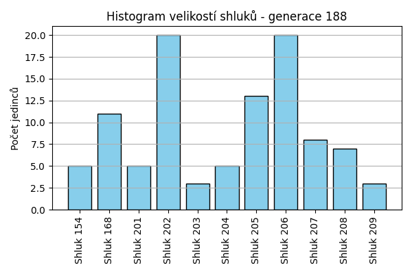
Stabilita mezi generací 187 → 188:
Shluk 197 → 202: 11 jedinců (42.3 %)
Shluk 197 → 207: 5 jedinců (19.2 %)
Shluk 197 → 208: 4 jedinců (15.4 %)
Shluk 197 → 209: 2 jedinců (7.7 %)
Shluk 197 → 168: 2 jedinců (7.7 %)
Shluk 197 → 204: 2 jedinců (7.7 %)
Shluk 203 → 203: 2 jedinců (25.0 %)
Shluk 203 → 204: 1 jedinců (12.5 %)
Shluk 203 → 202: 1 jedinců (12.5 %)
Shluk 203 → 207: 2 jedinců (25.0 %)
Shluk 203 → 206: 1 jedinců (12.5 %)
Shluk 203 → 168: 1 jedinců (12.5 %)
Shluk 204 → 204: 2 jedinců (40.0 %)
Shluk 204 → 168: 1 jedinců (20.0 %)
Shluk 204 → 208: 1 jedinců (20.0 %)
Shluk 204 → 206: 1 jedinců (20.0 %)
Shluk 206 → 206: 4 jedinců (57.1 %)
Shluk 206 → 207: 1 jedinců (14.3 %)
Shluk 206 → 205: 2 jedinců (28.6 %)
Shluk 201 → 201: 2 jedinců (28.6 %)
Shluk 201 → 209: 1 jedinců (14.3 %)
Shluk 201 → 206: 4 jedinců (57.1 %)
Shluk 205 → 205: 6 jedinců (75.0 %)
Shluk 205 → 206: 1 jedinců (12.5 %)
Shluk 205 → 203: 1 jedinců (12.5 %)
Shluk 154 → 201: 2 jedinců (25.0 %)
Shluk 154 → 154: 4 jedinců (50.0 %)
Shluk 154 → 206: 1 jedinců (12.5 %)
Shluk 154 → 205: 1 jedinců (12.5 %)
Shluk 168 → 168: 5 jedinců (41.7 %)
Shluk 168 → 206: 5 jedinců (41.7 %)
Shluk 168 → 208: 1 jedinců (8.3 %)
Shluk 168 → 201: 1 jedinců (8.3 %)
Shluk 199 → 205: 4 jedinců (50.0 %)
Shluk 199 → 168: 2 jedinců (25.0 %)
Shluk 199 → 206: 2 jedinců (25.0 %)
Shluk 202 → 202: 8 jedinců (72.7 %)
Shluk 202 → 154: 1 jedinců (9.1 %)
Shluk 202 → 206: 1 jedinců (9.1 %)
Shluk 202 → 208: 1 jedinců (9.1 %)
Jaccardovo mapování a overlap: Generace 187 → 188
- Shluk 197 → 202 (Jaccard: 0.31, Overlap: 0.55)
- Shluk 203 → 203 (Jaccard: 0.22, Overlap: 0.67)
- Shluk 204 → 204 (Jaccard: 0.25, Overlap: 0.40)
- Shluk 206 → 206 (Jaccard: 0.17, Overlap: 0.57)
- Shluk 201 → 201 (Jaccard: 0.20, Overlap: 0.40)
- Shluk 205 → 205 (Jaccard: 0.40, Overlap: 0.75)
- Shluk 154 → 154 (Jaccard: 0.44, Overlap: 0.80)
- Shluk 168 → 168 (Jaccard: 0.28, Overlap: 0.45)
- Shluk 199 → 205 (Jaccard: 0.24, Overlap: 0.50)
- Shluk 202 → 202 (Jaccard: 0.35, Overlap: 0.73)
Posun centroidů mezi generací 187 → 188:
- Shluk 0: 7.0378
- Shluk 1: 6.5122
- Shluk 2: 6.3289
- Shluk 3: 7.2028
- Shluk 4: 7.2326
- Shluk 5: 5.4868
- Shluk 6: 8.3661
- Shluk 7: 10.2075
- Shluk 8: 8.4682
- Shluk 9: 5.9989
Generace 189
Stabilita mezi generací 188 → 189:
Shluk 202 → 207: 6 jedinců (30.0 %)
Shluk 202 → 202: 6 jedinců (30.0 %)
Shluk 202 → 206: 1 jedinců (5.0 %)
Shluk 202 → 204: 3 jedinců (15.0 %)
Shluk 202 → 209: 4 jedinců (20.0 %)
Shluk 207 → 207: 3 jedinců (37.5 %)
Shluk 207 → 154: 1 jedinců (12.5 %)
Shluk 207 → 206: 1 jedinců (12.5 %)
Shluk 207 → 204: 1 jedinců (12.5 %)
Shluk 207 → 212: 2 jedinců (25.0 %)
Shluk 203 → 205: 1 jedinců (33.3 %)
Shluk 203 → 203: 1 jedinců (33.3 %)
Shluk 203 → 206: 1 jedinců (33.3 %)
Shluk 204 → 154: 1 jedinců (20.0 %)
Shluk 204 → 210: 1 jedinců (20.0 %)
Shluk 204 → 204: 3 jedinců (60.0 %)
Shluk 208 → 202: 1 jedinců (14.3 %)
Shluk 208 → 208: 3 jedinců (42.9 %)
Shluk 208 → 212: 1 jedinců (14.3 %)
Shluk 208 → 207: 1 jedinců (14.3 %)
Shluk 208 → 205: 1 jedinců (14.3 %)
Shluk 206 → 210: 2 jedinců (10.0 %)
Shluk 206 → 211: 4 jedinců (20.0 %)
Shluk 206 → 206: 8 jedinců (40.0 %)
Shluk 206 → 212: 3 jedinců (15.0 %)
Shluk 206 → 203: 1 jedinců (5.0 %)
Shluk 206 → 208: 1 jedinců (5.0 %)
Shluk 206 → 168: 1 jedinců (5.0 %)
Shluk 201 → 202: 2 jedinců (40.0 %)
Shluk 201 → 205: 1 jedinců (20.0 %)
Shluk 201 → 203: 1 jedinců (20.0 %)
Shluk 201 → 204: 1 jedinců (20.0 %)
Shluk 209 → 206: 1 jedinců (33.3 %)
Shluk 209 → 209: 1 jedinců (33.3 %)
Shluk 209 → 202: 1 jedinců (33.3 %)
Shluk 205 → 205: 6 jedinců (46.2 %)
Shluk 205 → 211: 2 jedinců (15.4 %)
Shluk 205 → 168: 1 jedinců (7.7 %)
Shluk 205 → 212: 1 jedinců (7.7 %)
Shluk 205 → 206: 1 jedinců (7.7 %)
Shluk 205 → 208: 1 jedinců (7.7 %)
Shluk 205 → 210: 1 jedinců (7.7 %)
Shluk 168 → 168: 5 jedinců (45.5 %)
Shluk 168 → 207: 2 jedinců (18.2 %)
Shluk 168 → 212: 3 jedinců (27.3 %)
Shluk 168 → 204: 1 jedinců (9.1 %)
Shluk 154 → 154: 5 jedinců (100.0 %)
Jaccardovo mapování a overlap: Generace 188 → 189
- Shluk 202 → 202 (Jaccard: 0.25, Overlap: 0.60)
- Shluk 207 → 207 (Jaccard: 0.18, Overlap: 0.38)
- Shluk 203 → 203 (Jaccard: 0.20, Overlap: 0.33)
- Shluk 204 → 204 (Jaccard: 0.27, Overlap: 0.60)
- Shluk 208 → 208 (Jaccard: 0.33, Overlap: 0.60)
- Shluk 206 → 206 (Jaccard: 0.32, Overlap: 0.62)
- Shluk 201 → 202 (Jaccard: 0.15, Overlap: 0.40)
- Shluk 209 → 209 (Jaccard: 0.14, Overlap: 0.33)
- Shluk 205 → 205 (Jaccard: 0.38, Overlap: 0.67)
- Shluk 168 → 168 (Jaccard: 0.38, Overlap: 0.71)
- Shluk 154 → 154 (Jaccard: 0.71, Overlap: 1.00)
Posun centroidů mezi generací 188 → 189:
- Shluk 0: 2.0058
- Shluk 1: 6.8325
- Shluk 2: 5.2382
- Shluk 3: 5.3411
- Shluk 4: 6.9376
- Shluk 5: 8.0149
- Shluk 6: 8.2861
- Shluk 7: 9.9143
- Shluk 8: 6.3639
- Shluk 9: 6.6591
- Shluk 10: 1.9918
Generace 190
Stabilita mezi generací 189 → 190:
Shluk 207 → 212: 1 jedinců (8.3 %)
Shluk 207 → 207: 6 jedinců (50.0 %)
Shluk 207 → 204: 3 jedinců (25.0 %)
Shluk 207 → 154: 1 jedinců (8.3 %)
Shluk 207 → 214: 1 jedinců (8.3 %)
Shluk 205 → 205: 6 jedinců (66.7 %)
Shluk 205 → 207: 1 jedinců (11.1 %)
Shluk 205 → 211: 1 jedinců (11.1 %)
Shluk 205 → 212: 1 jedinců (11.1 %)
Shluk 154 → 206: 1 jedinců (14.3 %)
Shluk 154 → 154: 3 jedinců (42.9 %)
Shluk 154 → 211: 1 jedinců (14.3 %)
Shluk 154 → 214: 1 jedinců (14.3 %)
Shluk 154 → 213: 1 jedinců (14.3 %)
Shluk 202 → 213: 1 jedinců (10.0 %)
Shluk 202 → 202: 7 jedinců (70.0 %)
Shluk 202 → 212: 1 jedinců (10.0 %)
Shluk 202 → 206: 1 jedinců (10.0 %)
Shluk 208 → 203: 1 jedinců (20.0 %)
Shluk 208 → 211: 1 jedinců (20.0 %)
Shluk 208 → 208: 2 jedinců (40.0 %)
Shluk 208 → 206: 1 jedinců (20.0 %)
Shluk 210 → 206: 1 jedinců (25.0 %)
Shluk 210 → 208: 1 jedinců (25.0 %)
Shluk 210 → 213: 1 jedinců (25.0 %)
Shluk 210 → 204: 1 jedinců (25.0 %)
Shluk 206 → 214: 4 jedinců (30.8 %)
Shluk 206 → 206: 6 jedinců (46.2 %)
Shluk 206 → 212: 1 jedinců (7.7 %)
Shluk 206 → 213: 2 jedinců (15.4 %)
Shluk 209 → 205: 1 jedinců (20.0 %)
Shluk 209 → 202: 2 jedinců (40.0 %)
Shluk 209 → 204: 2 jedinců (40.0 %)
Shluk 211 → 211: 6 jedinců (100.0 %)
Shluk 168 → 212: 5 jedinců (71.4 %)
Shluk 168 → 211: 2 jedinců (28.6 %)
Shluk 203 → 212: 1 jedinců (33.3 %)
Shluk 203 → 213: 1 jedinců (33.3 %)
Shluk 203 → 203: 1 jedinců (33.3 %)
Shluk 212 → 206: 2 jedinců (20.0 %)
Shluk 212 → 212: 7 jedinců (70.0 %)
Shluk 212 → 207: 1 jedinců (10.0 %)
Shluk 204 → 203: 3 jedinců (33.3 %)
Shluk 204 → 204: 5 jedinců (55.6 %)
Shluk 204 → 211: 1 jedinců (11.1 %)
Jaccardovo mapování a overlap: Generace 189 → 190
- Shluk 207 → 207 (Jaccard: 0.43, Overlap: 0.75)
- Shluk 205 → 205 (Jaccard: 0.60, Overlap: 0.86)
- Shluk 154 → 154 (Jaccard: 0.38, Overlap: 0.75)
- Shluk 202 → 202 (Jaccard: 0.58, Overlap: 0.78)
- Shluk 208 → 208 (Jaccard: 0.33, Overlap: 0.67)
- Shluk 210 → 208 (Jaccard: 0.17, Overlap: 0.33)
- Shluk 206 → 206 (Jaccard: 0.32, Overlap: 0.50)
- Shluk 209 → 202 (Jaccard: 0.17, Overlap: 0.40)
- Shluk 211 → 211 (Jaccard: 0.50, Overlap: 1.00)
- Shluk 168 → 212 (Jaccard: 0.26, Overlap: 0.71)
- Shluk 203 → 203 (Jaccard: 0.14, Overlap: 0.33)
- Shluk 212 → 212 (Jaccard: 0.35, Overlap: 0.70)
- Shluk 204 → 204 (Jaccard: 0.33, Overlap: 0.56)
Posun centroidů mezi generací 189 → 190:
- Shluk 0: 4.4327
- Shluk 1: 6.2131
- Shluk 2: 5.6140
- Shluk 3: 6.4658
- Shluk 4: 6.2253
- Shluk 5: 6.6488
- Shluk 6: 6.4547
- Shluk 7: 5.5235
- Shluk 8: 6.6561
- Shluk 9: 9.6238
- Shluk 10: 8.0222
- Shluk 11: 6.1365
Generace 191
Stabilita mezi generací 190 → 191:
Shluk 212 → 215: 1 jedinců (5.9 %)
Shluk 212 → 212: 7 jedinců (41.2 %)
Shluk 212 → 216: 3 jedinců (17.6 %)
Shluk 212 → 206: 2 jedinců (11.8 %)
Shluk 212 → 204: 3 jedinců (17.6 %)
Shluk 212 → 202: 1 jedinců (5.9 %)
Shluk 207 → 207: 5 jedinců (62.5 %)
Shluk 207 → 211: 1 jedinců (12.5 %)
Shluk 207 → 212: 1 jedinců (12.5 %)
Shluk 207 → 204: 1 jedinců (12.5 %)
Shluk 205 → 207: 3 jedinců (42.9 %)
Shluk 205 → 216: 1 jedinců (14.3 %)
Shluk 205 → 217: 1 jedinců (14.3 %)
Shluk 205 → 211: 1 jedinců (14.3 %)
Shluk 205 → 204: 1 jedinců (14.3 %)
Shluk 206 → 216: 3 jedinců (25.0 %)
Shluk 206 → 154: 1 jedinců (8.3 %)
Shluk 206 → 217: 2 jedinců (16.7 %)
Shluk 206 → 215: 2 jedinců (16.7 %)
Shluk 206 → 206: 4 jedinců (33.3 %)
Shluk 213 → 215: 2 jedinců (33.3 %)
Shluk 213 → 212: 3 jedinců (50.0 %)
Shluk 213 → 204: 1 jedinců (16.7 %)
Shluk 203 → 211: 2 jedinců (40.0 %)
Shluk 203 → 214: 1 jedinců (20.0 %)
Shluk 203 → 206: 1 jedinců (20.0 %)
Shluk 203 → 215: 1 jedinců (20.0 %)
Shluk 202 → 214: 1 jedinců (11.1 %)
Shluk 202 → 154: 1 jedinců (11.1 %)
Shluk 202 → 204: 1 jedinců (11.1 %)
Shluk 202 → 216: 1 jedinců (11.1 %)
Shluk 202 → 202: 4 jedinců (44.4 %)
Shluk 202 → 215: 1 jedinců (11.1 %)
Shluk 204 → 204: 9 jedinců (81.8 %)
Shluk 204 → 202: 1 jedinců (9.1 %)
Shluk 204 → 215: 1 jedinců (9.1 %)
Shluk 214 → 207: 1 jedinců (16.7 %)
Shluk 214 → 211: 1 jedinců (16.7 %)
Shluk 214 → 212: 2 jedinců (33.3 %)
Shluk 214 → 214: 2 jedinců (33.3 %)
Shluk 211 → 211: 8 jedinců (66.7 %)
Shluk 211 → 217: 1 jedinců (8.3 %)
Shluk 211 → 212: 1 jedinců (8.3 %)
Shluk 211 → 206: 1 jedinců (8.3 %)
Shluk 211 → 154: 1 jedinců (8.3 %)
Shluk 208 → 154: 1 jedinců (33.3 %)
Shluk 208 → 206: 2 jedinců (66.7 %)
Shluk 154 → 154: 2 jedinců (50.0 %)
Shluk 154 → 206: 1 jedinců (25.0 %)
Shluk 154 → 214: 1 jedinců (25.0 %)
Jaccardovo mapování a overlap: Generace 190 → 191
- Shluk 212 → 212 (Jaccard: 0.29, Overlap: 0.50)
- Shluk 207 → 207 (Jaccard: 0.42, Overlap: 0.62)
- Shluk 205 → 207 (Jaccard: 0.23, Overlap: 0.43)
- Shluk 206 → 206 (Jaccard: 0.21, Overlap: 0.36)
- Shluk 213 → 212 (Jaccard: 0.18, Overlap: 0.50)
- Shluk 203 → 211 (Jaccard: 0.12, Overlap: 0.40)
- Shluk 202 → 202 (Jaccard: 0.36, Overlap: 0.67)
- Shluk 204 → 204 (Jaccard: 0.50, Overlap: 0.82)
- Shluk 214 → 214 (Jaccard: 0.22, Overlap: 0.40)
- Shluk 211 → 211 (Jaccard: 0.47, Overlap: 0.67)
- Shluk 208 → 206 (Jaccard: 0.17, Overlap: 0.67)
- Shluk 154 → 154 (Jaccard: 0.25, Overlap: 0.50)
Posun centroidů mezi generací 190 → 191:
- Shluk 0: 2.2545
- Shluk 1: 4.9390
- Shluk 2: 6.0440
- Shluk 3: 5.5589
- Shluk 4: 5.5337
- Shluk 5: 6.8110
- Shluk 6: 1.5524
- Shluk 7: 4.8531
- Shluk 8: 4.6806
- Shluk 9: 9.9088
- Shluk 10: 4.2258
Generace 192
Stabilita mezi generací 191 → 192:
Shluk 215 → 215: 3 jedinců (37.5 %)
Shluk 215 → 204: 3 jedinců (37.5 %)
Shluk 215 → 211: 1 jedinců (12.5 %)
Shluk 215 → 207: 1 jedinců (12.5 %)
Shluk 207 → 216: 1 jedinců (11.1 %)
Shluk 207 → 206: 1 jedinců (11.1 %)
Shluk 207 → 207: 4 jedinců (44.4 %)
Shluk 207 → 154: 1 jedinců (11.1 %)
Shluk 207 → 211: 1 jedinců (11.1 %)
Shluk 207 → 212: 1 jedinců (11.1 %)
Shluk 216 → 216: 8 jedinců (100.0 %)
Shluk 211 → 211: 7 jedinců (53.8 %)
Shluk 211 → 218: 1 jedinců (7.7 %)
Shluk 211 → 215: 1 jedinců (7.7 %)
Shluk 211 → 214: 1 jedinců (7.7 %)
Shluk 211 → 212: 1 jedinců (7.7 %)
Shluk 211 → 154: 1 jedinců (7.7 %)
Shluk 211 → 204: 1 jedinců (7.7 %)
Shluk 154 → 154: 3 jedinců (50.0 %)
Shluk 154 → 218: 1 jedinců (16.7 %)
Shluk 154 → 212: 1 jedinců (16.7 %)
Shluk 154 → 204: 1 jedinců (16.7 %)
Shluk 214 → 204: 1 jedinců (20.0 %)
Shluk 214 → 214: 2 jedinců (40.0 %)
Shluk 214 → 212: 1 jedinců (20.0 %)
Shluk 214 → 215: 1 jedinců (20.0 %)
Shluk 204 → 218: 3 jedinců (18.8 %)
Shluk 204 → 204: 6 jedinců (37.5 %)
Shluk 204 → 212: 1 jedinců (6.2 %)
Shluk 204 → 154: 3 jedinců (18.8 %)
Shluk 204 → 214: 2 jedinců (12.5 %)
Shluk 204 → 207: 1 jedinců (6.2 %)
Shluk 217 → 218: 1 jedinců (25.0 %)
Shluk 217 → 211: 2 jedinců (50.0 %)
Shluk 217 → 215: 1 jedinců (25.0 %)
Shluk 212 → 212: 9 jedinců (64.3 %)
Shluk 212 → 207: 2 jedinců (14.3 %)
Shluk 212 → 215: 3 jedinců (21.4 %)
Shluk 206 → 214: 1 jedinců (9.1 %)
Shluk 206 → 206: 7 jedinců (63.6 %)
Shluk 206 → 215: 1 jedinců (9.1 %)
Shluk 206 → 154: 1 jedinců (9.1 %)
Shluk 206 → 211: 1 jedinců (9.1 %)
Shluk 202 → 202: 5 jedinců (83.3 %)
Shluk 202 → 204: 1 jedinců (16.7 %)
Jaccardovo mapování a overlap: Generace 191 → 192
- Shluk 215 → 215 (Jaccard: 0.20, Overlap: 0.38)
- Shluk 207 → 207 (Jaccard: 0.31, Overlap: 0.50)
- Shluk 216 → 216 (Jaccard: 0.89, Overlap: 1.00)
- Shluk 211 → 211 (Jaccard: 0.39, Overlap: 0.58)
- Shluk 154 → 154 (Jaccard: 0.25, Overlap: 0.50)
- Shluk 214 → 214 (Jaccard: 0.22, Overlap: 0.40)
- Shluk 204 → 204 (Jaccard: 0.26, Overlap: 0.46)
- Shluk 217 → 211 (Jaccard: 0.14, Overlap: 0.50)
- Shluk 212 → 212 (Jaccard: 0.47, Overlap: 0.64)
- Shluk 206 → 206 (Jaccard: 0.58, Overlap: 0.88)
- Shluk 202 → 202 (Jaccard: 0.83, Overlap: 1.00)
Posun centroidů mezi generací 191 → 192:
- Shluk 0: 3.3728
- Shluk 1: 4.5882
- Shluk 2: 5.8204
- Shluk 3: 3.7815
- Shluk 4: 4.1157
- Shluk 5: 4.2207
- Shluk 6: 3.3038
- Shluk 7: 6.0108
- Shluk 8: 6.5188
- Shluk 9: 5.2219
- Shluk 10: 4.9959
Generace 193
Stabilita mezi generací 192 → 193:
Shluk 215 → 206: 2 jedinců (20.0 %)
Shluk 215 → 219: 2 jedinců (20.0 %)
Shluk 215 → 215: 4 jedinců (40.0 %)
Shluk 215 → 216: 2 jedinců (20.0 %)
Shluk 216 → 216: 4 jedinců (44.4 %)
Shluk 216 → 207: 2 jedinců (22.2 %)
Shluk 216 → 219: 1 jedinců (11.1 %)
Shluk 216 → 212: 2 jedinců (22.2 %)
Shluk 206 → 206: 5 jedinců (62.5 %)
Shluk 206 → 220: 2 jedinců (25.0 %)
Shluk 206 → 204: 1 jedinců (12.5 %)
Shluk 211 → 220: 3 jedinců (25.0 %)
Shluk 211 → 211: 6 jedinců (50.0 %)
Shluk 211 → 219: 1 jedinců (8.3 %)
Shluk 211 → 207: 1 jedinců (8.3 %)
Shluk 211 → 221: 1 jedinců (8.3 %)
Shluk 154 → 206: 1 jedinců (11.1 %)
Shluk 154 → 154: 3 jedinců (33.3 %)
Shluk 154 → 218: 3 jedinců (33.3 %)
Shluk 154 → 204: 1 jedinců (11.1 %)
Shluk 154 → 216: 1 jedinců (11.1 %)
Shluk 204 → 204: 8 jedinců (61.5 %)
Shluk 204 → 206: 1 jedinců (7.7 %)
Shluk 204 → 154: 1 jedinců (7.7 %)
Shluk 204 → 216: 1 jedinců (7.7 %)
Shluk 204 → 220: 1 jedinců (7.7 %)
Shluk 204 → 202: 1 jedinců (7.7 %)
Shluk 218 → 218: 4 jedinců (66.7 %)
Shluk 218 → 220: 1 jedinců (16.7 %)
Shluk 218 → 207: 1 jedinců (16.7 %)
Shluk 207 → 207: 4 jedinců (50.0 %)
Shluk 207 → 221: 2 jedinců (25.0 %)
Shluk 207 → 216: 2 jedinců (25.0 %)
Shluk 212 → 212: 8 jedinců (57.1 %)
Shluk 212 → 215: 2 jedinců (14.3 %)
Shluk 212 → 221: 2 jedinců (14.3 %)
Shluk 212 → 220: 1 jedinců (7.1 %)
Shluk 212 → 154: 1 jedinců (7.1 %)
Shluk 214 → 211: 2 jedinců (33.3 %)
Shluk 214 → 218: 3 jedinců (50.0 %)
Shluk 214 → 216: 1 jedinců (16.7 %)
Shluk 202 → 202: 3 jedinců (60.0 %)
Shluk 202 → 207: 2 jedinců (40.0 %)
Jaccardovo mapování a overlap: Generace 192 → 193
- Shluk 215 → 215 (Jaccard: 0.33, Overlap: 0.67)
- Shluk 216 → 216 (Jaccard: 0.25, Overlap: 0.44)
- Shluk 206 → 206 (Jaccard: 0.42, Overlap: 0.62)
- Shluk 211 → 211 (Jaccard: 0.43, Overlap: 0.75)
- Shluk 154 → 154 (Jaccard: 0.27, Overlap: 0.60)
- Shluk 204 → 204 (Jaccard: 0.53, Overlap: 0.80)
- Shluk 218 → 218 (Jaccard: 0.33, Overlap: 0.67)
- Shluk 207 → 207 (Jaccard: 0.29, Overlap: 0.50)
- Shluk 212 → 212 (Jaccard: 0.50, Overlap: 0.80)
- Shluk 214 → 218 (Jaccard: 0.23, Overlap: 0.50)
- Shluk 202 → 202 (Jaccard: 0.50, Overlap: 0.75)
Posun centroidů mezi generací 192 → 193:
- Shluk 0: 5.2800
- Shluk 1: 4.1301
- Shluk 2: 4.2227
- Shluk 3: 3.9425
- Shluk 4: 5.6203
- Shluk 5: 4.5145
- Shluk 6: 5.9743
- Shluk 7: 6.0906
- Shluk 8: 6.3455
- Shluk 9: 5.1255
- Shluk 10: 6.4664
Generace 194
Stabilita mezi generací 193 → 194:
Shluk 206 → 216: 4 jedinců (44.4 %)
Shluk 206 → 222: 1 jedinců (11.1 %)
Shluk 206 → 218: 1 jedinců (11.1 %)
Shluk 206 → 219: 1 jedinců (11.1 %)
Shluk 206 → 212: 2 jedinců (22.2 %)
Shluk 216 → 216: 7 jedinců (63.6 %)
Shluk 216 → 219: 1 jedinců (9.1 %)
Shluk 216 → 207: 1 jedinců (9.1 %)
Shluk 216 → 212: 1 jedinců (9.1 %)
Shluk 216 → 218: 1 jedinců (9.1 %)
Shluk 219 → 219: 2 jedinců (50.0 %)
Shluk 219 → 220: 1 jedinců (25.0 %)
Shluk 219 → 204: 1 jedinců (25.0 %)
Shluk 220 → 220: 8 jedinců (100.0 %)
Shluk 204 → 215: 1 jedinců (10.0 %)
Shluk 204 → 219: 3 jedinců (30.0 %)
Shluk 204 → 221: 1 jedinců (10.0 %)
Shluk 204 → 207: 1 jedinců (10.0 %)
Shluk 204 → 204: 3 jedinců (30.0 %)
Shluk 204 → 220: 1 jedinců (10.0 %)
Shluk 218 → 207: 4 jedinců (40.0 %)
Shluk 218 → 218: 4 jedinců (40.0 %)
Shluk 218 → 215: 1 jedinců (10.0 %)
Shluk 218 → 220: 1 jedinců (10.0 %)
Shluk 207 → 207: 6 jedinců (60.0 %)
Shluk 207 → 221: 4 jedinců (40.0 %)
Shluk 211 → 222: 1 jedinců (12.5 %)
Shluk 211 → 220: 7 jedinců (87.5 %)
Shluk 154 → 218: 3 jedinců (60.0 %)
Shluk 154 → 204: 1 jedinců (20.0 %)
Shluk 154 → 222: 1 jedinců (20.0 %)
Shluk 215 → 215: 4 jedinců (66.7 %)
Shluk 215 → 212: 1 jedinců (16.7 %)
Shluk 215 → 221: 1 jedinců (16.7 %)
Shluk 212 → 212: 5 jedinců (50.0 %)
Shluk 212 → 222: 2 jedinců (20.0 %)
Shluk 212 → 216: 1 jedinců (10.0 %)
Shluk 212 → 207: 1 jedinců (10.0 %)
Shluk 212 → 219: 1 jedinců (10.0 %)
Shluk 221 → 204: 1 jedinců (20.0 %)
Shluk 221 → 219: 1 jedinců (20.0 %)
Shluk 221 → 221: 3 jedinců (60.0 %)
Shluk 202 → 204: 2 jedinců (50.0 %)
Shluk 202 → 222: 1 jedinců (25.0 %)
Shluk 202 → 218: 1 jedinců (25.0 %)
Jaccardovo mapování a overlap: Generace 193 → 194
- Shluk 206 → 216 (Jaccard: 0.24, Overlap: 0.44)
- Shluk 216 → 216 (Jaccard: 0.44, Overlap: 0.64)
- Shluk 219 → 219 (Jaccard: 0.18, Overlap: 0.50)
- Shluk 220 → 220 (Jaccard: 0.44, Overlap: 1.00)
- Shluk 204 → 204 (Jaccard: 0.20, Overlap: 0.38)
- Shluk 218 → 218 (Jaccard: 0.25, Overlap: 0.40)
- Shluk 207 → 207 (Jaccard: 0.35, Overlap: 0.60)
- Shluk 211 → 220 (Jaccard: 0.37, Overlap: 0.88)
- Shluk 154 → 218 (Jaccard: 0.25, Overlap: 0.60)
- Shluk 215 → 215 (Jaccard: 0.50, Overlap: 0.67)
- Shluk 212 → 212 (Jaccard: 0.36, Overlap: 0.56)
- Shluk 221 → 221 (Jaccard: 0.27, Overlap: 0.60)
- Shluk 202 → 204 (Jaccard: 0.20, Overlap: 0.50)
Posun centroidů mezi generací 193 → 194:
- Shluk 0: 4.4763
- Shluk 1: 3.8126
- Shluk 2: 4.2024
- Shluk 3: 3.0661
- Shluk 4: 2.7432
- Shluk 5: 5.8119
- Shluk 6: 3.8710
- Shluk 7: 6.4792
- Shluk 8: 3.0873
- Shluk 9: 5.6794
Generace 195
Stabilita mezi generací 194 → 195:
Shluk 216 → 223: 3 jedinců (25.0 %)
Shluk 216 → 216: 6 jedinců (50.0 %)
Shluk 216 → 225: 1 jedinců (8.3 %)
Shluk 216 → 222: 1 jedinců (8.3 %)
Shluk 216 → 212: 1 jedinců (8.3 %)
Shluk 222 → 222: 3 jedinců (50.0 %)
Shluk 222 → 225: 2 jedinců (33.3 %)
Shluk 222 → 218: 1 jedinců (16.7 %)
Shluk 219 → 216: 1 jedinců (11.1 %)
Shluk 219 → 223: 3 jedinců (33.3 %)
Shluk 219 → 204: 1 jedinců (11.1 %)
Shluk 219 → 218: 3 jedinců (33.3 %)
Shluk 219 → 207: 1 jedinců (11.1 %)
Shluk 220 → 216: 6 jedinců (33.3 %)
Shluk 220 → 224: 4 jedinců (22.2 %)
Shluk 220 → 223: 6 jedinců (33.3 %)
Shluk 220 → 218: 1 jedinců (5.6 %)
Shluk 220 → 204: 1 jedinců (5.6 %)
Shluk 218 → 218: 6 jedinců (60.0 %)
Shluk 218 → 222: 2 jedinců (20.0 %)
Shluk 218 → 224: 1 jedinců (10.0 %)
Shluk 218 → 223: 1 jedinců (10.0 %)
Shluk 215 → 204: 1 jedinců (16.7 %)
Shluk 215 → 222: 3 jedinců (50.0 %)
Shluk 215 → 216: 2 jedinců (33.3 %)
Shluk 207 → 224: 3 jedinců (23.1 %)
Shluk 207 → 216: 2 jedinců (15.4 %)
Shluk 207 → 207: 3 jedinců (23.1 %)
Shluk 207 → 212: 3 jedinců (23.1 %)
Shluk 207 → 222: 1 jedinců (7.7 %)
Shluk 207 → 218: 1 jedinců (7.7 %)
Shluk 212 → 223: 4 jedinců (44.4 %)
Shluk 212 → 216: 1 jedinců (11.1 %)
Shluk 212 → 225: 1 jedinců (11.1 %)
Shluk 212 → 212: 3 jedinců (33.3 %)
Shluk 204 → 204: 5 jedinců (62.5 %)
Shluk 204 → 218: 1 jedinců (12.5 %)
Shluk 204 → 223: 2 jedinců (25.0 %)
Shluk 221 → 221: 4 jedinců (44.4 %)
Shluk 221 → 225: 1 jedinců (11.1 %)
Shluk 221 → 207: 2 jedinců (22.2 %)
Shluk 221 → 218: 1 jedinců (11.1 %)
Shluk 221 → 224: 1 jedinců (11.1 %)
Jaccardovo mapování a overlap: Generace 194 → 195
- Shluk 216 → 216 (Jaccard: 0.25, Overlap: 0.50)
- Shluk 222 → 222 (Jaccard: 0.23, Overlap: 0.50)
- Shluk 219 → 218 (Jaccard: 0.15, Overlap: 0.33)
- Shluk 220 → 216 (Jaccard: 0.20, Overlap: 0.33)
- Shluk 218 → 218 (Jaccard: 0.33, Overlap: 0.60)
- Shluk 215 → 222 (Jaccard: 0.23, Overlap: 0.50)
- Shluk 207 → 207 (Jaccard: 0.19, Overlap: 0.50)
- Shluk 212 → 212 (Jaccard: 0.23, Overlap: 0.43)
- Shluk 204 → 204 (Jaccard: 0.45, Overlap: 0.62)
- Shluk 221 → 221 (Jaccard: 0.44, Overlap: 1.00)
Posun centroidů mezi generací 194 → 195:
- Shluk 0: 3.0700
- Shluk 1: 3.9511
- Shluk 2: 4.1706
- Shluk 3: 4.5134
- Shluk 4: 4.9830
- Shluk 5: 4.2987
- Shluk 6: 2.8390
- Shluk 7: 6.0248
- Shluk 8: 4.6893
- Shluk 9: 6.8147
Generace 196
Stabilita mezi generací 195 → 196:
Shluk 223 → 226: 6 jedinců (31.6 %)
Shluk 223 → 223: 9 jedinců (47.4 %)
Shluk 223 → 218: 1 jedinců (5.3 %)
Shluk 223 → 207: 1 jedinců (5.3 %)
Shluk 223 → 216: 1 jedinců (5.3 %)
Shluk 223 → 204: 1 jedinců (5.3 %)
Shluk 216 → 216: 9 jedinců (50.0 %)
Shluk 216 → 225: 5 jedinců (27.8 %)
Shluk 216 → 207: 2 jedinců (11.1 %)
Shluk 216 → 212: 2 jedinců (11.1 %)
Shluk 222 → 218: 1 jedinců (10.0 %)
Shluk 222 → 207: 4 jedinců (40.0 %)
Shluk 222 → 204: 2 jedinců (20.0 %)
Shluk 222 → 226: 1 jedinců (10.0 %)
Shluk 222 → 227: 1 jedinců (10.0 %)
Shluk 222 → 212: 1 jedinců (10.0 %)
Shluk 218 → 223: 1 jedinců (7.1 %)
Shluk 218 → 218: 10 jedinců (71.4 %)
Shluk 218 → 204: 1 jedinců (7.1 %)
Shluk 218 → 216: 1 jedinců (7.1 %)
Shluk 218 → 227: 1 jedinců (7.1 %)
Shluk 204 → 226: 1 jedinců (12.5 %)
Shluk 204 → 204: 3 jedinců (37.5 %)
Shluk 204 → 227: 1 jedinců (12.5 %)
Shluk 204 → 225: 1 jedinců (12.5 %)
Shluk 204 → 218: 1 jedinců (12.5 %)
Shluk 204 → 224: 1 jedinců (12.5 %)
Shluk 224 → 227: 2 jedinců (22.2 %)
Shluk 224 → 204: 3 jedinců (33.3 %)
Shluk 224 → 224: 2 jedinců (22.2 %)
Shluk 224 → 216: 1 jedinců (11.1 %)
Shluk 224 → 225: 1 jedinců (11.1 %)
Shluk 207 → 207: 4 jedinců (66.7 %)
Shluk 207 → 227: 1 jedinců (16.7 %)
Shluk 207 → 218: 1 jedinců (16.7 %)
Shluk 225 → 207: 1 jedinců (20.0 %)
Shluk 225 → 225: 3 jedinců (60.0 %)
Shluk 225 → 227: 1 jedinců (20.0 %)
Shluk 212 → 227: 1 jedinců (14.3 %)
Shluk 212 → 212: 4 jedinců (57.1 %)
Shluk 212 → 207: 1 jedinců (14.3 %)
Shluk 212 → 224: 1 jedinců (14.3 %)
Shluk 221 → 218: 1 jedinců (25.0 %)
Shluk 221 → 225: 2 jedinců (50.0 %)
Shluk 221 → 204: 1 jedinců (25.0 %)
Jaccardovo mapování a overlap: Generace 195 → 196
- Shluk 223 → 223 (Jaccard: 0.45, Overlap: 0.90)
- Shluk 216 → 216 (Jaccard: 0.43, Overlap: 0.75)
- Shluk 222 → 207 (Jaccard: 0.21, Overlap: 0.40)
- Shluk 218 → 218 (Jaccard: 0.53, Overlap: 0.71)
- Shluk 204 → 204 (Jaccard: 0.19, Overlap: 0.38)
- Shluk 224 → 224 (Jaccard: 0.18, Overlap: 0.50)
- Shluk 207 → 207 (Jaccard: 0.27, Overlap: 0.67)
- Shluk 225 → 225 (Jaccard: 0.21, Overlap: 0.60)
- Shluk 212 → 212 (Jaccard: 0.40, Overlap: 0.57)
- Shluk 221 → 225 (Jaccard: 0.14, Overlap: 0.50)
Posun centroidů mezi generací 195 → 196:
- Shluk 0: 4.3490
- Shluk 1: 4.5950
- Shluk 2: 4.0247
- Shluk 3: 4.7240
- Shluk 4: 4.1693
- Shluk 5: 3.4116
- Shluk 6: 4.1055
- Shluk 7: 5.0017
- Shluk 8: 4.5173
- Shluk 9: 6.0512
Generace 197
Stabilita mezi generací 196 → 197:
Shluk 226 → 228: 2 jedinců (25.0 %)
Shluk 226 → 225: 2 jedinců (25.0 %)
Shluk 226 → 226: 4 jedinců (50.0 %)
Shluk 216 → 229: 3 jedinců (25.0 %)
Shluk 216 → 224: 1 jedinců (8.3 %)
Shluk 216 → 216: 5 jedinců (41.7 %)
Shluk 216 → 207: 2 jedinců (16.7 %)
Shluk 216 → 225: 1 jedinců (8.3 %)
Shluk 218 → 228: 4 jedinců (26.7 %)
Shluk 218 → 230: 3 jedinců (20.0 %)
Shluk 218 → 218: 6 jedinců (40.0 %)
Shluk 218 → 204: 1 jedinců (6.7 %)
Shluk 218 → 229: 1 jedinců (6.7 %)
Shluk 225 → 225: 9 jedinců (75.0 %)
Shluk 225 → 207: 1 jedinců (8.3 %)
Shluk 225 → 229: 2 jedinců (16.7 %)
Shluk 223 → 223: 6 jedinců (60.0 %)
Shluk 223 → 228: 2 jedinců (20.0 %)
Shluk 223 → 226: 1 jedinců (10.0 %)
Shluk 223 → 225: 1 jedinců (10.0 %)
Shluk 227 → 228: 3 jedinců (37.5 %)
Shluk 227 → 227: 3 jedinců (37.5 %)
Shluk 227 → 207: 1 jedinců (12.5 %)
Shluk 227 → 225: 1 jedinců (12.5 %)
Shluk 207 → 229: 1 jedinců (7.7 %)
Shluk 207 → 230: 3 jedinců (23.1 %)
Shluk 207 → 227: 1 jedinců (7.7 %)
Shluk 207 → 204: 1 jedinců (7.7 %)
Shluk 207 → 224: 1 jedinců (7.7 %)
Shluk 207 → 228: 2 jedinců (15.4 %)
Shluk 207 → 207: 4 jedinců (30.8 %)
Shluk 204 → 224: 4 jedinců (36.4 %)
Shluk 204 → 225: 1 jedinců (9.1 %)
Shluk 204 → 204: 4 jedinců (36.4 %)
Shluk 204 → 226: 1 jedinců (9.1 %)
Shluk 204 → 207: 1 jedinců (9.1 %)
Shluk 224 → 224: 3 jedinců (75.0 %)
Shluk 224 → 216: 1 jedinců (25.0 %)
Shluk 212 → 216: 1 jedinců (14.3 %)
Shluk 212 → 207: 3 jedinců (42.9 %)
Shluk 212 → 218: 1 jedinců (14.3 %)
Shluk 212 → 228: 1 jedinců (14.3 %)
Shluk 212 → 230: 1 jedinců (14.3 %)
Jaccardovo mapování a overlap: Generace 196 → 197
- Shluk 226 → 226 (Jaccard: 0.40, Overlap: 0.67)
- Shluk 216 → 216 (Jaccard: 0.36, Overlap: 0.71)
- Shluk 218 → 218 (Jaccard: 0.38, Overlap: 0.86)
- Shluk 225 → 225 (Jaccard: 0.50, Overlap: 0.75)
- Shluk 223 → 223 (Jaccard: 0.60, Overlap: 1.00)
- Shluk 227 → 227 (Jaccard: 0.33, Overlap: 0.75)
- Shluk 207 → 207 (Jaccard: 0.19, Overlap: 0.33)
- Shluk 204 → 204 (Jaccard: 0.31, Overlap: 0.67)
- Shluk 224 → 224 (Jaccard: 0.30, Overlap: 0.75)
- Shluk 212 → 207 (Jaccard: 0.19, Overlap: 0.43)
Posun centroidů mezi generací 196 → 197:
- Shluk 0: 3.6435
- Shluk 1: 1.9816
- Shluk 2: 3.6615
- Shluk 3: 3.4094
- Shluk 4: 5.2307
- Shluk 5: 4.6530
- Shluk 6: 4.3308
- Shluk 7: 4.7024
- Shluk 8: 1.8452
- Shluk 9: 5.7093
Generace 198
Stabilita mezi generací 197 → 198:
Shluk 228 → 228: 6 jedinců (42.9 %)
Shluk 228 → 227: 4 jedinců (28.6 %)
Shluk 228 → 230: 1 jedinců (7.1 %)
Shluk 228 → 224: 1 jedinců (7.1 %)
Shluk 228 → 218: 1 jedinců (7.1 %)
Shluk 228 → 225: 1 jedinců (7.1 %)
Shluk 229 → 229: 5 jedinců (71.4 %)
Shluk 229 → 204: 1 jedinců (14.3 %)
Shluk 229 → 224: 1 jedinců (14.3 %)
Shluk 224 → 224: 4 jedinců (44.4 %)
Shluk 224 → 225: 1 jedinců (11.1 %)
Shluk 224 → 223: 1 jedinců (11.1 %)
Shluk 224 → 227: 1 jedinců (11.1 %)
Shluk 224 → 204: 2 jedinců (22.2 %)
Shluk 216 → 227: 1 jedinců (14.3 %)
Shluk 216 → 229: 5 jedinců (71.4 %)
Shluk 216 → 224: 1 jedinců (14.3 %)
Shluk 225 → 225: 14 jedinců (93.3 %)
Shluk 225 → 230: 1 jedinců (6.7 %)
Shluk 223 → 223: 4 jedinců (66.7 %)
Shluk 223 → 228: 1 jedinců (16.7 %)
Shluk 223 → 229: 1 jedinců (16.7 %)
Shluk 230 → 230: 6 jedinců (85.7 %)
Shluk 230 → 227: 1 jedinců (14.3 %)
Shluk 227 → 227: 4 jedinců (100.0 %)
Shluk 204 → 204: 3 jedinců (50.0 %)
Shluk 204 → 228: 1 jedinců (16.7 %)
Shluk 204 → 224: 1 jedinců (16.7 %)
Shluk 204 → 227: 1 jedinců (16.7 %)
Shluk 207 → 225: 3 jedinců (25.0 %)
Shluk 207 → 207: 7 jedinců (58.3 %)
Shluk 207 → 228: 1 jedinců (8.3 %)
Shluk 207 → 229: 1 jedinců (8.3 %)
Shluk 226 → 223: 2 jedinců (33.3 %)
Shluk 226 → 230: 1 jedinců (16.7 %)
Shluk 226 → 228: 1 jedinců (16.7 %)
Shluk 226 → 218: 2 jedinců (33.3 %)
Shluk 218 → 227: 3 jedinců (42.9 %)
Shluk 218 → 218: 4 jedinců (57.1 %)
Jaccardovo mapování a overlap: Generace 197 → 198
- Shluk 228 → 228 (Jaccard: 0.33, Overlap: 0.60)
- Shluk 229 → 229 (Jaccard: 0.36, Overlap: 0.71)
- Shluk 224 → 224 (Jaccard: 0.31, Overlap: 0.50)
- Shluk 216 → 229 (Jaccard: 0.36, Overlap: 0.71)
- Shluk 225 → 225 (Jaccard: 0.70, Overlap: 0.93)
- Shluk 223 → 223 (Jaccard: 0.44, Overlap: 0.67)
- Shluk 230 → 230 (Jaccard: 0.60, Overlap: 0.86)
- Shluk 227 → 227 (Jaccard: 0.27, Overlap: 1.00)
- Shluk 204 → 204 (Jaccard: 0.33, Overlap: 0.50)
- Shluk 207 → 207 (Jaccard: 0.58, Overlap: 1.00)
- Shluk 226 → 223 (Jaccard: 0.18, Overlap: 0.33)
- Shluk 218 → 218 (Jaccard: 0.40, Overlap: 0.57)
Posun centroidů mezi generací 197 → 198:
- Shluk 0: 3.6273
- Shluk 1: 2.3589
- Shluk 2: 3.1537
- Shluk 3: 3.2649
- Shluk 4: 4.8177
- Shluk 5: 4.2157
- Shluk 6: 3.1299
- Shluk 7: 4.9300
- Shluk 8: 3.7011
- Shluk 9: 5.0982
Generace 199
Stabilita mezi generací 198 → 199:
Shluk 228 → 228: 9 jedinců (90.0 %)
Shluk 228 → 231: 1 jedinců (10.0 %)
Shluk 229 → 229: 10 jedinců (83.3 %)
Shluk 229 → 228: 1 jedinců (8.3 %)
Shluk 229 → 207: 1 jedinců (8.3 %)
Shluk 227 → 228: 5 jedinců (33.3 %)
Shluk 227 → 218: 2 jedinců (13.3 %)
Shluk 227 → 204: 2 jedinců (13.3 %)
Shluk 227 → 207: 2 jedinců (13.3 %)
Shluk 227 → 231: 2 jedinců (13.3 %)
Shluk 227 → 225: 2 jedinců (13.3 %)
Shluk 224 → 224: 8 jedinců (100.0 %)
Shluk 225 → 225: 14 jedinců (73.7 %)
Shluk 225 → 207: 1 jedinců (5.3 %)
Shluk 225 → 218: 2 jedinců (10.5 %)
Shluk 225 → 204: 1 jedinců (5.3 %)
Shluk 225 → 223: 1 jedinců (5.3 %)
Shluk 223 → 225: 3 jedinců (42.9 %)
Shluk 223 → 223: 2 jedinců (28.6 %)
Shluk 223 → 224: 1 jedinců (14.3 %)
Shluk 223 → 207: 1 jedinců (14.3 %)
Shluk 230 → 228: 2 jedinců (22.2 %)
Shluk 230 → 207: 2 jedinců (22.2 %)
Shluk 230 → 229: 1 jedinců (11.1 %)
Shluk 230 → 218: 2 jedinců (22.2 %)
Shluk 230 → 204: 2 jedinců (22.2 %)
Shluk 204 → 204: 2 jedinců (33.3 %)
Shluk 204 → 218: 2 jedinců (33.3 %)
Shluk 204 → 207: 1 jedinců (16.7 %)
Shluk 204 → 229: 1 jedinců (16.7 %)
Shluk 207 → 204: 1 jedinců (14.3 %)
Shluk 207 → 207: 4 jedinců (57.1 %)
Shluk 207 → 229: 2 jedinců (28.6 %)
Shluk 218 → 231: 1 jedinců (14.3 %)
Shluk 218 → 228: 2 jedinců (28.6 %)
Shluk 218 → 218: 4 jedinců (57.1 %)
Jaccardovo mapování a overlap: Generace 198 → 199
- Shluk 228 → 228 (Jaccard: 0.45, Overlap: 0.90)
- Shluk 229 → 229 (Jaccard: 0.62, Overlap: 0.83)
- Shluk 227 → 228 (Jaccard: 0.17, Overlap: 0.33)
- Shluk 224 → 224 (Jaccard: 0.89, Overlap: 1.00)
- Shluk 225 → 225 (Jaccard: 0.58, Overlap: 0.74)
- Shluk 223 → 223 (Jaccard: 0.25, Overlap: 0.67)
- Shluk 230 → 204 (Jaccard: 0.13, Overlap: 0.25)
- Shluk 204 → 204 (Jaccard: 0.17, Overlap: 0.33)
- Shluk 207 → 207 (Jaccard: 0.27, Overlap: 0.57)
- Shluk 218 → 218 (Jaccard: 0.27, Overlap: 0.57)
Posun centroidů mezi generací 198 → 199:
- Shluk 0: 3.3391
- Shluk 1: 0.7274
- Shluk 2: 2.7040
- Shluk 3: 3.7058
- Shluk 4: 4.7719
- Shluk 5: 3.5465
- Shluk 6: 2.8636
- Shluk 7: 3.8019
- Shluk 8: 4.7778
Generace 200
Stabilita mezi generací 199 → 200:
Shluk 228 → 228: 10 jedinců (52.6 %)
Shluk 228 → 224: 3 jedinců (15.8 %)
Shluk 228 → 207: 1 jedinců (5.3 %)
Shluk 228 → 225: 3 jedinců (15.8 %)
Shluk 228 → 204: 1 jedinců (5.3 %)
Shluk 228 → 223: 1 jedinců (5.3 %)
Shluk 229 → 229: 6 jedinců (42.9 %)
Shluk 229 → 228: 3 jedinců (21.4 %)
Shluk 229 → 232: 3 jedinců (21.4 %)
Shluk 229 → 223: 2 jedinců (14.3 %)
Shluk 224 → 224: 5 jedinců (55.6 %)
Shluk 224 → 225: 1 jedinců (11.1 %)
Shluk 224 → 228: 1 jedinců (11.1 %)
Shluk 224 → 229: 2 jedinců (22.2 %)
Shluk 218 → 218: 5 jedinců (41.7 %)
Shluk 218 → 204: 4 jedinců (33.3 %)
Shluk 218 → 224: 2 jedinců (16.7 %)
Shluk 218 → 228: 1 jedinců (8.3 %)
Shluk 225 → 225: 7 jedinců (36.8 %)
Shluk 225 → 223: 4 jedinců (21.1 %)
Shluk 225 → 204: 1 jedinců (5.3 %)
Shluk 225 → 234: 5 jedinců (26.3 %)
Shluk 225 → 224: 2 jedinců (10.5 %)
Shluk 204 → 204: 3 jedinců (37.5 %)
Shluk 204 → 232: 2 jedinců (25.0 %)
Shluk 204 → 207: 1 jedinců (12.5 %)
Shluk 204 → 228: 2 jedinců (25.0 %)
Shluk 207 → 233: 4 jedinců (33.3 %)
Shluk 207 → 207: 6 jedinců (50.0 %)
Shluk 207 → 232: 2 jedinců (16.7 %)
Shluk 231 → 207: 1 jedinců (25.0 %)
Shluk 231 → 204: 1 jedinců (25.0 %)
Shluk 231 → 229: 1 jedinců (25.0 %)
Shluk 231 → 224: 1 jedinců (25.0 %)
Shluk 223 → 225: 1 jedinců (33.3 %)
Shluk 223 → 229: 1 jedinců (33.3 %)
Shluk 223 → 223: 1 jedinců (33.3 %)
Jaccardovo mapování a overlap: Generace 199 → 200
- Shluk 228 → 228 (Jaccard: 0.38, Overlap: 0.59)
- Shluk 229 → 229 (Jaccard: 0.33, Overlap: 0.60)
- Shluk 224 → 224 (Jaccard: 0.29, Overlap: 0.56)
- Shluk 218 → 218 (Jaccard: 0.42, Overlap: 1.00)
- Shluk 225 → 225 (Jaccard: 0.29, Overlap: 0.58)
- Shluk 204 → 204 (Jaccard: 0.20, Overlap: 0.38)
- Shluk 207 → 207 (Jaccard: 0.40, Overlap: 0.67)
- Shluk 231 → 207 (Jaccard: 0.08, Overlap: 0.25)
- Shluk 223 → 223 (Jaccard: 0.10, Overlap: 0.33)
Posun centroidů mezi generací 199 → 200:
- Shluk 0: 2.7737
- Shluk 1: 2.9756
- Shluk 2: 2.6851
- Shluk 3: 2.9927
- Shluk 4: 2.0150
- Shluk 5: 3.7611
- Shluk 6: 3.3996
- Shluk 7: 4.6646
- Shluk 8: 3.3793
Generace 201
Stabilita mezi generací 200 → 201:
Shluk 228 → 225: 3 jedinců (17.6 %)
Shluk 228 → 228: 7 jedinců (41.2 %)
Shluk 228 → 218: 1 jedinců (5.9 %)
Shluk 228 → 234: 1 jedinců (5.9 %)
Shluk 228 → 237: 4 jedinců (23.5 %)
Shluk 228 → 223: 1 jedinců (5.9 %)
Shluk 229 → 229: 5 jedinců (50.0 %)
Shluk 229 → 236: 2 jedinců (20.0 %)
Shluk 229 → 234: 2 jedinců (20.0 %)
Shluk 229 → 232: 1 jedinců (10.0 %)
Shluk 224 → 229: 1 jedinců (7.7 %)
Shluk 224 → 224: 8 jedinců (61.5 %)
Shluk 224 → 223: 1 jedinců (7.7 %)
Shluk 224 → 204: 2 jedinců (15.4 %)
Shluk 224 → 236: 1 jedinců (7.7 %)
Shluk 218 → 218: 2 jedinců (40.0 %)
Shluk 218 → 235: 2 jedinců (40.0 %)
Shluk 218 → 224: 1 jedinců (20.0 %)
Shluk 225 → 225: 7 jedinců (58.3 %)
Shluk 225 → 234: 2 jedinců (16.7 %)
Shluk 225 → 236: 1 jedinců (8.3 %)
Shluk 225 → 204: 1 jedinců (8.3 %)
Shluk 225 → 223: 1 jedinců (8.3 %)
Shluk 223 → 223: 4 jedinců (50.0 %)
Shluk 223 → 235: 1 jedinců (12.5 %)
Shluk 223 → 225: 1 jedinců (12.5 %)
Shluk 223 → 236: 1 jedinců (12.5 %)
Shluk 223 → 237: 1 jedinců (12.5 %)
Shluk 204 → 235: 1 jedinců (10.0 %)
Shluk 204 → 204: 5 jedinců (50.0 %)
Shluk 204 → 223: 1 jedinců (10.0 %)
Shluk 204 → 236: 1 jedinců (10.0 %)
Shluk 204 → 224: 1 jedinců (10.0 %)
Shluk 204 → 237: 1 jedinců (10.0 %)
Shluk 232 → 232: 6 jedinců (85.7 %)
Shluk 232 → 228: 1 jedinců (14.3 %)
Shluk 233 → 235: 1 jedinců (25.0 %)
Shluk 233 → 224: 1 jedinců (25.0 %)
Shluk 233 → 232: 2 jedinců (50.0 %)
Shluk 207 → 228: 5 jedinců (55.6 %)
Shluk 207 → 236: 2 jedinců (22.2 %)
Shluk 207 → 234: 1 jedinců (11.1 %)
Shluk 207 → 204: 1 jedinců (11.1 %)
Shluk 234 → 234: 3 jedinců (60.0 %)
Shluk 234 → 225: 1 jedinců (20.0 %)
Shluk 234 → 204: 1 jedinců (20.0 %)
Jaccardovo mapování a overlap: Generace 200 → 201
- Shluk 228 → 228 (Jaccard: 0.30, Overlap: 0.54)
- Shluk 229 → 229 (Jaccard: 0.45, Overlap: 0.83)
- Shluk 224 → 224 (Jaccard: 0.50, Overlap: 0.73)
- Shluk 218 → 218 (Jaccard: 0.33, Overlap: 0.67)
- Shluk 225 → 225 (Jaccard: 0.41, Overlap: 0.58)
- Shluk 223 → 223 (Jaccard: 0.33, Overlap: 0.50)
- Shluk 204 → 204 (Jaccard: 0.33, Overlap: 0.50)
- Shluk 232 → 232 (Jaccard: 0.60, Overlap: 0.86)
- Shluk 233 → 232 (Jaccard: 0.18, Overlap: 0.50)
- Shluk 207 → 228 (Jaccard: 0.29, Overlap: 0.56)
- Shluk 234 → 234 (Jaccard: 0.27, Overlap: 0.60)
Posun centroidů mezi generací 200 → 201:
- Shluk 0: 2.6055
- Shluk 1: 3.0342
- Shluk 2: 2.4786
- Shluk 3: 2.7272
- Shluk 4: 2.7394
- Shluk 5: 2.7063
- Shluk 6: 4.0452
- Shluk 7: 4.5652
- Shluk 8: 3.1459
- Shluk 9: 3.9683
- Shluk 10: 2.8580
Generace 202
Stabilita mezi generací 201 → 202:
Shluk 225 → 237: 4 jedinců (33.3 %)
Shluk 225 → 204: 1 jedinců (8.3 %)
Shluk 225 → 225: 5 jedinců (41.7 %)
Shluk 225 → 232: 2 jedinců (16.7 %)
Shluk 229 → 229: 4 jedinců (66.7 %)
Shluk 229 → 224: 1 jedinců (16.7 %)
Shluk 229 → 234: 1 jedinců (16.7 %)
Shluk 228 → 232: 4 jedinců (30.8 %)
Shluk 228 → 228: 5 jedinců (38.5 %)
Shluk 228 → 218: 2 jedinců (15.4 %)
Shluk 228 → 204: 2 jedinců (15.4 %)
Shluk 218 → 218: 2 jedinců (66.7 %)
Shluk 218 → 228: 1 jedinců (33.3 %)
Shluk 223 → 223: 5 jedinců (62.5 %)
Shluk 223 → 224: 2 jedinců (25.0 %)
Shluk 223 → 225: 1 jedinců (12.5 %)
Shluk 224 → 232: 1 jedinců (9.1 %)
Shluk 224 → 204: 2 jedinců (18.2 %)
Shluk 224 → 239: 1 jedinců (9.1 %)
Shluk 224 → 224: 5 jedinců (45.5 %)
Shluk 224 → 218: 1 jedinců (9.1 %)
Shluk 224 → 225: 1 jedinců (9.1 %)
Shluk 235 → 228: 2 jedinců (40.0 %)
Shluk 235 → 237: 1 jedinců (20.0 %)
Shluk 235 → 218: 1 jedinců (20.0 %)
Shluk 235 → 239: 1 jedinců (20.0 %)
Shluk 232 → 225: 1 jedinců (11.1 %)
Shluk 232 → 218: 1 jedinců (11.1 %)
Shluk 232 → 232: 3 jedinců (33.3 %)
Shluk 232 → 234: 1 jedinců (11.1 %)
Shluk 232 → 228: 1 jedinců (11.1 %)
Shluk 232 → 229: 1 jedinců (11.1 %)
Shluk 232 → 239: 1 jedinců (11.1 %)
Shluk 204 → 204: 5 jedinců (50.0 %)
Shluk 204 → 238: 2 jedinců (20.0 %)
Shluk 204 → 228: 2 jedinců (20.0 %)
Shluk 204 → 239: 1 jedinců (10.0 %)
Shluk 236 → 236: 4 jedinců (50.0 %)
Shluk 236 → 224: 1 jedinců (12.5 %)
Shluk 236 → 239: 1 jedinců (12.5 %)
Shluk 236 → 229: 1 jedinců (12.5 %)
Shluk 236 → 223: 1 jedinců (12.5 %)
Shluk 234 → 232: 2 jedinců (22.2 %)
Shluk 234 → 234: 5 jedinců (55.6 %)
Shluk 234 → 238: 1 jedinců (11.1 %)
Shluk 234 → 229: 1 jedinců (11.1 %)
Shluk 237 → 228: 1 jedinců (16.7 %)
Shluk 237 → 237: 2 jedinců (33.3 %)
Shluk 237 → 224: 2 jedinců (33.3 %)
Shluk 237 → 232: 1 jedinců (16.7 %)
Jaccardovo mapování a overlap: Generace 201 → 202
- Shluk 225 → 225 (Jaccard: 0.33, Overlap: 0.62)
- Shluk 229 → 229 (Jaccard: 0.44, Overlap: 0.67)
- Shluk 228 → 228 (Jaccard: 0.25, Overlap: 0.42)
- Shluk 218 → 218 (Jaccard: 0.25, Overlap: 0.67)
- Shluk 223 → 223 (Jaccard: 0.56, Overlap: 0.83)
- Shluk 224 → 224 (Jaccard: 0.29, Overlap: 0.45)
- Shluk 235 → 228 (Jaccard: 0.13, Overlap: 0.40)
- Shluk 232 → 232 (Jaccard: 0.16, Overlap: 0.33)
- Shluk 204 → 204 (Jaccard: 0.33, Overlap: 0.50)
- Shluk 236 → 236 (Jaccard: 0.50, Overlap: 1.00)
- Shluk 234 → 234 (Jaccard: 0.45, Overlap: 0.71)
- Shluk 237 → 237 (Jaccard: 0.18, Overlap: 0.33)
Posun centroidů mezi generací 201 → 202:
- Shluk 0: 2.9786
- Shluk 1: 2.4943
- Shluk 2: 2.0408
- Shluk 3: 3.2822
- Shluk 4: 2.4456
- Shluk 5: 1.2211
- Shluk 6: 2.7872
- Shluk 7: 3.4693
- Shluk 8: 3.0418
- Shluk 9: 3.2952
- Shluk 10: 3.3767
- Shluk 11: 3.4012
Generace 203
Stabilita mezi generací 202 → 203:
Shluk 237 → 237: 3 jedinců (42.9 %)
Shluk 237 → 224: 1 jedinců (14.3 %)
Shluk 237 → 225: 1 jedinců (14.3 %)
Shluk 237 → 239: 1 jedinců (14.3 %)
Shluk 237 → 229: 1 jedinců (14.3 %)
Shluk 229 → 229: 5 jedinců (71.4 %)
Shluk 229 → 225: 1 jedinců (14.3 %)
Shluk 229 → 237: 1 jedinců (14.3 %)
Shluk 232 → 232: 5 jedinců (38.5 %)
Shluk 232 → 224: 3 jedinců (23.1 %)
Shluk 232 → 228: 3 jedinců (23.1 %)
Shluk 232 → 237: 2 jedinců (15.4 %)
Shluk 218 → 228: 3 jedinců (42.9 %)
Shluk 218 → 236: 1 jedinců (14.3 %)
Shluk 218 → 224: 1 jedinců (14.3 %)
Shluk 218 → 225: 1 jedinců (14.3 %)
Shluk 218 → 232: 1 jedinců (14.3 %)
Shluk 204 → 225: 1 jedinců (10.0 %)
Shluk 204 → 238: 3 jedinců (30.0 %)
Shluk 204 → 224: 1 jedinců (10.0 %)
Shluk 204 → 239: 1 jedinců (10.0 %)
Shluk 204 → 232: 2 jedinců (20.0 %)
Shluk 204 → 228: 2 jedinců (20.0 %)
Shluk 223 → 223: 5 jedinců (83.3 %)
Shluk 223 → 224: 1 jedinců (16.7 %)
Shluk 228 → 228: 5 jedinců (41.7 %)
Shluk 228 → 236: 5 jedinců (41.7 %)
Shluk 228 → 238: 1 jedinců (8.3 %)
Shluk 228 → 232: 1 jedinců (8.3 %)
Shluk 225 → 225: 6 jedinců (75.0 %)
Shluk 225 → 238: 2 jedinců (25.0 %)
Shluk 236 → 236: 4 jedinců (100.0 %)
Shluk 234 → 234: 5 jedinců (71.4 %)
Shluk 234 → 225: 1 jedinců (14.3 %)
Shluk 234 → 236: 1 jedinců (14.3 %)
Shluk 238 → 238: 3 jedinců (100.0 %)
Shluk 224 → 237: 1 jedinců (9.1 %)
Shluk 224 → 224: 6 jedinců (54.5 %)
Shluk 224 → 239: 3 jedinců (27.3 %)
Shluk 224 → 232: 1 jedinců (9.1 %)
Shluk 239 → 239: 2 jedinců (40.0 %)
Shluk 239 → 225: 1 jedinců (20.0 %)
Shluk 239 → 236: 2 jedinců (40.0 %)
Jaccardovo mapování a overlap: Generace 202 → 203
- Shluk 237 → 237 (Jaccard: 0.27, Overlap: 0.43)
- Shluk 229 → 229 (Jaccard: 0.62, Overlap: 0.83)
- Shluk 232 → 232 (Jaccard: 0.28, Overlap: 0.50)
- Shluk 218 → 228 (Jaccard: 0.18, Overlap: 0.43)
- Shluk 204 → 238 (Jaccard: 0.19, Overlap: 0.33)
- Shluk 223 → 223 (Jaccard: 0.83, Overlap: 1.00)
- Shluk 228 → 228 (Jaccard: 0.25, Overlap: 0.42)
- Shluk 225 → 225 (Jaccard: 0.43, Overlap: 0.75)
- Shluk 236 → 236 (Jaccard: 0.31, Overlap: 1.00)
- Shluk 234 → 234 (Jaccard: 0.71, Overlap: 1.00)
- Shluk 238 → 238 (Jaccard: 0.33, Overlap: 1.00)
- Shluk 224 → 224 (Jaccard: 0.33, Overlap: 0.55)
- Shluk 239 → 239 (Jaccard: 0.20, Overlap: 0.40)
Posun centroidů mezi generací 202 → 203:
- Shluk 0: 2.4739
- Shluk 1: 2.5959
- Shluk 2: 3.0574
- Shluk 3: 3.4192
- Shluk 4: 3.1153
- Shluk 5: 3.2971
- Shluk 6: 3.3198
- Shluk 7: 3.1716
- Shluk 8: 3.1510
- Shluk 9: 3.3545
- Shluk 10: 2.9412
Generace 204
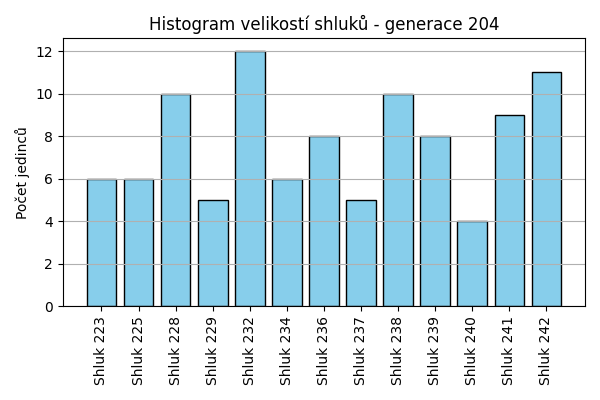
Stabilita mezi generací 203 → 204:
Shluk 237 → 237: 2 jedinců (28.6 %)
Shluk 237 → 225: 2 jedinců (28.6 %)
Shluk 237 → 228: 1 jedinců (14.3 %)
Shluk 237 → 223: 2 jedinců (28.6 %)
Shluk 229 → 229: 3 jedinců (50.0 %)
Shluk 229 → 228: 2 jedinců (33.3 %)
Shluk 229 → 242: 1 jedinců (16.7 %)
Shluk 232 → 232: 5 jedinců (50.0 %)
Shluk 232 → 240: 1 jedinců (10.0 %)
Shluk 232 → 242: 2 jedinců (20.0 %)
Shluk 232 → 241: 2 jedinců (20.0 %)
Shluk 228 → 238: 2 jedinců (15.4 %)
Shluk 228 → 236: 1 jedinců (7.7 %)
Shluk 228 → 241: 2 jedinců (15.4 %)
Shluk 228 → 229: 1 jedinců (7.7 %)
Shluk 228 → 228: 5 jedinců (38.5 %)
Shluk 228 → 237: 1 jedinců (7.7 %)
Shluk 228 → 232: 1 jedinců (7.7 %)
Shluk 225 → 240: 2 jedinců (16.7 %)
Shluk 225 → 225: 4 jedinců (33.3 %)
Shluk 225 → 241: 1 jedinců (8.3 %)
Shluk 225 → 242: 3 jedinců (25.0 %)
Shluk 225 → 236: 1 jedinců (8.3 %)
Shluk 225 → 238: 1 jedinců (8.3 %)
Shluk 223 → 223: 2 jedinců (40.0 %)
Shluk 223 → 239: 1 jedinců (20.0 %)
Shluk 223 → 228: 1 jedinců (20.0 %)
Shluk 223 → 241: 1 jedinců (20.0 %)
Shluk 224 → 232: 4 jedinců (30.8 %)
Shluk 224 → 229: 1 jedinců (7.7 %)
Shluk 224 → 234: 2 jedinců (15.4 %)
Shluk 224 → 239: 3 jedinců (23.1 %)
Shluk 224 → 223: 1 jedinců (7.7 %)
Shluk 224 → 242: 1 jedinců (7.7 %)
Shluk 224 → 237: 1 jedinců (7.7 %)
Shluk 236 → 238: 2 jedinců (15.4 %)
Shluk 236 → 232: 1 jedinců (7.7 %)
Shluk 236 → 228: 1 jedinců (7.7 %)
Shluk 236 → 236: 5 jedinců (38.5 %)
Shluk 236 → 242: 3 jedinců (23.1 %)
Shluk 236 → 240: 1 jedinců (7.7 %)
Shluk 238 → 241: 3 jedinců (33.3 %)
Shluk 238 → 238: 5 jedinců (55.6 %)
Shluk 238 → 232: 1 jedinců (11.1 %)
Shluk 234 → 234: 4 jedinců (80.0 %)
Shluk 234 → 236: 1 jedinců (20.0 %)
Shluk 239 → 239: 4 jedinců (57.1 %)
Shluk 239 → 237: 1 jedinců (14.3 %)
Shluk 239 → 223: 1 jedinců (14.3 %)
Shluk 239 → 242: 1 jedinců (14.3 %)
Jaccardovo mapování a overlap: Generace 203 → 204
- Shluk 237 → 237 (Jaccard: 0.20, Overlap: 0.40)
- Shluk 229 → 229 (Jaccard: 0.38, Overlap: 0.60)
- Shluk 232 → 232 (Jaccard: 0.29, Overlap: 0.50)
- Shluk 228 → 228 (Jaccard: 0.28, Overlap: 0.50)
- Shluk 225 → 225 (Jaccard: 0.29, Overlap: 0.67)
- Shluk 223 → 223 (Jaccard: 0.22, Overlap: 0.40)
- Shluk 224 → 232 (Jaccard: 0.19, Overlap: 0.33)
- Shluk 236 → 236 (Jaccard: 0.31, Overlap: 0.62)
- Shluk 238 → 238 (Jaccard: 0.36, Overlap: 0.56)
- Shluk 234 → 234 (Jaccard: 0.57, Overlap: 0.80)
- Shluk 239 → 239 (Jaccard: 0.36, Overlap: 0.57)
Posun centroidů mezi generací 203 → 204:
- Shluk 0: 1.3570
- Shluk 1: 2.5832
- Shluk 2: 2.2156
- Shluk 3: 2.5292
- Shluk 4: 2.6426
- Shluk 5: 2.3509
- Shluk 6: 3.1429
- Shluk 7: 2.7561
- Shluk 8: 2.3784
- Shluk 9: 3.5161
- Shluk 10: 1.8226
Generace 205
Stabilita mezi generací 204 → 205:
Shluk 237 → 228: 1 jedinců (20.0 %)
Shluk 237 → 237: 3 jedinců (60.0 %)
Shluk 237 → 240: 1 jedinců (20.0 %)
Shluk 229 → 229: 3 jedinců (60.0 %)
Shluk 229 → 241: 1 jedinců (20.0 %)
Shluk 229 → 232: 1 jedinců (20.0 %)
Shluk 232 → 241: 3 jedinců (25.0 %)
Shluk 232 → 238: 1 jedinců (8.3 %)
Shluk 232 → 223: 2 jedinců (16.7 %)
Shluk 232 → 229: 1 jedinců (8.3 %)
Shluk 232 → 232: 2 jedinců (16.7 %)
Shluk 232 → 225: 1 jedinců (8.3 %)
Shluk 232 → 240: 1 jedinců (8.3 %)
Shluk 232 → 237: 1 jedinců (8.3 %)
Shluk 228 → 228: 8 jedinců (80.0 %)
Shluk 228 → 241: 2 jedinců (20.0 %)
Shluk 238 → 241: 1 jedinců (10.0 %)
Shluk 238 → 234: 1 jedinců (10.0 %)
Shluk 238 → 243: 2 jedinců (20.0 %)
Shluk 238 → 238: 4 jedinců (40.0 %)
Shluk 238 → 228: 1 jedinců (10.0 %)
Shluk 238 → 240: 1 jedinců (10.0 %)
Shluk 240 → 240: 1 jedinců (25.0 %)
Shluk 240 → 244: 1 jedinců (25.0 %)
Shluk 240 → 245: 1 jedinců (25.0 %)
Shluk 240 → 241: 1 jedinců (25.0 %)
Shluk 223 → 223: 3 jedinců (50.0 %)
Shluk 223 → 225: 1 jedinců (16.7 %)
Shluk 223 → 244: 2 jedinců (33.3 %)
Shluk 236 → 228: 1 jedinců (12.5 %)
Shluk 236 → 242: 2 jedinců (25.0 %)
Shluk 236 → 234: 1 jedinců (12.5 %)
Shluk 236 → 245: 2 jedinců (25.0 %)
Shluk 236 → 236: 2 jedinců (25.0 %)
Shluk 225 → 225: 4 jedinců (66.7 %)
Shluk 225 → 234: 1 jedinců (16.7 %)
Shluk 225 → 245: 1 jedinců (16.7 %)
Shluk 241 → 243: 1 jedinců (11.1 %)
Shluk 241 → 241: 5 jedinců (55.6 %)
Shluk 241 → 245: 2 jedinců (22.2 %)
Shluk 241 → 223: 1 jedinců (11.1 %)
Shluk 234 → 234: 4 jedinců (66.7 %)
Shluk 234 → 244: 1 jedinců (16.7 %)
Shluk 234 → 223: 1 jedinců (16.7 %)
Shluk 239 → 240: 1 jedinců (12.5 %)
Shluk 239 → 237: 3 jedinců (37.5 %)
Shluk 239 → 236: 1 jedinců (12.5 %)
Shluk 239 → 229: 2 jedinců (25.0 %)
Shluk 239 → 238: 1 jedinců (12.5 %)
Shluk 242 → 240: 2 jedinců (18.2 %)
Shluk 242 → 244: 3 jedinců (27.3 %)
Shluk 242 → 242: 3 jedinců (27.3 %)
Shluk 242 → 234: 1 jedinců (9.1 %)
Shluk 242 → 243: 1 jedinců (9.1 %)
Shluk 242 → 245: 1 jedinců (9.1 %)
Jaccardovo mapování a overlap: Generace 204 → 205
- Shluk 237 → 237 (Jaccard: 0.33, Overlap: 0.60)
- Shluk 229 → 229 (Jaccard: 0.38, Overlap: 0.60)
- Shluk 232 → 232 (Jaccard: 0.15, Overlap: 0.67)
- Shluk 228 → 228 (Jaccard: 0.62, Overlap: 0.80)
- Shluk 238 → 238 (Jaccard: 0.33, Overlap: 0.67)
- Shluk 240 → 240 (Jaccard: 0.10, Overlap: 0.25)
- Shluk 223 → 223 (Jaccard: 0.30, Overlap: 0.50)
- Shluk 236 → 236 (Jaccard: 0.22, Overlap: 0.67)
- Shluk 225 → 225 (Jaccard: 0.50, Overlap: 0.67)
- Shluk 241 → 241 (Jaccard: 0.29, Overlap: 0.56)
- Shluk 234 → 234 (Jaccard: 0.40, Overlap: 0.67)
- Shluk 239 → 237 (Jaccard: 0.25, Overlap: 0.43)
- Shluk 242 → 242 (Jaccard: 0.23, Overlap: 0.60)
Posun centroidů mezi generací 204 → 205:
- Shluk 0: 2.6810
- Shluk 1: 2.1936
- Shluk 2: 2.2675
- Shluk 3: 2.6690
- Shluk 4: 2.6710
- Shluk 5: 2.9867
- Shluk 6: 3.9543
- Shluk 7: 2.4959
- Shluk 8: 2.8918
- Shluk 9: 3.1883
- Shluk 10: 2.4969
- Shluk 11: 2.8595
- Shluk 12: 2.2073
Generace 206
Stabilita mezi generací 205 → 206:
Shluk 228 → 228: 6 jedinců (54.5 %)
Shluk 228 → 243: 1 jedinců (9.1 %)
Shluk 228 → 229: 2 jedinců (18.2 %)
Shluk 228 → 238: 1 jedinců (9.1 %)
Shluk 228 → 247: 1 jedinců (9.1 %)
Shluk 229 → 237: 1 jedinců (16.7 %)
Shluk 229 → 229: 4 jedinců (66.7 %)
Shluk 229 → 246: 1 jedinců (16.7 %)
Shluk 241 → 241: 5 jedinců (38.5 %)
Shluk 241 → 246: 4 jedinců (30.8 %)
Shluk 241 → 238: 3 jedinců (23.1 %)
Shluk 241 → 243: 1 jedinců (7.7 %)
Shluk 240 → 245: 1 jedinců (14.3 %)
Shluk 240 → 246: 3 jedinců (42.9 %)
Shluk 240 → 244: 3 jedinců (42.9 %)
Shluk 223 → 225: 2 jedinců (28.6 %)
Shluk 223 → 232: 1 jedinců (14.3 %)
Shluk 223 → 228: 1 jedinců (14.3 %)
Shluk 223 → 247: 1 jedinců (14.3 %)
Shluk 223 → 243: 1 jedinců (14.3 %)
Shluk 223 → 246: 1 jedinců (14.3 %)
Shluk 238 → 247: 2 jedinců (33.3 %)
Shluk 238 → 238: 4 jedinců (66.7 %)
Shluk 225 → 247: 1 jedinců (16.7 %)
Shluk 225 → 225: 4 jedinců (66.7 %)
Shluk 225 → 241: 1 jedinců (16.7 %)
Shluk 234 → 247: 4 jedinců (50.0 %)
Shluk 234 → 232: 3 jedinců (37.5 %)
Shluk 234 → 243: 1 jedinců (12.5 %)
Shluk 243 → 243: 3 jedinců (75.0 %)
Shluk 243 → 247: 1 jedinců (25.0 %)
Shluk 232 → 246: 1 jedinců (33.3 %)
Shluk 232 → 232: 2 jedinců (66.7 %)
Shluk 237 → 237: 4 jedinců (57.1 %)
Shluk 237 → 241: 1 jedinců (14.3 %)
Shluk 237 → 246: 2 jedinců (28.6 %)
Shluk 244 → 244: 5 jedinců (71.4 %)
Shluk 244 → 237: 1 jedinců (14.3 %)
Shluk 244 → 245: 1 jedinců (14.3 %)
Shluk 236 → 247: 1 jedinců (33.3 %)
Shluk 236 → 241: 1 jedinců (33.3 %)
Shluk 236 → 228: 1 jedinců (33.3 %)
Shluk 245 → 245: 6 jedinců (85.7 %)
Shluk 245 → 243: 1 jedinců (14.3 %)
Shluk 242 → 244: 3 jedinců (60.0 %)
Shluk 242 → 245: 1 jedinců (20.0 %)
Shluk 242 → 228: 1 jedinců (20.0 %)
Jaccardovo mapování a overlap: Generace 205 → 206
- Shluk 228 → 228 (Jaccard: 0.43, Overlap: 0.67)
- Shluk 229 → 229 (Jaccard: 0.50, Overlap: 0.67)
- Shluk 241 → 241 (Jaccard: 0.31, Overlap: 0.62)
- Shluk 240 → 244 (Jaccard: 0.20, Overlap: 0.43)
- Shluk 223 → 225 (Jaccard: 0.18, Overlap: 0.33)
- Shluk 238 → 238 (Jaccard: 0.40, Overlap: 0.67)
- Shluk 225 → 225 (Jaccard: 0.50, Overlap: 0.67)
- Shluk 234 → 232 (Jaccard: 0.27, Overlap: 0.50)
- Shluk 243 → 243 (Jaccard: 0.33, Overlap: 0.75)
- Shluk 232 → 232 (Jaccard: 0.29, Overlap: 0.67)
- Shluk 237 → 237 (Jaccard: 0.44, Overlap: 0.67)
- Shluk 244 → 244 (Jaccard: 0.38, Overlap: 0.71)
- Shluk 236 → 241 (Jaccard: 0.10, Overlap: 0.33)
- Shluk 245 → 245 (Jaccard: 0.60, Overlap: 0.86)
- Shluk 242 → 244 (Jaccard: 0.23, Overlap: 0.60)
Posun centroidů mezi generací 205 → 206:
- Shluk 0: 2.5371
- Shluk 1: 1.4561
- Shluk 2: 2.7385
- Shluk 3: 1.9949
- Shluk 4: 1.6358
- Shluk 5: 2.1602
- Shluk 6: 2.8350
- Shluk 7: 3.5551
- Shluk 8: 2.1260
- Shluk 9: 1.9899
- Shluk 10: 3.6877
- Shluk 11: 2.3662
Generace 207
Stabilita mezi generací 206 → 207:
Shluk 228 → 228: 5 jedinců (55.6 %)
Shluk 228 → 237: 3 jedinců (33.3 %)
Shluk 228 → 241: 1 jedinců (11.1 %)
Shluk 237 → 237: 3 jedinců (50.0 %)
Shluk 237 → 247: 1 jedinců (16.7 %)
Shluk 237 → 246: 1 jedinců (16.7 %)
Shluk 237 → 225: 1 jedinců (16.7 %)
Shluk 241 → 241: 4 jedinců (50.0 %)
Shluk 241 → 246: 1 jedinců (12.5 %)
Shluk 241 → 225: 2 jedinců (25.0 %)
Shluk 241 → 228: 1 jedinců (12.5 %)
Shluk 246 → 225: 1 jedinců (8.3 %)
Shluk 246 → 241: 2 jedinců (16.7 %)
Shluk 246 → 246: 4 jedinců (33.3 %)
Shluk 246 → 244: 3 jedinců (25.0 %)
Shluk 246 → 229: 1 jedinců (8.3 %)
Shluk 246 → 238: 1 jedinců (8.3 %)
Shluk 245 → 243: 7 jedinců (77.8 %)
Shluk 245 → 225: 1 jedinců (11.1 %)
Shluk 245 → 246: 1 jedinců (11.1 %)
Shluk 225 → 225: 3 jedinců (50.0 %)
Shluk 225 → 241: 1 jedinců (16.7 %)
Shluk 225 → 247: 1 jedinců (16.7 %)
Shluk 225 → 238: 1 jedinců (16.7 %)
Shluk 247 → 247: 7 jedinců (63.6 %)
Shluk 247 → 225: 3 jedinců (27.3 %)
Shluk 247 → 241: 1 jedinců (9.1 %)
Shluk 243 → 243: 7 jedinců (87.5 %)
Shluk 243 → 229: 1 jedinců (12.5 %)
Shluk 232 → 241: 3 jedinců (50.0 %)
Shluk 232 → 237: 1 jedinců (16.7 %)
Shluk 232 → 238: 1 jedinců (16.7 %)
Shluk 232 → 225: 1 jedinců (16.7 %)
Shluk 229 → 229: 2 jedinců (33.3 %)
Shluk 229 → 237: 2 jedinců (33.3 %)
Shluk 229 → 228: 2 jedinců (33.3 %)
Shluk 238 → 238: 7 jedinců (87.5 %)
Shluk 238 → 243: 1 jedinců (12.5 %)
Shluk 244 → 244: 6 jedinců (54.5 %)
Shluk 244 → 237: 3 jedinců (27.3 %)
Shluk 244 → 247: 1 jedinců (9.1 %)
Shluk 244 → 243: 1 jedinců (9.1 %)
Jaccardovo mapování a overlap: Generace 206 → 207
- Shluk 228 → 228 (Jaccard: 0.42, Overlap: 0.62)
- Shluk 237 → 237 (Jaccard: 0.20, Overlap: 0.50)
- Shluk 241 → 241 (Jaccard: 0.25, Overlap: 0.50)
- Shluk 246 → 246 (Jaccard: 0.27, Overlap: 0.57)
- Shluk 245 → 243 (Jaccard: 0.39, Overlap: 0.78)
- Shluk 225 → 225 (Jaccard: 0.20, Overlap: 0.50)
- Shluk 247 → 247 (Jaccard: 0.50, Overlap: 0.70)
- Shluk 243 → 243 (Jaccard: 0.41, Overlap: 0.88)
- Shluk 232 → 241 (Jaccard: 0.20, Overlap: 0.50)
- Shluk 229 → 229 (Jaccard: 0.25, Overlap: 0.50)
- Shluk 238 → 238 (Jaccard: 0.64, Overlap: 0.88)
- Shluk 244 → 244 (Jaccard: 0.43, Overlap: 0.67)
Posun centroidů mezi generací 206 → 207:
- Shluk 0: 1.6774
- Shluk 1: 1.9994
- Shluk 2: 2.8963
- Shluk 3: 2.4304
- Shluk 4: 1.7333
- Shluk 5: 2.0861
- Shluk 6: 1.8321
- Shluk 7: 2.3470
- Shluk 8: 2.7022
- Shluk 9: 2.8687
Generace 208
Stabilita mezi generací 207 → 208:
Shluk 228 → 248: 2 jedinců (25.0 %)
Shluk 228 → 228: 4 jedinců (50.0 %)
Shluk 228 → 250: 1 jedinců (12.5 %)
Shluk 228 → 243: 1 jedinců (12.5 %)
Shluk 237 → 246: 1 jedinců (8.3 %)
Shluk 237 → 228: 4 jedinců (33.3 %)
Shluk 237 → 251: 2 jedinců (16.7 %)
Shluk 237 → 248: 1 jedinců (8.3 %)
Shluk 237 → 244: 1 jedinců (8.3 %)
Shluk 237 → 238: 1 jedinců (8.3 %)
Shluk 237 → 243: 1 jedinců (8.3 %)
Shluk 237 → 249: 1 jedinců (8.3 %)
Shluk 241 → 241: 6 jedinců (50.0 %)
Shluk 241 → 250: 2 jedinců (16.7 %)
Shluk 241 → 244: 2 jedinců (16.7 %)
Shluk 241 → 238: 1 jedinců (8.3 %)
Shluk 241 → 248: 1 jedinců (8.3 %)
Shluk 225 → 225: 5 jedinců (41.7 %)
Shluk 225 → 249: 3 jedinců (25.0 %)
Shluk 225 → 246: 2 jedinců (16.7 %)
Shluk 225 → 238: 1 jedinců (8.3 %)
Shluk 225 → 251: 1 jedinců (8.3 %)
Shluk 243 → 238: 1 jedinců (6.2 %)
Shluk 243 → 243: 6 jedinců (37.5 %)
Shluk 243 → 241: 3 jedinců (18.8 %)
Shluk 243 → 228: 3 jedinců (18.8 %)
Shluk 243 → 244: 2 jedinců (12.5 %)
Shluk 243 → 248: 1 jedinců (6.2 %)
Shluk 247 → 241: 4 jedinců (40.0 %)
Shluk 247 → 247: 5 jedinců (50.0 %)
Shluk 247 → 229: 1 jedinců (10.0 %)
Shluk 246 → 246: 4 jedinců (57.1 %)
Shluk 246 → 244: 1 jedinců (14.3 %)
Shluk 246 → 243: 1 jedinců (14.3 %)
Shluk 246 → 238: 1 jedinců (14.3 %)
Shluk 229 → 248: 2 jedinců (50.0 %)
Shluk 229 → 229: 2 jedinců (50.0 %)
Shluk 238 → 238: 4 jedinců (40.0 %)
Shluk 238 → 244: 1 jedinců (10.0 %)
Shluk 238 → 248: 1 jedinců (10.0 %)
Shluk 238 → 243: 3 jedinců (30.0 %)
Shluk 238 → 247: 1 jedinců (10.0 %)
Shluk 244 → 247: 1 jedinců (11.1 %)
Shluk 244 → 244: 6 jedinců (66.7 %)
Shluk 244 → 250: 2 jedinců (22.2 %)
Jaccardovo mapování a overlap: Generace 207 → 208
- Shluk 228 → 228 (Jaccard: 0.27, Overlap: 0.50)
- Shluk 237 → 228 (Jaccard: 0.21, Overlap: 0.36)
- Shluk 241 → 241 (Jaccard: 0.32, Overlap: 0.50)
- Shluk 225 → 225 (Jaccard: 0.42, Overlap: 1.00)
- Shluk 243 → 243 (Jaccard: 0.27, Overlap: 0.50)
- Shluk 247 → 247 (Jaccard: 0.42, Overlap: 0.71)
- Shluk 246 → 246 (Jaccard: 0.40, Overlap: 0.57)
- Shluk 229 → 229 (Jaccard: 0.40, Overlap: 0.67)
- Shluk 238 → 238 (Jaccard: 0.27, Overlap: 0.44)
- Shluk 244 → 244 (Jaccard: 0.38, Overlap: 0.67)
Posun centroidů mezi generací 207 → 208:
- Shluk 0: 1.9787
- Shluk 1: 1.6236
- Shluk 2: 2.2982
- Shluk 3: 2.3270
- Shluk 4: 2.0957
- Shluk 5: 2.2186
- Shluk 6: 2.4785
- Shluk 7: 0.9361
- Shluk 8: 0.9586
- Shluk 9: 1.2680
Generace 209
Stabilita mezi generací 208 → 209:
Shluk 248 → 228: 2 jedinců (25.0 %)
Shluk 248 → 248: 3 jedinců (37.5 %)
Shluk 248 → 252: 2 jedinců (25.0 %)
Shluk 248 → 255: 1 jedinců (12.5 %)
Shluk 246 → 243: 1 jedinců (14.3 %)
Shluk 246 → 252: 2 jedinců (28.6 %)
Shluk 246 → 246: 4 jedinců (57.1 %)
Shluk 241 → 241: 5 jedinců (38.5 %)
Shluk 241 → 228: 2 jedinců (15.4 %)
Shluk 241 → 225: 1 jedinců (7.7 %)
Shluk 241 → 243: 1 jedinců (7.7 %)
Shluk 241 → 248: 2 jedinců (15.4 %)
Shluk 241 → 246: 1 jedinců (7.7 %)
Shluk 241 → 244: 1 jedinců (7.7 %)
Shluk 228 → 228: 4 jedinců (36.4 %)
Shluk 228 → 253: 2 jedinců (18.2 %)
Shluk 228 → 254: 1 jedinců (9.1 %)
Shluk 228 → 249: 1 jedinců (9.1 %)
Shluk 228 → 244: 1 jedinců (9.1 %)
Shluk 228 → 255: 1 jedinců (9.1 %)
Shluk 228 → 238: 1 jedinců (9.1 %)
Shluk 225 → 225: 4 jedinců (80.0 %)
Shluk 225 → 241: 1 jedinců (20.0 %)
Shluk 238 → 252: 4 jedinců (44.4 %)
Shluk 238 → 244: 1 jedinců (11.1 %)
Shluk 238 → 238: 4 jedinců (44.4 %)
Shluk 249 → 249: 3 jedinců (75.0 %)
Shluk 249 → 253: 1 jedinců (25.0 %)
Shluk 247 → 254: 2 jedinců (28.6 %)
Shluk 247 → 246: 3 jedinců (42.9 %)
Shluk 247 → 253: 1 jedinců (14.3 %)
Shluk 247 → 241: 1 jedinců (14.3 %)
Shluk 243 → 243: 5 jedinců (41.7 %)
Shluk 243 → 246: 1 jedinců (8.3 %)
Shluk 243 → 255: 4 jedinců (33.3 %)
Shluk 243 → 252: 1 jedinců (8.3 %)
Shluk 243 → 249: 1 jedinců (8.3 %)
Shluk 250 → 252: 1 jedinců (20.0 %)
Shluk 250 → 251: 2 jedinců (40.0 %)
Shluk 250 → 255: 1 jedinců (20.0 %)
Shluk 250 → 253: 1 jedinců (20.0 %)
Shluk 251 → 255: 1 jedinců (33.3 %)
Shluk 251 → 251: 2 jedinců (66.7 %)
Shluk 244 → 244: 6 jedinců (46.2 %)
Shluk 244 → 241: 4 jedinců (30.8 %)
Shluk 244 → 248: 1 jedinců (7.7 %)
Shluk 244 → 254: 1 jedinců (7.7 %)
Shluk 244 → 249: 1 jedinců (7.7 %)
Shluk 229 → 228: 2 jedinců (66.7 %)
Shluk 229 → 251: 1 jedinců (33.3 %)
Jaccardovo mapování a overlap: Generace 208 → 209
- Shluk 248 → 248 (Jaccard: 0.27, Overlap: 0.50)
- Shluk 246 → 246 (Jaccard: 0.33, Overlap: 0.57)
- Shluk 241 → 241 (Jaccard: 0.26, Overlap: 0.45)
- Shluk 228 → 228 (Jaccard: 0.24, Overlap: 0.40)
- Shluk 225 → 225 (Jaccard: 0.67, Overlap: 0.80)
- Shluk 238 → 238 (Jaccard: 0.40, Overlap: 0.80)
- Shluk 249 → 249 (Jaccard: 0.43, Overlap: 0.75)
- Shluk 247 → 246 (Jaccard: 0.23, Overlap: 0.43)
- Shluk 243 → 243 (Jaccard: 0.36, Overlap: 0.71)
- Shluk 250 → 251 (Jaccard: 0.25, Overlap: 0.40)
- Shluk 251 → 251 (Jaccard: 0.33, Overlap: 0.67)
- Shluk 244 → 244 (Jaccard: 0.38, Overlap: 0.67)
- Shluk 229 → 228 (Jaccard: 0.18, Overlap: 0.67)
Posun centroidů mezi generací 208 → 209:
- Shluk 0: 2.0569
- Shluk 1: 1.7122
- Shluk 2: 1.9707
- Shluk 3: 1.9844
- Shluk 4: 2.3317
- Shluk 5: 2.7052
- Shluk 6: 2.5022
- Shluk 7: 2.4450
- Shluk 8: 2.5538
- Shluk 9: 2.9441
- Shluk 10: 3.0293
- Shluk 11: 2.7648
- Shluk 12: 2.3887

Generace 210

Stabilita mezi generací 209 → 210:
Shluk 228 → 254: 1 jedinců (10.0 %)
Shluk 228 → 228: 4 jedinců (40.0 %)
Shluk 228 → 246: 1 jedinců (10.0 %)
Shluk 228 → 241: 1 jedinců (10.0 %)
Shluk 228 → 251: 1 jedinců (10.0 %)
Shluk 228 → 238: 2 jedinců (20.0 %)
Shluk 243 → 238: 2 jedinců (28.6 %)
Shluk 243 → 243: 3 jedinců (42.9 %)
Shluk 243 → 255: 1 jedinců (14.3 %)
Shluk 243 → 225: 1 jedinců (14.3 %)
Shluk 241 → 241: 4 jedinců (36.4 %)
Shluk 241 → 251: 3 jedinců (27.3 %)
Shluk 241 → 238: 1 jedinců (9.1 %)
Shluk 241 → 228: 1 jedinců (9.1 %)
Shluk 241 → 253: 2 jedinců (18.2 %)
Shluk 225 → 255: 1 jedinců (20.0 %)
Shluk 225 → 243: 1 jedinců (20.0 %)
Shluk 225 → 246: 1 jedinců (20.0 %)
Shluk 225 → 225: 1 jedinců (20.0 %)
Shluk 225 → 252: 1 jedinců (20.0 %)
Shluk 252 → 243: 3 jedinců (30.0 %)
Shluk 252 → 251: 1 jedinců (10.0 %)
Shluk 252 → 252: 3 jedinců (30.0 %)
Shluk 252 → 225: 1 jedinců (10.0 %)
Shluk 252 → 241: 2 jedinců (20.0 %)
Shluk 249 → 255: 1 jedinců (16.7 %)
Shluk 249 → 246: 2 jedinců (33.3 %)
Shluk 249 → 253: 2 jedinců (33.3 %)
Shluk 249 → 225: 1 jedinců (16.7 %)
Shluk 253 → 253: 2 jedinců (40.0 %)
Shluk 253 → 243: 1 jedinců (20.0 %)
Shluk 253 → 255: 2 jedinců (40.0 %)
Shluk 254 → 254: 2 jedinců (50.0 %)
Shluk 254 → 241: 1 jedinců (25.0 %)
Shluk 254 → 251: 1 jedinců (25.0 %)
Shluk 255 → 238: 1 jedinců (12.5 %)
Shluk 255 → 255: 4 jedinců (50.0 %)
Shluk 255 → 243: 2 jedinců (25.0 %)
Shluk 255 → 252: 1 jedinců (12.5 %)
Shluk 244 → 244: 7 jedinců (77.8 %)
Shluk 244 → 248: 2 jedinců (22.2 %)
Shluk 246 → 252: 3 jedinců (33.3 %)
Shluk 246 → 246: 4 jedinců (44.4 %)
Shluk 246 → 254: 1 jedinců (11.1 %)
Shluk 246 → 228: 1 jedinců (11.1 %)
Shluk 248 → 248: 4 jedinců (66.7 %)
Shluk 248 → 225: 1 jedinců (16.7 %)
Shluk 248 → 228: 1 jedinců (16.7 %)
Shluk 251 → 251: 3 jedinců (60.0 %)
Shluk 251 → 255: 1 jedinců (20.0 %)
Shluk 251 → 244: 1 jedinců (20.0 %)
Shluk 238 → 238: 3 jedinců (60.0 %)
Shluk 238 → 243: 1 jedinců (20.0 %)
Shluk 238 → 252: 1 jedinců (20.0 %)
Jaccardovo mapování a overlap: Generace 209 → 210
- Shluk 228 → 228 (Jaccard: 0.31, Overlap: 0.57)
- Shluk 243 → 243 (Jaccard: 0.20, Overlap: 0.43)
- Shluk 241 → 241 (Jaccard: 0.27, Overlap: 0.50)
- Shluk 225 → 225 (Jaccard: 0.11, Overlap: 0.20)
- Shluk 252 → 252 (Jaccard: 0.19, Overlap: 0.33)
- Shluk 249 → 253 (Jaccard: 0.20, Overlap: 0.33)
- Shluk 253 → 253 (Jaccard: 0.22, Overlap: 0.40)
- Shluk 254 → 254 (Jaccard: 0.33, Overlap: 0.50)
- Shluk 255 → 255 (Jaccard: 0.29, Overlap: 0.50)
- Shluk 244 → 244 (Jaccard: 0.70, Overlap: 0.88)
- Shluk 246 → 246 (Jaccard: 0.31, Overlap: 0.50)
- Shluk 248 → 248 (Jaccard: 0.50, Overlap: 0.67)
- Shluk 251 → 251 (Jaccard: 0.27, Overlap: 0.60)
- Shluk 238 → 238 (Jaccard: 0.27, Overlap: 0.60)
Posun centroidů mezi generací 209 → 210:
- Shluk 0: 2.0032
- Shluk 1: 1.6410
- Shluk 2: 1.6627
- Shluk 3: 1.9826
- Shluk 4: 1.8604
- Shluk 5: 1.6829
- Shluk 6: 2.2448
- Shluk 7: 1.8520
- Shluk 8: 2.1874
- Shluk 9: 2.1392
- Shluk 10: 2.1939
- Shluk 11: 2.2171
- Shluk 12: 1.8104
Generace 211
Stabilita mezi generací 210 → 211:
Shluk 254 → 252: 3 jedinců (75.0 %)
Shluk 254 → 255: 1 jedinců (25.0 %)
Shluk 238 → 228: 5 jedinců (55.6 %)
Shluk 238 → 243: 1 jedinců (11.1 %)
Shluk 238 → 248: 1 jedinců (11.1 %)
Shluk 238 → 256: 2 jedinců (22.2 %)
Shluk 241 → 241: 4 jedinců (50.0 %)
Shluk 241 → 248: 2 jedinců (25.0 %)
Shluk 241 → 246: 2 jedinců (25.0 %)
Shluk 228 → 228: 5 jedinců (71.4 %)
Shluk 228 → 244: 2 jedinců (28.6 %)
Shluk 255 → 255: 6 jedinců (60.0 %)
Shluk 255 → 251: 3 jedinců (30.0 %)
Shluk 255 → 243: 1 jedinců (10.0 %)
Shluk 243 → 243: 10 jedinců (90.9 %)
Shluk 243 → 255: 1 jedinců (9.1 %)
Shluk 246 → 246: 5 jedinců (62.5 %)
Shluk 246 → 241: 1 jedinců (12.5 %)
Shluk 246 → 244: 1 jedinců (12.5 %)
Shluk 246 → 243: 1 jedinců (12.5 %)
Shluk 253 → 255: 1 jedinců (16.7 %)
Shluk 253 → 253: 4 jedinců (66.7 %)
Shluk 253 → 256: 1 jedinců (16.7 %)
Shluk 251 → 251: 8 jedinců (88.9 %)
Shluk 251 → 244: 1 jedinců (11.1 %)
Shluk 252 → 255: 1 jedinců (11.1 %)
Shluk 252 → 252: 5 jedinců (55.6 %)
Shluk 252 → 243: 3 jedinců (33.3 %)
Shluk 244 → 251: 3 jedinců (37.5 %)
Shluk 244 → 244: 4 jedinců (50.0 %)
Shluk 244 → 253: 1 jedinců (12.5 %)
Shluk 248 → 248: 4 jedinců (66.7 %)
Shluk 248 → 244: 1 jedinců (16.7 %)
Shluk 248 → 228: 1 jedinců (16.7 %)
Shluk 225 → 241: 3 jedinců (60.0 %)
Shluk 225 → 251: 1 jedinců (20.0 %)
Shluk 225 → 243: 1 jedinců (20.0 %)
Jaccardovo mapování a overlap: Generace 210 → 211
- Shluk 254 → 252 (Jaccard: 0.33, Overlap: 0.75)
- Shluk 238 → 228 (Jaccard: 0.33, Overlap: 0.56)
- Shluk 241 → 241 (Jaccard: 0.33, Overlap: 0.50)
- Shluk 228 → 228 (Jaccard: 0.38, Overlap: 0.71)
- Shluk 255 → 255 (Jaccard: 0.43, Overlap: 0.60)
- Shluk 243 → 243 (Jaccard: 0.56, Overlap: 0.91)
- Shluk 246 → 246 (Jaccard: 0.50, Overlap: 0.71)
- Shluk 253 → 253 (Jaccard: 0.57, Overlap: 0.80)
- Shluk 251 → 251 (Jaccard: 0.50, Overlap: 0.89)
- Shluk 252 → 252 (Jaccard: 0.42, Overlap: 0.62)
- Shluk 244 → 244 (Jaccard: 0.31, Overlap: 0.50)
- Shluk 248 → 248 (Jaccard: 0.44, Overlap: 0.67)
- Shluk 225 → 241 (Jaccard: 0.30, Overlap: 0.60)
Posun centroidů mezi generací 210 → 211:
- Shluk 0: 2.1217
- Shluk 1: 1.9563
- Shluk 2: 2.0474
- Shluk 3: 1.9232
- Shluk 4: 1.6244
- Shluk 5: 2.0695
- Shluk 6: 1.8183
- Shluk 7: 1.9417
- Shluk 8: 0.8187
- Shluk 9: 2.7677
- Shluk 10: 1.9281
Generace 212
Stabilita mezi generací 211 → 212:
Shluk 252 → 252: 4 jedinců (50.0 %)
Shluk 252 → 255: 1 jedinců (12.5 %)
Shluk 252 → 256: 1 jedinců (12.5 %)
Shluk 252 → 241: 1 jedinců (12.5 %)
Shluk 252 → 258: 1 jedinců (12.5 %)
Shluk 228 → 256: 1 jedinců (9.1 %)
Shluk 228 → 228: 8 jedinců (72.7 %)
Shluk 228 → 252: 1 jedinců (9.1 %)
Shluk 228 → 246: 1 jedinců (9.1 %)
Shluk 241 → 253: 2 jedinců (25.0 %)
Shluk 241 → 241: 4 jedinců (50.0 %)
Shluk 241 → 251: 1 jedinců (12.5 %)
Shluk 241 → 246: 1 jedinců (12.5 %)
Shluk 255 → 255: 4 jedinců (40.0 %)
Shluk 255 → 241: 1 jedinců (10.0 %)
Shluk 255 → 257: 2 jedinců (20.0 %)
Shluk 255 → 252: 2 jedinců (20.0 %)
Shluk 255 → 258: 1 jedinců (10.0 %)
Shluk 243 → 255: 5 jedinců (29.4 %)
Shluk 243 → 258: 3 jedinců (17.6 %)
Shluk 243 → 256: 2 jedinců (11.8 %)
Shluk 243 → 251: 1 jedinců (5.9 %)
Shluk 243 → 246: 1 jedinců (5.9 %)
Shluk 243 → 241: 2 jedinců (11.8 %)
Shluk 243 → 252: 3 jedinců (17.6 %)
Shluk 251 → 256: 1 jedinců (6.7 %)
Shluk 251 → 251: 6 jedinců (40.0 %)
Shluk 251 → 244: 3 jedinců (20.0 %)
Shluk 251 → 253: 1 jedinců (6.7 %)
Shluk 251 → 257: 2 jedinců (13.3 %)
Shluk 251 → 258: 1 jedinců (6.7 %)
Shluk 251 → 252: 1 jedinců (6.7 %)
Shluk 246 → 246: 5 jedinců (71.4 %)
Shluk 246 → 241: 2 jedinců (28.6 %)
Shluk 248 → 241: 3 jedinců (42.9 %)
Shluk 248 → 248: 4 jedinců (57.1 %)
Shluk 244 → 244: 7 jedinců (77.8 %)
Shluk 244 → 241: 1 jedinců (11.1 %)
Shluk 244 → 246: 1 jedinců (11.1 %)
Shluk 253 → 253: 4 jedinců (80.0 %)
Shluk 253 → 252: 1 jedinců (20.0 %)
Shluk 256 → 256: 3 jedinců (100.0 %)
Jaccardovo mapování a overlap: Generace 211 → 212
- Shluk 252 → 252 (Jaccard: 0.25, Overlap: 0.50)
- Shluk 228 → 228 (Jaccard: 0.73, Overlap: 1.00)
- Shluk 241 → 241 (Jaccard: 0.22, Overlap: 0.50)
- Shluk 255 → 255 (Jaccard: 0.25, Overlap: 0.40)
- Shluk 243 → 255 (Jaccard: 0.23, Overlap: 0.50)
- Shluk 251 → 251 (Jaccard: 0.35, Overlap: 0.75)
- Shluk 246 → 246 (Jaccard: 0.45, Overlap: 0.71)
- Shluk 248 → 248 (Jaccard: 0.57, Overlap: 1.00)
- Shluk 244 → 244 (Jaccard: 0.58, Overlap: 0.78)
- Shluk 253 → 253 (Jaccard: 0.50, Overlap: 0.80)
- Shluk 256 → 256 (Jaccard: 0.38, Overlap: 1.00)
Posun centroidů mezi generací 211 → 212:
- Shluk 0: 1.8968
- Shluk 1: 0.8764
- Shluk 2: 1.9149
- Shluk 3: 1.6856
- Shluk 4: 0.8105
- Shluk 5: 1.9434
- Shluk 6: 2.0492
- Shluk 7: 1.9394
- Shluk 8: 1.9585
- Shluk 9: 2.3542
- Shluk 10: 1.5513
Generace 213
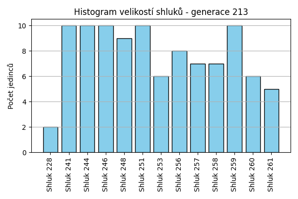
Stabilita mezi generací 212 → 213:
Shluk 252 → 257: 3 jedinců (25.0 %)
Shluk 252 → 259: 3 jedinců (25.0 %)
Shluk 252 → 260: 2 jedinců (16.7 %)
Shluk 252 → 246: 1 jedinců (8.3 %)
Shluk 252 → 244: 1 jedinců (8.3 %)
Shluk 252 → 256: 1 jedinců (8.3 %)
Shluk 252 → 251: 1 jedinců (8.3 %)
Shluk 256 → 256: 4 jedinců (50.0 %)
Shluk 256 → 248: 2 jedinců (25.0 %)
Shluk 256 → 253: 1 jedinců (12.5 %)
Shluk 256 → 260: 1 jedinců (12.5 %)
Shluk 253 → 253: 4 jedinců (57.1 %)
Shluk 253 → 261: 2 jedinců (28.6 %)
Shluk 253 → 244: 1 jedinců (14.3 %)
Shluk 228 → 246: 1 jedinců (12.5 %)
Shluk 228 → 228: 2 jedinců (25.0 %)
Shluk 228 → 259: 3 jedinců (37.5 %)
Shluk 228 → 256: 1 jedinců (12.5 %)
Shluk 228 → 261: 1 jedinců (12.5 %)
Shluk 255 → 259: 3 jedinců (30.0 %)
Shluk 255 → 241: 3 jedinců (30.0 %)
Shluk 255 → 248: 3 jedinců (30.0 %)
Shluk 255 → 260: 1 jedinců (10.0 %)
Shluk 246 → 244: 2 jedinců (22.2 %)
Shluk 246 → 260: 1 jedinců (11.1 %)
Shluk 246 → 246: 5 jedinců (55.6 %)
Shluk 246 → 261: 1 jedinců (11.1 %)
Shluk 241 → 241: 7 jedinců (50.0 %)
Shluk 241 → 244: 1 jedinců (7.1 %)
Shluk 241 → 251: 4 jedinců (28.6 %)
Shluk 241 → 246: 1 jedinců (7.1 %)
Shluk 241 → 248: 1 jedinců (7.1 %)
Shluk 257 → 257: 2 jedinců (50.0 %)
Shluk 257 → 244: 1 jedinců (25.0 %)
Shluk 257 → 258: 1 jedinců (25.0 %)
Shluk 258 → 258: 6 jedinců (100.0 %)
Shluk 251 → 260: 1 jedinců (12.5 %)
Shluk 251 → 251: 5 jedinců (62.5 %)
Shluk 251 → 244: 1 jedinců (12.5 %)
Shluk 251 → 256: 1 jedinců (12.5 %)
Shluk 244 → 253: 1 jedinců (10.0 %)
Shluk 244 → 246: 2 jedinců (20.0 %)
Shluk 244 → 259: 1 jedinců (10.0 %)
Shluk 244 → 244: 3 jedinců (30.0 %)
Shluk 244 → 257: 2 jedinců (20.0 %)
Shluk 244 → 256: 1 jedinců (10.0 %)
Shluk 248 → 248: 3 jedinců (75.0 %)
Shluk 248 → 261: 1 jedinců (25.0 %)
Jaccardovo mapování a overlap: Generace 212 → 213
- Shluk 252 → 257 (Jaccard: 0.19, Overlap: 0.43)
- Shluk 256 → 256 (Jaccard: 0.33, Overlap: 0.50)
- Shluk 253 → 253 (Jaccard: 0.44, Overlap: 0.67)
- Shluk 228 → 228 (Jaccard: 0.25, Overlap: 1.00)
- Shluk 255 → 248 (Jaccard: 0.19, Overlap: 0.33)
- Shluk 246 → 246 (Jaccard: 0.36, Overlap: 0.56)
- Shluk 241 → 241 (Jaccard: 0.41, Overlap: 0.70)
- Shluk 257 → 257 (Jaccard: 0.22, Overlap: 0.50)
- Shluk 258 → 258 (Jaccard: 0.86, Overlap: 1.00)
- Shluk 251 → 251 (Jaccard: 0.38, Overlap: 0.62)
- Shluk 244 → 244 (Jaccard: 0.18, Overlap: 0.30)
- Shluk 248 → 248 (Jaccard: 0.30, Overlap: 0.75)
Posun centroidů mezi generací 212 → 213:
- Shluk 0: 1.1572
- Shluk 1: 1.3034
- Shluk 2: 1.7056
- Shluk 3: 1.7926
- Shluk 4: 2.1799
- Shluk 5: 1.5309
- Shluk 6: 1.9289
- Shluk 7: 1.6864
- Shluk 8: 1.6456
- Shluk 9: 2.1937
- Shluk 10: 1.8457
- Shluk 11: 2.3971
Generace 214
Stabilita mezi generací 213 → 214:
Shluk 257 → 257: 5 jedinců (71.4 %)
Shluk 257 → 263: 2 jedinců (28.6 %)
Shluk 256 → 256: 5 jedinců (62.5 %)
Shluk 256 → 246: 1 jedinců (12.5 %)
Shluk 256 → 262: 2 jedinců (25.0 %)
Shluk 253 → 262: 1 jedinců (16.7 %)
Shluk 253 → 251: 4 jedinců (66.7 %)
Shluk 253 → 244: 1 jedinců (16.7 %)
Shluk 246 → 246: 6 jedinců (60.0 %)
Shluk 246 → 262: 3 jedinců (30.0 %)
Shluk 246 → 257: 1 jedinců (10.0 %)
Shluk 259 → 257: 4 jedinců (40.0 %)
Shluk 259 → 259: 4 jedinců (40.0 %)
Shluk 259 → 244: 1 jedinců (10.0 %)
Shluk 259 → 248: 1 jedinců (10.0 %)
Shluk 241 → 257: 1 jedinců (10.0 %)
Shluk 241 → 248: 3 jedinců (30.0 %)
Shluk 241 → 241: 3 jedinců (30.0 %)
Shluk 241 → 258: 1 jedinců (10.0 %)
Shluk 241 → 251: 1 jedinců (10.0 %)
Shluk 241 → 259: 1 jedinců (10.0 %)
Shluk 244 → 262: 2 jedinců (20.0 %)
Shluk 244 → 251: 3 jedinců (30.0 %)
Shluk 244 → 263: 1 jedinců (10.0 %)
Shluk 244 → 244: 4 jedinců (40.0 %)
Shluk 258 → 258: 5 jedinců (71.4 %)
Shluk 258 → 241: 1 jedinců (14.3 %)
Shluk 258 → 259: 1 jedinců (14.3 %)
Shluk 248 → 251: 2 jedinců (22.2 %)
Shluk 248 → 263: 1 jedinců (11.1 %)
Shluk 248 → 262: 2 jedinců (22.2 %)
Shluk 248 → 257: 1 jedinců (11.1 %)
Shluk 248 → 259: 1 jedinců (11.1 %)
Shluk 248 → 248: 2 jedinců (22.2 %)
Shluk 260 → 258: 3 jedinců (50.0 %)
Shluk 260 → 244: 2 jedinců (33.3 %)
Shluk 260 → 257: 1 jedinců (16.7 %)
Shluk 251 → 251: 5 jedinců (50.0 %)
Shluk 251 → 257: 2 jedinců (20.0 %)
Shluk 251 → 248: 1 jedinců (10.0 %)
Shluk 251 → 241: 1 jedinců (10.0 %)
Shluk 251 → 258: 1 jedinců (10.0 %)
Shluk 228 → 246: 1 jedinců (50.0 %)
Shluk 228 → 262: 1 jedinců (50.0 %)
Shluk 261 → 257: 1 jedinců (20.0 %)
Shluk 261 → 256: 3 jedinců (60.0 %)
Shluk 261 → 246: 1 jedinců (20.0 %)
Jaccardovo mapování a overlap: Generace 213 → 214
- Shluk 257 → 257 (Jaccard: 0.28, Overlap: 0.71)
- Shluk 256 → 256 (Jaccard: 0.45, Overlap: 0.62)
- Shluk 253 → 251 (Jaccard: 0.24, Overlap: 0.67)
- Shluk 246 → 246 (Jaccard: 0.46, Overlap: 0.67)
- Shluk 259 → 259 (Jaccard: 0.31, Overlap: 0.57)
- Shluk 241 → 241 (Jaccard: 0.25, Overlap: 0.60)
- Shluk 244 → 244 (Jaccard: 0.29, Overlap: 0.50)
- Shluk 258 → 258 (Jaccard: 0.42, Overlap: 0.71)
- Shluk 248 → 248 (Jaccard: 0.14, Overlap: 0.29)
- Shluk 260 → 258 (Jaccard: 0.23, Overlap: 0.50)
- Shluk 251 → 251 (Jaccard: 0.25, Overlap: 0.50)
- Shluk 228 → 246 (Jaccard: 0.10, Overlap: 0.50)
- Shluk 261 → 256 (Jaccard: 0.30, Overlap: 0.60)
Posun centroidů mezi generací 213 → 214:
- Shluk 0: 1.1203
- Shluk 1: 1.6891
- Shluk 2: 1.7834
- Shluk 3: 1.5075
- Shluk 4: 1.6971
- Shluk 5: 2.0124
- Shluk 6: 1.8475
- Shluk 7: 1.6012
- Shluk 8: 1.5979
- Shluk 9: 2.1138
- Shluk 10: 2.1846
Generace 215
Stabilita mezi generací 214 → 215:
Shluk 257 → 257: 8 jedinců (50.0 %)
Shluk 257 → 264: 2 jedinců (12.5 %)
Shluk 257 → 241: 3 jedinců (18.8 %)
Shluk 257 → 263: 1 jedinců (6.2 %)
Shluk 257 → 258: 1 jedinců (6.2 %)
Shluk 257 → 265: 1 jedinců (6.2 %)
Shluk 256 → 248: 3 jedinců (37.5 %)
Shluk 256 → 259: 3 jedinců (37.5 %)
Shluk 256 → 246: 1 jedinců (12.5 %)
Shluk 256 → 265: 1 jedinců (12.5 %)
Shluk 262 → 262: 6 jedinců (54.5 %)
Shluk 262 → 266: 3 jedinců (27.3 %)
Shluk 262 → 241: 1 jedinců (9.1 %)
Shluk 262 → 264: 1 jedinců (9.1 %)
Shluk 246 → 263: 1 jedinců (11.1 %)
Shluk 246 → 264: 1 jedinců (11.1 %)
Shluk 246 → 246: 3 jedinců (33.3 %)
Shluk 246 → 244: 2 jedinců (22.2 %)
Shluk 246 → 258: 1 jedinců (11.1 %)
Shluk 246 → 248: 1 jedinců (11.1 %)
Shluk 248 → 248: 6 jedinců (85.7 %)
Shluk 248 → 262: 1 jedinců (14.3 %)
Shluk 258 → 258: 4 jedinců (40.0 %)
Shluk 258 → 264: 4 jedinců (40.0 %)
Shluk 258 → 241: 1 jedinců (10.0 %)
Shluk 258 → 259: 1 jedinců (10.0 %)
Shluk 251 → 264: 1 jedinců (6.7 %)
Shluk 251 → 251: 6 jedinců (40.0 %)
Shluk 251 → 263: 1 jedinců (6.7 %)
Shluk 251 → 259: 1 jedinců (6.7 %)
Shluk 251 → 265: 1 jedinců (6.7 %)
Shluk 251 → 258: 1 jedinců (6.7 %)
Shluk 251 → 244: 1 jedinců (6.7 %)
Shluk 251 → 241: 3 jedinců (20.0 %)
Shluk 263 → 248: 1 jedinců (25.0 %)
Shluk 263 → 241: 1 jedinců (25.0 %)
Shluk 263 → 251: 1 jedinců (25.0 %)
Shluk 263 → 263: 1 jedinců (25.0 %)
Shluk 259 → 265: 1 jedinců (14.3 %)
Shluk 259 → 259: 3 jedinců (42.9 %)
Shluk 259 → 266: 1 jedinců (14.3 %)
Shluk 259 → 244: 1 jedinců (14.3 %)
Shluk 259 → 264: 1 jedinců (14.3 %)
Shluk 244 → 244: 7 jedinců (87.5 %)
Shluk 244 → 265: 1 jedinců (12.5 %)
Shluk 241 → 241: 2 jedinců (40.0 %)
Shluk 241 → 248: 1 jedinců (20.0 %)
Shluk 241 → 244: 1 jedinců (20.0 %)
Shluk 241 → 262: 1 jedinců (20.0 %)
Jaccardovo mapování a overlap: Generace 214 → 215
- Shluk 257 → 257 (Jaccard: 0.50, Overlap: 1.00)
- Shluk 256 → 259 (Jaccard: 0.23, Overlap: 0.38)
- Shluk 262 → 262 (Jaccard: 0.46, Overlap: 0.75)
- Shluk 246 → 246 (Jaccard: 0.30, Overlap: 0.75)
- Shluk 248 → 248 (Jaccard: 0.46, Overlap: 0.86)
- Shluk 258 → 258 (Jaccard: 0.31, Overlap: 0.57)
- Shluk 251 → 251 (Jaccard: 0.38, Overlap: 0.86)
- Shluk 263 → 263 (Jaccard: 0.14, Overlap: 0.25)
- Shluk 259 → 259 (Jaccard: 0.25, Overlap: 0.43)
- Shluk 244 → 244 (Jaccard: 0.54, Overlap: 0.88)
- Shluk 241 → 241 (Jaccard: 0.14, Overlap: 0.40)
Posun centroidů mezi generací 214 → 215:
- Shluk 0: 1.3985
- Shluk 1: 1.4701
- Shluk 2: 1.7002
- Shluk 3: 0.6523
- Shluk 4: 1.5040
- Shluk 5: 0.3870
- Shluk 6: 2.0852
- Shluk 7: 1.9972
- Shluk 8: 2.0609
- Shluk 9: 2.1910
- Shluk 10: 1.8646
Generace 216
Stabilita mezi generací 215 → 216:
Shluk 257 → 257: 6 jedinců (75.0 %)
Shluk 257 → 269: 1 jedinců (12.5 %)
Shluk 257 → 268: 1 jedinců (12.5 %)
Shluk 248 → 266: 5 jedinců (41.7 %)
Shluk 248 → 268: 5 jedinců (41.7 %)
Shluk 248 → 246: 2 jedinců (16.7 %)
Shluk 262 → 267: 3 jedinců (37.5 %)
Shluk 262 → 262: 3 jedinců (37.5 %)
Shluk 262 → 268: 2 jedinců (25.0 %)
Shluk 263 → 267: 1 jedinců (25.0 %)
Shluk 263 → 241: 2 jedinců (50.0 %)
Shluk 263 → 269: 1 jedinců (25.0 %)
Shluk 264 → 257: 2 jedinců (20.0 %)
Shluk 264 → 269: 2 jedinců (20.0 %)
Shluk 264 → 268: 2 jedinců (20.0 %)
Shluk 264 → 258: 3 jedinců (30.0 %)
Shluk 264 → 244: 1 jedinců (10.0 %)
Shluk 241 → 241: 5 jedinců (45.5 %)
Shluk 241 → 268: 1 jedinců (9.1 %)
Shluk 241 → 267: 2 jedinců (18.2 %)
Shluk 241 → 251: 1 jedinců (9.1 %)
Shluk 241 → 266: 1 jedinců (9.1 %)
Shluk 241 → 244: 1 jedinců (9.1 %)
Shluk 259 → 267: 1 jedinců (12.5 %)
Shluk 259 → 259: 6 jedinců (75.0 %)
Shluk 259 → 258: 1 jedinců (12.5 %)
Shluk 258 → 258: 4 jedinců (57.1 %)
Shluk 258 → 241: 1 jedinců (14.3 %)
Shluk 258 → 267: 2 jedinců (28.6 %)
Shluk 251 → 251: 4 jedinců (57.1 %)
Shluk 251 → 244: 1 jedinců (14.3 %)
Shluk 251 → 241: 1 jedinců (14.3 %)
Shluk 251 → 268: 1 jedinců (14.3 %)
Shluk 246 → 246: 4 jedinců (100.0 %)
Shluk 265 → 269: 1 jedinců (20.0 %)
Shluk 265 → 267: 1 jedinců (20.0 %)
Shluk 265 → 262: 2 jedinců (40.0 %)
Shluk 265 → 241: 1 jedinců (20.0 %)
Shluk 266 → 266: 4 jedinců (100.0 %)
Shluk 244 → 244: 9 jedinců (75.0 %)
Shluk 244 → 267: 1 jedinců (8.3 %)
Shluk 244 → 269: 1 jedinců (8.3 %)
Shluk 244 → 251: 1 jedinců (8.3 %)
Jaccardovo mapování a overlap: Generace 215 → 216
- Shluk 257 → 257 (Jaccard: 0.60, Overlap: 0.75)
- Shluk 248 → 266 (Jaccard: 0.29, Overlap: 0.50)
- Shluk 262 → 262 (Jaccard: 0.30, Overlap: 0.60)
- Shluk 263 → 241 (Jaccard: 0.17, Overlap: 0.50)
- Shluk 264 → 258 (Jaccard: 0.20, Overlap: 0.38)
- Shluk 241 → 241 (Jaccard: 0.31, Overlap: 0.50)
- Shluk 259 → 259 (Jaccard: 0.75, Overlap: 1.00)
- Shluk 258 → 258 (Jaccard: 0.36, Overlap: 0.57)
- Shluk 251 → 251 (Jaccard: 0.44, Overlap: 0.67)
- Shluk 246 → 246 (Jaccard: 0.67, Overlap: 1.00)
- Shluk 265 → 262 (Jaccard: 0.25, Overlap: 0.40)
- Shluk 266 → 266 (Jaccard: 0.40, Overlap: 1.00)
- Shluk 244 → 244 (Jaccard: 0.60, Overlap: 0.75)
Posun centroidů mezi generací 215 → 216:
- Shluk 0: 1.2802
- Shluk 1: 1.2803
- Shluk 2: 1.6868
- Shluk 3: 0.7052
- Shluk 4: 1.1616
- Shluk 5: 1.2467
- Shluk 6: 1.9174
- Shluk 7: 1.4615
- Shluk 8: 2.0182
- Shluk 9: 1.8241
- Shluk 10: 0.3104
- Shluk 11: 1.5196
Generace 217
Stabilita mezi generací 216 → 217:
Shluk 257 → 270: 2 jedinců (25.0 %)
Shluk 257 → 257: 5 jedinců (62.5 %)
Shluk 257 → 259: 1 jedinců (12.5 %)
Shluk 266 → 271: 2 jedinců (20.0 %)
Shluk 266 → 266: 4 jedinců (40.0 %)
Shluk 266 → 251: 1 jedinců (10.0 %)
Shluk 266 → 262: 1 jedinců (10.0 %)
Shluk 266 → 268: 2 jedinců (20.0 %)
Shluk 267 → 259: 1 jedinců (9.1 %)
Shluk 267 → 267: 5 jedinců (45.5 %)
Shluk 267 → 244: 1 jedinců (9.1 %)
Shluk 267 → 246: 2 jedinců (18.2 %)
Shluk 267 → 251: 1 jedinců (9.1 %)
Shluk 267 → 258: 1 jedinců (9.1 %)
Shluk 241 → 267: 4 jedinců (40.0 %)
Shluk 241 → 270: 2 jedinců (20.0 %)
Shluk 241 → 266: 1 jedinců (10.0 %)
Shluk 241 → 262: 2 jedinců (20.0 %)
Shluk 241 → 271: 1 jedinců (10.0 %)
Shluk 262 → 267: 2 jedinců (40.0 %)
Shluk 262 → 262: 2 jedinců (40.0 %)
Shluk 262 → 259: 1 jedinců (20.0 %)
Shluk 268 → 268: 5 jedinců (41.7 %)
Shluk 268 → 244: 1 jedinců (8.3 %)
Shluk 268 → 272: 3 jedinců (25.0 %)
Shluk 268 → 258: 1 jedinců (8.3 %)
Shluk 268 → 271: 1 jedinců (8.3 %)
Shluk 268 → 246: 1 jedinců (8.3 %)
Shluk 258 → 258: 4 jedinců (50.0 %)
Shluk 258 → 257: 1 jedinců (12.5 %)
Shluk 258 → 271: 2 jedinců (25.0 %)
Shluk 258 → 272: 1 jedinců (12.5 %)
Shluk 269 → 268: 2 jedinců (33.3 %)
Shluk 269 → 244: 2 jedinců (33.3 %)
Shluk 269 → 266: 1 jedinců (16.7 %)
Shluk 269 → 271: 1 jedinců (16.7 %)
Shluk 251 → 251: 4 jedinců (66.7 %)
Shluk 251 → 246: 1 jedinců (16.7 %)
Shluk 251 → 258: 1 jedinců (16.7 %)
Shluk 246 → 244: 1 jedinců (16.7 %)
Shluk 246 → 246: 2 jedinců (33.3 %)
Shluk 246 → 251: 1 jedinců (16.7 %)
Shluk 246 → 270: 1 jedinců (16.7 %)
Shluk 246 → 257: 1 jedinců (16.7 %)
Shluk 244 → 262: 3 jedinců (25.0 %)
Shluk 244 → 272: 1 jedinců (8.3 %)
Shluk 244 → 251: 3 jedinců (25.0 %)
Shluk 244 → 244: 4 jedinců (33.3 %)
Shluk 244 → 271: 1 jedinců (8.3 %)
Shluk 259 → 270: 1 jedinců (16.7 %)
Shluk 259 → 259: 2 jedinců (33.3 %)
Shluk 259 → 257: 2 jedinců (33.3 %)
Shluk 259 → 267: 1 jedinců (16.7 %)
Jaccardovo mapování a overlap: Generace 216 → 217
- Shluk 257 → 257 (Jaccard: 0.42, Overlap: 0.62)
- Shluk 266 → 266 (Jaccard: 0.33, Overlap: 0.67)
- Shluk 267 → 267 (Jaccard: 0.28, Overlap: 0.45)
- Shluk 241 → 267 (Jaccard: 0.22, Overlap: 0.40)
- Shluk 262 → 262 (Jaccard: 0.18, Overlap: 0.40)
- Shluk 268 → 268 (Jaccard: 0.31, Overlap: 0.56)
- Shluk 258 → 258 (Jaccard: 0.36, Overlap: 0.57)
- Shluk 269 → 244 (Jaccard: 0.15, Overlap: 0.33)
- Shluk 251 → 251 (Jaccard: 0.33, Overlap: 0.67)
- Shluk 246 → 246 (Jaccard: 0.20, Overlap: 0.33)
- Shluk 244 → 244 (Jaccard: 0.24, Overlap: 0.44)
- Shluk 259 → 259 (Jaccard: 0.22, Overlap: 0.40)
Posun centroidů mezi generací 216 → 217:
- Shluk 0: 1.3992
- Shluk 1: 1.1093
- Shluk 2: 1.3645
- Shluk 3: 1.1157
- Shluk 4: 1.4480
- Shluk 5: 1.7553
- Shluk 6: 1.0373
- Shluk 7: 1.4367
- Shluk 8: 1.7634
- Shluk 9: 1.5324
- Shluk 10: 1.3639
- Shluk 11: 1.5354
Generace 218
Stabilita mezi generací 217 → 218:
Shluk 270 → 270: 3 jedinců (50.0 %)
Shluk 270 → 271: 1 jedinců (16.7 %)
Shluk 270 → 262: 2 jedinců (33.3 %)
Shluk 271 → 267: 5 jedinců (62.5 %)
Shluk 271 → 271: 3 jedinců (37.5 %)
Shluk 259 → 273: 1 jedinců (20.0 %)
Shluk 259 → 259: 3 jedinců (60.0 %)
Shluk 259 → 272: 1 jedinců (20.0 %)
Shluk 267 → 267: 8 jedinců (66.7 %)
Shluk 267 → 259: 3 jedinců (25.0 %)
Shluk 267 → 268: 1 jedinců (8.3 %)
Shluk 257 → 270: 4 jedinců (44.4 %)
Shluk 257 → 257: 5 jedinců (55.6 %)
Shluk 244 → 273: 2 jedinců (22.2 %)
Shluk 244 → 259: 1 jedinců (11.1 %)
Shluk 244 → 244: 6 jedinců (66.7 %)
Shluk 268 → 268: 5 jedinců (55.6 %)
Shluk 268 → 270: 1 jedinců (11.1 %)
Shluk 268 → 273: 3 jedinců (33.3 %)
Shluk 258 → 246: 2 jedinců (28.6 %)
Shluk 258 → 273: 1 jedinců (14.3 %)
Shluk 258 → 272: 1 jedinců (14.3 %)
Shluk 258 → 270: 1 jedinců (14.3 %)
Shluk 258 → 244: 1 jedinců (14.3 %)
Shluk 258 → 267: 1 jedinců (14.3 %)
Shluk 251 → 251: 4 jedinců (40.0 %)
Shluk 251 → 246: 4 jedinců (40.0 %)
Shluk 251 → 244: 1 jedinců (10.0 %)
Shluk 251 → 272: 1 jedinců (10.0 %)
Shluk 262 → 262: 5 jedinců (62.5 %)
Shluk 262 → 259: 1 jedinců (12.5 %)
Shluk 262 → 268: 1 jedinců (12.5 %)
Shluk 262 → 270: 1 jedinců (12.5 %)
Shluk 246 → 246: 5 jedinců (83.3 %)
Shluk 246 → 271: 1 jedinců (16.7 %)
Shluk 266 → 267: 1 jedinců (16.7 %)
Shluk 266 → 272: 2 jedinců (33.3 %)
Shluk 266 → 251: 1 jedinců (16.7 %)
Shluk 266 → 259: 2 jedinců (33.3 %)
Shluk 272 → 272: 3 jedinců (60.0 %)
Shluk 272 → 257: 1 jedinců (20.0 %)
Shluk 272 → 268: 1 jedinců (20.0 %)
Jaccardovo mapování a overlap: Generace 217 → 218
- Shluk 270 → 270 (Jaccard: 0.23, Overlap: 0.50)
- Shluk 271 → 271 (Jaccard: 0.30, Overlap: 0.60)
- Shluk 259 → 259 (Jaccard: 0.25, Overlap: 0.60)
- Shluk 267 → 267 (Jaccard: 0.42, Overlap: 0.67)
- Shluk 257 → 257 (Jaccard: 0.50, Overlap: 0.83)
- Shluk 244 → 244 (Jaccard: 0.55, Overlap: 0.75)
- Shluk 268 → 268 (Jaccard: 0.42, Overlap: 0.62)
- Shluk 258 → 246 (Jaccard: 0.12, Overlap: 0.29)
- Shluk 251 → 251 (Jaccard: 0.36, Overlap: 0.80)
- Shluk 262 → 262 (Jaccard: 0.50, Overlap: 0.71)
- Shluk 246 → 246 (Jaccard: 0.42, Overlap: 0.83)
- Shluk 266 → 272 (Jaccard: 0.17, Overlap: 0.33)
- Shluk 272 → 272 (Jaccard: 0.30, Overlap: 0.60)
Posun centroidů mezi generací 217 → 218:
- Shluk 0: 1.3508
- Shluk 1: 1.3277
- Shluk 2: 1.2996
- Shluk 3: 1.2431
- Shluk 4: 1.7899
- Shluk 5: 1.2706
- Shluk 6: 1.2656
- Shluk 7: 1.0838
- Shluk 8: 1.4800
- Shluk 9: 1.4814
- Shluk 10: 1.4142
- Shluk 11: 1.2100
Generace 219
Stabilita mezi generací 218 → 219:
Shluk 270 → 270: 9 jedinců (90.0 %)
Shluk 270 → 268: 1 jedinců (10.0 %)
Shluk 267 → 267: 8 jedinců (53.3 %)
Shluk 267 → 271: 1 jedinců (6.7 %)
Shluk 267 → 275: 2 jedinců (13.3 %)
Shluk 267 → 277: 4 jedinců (26.7 %)
Shluk 273 → 273: 5 jedinců (71.4 %)
Shluk 273 → 276: 1 jedinců (14.3 %)
Shluk 273 → 271: 1 jedinců (14.3 %)
Shluk 259 → 274: 5 jedinců (50.0 %)
Shluk 259 → 259: 4 jedinců (40.0 %)
Shluk 259 → 271: 1 jedinců (10.0 %)
Shluk 268 → 274: 1 jedinců (12.5 %)
Shluk 268 → 268: 5 jedinců (62.5 %)
Shluk 268 → 276: 1 jedinců (12.5 %)
Shluk 268 → 270: 1 jedinců (12.5 %)
Shluk 271 → 271: 4 jedinců (80.0 %)
Shluk 271 → 276: 1 jedinců (20.0 %)
Shluk 246 → 275: 2 jedinců (18.2 %)
Shluk 246 → 277: 1 jedinců (9.1 %)
Shluk 246 → 271: 4 jedinců (36.4 %)
Shluk 246 → 251: 2 jedinců (18.2 %)
Shluk 246 → 268: 1 jedinců (9.1 %)
Shluk 246 → 274: 1 jedinců (9.1 %)
Shluk 251 → 251: 4 jedinců (80.0 %)
Shluk 251 → 274: 1 jedinců (20.0 %)
Shluk 244 → 244: 5 jedinců (62.5 %)
Shluk 244 → 271: 1 jedinců (12.5 %)
Shluk 244 → 262: 2 jedinců (25.0 %)
Shluk 262 → 262: 4 jedinců (57.1 %)
Shluk 262 → 271: 2 jedinců (28.6 %)
Shluk 262 → 273: 1 jedinců (14.3 %)
Shluk 257 → 270: 4 jedinců (66.7 %)
Shluk 257 → 268: 1 jedinců (16.7 %)
Shluk 257 → 267: 1 jedinců (16.7 %)
Shluk 272 → 268: 2 jedinců (25.0 %)
Shluk 272 → 267: 4 jedinců (50.0 %)
Shluk 272 → 276: 1 jedinců (12.5 %)
Shluk 272 → 277: 1 jedinců (12.5 %)
Jaccardovo mapování a overlap: Generace 218 → 219
- Shluk 270 → 270 (Jaccard: 0.60, Overlap: 0.90)
- Shluk 267 → 267 (Jaccard: 0.40, Overlap: 0.62)
- Shluk 273 → 273 (Jaccard: 0.62, Overlap: 0.83)
- Shluk 259 → 259 (Jaccard: 0.40, Overlap: 1.00)
- Shluk 268 → 268 (Jaccard: 0.38, Overlap: 0.62)
- Shluk 271 → 271 (Jaccard: 0.27, Overlap: 0.80)
- Shluk 246 → 271 (Jaccard: 0.19, Overlap: 0.36)
- Shluk 251 → 251 (Jaccard: 0.57, Overlap: 0.80)
- Shluk 244 → 244 (Jaccard: 0.62, Overlap: 1.00)
- Shluk 262 → 262 (Jaccard: 0.44, Overlap: 0.67)
- Shluk 257 → 270 (Jaccard: 0.25, Overlap: 0.67)
- Shluk 272 → 267 (Jaccard: 0.24, Overlap: 0.50)
Posun centroidů mezi generací 218 → 219:
- Shluk 0: 1.2393
- Shluk 1: 1.1999
- Shluk 2: 1.3383
- Shluk 3: 0.8734
- Shluk 4: 0.8477
- Shluk 5: 1.1796
- Shluk 6: 1.1155
- Shluk 7: 1.4116
- Shluk 8: 1.5792
- Shluk 9: 0.2499
- Shluk 10: 1.2781
- Shluk 11: 1.6931